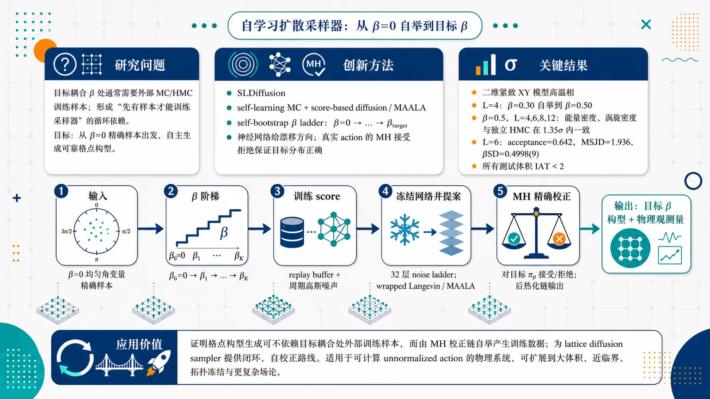
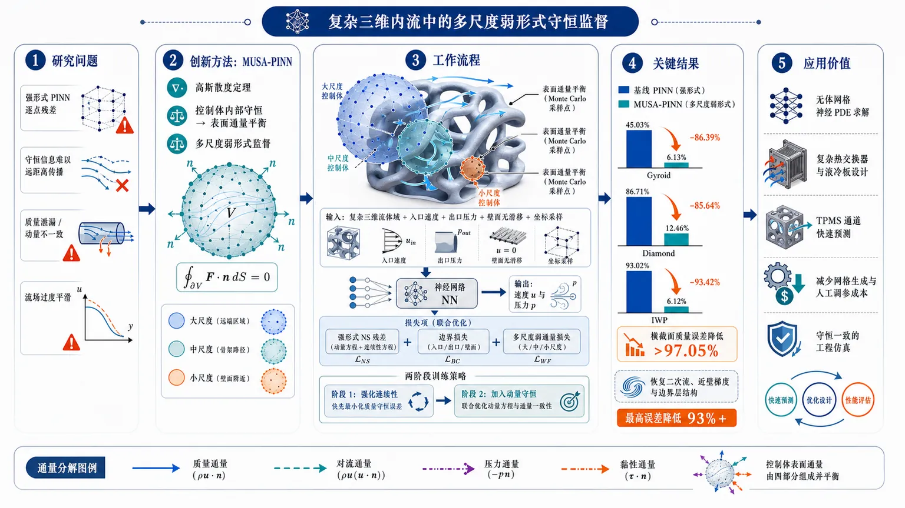
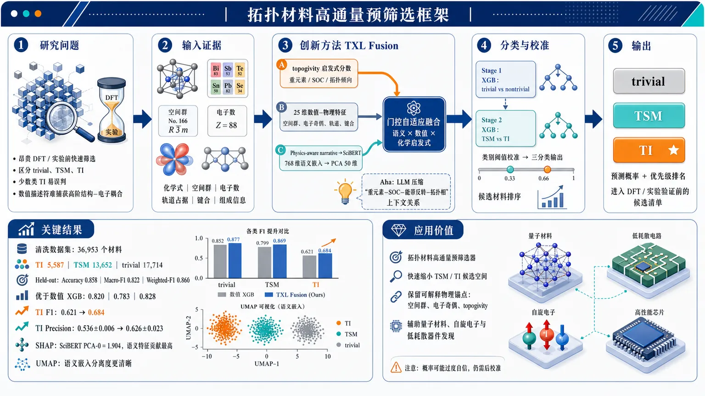
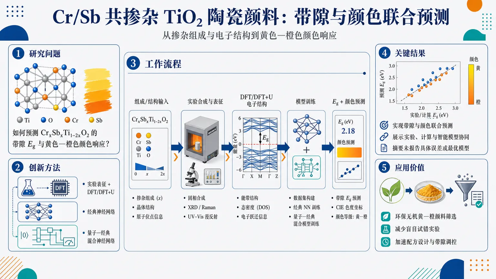
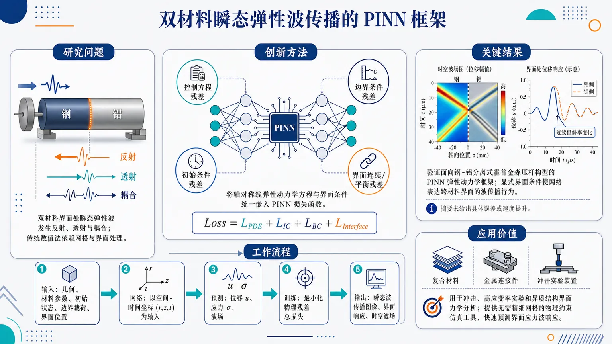
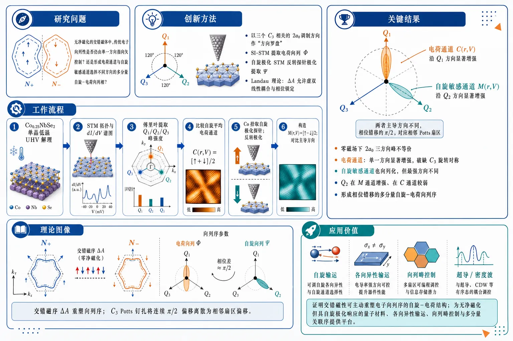
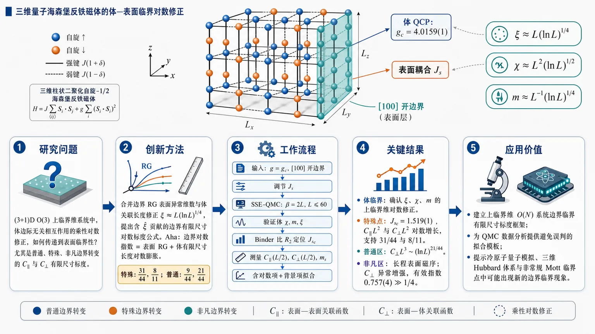
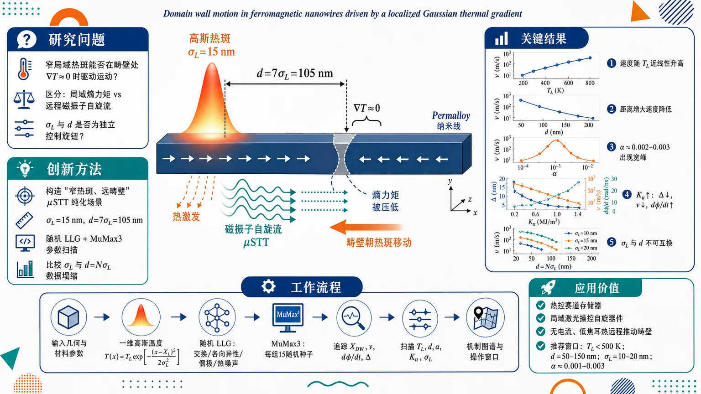
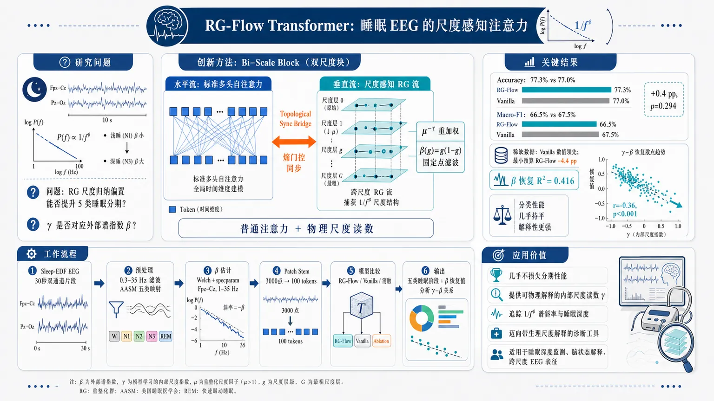

AI × Science 文献日报 2026/07/15
聚焦 AI × 物理 / 化学 / 材料交叉方向，自动过滤明显偏题的医学、教育与社会科学内容，并按主题重新排版，便于快速深读。
AI | 物理 | 化学 | 材料 | 交叉学科 | arXiv | 预印本追踪
原始候选 212 篇中，已剔除 0 篇明显偏离主线的内容，并从剩余 212 篇主线相关文献中精选 60 篇进入日报页，优先保留 AI × 物理 / 化学 / 材料交叉与关键计算方法工作。
核心关注（ML × ferro / 凝聚态）
8 篇今日进展从 NbOI2、CrI3、CrSBr、BaTiO3 等铁电/磁性个例中常见的 DFT+U、equivariant GNN、MACE、NEP 建模，转向更底层的采样、势能面搜索、结构筛选与实验生长控制。SLDiffusion 用“扩散提议+Metropolis-Hastings 校正”替代外部蒙特卡洛数据依赖，直接服务格点场与相变构型采样。uMLP 全局结构搜索、MLIP+minima hopping 界面预测、Cu-Zr 金属玻璃可解释结构表征，把凝聚态问题从局部弛豫推进到复杂能量景观探索。对称性深度学习与物理知情生长模型把 Maxwell 等变性、工艺物理约束显式写入代理模型，降低高成本仿真和实验迭代次数。
-
01自学习扩散模型生成格点构型Lattice Configuration Generation with a Self-Learning Diffusion Model
📄 摘要：提出 SLDiffusion 格点场采样器：从 β=0 精确采样构型出发，在每个 β 用固定学习得分生成周期高斯提议，并以梅特罗波利斯–黑斯廷斯校正到同一物理目标；下一阶段只使用链的回放构型训练得分，无需外部蒙特卡洛数据。
💡 亮点：SLDiffusion 将扩散采样与严格 MH 校正结合，从 β=0 自举生成格点场构型。核心价值在于减少对预生成蒙特卡洛训练集的依赖，同时保留目标分布校正。
📐 方法要点：自学习扩散生成周期高斯提议，并用MH校正到目标分布。
🔗 相关工作关联：呼应扩散采样、Langevin/score模型、格点场蒙特卡洛与相变构型生成。
💡 对你方向的启示：可为铁电畴、Ising自旋、晶格规范场提供少外部数据的平衡采样器。
-
02通用机器学习势的无机晶体全局优化表现Performance of universal machine learning potentials in global optimization of inorganic crystal structures
📄 摘要：比较 12 个预训练通用机器学习势在无约束演化晶体结构搜索中的表现。任务要求模型访问参考集外的复杂非磁性无机结构基元，用以检验 uMLP 在全局优化而非局部弛豫中的稳健性；摘要强调需随训练集扩张同步系统基准测试。
💡 亮点：12 个 uMLP 被放入无约束演化搜索，直接测试其外推到新结构基元的能力。该基准把关注点从能量误差转向实际晶体发现中的搜索可靠性。
📐 方法要点：评测12种预训练uMLP在无约束演化晶体搜索中的鲁棒性。
🔗 相关工作关联：对应MACE、CHGNet、M3GNet、ALIGNN类通用势与USPEX/CALYPSO搜索。
💡 对你方向的启示：做相稳定性筛选不能只看弛豫误差，需检验出训练域后的全局搜索能力。
-
03拓扑材料发现的 TXL 融合框架TXL Fusion: A Hybrid Machine Learning Framework Integrating Chemical Heuristics and Large Language Models for Topological Materials Discovery
📄 摘要：TXL Fusion 结合化学启发式规则、可解释数值描述符与大语言模型，用于拓扑绝缘体和拓扑半金属候选筛选。目标是在第一性原理计算和实验验证成本较高的条件下，利用物理可解释特征与 LLM 推理提高拓扑材料发现效率。
💡 亮点：TXL Fusion 把化学规则、数值描述符和 LLM 融合到拓扑材料筛选流程。它针对 TI/TSM 候选降低高通量第一性原理前筛成本。
📐 方法要点：化学启发式、可解释数值描述符与LLM推理融合筛拓扑材料。
🔗 相关工作关联：呼应拓扑量子化学、高通量DFT、材料知识图谱与LLM材料筛选。
💡 对你方向的启示：LLM更适合作规则整合和候选排序，关键仍是可解释物理特征约束。
-
04机器学习解析 A2B2O7 焦绿石稳定性Exploring structural stability and bonding trends in A 2 B 2 O 7 Pyrochlores using machine learning
📄 摘要：面向 A2B2O7 焦绿石，利用机器学习探索结构稳定性与成键趋势。题名显示关注 A、B 位化学组成对焦绿石结构形成和键合特征的影响；所给摘要未列出数据规模、模型类型、误差或筛选出的具体化合物。
💡 亮点：该工作把机器学习用于 A2B2O7 焦绿石稳定性和成键规律识别。对稀土/过渡金属氧化物的组成筛选有直接关联，但需正文指标判断模型可靠性。
📐 方法要点：从A/B位化学组成学习A2B2O7焦绿石稳定性与成键趋势。
🔗 相关工作关联：对应钙钛矿/尖晶石容忍因子、离子半径规则和组成描述符分类。
💡 对你方向的启示：可迁移到铁电氧化物固溶体，先用化学空间缩小DFT候选范围。
-
05物理知情机器学习指导半导体异质结构按需生长On-demand growth of semiconductor heterostructures guided by physics-informed machine learning
📄 摘要：报道物理知情机器学习用于半导体异质结构按需生长调控。题名指向以物理约束模型连接生长参数与目标异质结构，实现实验制备过程的预测或闭环指导；所给摘要未给出材料体系、模型结构和生长精度数值。
💡 亮点：物理知情机器学习被用于指导半导体异质结构生长，而非仅做事后表征分析。若闭环精度充分，将直接影响外延材料的可控制备。
📐 方法要点：物理知情机器学习连接生长参数与目标半导体异质结构。
🔗 相关工作关联：呼应MBE/MOCVD闭环优化、贝叶斯实验设计和物理约束代理模型。
💡 对你方向的启示：薄膜铁电/磁性异质结生长可引入物理先验减少试错实验。
-
06机器学习势最小跳跃预测界面结构Predicting interface structure using the minima hopping method with a machine learning interatomic potential
📄 摘要：将最小跳跃方法与机器学习原子间势结合，用于预测界面结构。该路线以快速势能面搜索替代大量第一性原理候选枚举，适合界面构型自由度高、局部极小众多的体系；摘要未给出具体界面材料、势模型和验证误差。
💡 亮点：最小跳跃全局搜索与机器学习势耦合，瞄准界面原子结构预测这一高维难题。该方法有望把界面建模从手工构型假设推进到自动势能面搜索。
📐 方法要点：用机器学习原子间势加速minima hopping预测界面结构。
🔗 相关工作关联：呼应MLIP势能面搜索、晶界/外延界面构型枚举和主动学习DFT。
💡 对你方向的启示：复杂铁电畴壁、磁性层间界面可用MLIP先搜极小，再DFT精修。
-
07可解释机器学习揭示 Cu Zr 玻璃局域结构Explainable machine learning reveals that local structural motifs encode the thermodynamic state across the Cu Zr metallic glass-forming range
📄 摘要：针对 Cu Zr 金属玻璃形成组成范围，使用可解释机器学习分析局域结构基元与热力学状态的关系。题名给出的主要结论是局域结构基元编码了跨玻璃形成区间的热力学状态；所给摘要未列出模拟规模、特征定义和关键基元。
💡 亮点：可解释模型将 Cu Zr 金属玻璃的局域结构图案与热力学状态直接关联。该结果强化了用结构基元理解玻璃形成与状态变量的路线。
📐 方法要点：可解释ML关联Cu-Zr局域结构基元与热力学状态。
🔗 相关工作关联：对应金属玻璃短程序、Voronoi基元、SOAP/局域环境描述符分析。
💡 对你方向的启示：启发在无序铁电、弛豫铁电和非晶磁体中寻找状态编码局域基元。
-
08面向电磁散射的对称性深度学习Symmetry-Informed Deep Learning for Electromagnetic Scattering
📄 摘要：利用麦克斯韦方程的等变性推导电磁散射参数在几何或坐标变换下的一般变换规则，并把对称性注入深度学习代理模型。目标是在昂贵数值仿真生成训练数据受限时，提高从器件设计参数到散射参数预测的数据效率。
💡 亮点：该方法把电磁散射的对称变换律直接用于神经网络训练。相较黑箱代理模型，它以麦克斯韦等变性减少仿真数据需求。
📐 方法要点：把Maxwell方程等变性写入散射参数深度学习代理模型。
🔗 相关工作关联：呼应群等变网络、物理知情神经网络、光子/电磁超材料逆设计。
💡 对你方向的启示：研究磁光、太赫兹铁电器件时，可用对称性约束提升小数据预测精度。
今日摘要
总览：今日文献主轴明显偏向“机器学习势—生成模型—物理约束网络”的闭环：自学习扩散模型生成晶格构型，通用机器学习势和含环境依赖电荷的长程势用于无机晶体、界面、多组元合金、声子纵横光学劈裂与介电常数预测，最小跳跃法被接入界面结构搜索。量子材料侧集中在交错磁体与极性磁体：Fe₂Mo₃O₈ 的应变可调位移电流和磁光克尔效应、MnTe 薄膜表面态反常霍尔效应、FeSb₂ 压力调控非相对论自旋劈裂，以及 YBCO|BNT|YBCO 结中太赫兹场与铁电势垒调制超导能隙动力学。
热点：热点一：材料发现自动化 → 用扩散模型、通用机器学习势、化学启发式规则与大语言模型联合完成构型生成、全局优化和拓扑材料筛选 → 典型工作包括晶格构型自学习扩散生成、无机晶体结构全局优化中的通用势评测、拓扑材料发现的化学启发式与大语言模型融合框架。热点二：可解释且物理一致的代理模型 → 将配位环境、局域结构母题、环境依赖电荷、弱形式物理约束和对称性嵌入模型，直接预测尖晶石氧化物/硫化物/硒化物稳定性与带隙、Cu-Zr 金属玻璃热力学状态、界面结构、介电常数和电磁散射 → 典型工作包括配位分辨尖晶石代理模型、Cu-Zr 局域母题可解释学习、长程带电机器学习势、对称性约束电磁散射深度学习。热点三：交错磁体、极性磁体与反铁磁读写 → 非相对论自旋劈裂、贝里曲率偶极、表面态反常霍尔、可调陈数反常量子霍尔、二阶拓扑绝缘相和隐藏反铁磁序纳米读写成为主线 → 典型体系包括 Fe₂Mo₃O₈、MnTe、FeSb₂、Ca₃(Ru₀.₉₉Ti₀.₀₁)₂O₇、La₀.₆₇Sr₀.₃₃MnO₃ 超薄膜。热点四：量子动力学与张量网络工具链 → 强化学习制备临界态和调度量子网络，量子电路学习用于自旋链噪声缓解，张量网络处理纳米片激子复合体与硬方格气体重整化 → 典型工作包括可编程量子结熵输运、光物质体系临界态制备、量子网络门认证和高维量子存储光子联网。
今日文献
60 篇 · 14 含图深析-
01
📄 摘要：提出 SLDiffusion 格点场采样器：从 β=0 精确采样构型出发，在每个 β 用固定学习得分生成周期高斯提议，并以梅特罗波利斯–黑斯廷斯校正到同一物理目标；下一阶段只使用链的回放构型训练得分，无需外部蒙特卡洛数据。
💡 亮点：SLDiffusion 将扩散采样与严格 MH 校正结合，从 β=0 自举生成格点场构型。核心价值在于减少对预生成蒙特卡洛训练集的依赖，同时保留目标分布校正。
📖 展开分析 + 配图

研究问题格点场论中的扩散采样器通常需要在目标耦合 β 处预先准备外部 Monte Carlo 训练样本，形成“先有样本才能训练采样器”的循环依赖；论文要解决的是：能否从可精确采样的 β=0 起点出发，不借助目标 β 的外部 HMC/MC 数据，自主生成可靠格点构型。创新方法提出 SLDiffusion：把 self-learning Monte Carlo 的“自生成训练数据 + Metropolis–Hastings 精确校正”嵌入 score-based diffusion / MAALA。核心 Aha 点是 self-bootstrap beta ladder：从 β=0 的均匀角变量精确样本开始，逐级推进 β；每一级只用前一级 MH 校正链保存的 replay 构型训练 score，再用固定 score 产生下一 β 的 MH 校正扩散提案。神经网络只负责漂移方向，真实 action 的 MH 接受拒绝保证目标分布正确。工作流程输入为二维紧致 XY 模型的 β=0 精确均匀构型；沿 β 阶梯 β0=0→β1→…→βK 递推。每阶段先用 replay buffer 加周期高斯噪声训练 score network，再冻结网络；随后用 32 层 noise ladder 的 wrapped Langevin / MAALA 提案生成候选构型，并在每个噪声层对同一物理目标 πβ 做 MH 校正；通过诊断筛选后的 MH 校正链状态进入下一阶段 replay；最终在目标 β 上固定网络和 kernel，输出后热化的 MH 校正 Markov 链构型及物理观测量。关键结果在二维紧致 XY 模型高温相中，L=4 的自举训练从 β=0.30 推进到 β=0.50；β=0.5 时，L=4、6、8、12 的能量密度和涡旋密度与独立 HMC 在 1.35σ 内一致。L=6、β=0.5 的高统计量实验使用 20,000 条热化轨迹和 50,000 条测量轨迹，acceptance=0.642，MSJD=1.936，βSD=0.4998(9)。所有测试体积中能量和涡旋密度的 integrated autocorrelation time 均低于 2。应用价值该研究证明了格点构型生成可以不依赖目标耦合处的外部训练样本，而是由 MH 校正链自举产生训练数据，为 lattice diffusion sampler 提供可闭环、自校正的训练路线。它适合可计算 unnormalized action 的物理系统，可作为未来大体积、近临界、拓扑冻结或更复杂场论采样方法的基础框架，但当前验证主要限于二维 XY 模型高温相。第一部分：核心概览（Overview）
该研究提出 SLDiffusion：一种无需外部目标耦合蒙特卡洛样本即可训练的 Metropolis 校正扩散采样器。方法从二维紧致 XY 模型中可精确采样的 β=0 分布出发，通过 self-bootstrap beta ladder 逐步推进到目标耦合；每一阶段只使用前一阶段 MH 校正链产生的 replay 数据训练 score。核心地位在于把 self-learning Monte Carlo 的“自生成训练数据 + 精确接受拒绝校正”原则移植到 score-based diffusion / MAALA 采样中，消除了扩散采样器通常依赖目标分布参考样本的循环需求。二维 XY 模型 β=0.5、L=4,6,8,12 的能量与涡旋密度与独立 HMC 在 1.35σ 内一致，能量与涡旋密度的 integrated autocorrelation time 均低于 2。
---
第二部分：结构化快速回顾
《Lattice Configuration Generation with a Self-Learning Diffusion Model》（None，）
背景
格点场论需要从玻尔兹曼分布 π(ϕ) ∝ exp[-S(ϕ)] 生成场构型。传统 HMC 在大体积、近连续极限或临界点附近可能出现慢模、临界慢化和拓扑冻结。近年来 normalizing flows、diffusion models、equivariant neural networks 被用于格点采样，但扩散采样器通常依赖外部 Monte Carlo 在目标耦合处预先生成训练集。
方法
SLDiffusion 从 β=0 的精确均匀角变量样本开始，沿 β ladder 逐步训练。每一阶段固定 score 网络，用 SLDiffusion-MAALA 产生目标为下一 β 的 MH 校正链；只有通过诊断筛选的 MH 校正 replay 构型被用于下一阶段训练。每个噪声层都针对同一个物理目标分布执行 MH 校正，而不是在中间 noised distributions 之间做未校正输运。
结果
二维紧致 XY 模型中，L=4 的 self-training 从 β=0.30 推进到 β=0.50。β=0.5 时，L=4,6,8,12 的能量和涡旋密度与独立 HMC 结果在 1.35σ 内一致。L=6、β=0.5 的高统计量测量使用 20,000 条 thermalization trajectories 和 50,000 条 measurement trajectories，得到 acceptance 0.642、MSJD 1.936、βSD 0.4998(9)。
讨论
核心机制不是 MAALA 或 MH 校正本身，而是从 β=0 出发、仅用 MH 校正 replay 递推训练的 self-bootstrap beta ladder。固定 transition kernel 的 MH 校正确保目标分布不变；score 精度主要影响效率而非精确性。
局限
二维 XY 测试位于高温相 β=0.30–0.50，远离 βBKT≈1.1199，没有证明临界慢化的一般性缓解。与 HMC 的比较按 saved trajectories 计量，不等价于计算效率比较；每条 SLDiffusion-MAALA trajectory 含 32 次全格点更新和 score evaluation。
结论
Metropolis 校正扩散采样器可以在没有目标耦合外部训练构型的情况下自训练，并在二维紧致 XY 模型高温相中产生与 HMC 一致的物理观测量。volume-native retraining 可改善 proposal displacement 和 autocorrelation，但近临界、大体积、真实 QCD 场景仍需进一步验证。
---
第三部分：逐章节冷凝解析（Section-by-Section Condensing）
Abstract
- Self-trained diffusion sampling without external Monte Carlo data
核心声明是扩散采样器可不依赖外部 Monte Carlo 训练数据。初始构型来自 β=0 的精确采样，然后沿 β 递推训练；每个噪声层使用同一物理目标分布进行 Metropolis–Hastings correction。英文证据：*"We show that a diffusion sampler for lattice-field configurations can be trained without preparing training data by an external Monte Carlo calculation."* 以及 *"Starting from exactly sampled configurations at β = 0, we construct a self-bootstrap sampler, SLDiffusion"*。
- Fixed learned score plus MH correction at every noise level
每一 β 阶段中，使用固定 learned score 产生 periodic Gaussian proposals，并在每个 noise level 上对同一 target distribution 做 MH 校正；训练下一阶段 score 的数据只来自当前 MH 校正链 replay。英文证据：*"periodic Gaussian proposals with a fixed learned score are Metropolis–Hastings corrected, at each β, against the same physical target at every noise level"*；*"only replay configurations from the resulting chain are used to train the score at the next stage."*
- Empirical validation in two-dimensional compact XY model
二维紧致 XY 模型中，self-training 在 L=4 从 β=0.30 推进到 β=0.50；β=0.5 时，L=4,6,8,12 的 energy 和 vortex densities 与独立 HMC 在 1.35σ 内一致。英文证据：*"In the two-dimensional compact XY model, self-training proceeds from β = 0.30 to 0.50 at L = 4."*；*"At β = 0.5, the energy and vortex densities for L = 4,6,8,12 agree with independent Hybrid Monte Carlo calculations within 1.35σ."*
- Autocorrelation remains small across tested volumes
所有研究体积中，energy 和 vortex density 的 integrated autocorrelation times 均小于 2。英文证据：*"The integrated autocorrelation times of the energy and vortex densities remain below two for all volumes studied."*
---
1 Introduction
- Nonperturbative lattice field theory requires Boltzmann configuration generation
强耦合量子场论中的真空结构、束缚态、有限温相变不能一般性依靠微扰论解决；格点场论将欧氏路径积分化为有限维统计积分，核心任务是从 π(ϕ)=Z⁻¹exp[-S(ϕ)] 采样。英文证据：*"In strongly coupled quantum field theories, vacuum structure, bound states, and finite-temperature phase transitions cannot in general be determined from perturbation theory alone."*；*"Many nonperturbative calculations therefore reduce to generating field configurations ϕ from the Boltzmann distribution"*。
- HMC is standard but suffers slow modes and possible topological freezing
Hybrid Monte Carlo 是标准算法，但格距减小或体积增大时，Markov chain slow modes 可导致 τint 增大；临界点附近常写作 τint ∝ ξᶻ。英文证据：*"Hybrid Monte Carlo (HMC), which combines global molecular-dynamics proposals with a Metropolis correction, is a standard lattice algorithm."*；*"Near a critical point this behavior is commonly written as τint ∝ ξz"*；*"Freezing of topological degrees of freedom is another important issue toward the continuum limit."*
- Self-learning Monte Carlo supplies learned proposals while MH preserves exactness
SLMC / SLHMC 的思想是：神经 surrogate 产生高效 proposal，原始 action 的 Metropolis test 保持 exactness；accepted chain 可继续生成训练数据。英文证据：*"Self-learning Monte Carlo (SLMC) was introduced as a framework in which an effective model learned from preliminary simulations generates global candidates, while an acceptance test using the original model preserves exactness."*；*"The accepted chain can thus produce its own subsequent training data without requiring a separate, precomputed data set."*
- Diffusion and flow samplers have entered lattice field theory but usually need target samples
normalizing flows、diffusion models、equivariant neural networks 已被用于格点场论。扩散模型传统上近似未知数据分布；但格点场论中 exp[-S(ϕ)] 可直接计算，因此可用 MH correction 而非直接相信 generator。英文证据：*"Neural samplers based on normalizing flows, diffusion models, and equivariant neural networks have recently been introduced in lattice field theory."*；*"In lattice field theory, by contrast, the unnormalized weight exp[-S(ϕ)] can be evaluated for every configuration even when the partition function Z is unknown."*
- SLDiffusion-MAALA differs from noise-conditioned MAALA by fully Metropolized physical-target correction
与 Zhu 等的 noise-conditioned MAALA 不同，SLDiffusion-MAALA 从当前物理构型出发，在每个 noise level 上针对同一个 πβ 做 MH 校正；noise ladder 改变 proposal drift 和 variance，而不是在中间 noised distributions 间输运。英文证据：*"In contrast, SLDiffusion-MAALA starts from the current physical configuration and applies an MH test against the same physical target at every noise level."*；*"Its noise ladder changes the proposal drift and variance while keeping the invariant distribution fixed, rather than transporting configurations between intermediate noised distributions."*
- Novelty is the self-bootstrap beta ladder, not MAALA or MH correction
创新点明确限定为：不在目标耦合预先生成外部训练集，而是从 β=0 的 exact samples 出发，用 MH-corrected replay 沿 β ladder 递推训练。英文证据：*"The novelty lies not in MAALA or the MH correction themselves, but in this self-bootstrap beta ladder, which removes the need for external training configurations at the target coupling."*
- Proof-of-concept deliberately avoids claiming solution to critical slowing down
目标不是证明普遍解决临界慢化，而是证明 diffusion model 可通过 bootstrap 机制用于无外部训练构型的格点配置生成。英文证据：*"Our aim here is not to demonstrate a general solution to critical slowing down, but to establish a bootstrap mechanism for applying diffusion models"*。
- XY model test is high-temperature and away from BKT point
二维紧致 XY 模型 action convention 下 βBKT ≃ 1.12；测试范围 β=0.30–0.50 位于高温相。英文证据：*"In our action convention, the Berezinskii–Kosterlitz–Thouless (BKT) transition occurs at βBKT ≃ 1.12."*；*"We advance the beta ladder from β = 0.30 to 0.50 at L = 4"*。
- Trajectory-level comparison is not computational-efficiency comparison
SLDiffusion-MAALA 一条 trajectory 含 32 次全格点更新和 score evaluations；HMC 比较使用 ϵ=0.5、two leapfrog steps、trajectory length one，且无 volume-specific retuning。因此比较的是 saved trajectories 上的 correlation，而不是 wall-clock 或 force-evaluation efficiency。英文证据：*"One SLDiffusion-MAALA trajectory, however, contains 32 full-lattice updates and score evaluations"*；*"This is therefore a comparison of correlations along saved trajectories, not of computational efficiency."*
---
2 Two-dimensional compact XY model
- Model degrees of freedom and action are compact angular variables on periodic square lattice
模型定义在 L×L 周期边界平方格点上，每个 site 有角变量 θx∈(-π,π]；action 为 Sβ(θ)=-β∑x∑μ=1² cos(θx+μ−θx)。英文证据：*"We consider the compact XY model on an L × L square lattice with periodic boundary conditions."*；*"An angular variable θx ∈ (−π,π] is assigned to each site x"*。
- Expectation values are Euclidean statistical averages
期望值通过 Zβ,L⁻¹∫∏x dθx/(2π) O[θ] exp[-Sβ(θ)] 定义。英文证据：*"Expectation values are defined by"* 后接公式 ⟨O⟩β,L。
- BKT physics is acknowledged but not measured
二维 XY 模型具有连续对称性，无有限温常规长程序；低温 quasi-long-range order 与高温 vortex unbinding 由 BKT transition 分隔。此处 β=0.30–0.50 远离 βBKT≈1.1199，不提取 BKT critical exponents。英文证据：*"The two-dimensional XY model has a continuous symmetry and no conventional long-range order at finite temperature."*；*"The range β = 0.30–0.50 considered here lies on the high-temperature side, away from the BKT point."*；*"We do not extract BKT critical exponents."*
- Energy density observable
能量密度定义为 E[θ]=−L⁻²∑x∑μ cos(θx+μ−θx)。英文证据：*"We define the energy density by"* 后接公式 E[θ]。
- Vortex charge and vortex density use principal-branch angular differences
angular differences 使用 wrap 映射到 (-π,π]；plaquette vortex charge 为 qp=(2π)⁻¹∑ℓ∈∂p Δℓθ∈Z，vortex density 为 ρv=L⁻²∑p|qp|。英文证据：*"Angular differences are measured on the principal branch"*；*"The vortex charge of plaquette p is"*；*"and the vortex density is"*。
- Helicity modulus probes long-distance phase stiffness
helicity modulus Υμ 包含 cos 项与 β times squared sin-sum 项；方向平均为 Ῡ=(Υ1+Υ2)/2，用于检测长距离相位刚度。英文证据：*"We also measure the helicity modulus, which is sensitive to long-distance phase stiffness."*
- MSJD measures accepted movement including rejections
MSJD 定义为一条 trajectory 前后 wrapped angular displacement 的 site average squared mean；包括 MH rejection 导致的零位移。固定目标、trajectory 定义、计算工作量时，MSJD 越大意味着 accepted movement 越大；但跨 schedule 或成本不可单独说明效率。英文证据：*"It measures the actual displacement produced by one trajectory, including MH rejections."*；*"Across different noise schedules or computational costs, however, MSJD alone does not establish efficiency"*。
- Schwinger–Dyson thermometer tests effective coupling
基于 Schwinger–Dyson identities 定义 C,Fx,A,D，由 integration by parts 得到 ⟨A−βD⟩=0，所以 βSD=⟨A⟩/⟨D⟩。该 diagnostic 检查样本是否与 action 指定耦合一致，但单独不能证明 thermalization 或跨 mode transition。英文证据：*"Integration by parts gives ⟨A−βD⟩=0 in the target distribution."*；*"This diagnostic tests consistency with the effective coupling specified by the action; by itself it does not establish thermalization or transitions between modes."*
- Autocorrelation analysis follows standard windowed estimator
normalized autocorrelation function ρO(t)=ΓO(t)/ΓO(0)；integrated autocorrelation time τint=1/2+∑t=1WρO(t)；uncertainty 用 δτint=τint√((4W+2)/N)。英文证据：*"The integrated autocorrelation time is estimated as"*；*"For its statistical uncertainty we use the Madras–Sokal approximation"*。
---
3 Method
3.1 Exactly sampleable β = 0 distribution
- β=0 gives exact independent uniform samples
二维 XY 模型在 β=0 时 action vanish；每个 site 独立采样 θx∼Uniform(-π,π] 即为 exact samples。英文证据：*"In the two-dimensional XY model the action vanishes at β = 0."*；*"Independent angles drawn as θx ∼ Uniform(−π,π] therefore provide exact samples from πβ=0."*
- Beta ladder defines recursive self-bootstrap stages
β 序列为 0=β0<β1<⋯<βK；第 k 阶段从 βk 到 βk+1，包含：在 βk 构型上训练 score、冻结网络、生成目标 βk+1 的 MH-corrected chain、保存下一阶段 replay。英文证据：*"A stage comprises training the score on configurations at βk, freezing the trained network, generating an MH-corrected chain whose target is βk+1, and saving configurations for the next training stage."*
- Replay buffer after k≥1 contains only MH-corrected chain configurations
Rk=θk(n)n=1Nk；R0 来自 exact β=0；k≥1 的 Rk 来自 target βk 的 thermalized MH-corrected chain。英文证据：*"For every stage with k ≥ 1, the only training data are replay configurations saved from the preceding MH-corrected chain."*；*"The initial buffer R0 consists of independent, exact β = 0 samples"*。
- Rejected repeated states remain in saved chain
replay 构型保持 Markov chain 的真实统计结构；rejection 产生的重复状态不会被人为删除。英文证据：*"Repeated states produced by rejections remain part of the saved chain."*
3.2 Score training
- Training uses periodic Gaussian perturbation and denoising score matching
replay 构型 θ 被 periodic Gaussian noise 扰动：θ̃=wrap(θ+σz), z∼N(0,I)；score network sϕ(θ̃,σ;β) 最小化 denoising score-matching loss。英文证据：*"A replay configuration θ is perturbed by periodic Gaussian noise"*；*"It minimizes the denoising score-matching objective"*。
- Noise schedule contains eight σ values
训练 noise scales 为 0.05,0.08,0.12,0.18,0.27,0.40,0.60,0.80。英文证据：*"During training, σ is drawn from 0.05,0.08,0.12,0.18,0.27,0.40,0.60,0.80."*
- σ weighting stabilizes small-noise score scale
loss 中的 σsϕ 与 σ∇log pσ 用于降低 small σ 下 target score 过大造成的 scale imbalance。英文证据：*"The factors of σ reduce the scale imbalance caused by the large target score at small noise."*
- Wrapped-Gaussian score sums finite images with negligible omitted mass
angular differences 映射到 (-π,π]；image sum 使用 n=-3,…,3；最大 variance 下 omitted probability mass <10⁻¹⁴。英文证据：*"summing images n = −3,…,3."*；*"This range makes the omitted probability mass smaller than 10−14 even at the largest variance used here."*
- Bridge does not extrapolate score to unseen β
βk→βk+1 bridge 中，网络冻结并以训练时的 βk conditioning 评估；action 和 MH ratio 使用目标 βk+1。分布变化由 MH-corrected chain 完成，不靠 score extrapolation。英文证据：*"this network is frozen and evaluated at the same conditioning value βk used in training, while the action and MH ratio use the target value βk+1."*；*"Thus the score is not extrapolated to an unseen coupling during a bridge"*。
3.3 SLDiffusion-MAALA proposal
- Proposal uses geometric noise ladder
固定 score 后，proposal 沿 σ1>σ2>⋯>σM 应用；generation 使用几何 ladder，gstart=0.80、gend=0.05，且 Di=σi²/2。英文证据：*"With the score network fixed, wrapped-Gaussian proposals are applied along a noise ladder σ1 > σ2 > ⋯ > σM."*；*"We use gstart = 0.80 and gend = 0.05"*。
- Step scale is distributed over M levels
total step scale 为 A，每个 noise level coefficient a=A/M；Table 1 中 generation 为 32-level MAALA, A=64, a=2。英文证据：*"Writing the total step scale as A, the coefficient per noise level is a = A/M."*
- Each level is a wrapped Langevin proposal
level i 的 proposal 为 θ′=wrap[θ+aDi sϕ(θ,σi;β)+√(2aDi)η]，η∼N(0,I)。这是 overdamped Langevin 的 Euler discretization，但不作 uncorrected 使用。英文证据：*"This is the Euler discretization of an overdamped Langevin proposal, but it is not used without correction."*
- MH acceptance includes reverse proposal density
接受概率为 min[1, exp-Sβ(θ′)+Sβ(θ) qi(θ|θ′)/qi(θ′|θ)]；两个 proposal densities 都用同一固定网络和同一 noise level 计算。英文证据：*"Both proposal densities in Eq. (27) are evaluated with the fixed network and the same noise level."*
- Composition of level-wise MH kernels preserves πβ
每个 noise level 的 MH kernel 都保持目标分布；连续组合也保持 πβ。英文证据：*"The test at each noise level is a standard Metropolis-adjusted Langevin construction, and the level-wise MH kernels and their composition preserve the target distribution πβ."*
- Fully Metropolized MAALA contrasts with original noise-conditioned MAALA
原 noise-conditioned MAALA 从 standard-normal prior 出发，高噪声区域做未校正 transport，只在低噪声 final steps 校正；此处从当前物理构型出发，每个 noise level 针对 πβ 校正。英文证据：*"The noise-conditioned MAALA of Zhu et al. instead starts from a standard-normal prior, uses the high-noise region for unadjusted transport, and applies MH correction only to the final low-noise steps."*；*"Our implementation starts from the current physical configuration and MH-corrects every noise level against the physical target πβ."*
- Two ladders are conceptually distinct
self-bootstrap beta ladder 产生训练数据；diffusion-noise ladder 是单个 proposal 内的 noise schedule。Figure 1 caption 明确：*"The self-bootstrap beta ladder constructs training data from the exact β = 0 distribution by promoting MH-corrected replay."*；*"The diffusion-noise ladder is the noise schedule within one SLDiffusion-MAALA proposal."*
3.4 Replay selection
- Replay promotion requires statistical and stationarity diagnostics
replay chain 需满足：sufficient statistics；energy 和 vortex densities 的 τint finite and suitably small；βSD 与 target β 一致；post-thermalization series 三等分后 energy 或 vortex density 无 significant drift；provenance 可追溯。英文证据：*"A replay chain must satisfy at least the following conditions before it is used for the next training stage"*；*"no significant drift in the energy or vortex density after the post-thermalization series is divided into three consecutive intervals"*。
- Three-way split is a finite-precision stationarity check, not proof
三等分测试只能说明在已测 observables 和 precision 下未发现 thermalization 不足，不能证明完整 thermalization 或 ergodicity。英文证据：*"Passing it means that no evidence for insufficient thermalization is observed for the tested quantities at the available precision; it does not by itself prove complete thermalization or ergodicity."*
- Acceptance is not correctness criterion but affects efficiency and advancement thresholds
MH 校正链的 invariant distribution 不由 acceptance 高低决定；低 acceptance 降低效率但不改变 invariant distribution。英文证据：*"Acceptance is not used to decide whether the replay distribution is correct."*；*"A low acceptance rate reduces efficiency but does not change the invariant distribution of an MH-corrected chain."*
3.5 Post-training configuration generation
- Measurement uses fixed transition kernel after training completion
到目标 β=βK 后，固定 score parameters、β input、noise ladder、step scale、wrapped Gaussian image sum。英文证据：*"after training and replay selection have been completed at the target coupling β = βK, we fix the score-network parameters, the β input, the noise ladder, the step scale, and the image sum for the wrapped Gaussian."*
- One trajectory is a full pass through M noise levels
从 θ0=θ(n) 开始，每个 noise level 产生 candidate 并 MH accept/reject，最后 θ(n+1)=θM；这 M 个 updates 构成一条 trajectory。英文证据：*"After one complete pass through the noise ladder, the next Markov state is θ(n+1)=θM."*；*"These M updates constitute one trajectory."*
- Generated configurations are post-thermalization MH-corrected chain states, not independent neural samples
measurement 不 retrain、不加 replay 修改 kernel、不用 HMC correction、不 reweighting；network 不从 noise 直接产生 independent configurations。英文证据：*"During measurement, we do not retrain the network, modify the transition kernel by adding replay, use HMC for any correction, or perform reweighting."*；*"The trained network therefore does not produce independent configurations from noise."*
---
4 Numerical setup
4.1 Separation from HMC data
- SLDiffusion and HMC are independent workflows
HMC configurations、observables、autocorrelation times 不用于 SLDiffusion training、replay generation/selection、network selection、generation-parameter selection 或 stopping decisions；HMC 只在 SLDiffusion 固定后用于比较。英文证据：*"Configuration generation with SLDiffusion and the comparison HMC calculations are performed independently."*；*"HMC results are used only to compare observables after the SLDiffusion training procedure, generation parameters, and analysis have been fixed."*
- Test plan covers beta ladder and volume transfer/retraining
L=4 上考察 β∈[0.30,0.50]；β=0.5 上进行 L=6 高统计测量，并分析 L=8,12 的 volume transfer 与 volume-native retraining。英文证据：*"At L = 4, we examine a beta ladder over β ∈ [0.30,0.50]."*；*"At β = 0.5, we perform a high-statistics measurement at L = 6 and analyze volume transfer and volume-native retraining at L = 8 and 12."*
4.2 Neural network and training setup
- Architecture and training settings are fixed and explicit
使用 Fourier–FiLM periodic equivariant convolutional network；channel width/depth 48/4；noise-conditioned residual blocks 8；optimizer Adam；learning rate 10⁻³；batch size 64；training passes 100；checkpoint 由 validation loss 选取。英文证据：*"All results use the Fourier–FiLM periodic equivariant convolutional network"*；Table 1: *"Channel width / depth 48 / 4"*, *"Noise-conditioned residual blocks 8"*, *"Optimizer Adam"*, *"Learning rate 10−3 by default"*, *"Batch size 64 by default"*, *"Training passes 100 full passes over replay"*。
- Generation parameters use 32-level MAALA
generation 使用 32-level MAALA；geometric σ:0.80→0.05；A=64，所以 a=A/32=2；wrapped density image index n=-3,…,3，omitted probability <10⁻¹⁴。英文证据：Table 1: *"Generation 32-level MAALA; geometric σ: 0.80 → 0.05, A = 64, a = A/32 = 2"*；*"Wrapped density Image index n = −3,…,3; omitted probability < 10−14"*。
- Volume transfer and retraining isolate replay retraining effect
volume transfer 与 volume-native retraining 中，architecture 和 noise schedule 保持固定；唯一差别是是否在同一个 MH-corrected replay 上 retrain。英文证据：*"For volume transfer and volume-native retraining, the architecture and noise schedule are held fixed; the only difference is whether the network is retrained on the same MH-corrected replay."*
---
5 Results
5.1 Self-bootstrap beta ladder at L = 4
- First nonzero beta score is trained only from exact β=0 data
β=0.30 的 score network 仅用 exact β=0 configurations 训练；后续每个目标耦合仅用 promoted MH-corrected replay。英文证据：*"The score network at β = 0.30 was trained using only exact β = 0 configurations."*；*"At every subsequent target coupling, a SLDiffusion-MAALA chain was generated and only promoted MH-corrected replay was used for the next training stage."*
- Retrained-chain diagnostics remain stable through β=0.50
Table 2 中 L=4 retrained networks：
β=0.30 acceptance 0.817, MSJD 2.848, τint(E) 0.557(19), τint(ρv) 0.567(25), βSD 0.2942(35)；
β=0.50 acceptance 0.742, MSJD 2.210, τint(E) 1.00(5), τint(ρv) 0.87(4), βSD 0.5018(27)。英文证据：Table 2: *"Chain diagnostics for retrained networks along the L = 4 self-bootstrap ladder."*
- βSD consistency is maintained without directional drift
β=0.30 的 βSD=0.2942(35) 与 target 差 1.7σ，满足 prespecified consistency condition；邻近 stages 未观察到同向系统偏差累积。英文证据：*"Its value βSD = 0.2942(35) lies within 1.7σ of the target and satisfies the prespecified consistency condition."*；*"No systematic accumulation of deviations in one direction is observed at neighboring stages."*
- Bridge chains construct replay and remain MH-corrected
Table 3 中 adjacent β bridges：0.30→0.35 acceptance 0.795, MSJD 2.687, βSD 0.3513(26)；0.45→0.50 acceptance 0.728, MSJD 2.228, βSD 0.5004(19)。英文证据：*"These chains construct training replay for the next stage and are kept distinct from the measurement chains."*；*"Acceptance remains finite at every stage, and the Schwinger–Dyson temperature is consistent with the target value."*
- Acceptance and MSJD decrease gradually with β, autocorrelations increase but stay low
β 增大时 acceptance 与 MSJD 逐渐下降，τint(E) 与 τint(ρv) 上升；到 β=0.50 仍低于 1.1。英文证据：*"As β increases, acceptance and MSJD decrease gradually, while the integrated autocorrelation times of the energy and vortex densities increase."*；*"Both autocorrelation times nevertheless remain below 1.1 through β = 0.50."*
- Measured observables are MH-corrected-chain expectation values
Table 4 中 L=4 observables：β=0.35 E −0.3815(35)、ρv 0.2410(14)；β=0.50 E −0.608(5)、ρv 0.1763(17)。这些不是神经网络直接输出，而来自 MH-corrected Markov chain。英文证据：*"These expectation values are not direct outputs of the neural network; they are measured from the MH-corrected Markov chain defined by Eq. (27)."*
- Retraining improves validation score loss at every stage
L=4 ladder 中最大 validation MSE improvement：β=0.30 3.46%，β=0.35 5.31%，β=0.40 7.29%，β=0.45 10.83%，β=0.50 11.62%。英文证据：*"The maximum improvements at β = 0.30,0.35,0.40,0.45,0.50 are respectively 3.46%, 5.31%, 7.29%, 10.83%, 11.62%."*；*"Thus retraining reduces the validation loss at each stage."*
5.2 Control with the analytic action force
- Analytic-force control separates learned drift from multilevel ladder
L=4、β=0.30 中，将 self-trained score 替换为 analytic action force −∇Sβ，分别用于 32-level MAALA trajectory 和 one-step Wrapped MALA。英文证据：*"we replace the self-trained score by the analytic action force −∇Sβ in a 32-level MAALA trajectory and in a one-step Wrapped MALA trajectory."*；*"These controls separate the learned drift from the multilevel noise ladder."*
- Analytic-force MAALA resembles self-trained score in autocorrelation
32-level analytic-force MAALA 得到 acceptance 0.939、τint(E)=0.550(8)、τint(ρv)=0.529(6)；self-trained score 对应 0.817、0.557(19)、0.567(25)。英文证据：*"The 32-level analytic-force MAALA gives acceptance 0.939, τint(E)=0.550(8), and τint(ρv)=0.529(6), close to 0.817, 0.557(19), and 0.567(25) with the self-trained score."*
- Multilevel ladder does not prove efficiency advantage at this coupling
32-level trajectory 含 32 次全格点更新；按 update 数归一后，one-step MALA 在 MSJD 和 autocorrelation time 上更有效。英文证据：*"A 32-level trajectory contains 32 full-lattice updates"*；*"after normalizing by the number of updates, the one-step MALA is more efficient at this coupling in both MSJD and autocorrelation time."*；*"The control therefore does not establish a performance advantage for the multilevel noise ladder."*
5.3 High-statistics validation at β = 0.5
- L=6 high-statistics chain uses fixed setup and no measurement-time adaptation
L=6、β=0.5 的 SLDiffusion-MAALA 链通过相同 self-training procedure 构建；丢弃 20,000 trajectories thermalization，测量后续 50,000 trajectories；measurement 期间 neural network、generation parameters、analysis 固定。英文证据：*"We discard 20,000 trajectories for thermalization and measure the following 50,000 trajectories."*；*"The neural network, generation parameters, and analysis are fixed during measurement."*
- High-statistics L=6 observables and diagnostics are consistent with β=0.5
Table 5：acceptance 0.642，MSJD 1.936；E −0.5552(14) with τint 1.207(30)；ρv 0.1941(5) with τint 0.948(20)；Ῡ 0.0187(16) with τint 0.791(15)；βSD 0.4998(9)；maximum three-way-split z 0.839。英文证据：Table 5: *"A total of 50,000 trajectories are measured after 20,000 thermalization trajectories."*；*"βSD 0.4998(9) Target β = 0.5"*；*"Maximum three-way-split z 0.839"*。
- Comparison with independent HMC is performed only after fixing SLDiffusion protocol
生成与分析流程固定后，才与独立 HMC chains 在 L=4,6,8,12 上比较。energy 和 vortex densities 在四个体积均于 1.35σ 内一致；L=6 helicity moduli 差 0.57σ。英文证据：*"After the SLDiffusion generation and analysis procedures were fixed, we compared the resulting observables with independent HMC chains at L = 4,6,8,12."*；*"The energy and vortex densities agree within 1.35σ at all four volumes."*；*"At L = 6, the helicity moduli differ by 0.57σ"*。
---
第四部分：深度理解与语言支持（Understanding & Nuance）
1. 术语解析
- Self-bootstrap beta ladder
字面是“自举 β 阶梯”。语境中不是 statistical bootstrap resampling，而是从 β=0 exact samples 出发，逐步生成 β1、β2、… 的训练 replay。关键微妙点：每一级训练数据都来自前一级 MH-corrected chain，所以训练数据的 provenance 可追溯到 exact source。它解决的是“target β 训练样本从哪里来”的循环问题。
- Replay configurations / replay buffer
Replay 在机器学习中常指经验回放；这里指从 MH 校正 Markov chain 保存的构型集合 Rk。微妙点：replay 并不是去相关后的独立样本集合，也不删除 rejection 造成的 repeated states；它保留 Markov 链的真实采样结果，用于下一阶段 score training。
- Fully Metropolized MAALA variant
MAALA 是 noise-conditioned / annealed Langevin 类 proposal。Fully Metropolized 强调每一个 noise level 都有 MH accept/reject，并且每个 level 的 invariant target 都是同一个物理分布 πβ。微妙区别：这不是从高噪声 prior 向低噪声 data distribution 的生成式扩散过程，而是用多个不同 variance/drift 的 MH kernels 组合成一个 Markov transition。
- Score
机器学习中的 score 是 ∇θ log p(θ)，即 log density 的梯度。格点采样语境中，它类似 HMC force 或 Langevin drift，但并不需要完全准确；因为有限步 MALA/MAALA 的精确性来自 MH ratio，而不是 score 近似本身。score 不准会降低 acceptance 或 mixing，不会在 MH 正确实现时改变 invariant distribution。
- Schwinger–Dyson thermometer
“温度计”不是物理温度测量仪，而是利用 Schwinger–Dyson identity ⟨A−βD⟩=0 构造的 effective coupling diagnostic：βSD=⟨A⟩/⟨D⟩。若样本来自目标 action，则 βSD 应接近输入 β。微妙点：βSD 一致不能单独证明 thermalization 或 ergodicity，只能证明某个 identity 层面的 coupling consistency。
2. 疑难查证：为什么 score 可以不完美但采样仍然正确？
SLDiffusion 的 transition kernel 可分成两层：
- proposal mechanism：用 learned score 给出 Langevin drift，产生 candidate；
- MH correction：用真实 action Sβ 和 forward/reverse proposal densities 计算接受率。
只要 proposal density q(θ′|θ) 与 reverse density q(θ|θ′) 被正确计算，并且 MH ratio 使用真实 target exp[-Sβ]，则 detailed balance 成立。score 的作用只是改变 proposal 的方向、步长有效性和接受率。
因此：
- score 很好：proposal 更接近高概率区域，acceptance 和 MSJD 可能更好；
- score 较差：proposal 可能频繁 rejected，autocorrelation 变长；
- 但在 irreducibility、aperiodicity、density 计算正确等条件下，stationary distribution 仍是目标 πβ。
这也是“神经网络不直接输出独立样本”的关键原因。SLDiffusion 不是把 diffusion model 当作无校正生成器，而是把它放进一个严格 MH-corrected Markov chain。
3. 疑难查证：两个 ladder 为什么不能混淆？
Beta ladder 是训练数据生成路线：
[
β₀₌₀ i̊ghtarrow β₁ i̊ghtarrow ḑots i̊ghtarrow β_K
]
它回答：“没有目标 β 样本时，如何训练 score？”
Noise ladder 是单条 SLDiffusion-MAALA trajectory 内部的 proposal schedule：
[
σ₁>σ₂>ḑots>σ_M
]
它回答：“固定 score 后，如何设计多尺度 proposal？”
两者的物理含义完全不同。beta ladder 改变目标 coupling；noise ladder 不改变目标分布，只改变 proposal kernel 的 drift/variance。每个 noise level 的 invariant distribution 都是同一个 πβ。
---
第五部分：创新评估与关联（Synthesis & Novelty）
1. 创新性判断
- 解决 diffusion lattice samplers 的训练数据循环依赖
过去 2–5 年的 lattice diffusion samplers 多数需要外部 HMC、Fourier-accelerated HMC、Wolff 等方法在目标 coupling 处先生成 reference ensembles。该流程把相当一部分“配置生成难题”转移到 training-data pipeline。SLDiffusion 的新意在于从 β=0 exact distribution 出发，沿 β ladder 用自身 MH-corrected replay 训练，不需要目标 β 的外部 reference configurations。
- 把 self-learning Monte Carlo 原则移植到 score-based diffusion proposal
SLMC/SLHMC 已有“learned surrogate proposal + exact MH correction + accepted chain generates future training data”的思想。该研究的创新是将这一原则具体嵌入 score-based diffusion / MAALA：score network 负责 drift，MH correction 负责 exactness，replay chain 负责下一阶段训练。
- 从“生成模型近似数据分布”转为“神经漂移辅助精确 Markov kernel”
常规 diffusion model 的目标是直接近似 data distribution；这里的 neural score 不是最终分布的替代品，而是 MH-corrected kernel 的 proposal component。该转变特别适合格点场论，因为 unnormalized action weight exp[-S] 可计算，partition function 不需要知道。
- fully Metropolized noise ladder 明确固定 invariant distribution
与部分 annealed/noise-conditioned 方法不同，每个 noise level 都对同一个物理目标 πβ 做 MH 校正。这样避免了中间 noised distributions 的目标定义和 transport bias 问题，但也不自动保证更快 mixing。
- 实证贡献集中在 proof-of-concept 而非性能冠军
L=4 β ladder、L=6 high-statistics validation、L=4,6,8,12 与 HMC 一致性比较共同证明：无外部目标样本的自训练机制可行。与此同时，analytic-force control 和 trajectory-cost caveat 清楚显示：当前结果不构成“多噪声扩散采样比 HMC 或 one-step MALA 更高效”的一般结论。
- 仍未解决的问题
尚未证明 near-critical BKT 区域、连续极限、拓扑冻结严重模型、非阿贝尔 gauge theory 或 dynamical fermions 中的有效性。计算成本、score architecture scaling、large-volume transfer、critical slowing down mitigation 仍是开放问题。当前创新最稳固的表述是：无需外部目标分布训练样本的 Metropolis-corrected diffusion self-training 机制已经在二维紧致 XY 高温相中得到验证。
-
02
📊 含图深析
📄 摘要：针对标准PINN在三重周期极小曲面等复杂拓扑流道中点残差约束局部性强、梯度不稳定和守恒性差的问题，提出多尺度弱形式PINN（MUSA-PINN）。该方法以弱形式重构Navier–Stokes约束并引入多尺度信息传播，提升复杂几何流动求解的稳定性、收敛性与守恒表现。
💡 亮点：MUSA-PINN用多尺度弱形式替代局部点残差，缓解复杂通道中的PINN收敛病态。其结果指向更可靠的无网格复杂流体模拟框架。
📖 展开分析 + 配图

研究问题复杂三维内流几何（如 TPMS 热交换通道）中，传统强形式 PINN 只在离散点最小化 Navier–Stokes 残差，局部点约束难以沿长而弯曲、分叉互联的通道传播全局守恒信息，导致收敛不稳定、质量泄漏、动量不一致和流场结构被过度平滑。创新方法提出 MUSA-PINN：将逐点强形式 PDE 监督扩展为多尺度弱形式通量守恒监督。核心 Aha 点是用高斯散度定理把控制体内部的质量与动量守恒转化为裁剪球形控制体表面的通量平衡；再用大尺度控制体连接远端区域，中尺度控制体沿几何骨架覆盖主流输运路径，小尺度控制体捕捉局部边界层和高频速度细节，并采用“先连续性、后动量”的两阶段训练稳定优化。工作流程输入复杂三维流体域、入口速度、出口压力、壁面无滑移条件和三维坐标采样；神经网络输出速度场与压力场；同时计算逐点 Navier–Stokes 强形式残差和边界损失；在域内布置三类裁剪球形控制体：大尺度随机覆盖全域，中尺度沿 Mean Curvature Flow 提取的通道骨架布置，小尺度均匀局部采样；对每个控制体表面进行 Monte Carlo 采样，计算质量通量、对流通量、压力通量和黏性通量平衡残差；第一阶段强化连续性弱约束，第二阶段加入动量弱约束；最终输出满足局部 PDE 与多尺度全局守恒的速度—压力预测场。关键结果在 Primitive、Gyroid、Diamond、IWP 四类 TPMS 通道上全面优于 PINN-PE、hp-VPINN、RoPINN、CoPINN 和 MDPINN-GD。Gyroid 速度相对误差从最佳基线 45.03% 降至 6.13%；Diamond 从 86.71% 降至 12.46%；IWP 从 93.02% 降至 6.12%，最高相对误差降低 93%+。平均横截面质量守恒误差相比最佳基线降低超过 97.05%，并更好恢复高曲率区域的二次流、近壁速度梯度和边界层结构。应用价值为复杂热交换器、液冷板、TPMS 通道等工业内流设计提供无体网格、物理守恒更强的神经 PDE 求解框架，可减少传统 CFD 网格生成与人工调参成本，在复杂几何参数优化、快速流场预测和守恒一致的工程仿真中具有实际价值。第一部分：核心概览 (Overview)
MUSA-PINN 将 Navier–Stokes 方程约束从传统 逐点强形式残差最小化扩展为 多尺度控制体弱形式通量守恒约束，面向 TPMS 等复杂三维内流几何中 PINN 的收敛不稳定、全局守恒失效与信息传播不足问题。核心创新在于利用 高斯散度定理把质量与动量守恒转化为球形裁剪控制体表面的通量平衡，并通过 大尺度—骨架感知中尺度—小尺度子域布置实现长程耦合、通道覆盖与局部细化。实验显示其在四类 TPMS 通道上相对误差最高降低 93%+，显著优于强形式 PINN、hp-VPINN、RoPINN、CoPINN 与 MDPINN-GD。
---
第二部分：结构化快速回顾
《MUSA-PINN: Multi-scale Weak-form Physics-Informed Neural Networks for Fluid Flow in Complex Geometries》（None，）
背景
复杂三维内流几何，尤其是 TPMS 热交换通道、液冷板和高长宽比弯曲通道，对传统 CFD 网格生成和 PINN 优化都构成挑战。标准 PINN 依赖 pointwise residual minimization，在长程、弯曲、分叉通道中难以传播全局守恒信息，容易出现质量泄漏、梯度不稳定和物理不一致。
方法
MUSA-PINN 采用 hybrid strong–weak physics-informed framework。强形式部分保留逐点 Navier–Stokes 残差；弱形式部分将连续性方程与动量方程积分到裁剪球形控制体上，经 divergence theorem 转化为表面通量平衡。控制体分三类：大尺度用于全局耦合，中尺度沿几何骨架放置，小尺度用于局部误差细化。训练采用两阶段策略：先强化连续性守恒，再启用动量弱形式约束。
结果
在 Primitive、Gyroid、Diamond、IWP 四种 TPMS 几何上，MUSA-PINN 全面优于 PINN-PE、hp-VPINN、RoPINN、CoPINN、MDPINN-GD。Gyroid 速度相对误差从最佳基线 45.03% 降至 6.13%；Diamond 从 86.71% 降至 12.46%；IWP 从 93.02% 降至 6.12%。质量守恒误差相对最佳基线降低 over 97.05%。
讨论
性能提升主要来自 密集内部守恒监督 与 拓扑感知多尺度子域布置。大尺度控制体抑制全局漂移，中尺度骨架控制体覆盖主流输运路径，小尺度控制体恢复边界层和局部高频速度结构。纯弱形式或单尺度弱形式均不足，强弱混合与两阶段训练共同决定稳定性。
局限
缺少形式化收敛定理，仅给出一致性论证；实验集中在稳态不可压 Navier–Stokes 与 TPMS 几何；复杂工业部件如液冷板与 DualMS 通道主要作为扩展方向讨论；附录中提及的具体网络结构、采样数、学习率、控制体半径与权重细节在提供文本中未完全展开。
结论
MUSA-PINN 通过 多尺度弱形式通量守恒显著缓解复杂三维通道中 PINN 的局部—全局不一致问题，在准确性、质量守恒和复杂流场结构恢复方面均表现出强优势，是面向工业复杂内流几何的 PINN 方法的重要推进。
---
第三部分：逐章节冷凝解析 (Section-by-Section Condensing)
Abstract
Pointwise PINNs fail in topologically complex fluid domains.
标准 PINN 虽然提供 mesh-free PDE 求解路径，但在 Triply Periodic Minimal Surfaces (TPMS) 等拓扑复杂几何中，逐点残差最小化会出现收敛病态、梯度不稳定和守恒违背。关键机制是局部点约束难以沿曲折通道传播全局信息：*"standard point-wise residual minimization suffers from convergence pathologies in topologically complex domains like Triply Periodic Minimal Surfaces (TPMS)"*；进一步表现为 *"The locality bias of point-wise constraints fails to propagate global information through tortuous channels, causing unstable gradients and conservation violations."*
MUSA-PINN converts Navier–Stokes constraints into integral conservation laws.
MUSA-PINN 的核心不是单纯调整采样或损失权重，而是将 Navier–Stokes 方程约束重写为 hierarchical spherical control volumes 上的积分守恒律：*"we propose the Multi-scale Weak-form PINN (MUSA-PINN), which reformulates Navier-Stokes equation constraints as integral conservation laws over hierarchical spherical control volumes."*
Continuity and momentum are enforced through control-surface flux balance.
连续性和动量守恒通过控制体表面的通量平衡残差实现，而非仅依赖体内离散点的 PDE 残差：*"We enforce continuity and momentum conservation via flux-balance residuals on control surfaces."*
Three-scale subdomains target long-range coupling, transport pathways, and local refinement.
三尺度策略包括：大控制体实现长程耦合；骨架感知中尺度控制体对齐输运路径；小控制体执行局部细化。英文表述为 *"a three-scale subdomain strategy-comprising large volumes for long-range coupling, skeleton-aware meso-scale volumes aligned with transport pathways, and small volumes for local refinement"*。
Two-stage training prioritizes continuity before momentum.
训练安排体现物理优先级：先压制质量不守恒，再加入动量通量约束。摘要中明确为 *"alongside a two-stage training schedule prioritizing continuity."*
Empirical gains reach up to 93% relative-error reduction.
稳态不可压 TPMS 流动实验显示 MUSA-PINN 超越 SOTA 基线，最高相对误差降低 up to 93%，并保持质量守恒：*"Experiments on steady incompressible flow in TPMS geometries show MUSA-PINN outperforms state-of-the-art baselines, reducing relative errors by up to 93% and preserving mass conservation."*
---
1 Introduction
Industrial fluid design needs repeated simulations in complex geometries.
工程流体力学中，传统 CFD 仍是主流，但在参数化设计和优化循环中代价高昂；高效热交换器尤其需要对几何复杂三维通道进行大量重复仿真：*"conventional computational fluid dynamics (CFD) remains the dominant tool"*，同时 *"costs that become prohibitive in parameterized design and optimization loops."* 热交换器的难点来自 *"geometrically intricate three-dimensional flow passages"*。
Mesh generation is a major bottleneck for slender and tortuous channels.
复杂内流通道通常需要高质量体网格；细长、曲折、拓扑复杂通道的网格生成耗时且依赖专家经验：*"Such simulations via CFD typically require high-quality volumetric meshes"*；困难具体表现为 *"mesh generation for slender, tortuous, and topologically complex channels is time-consuming and frequently demands substantial expert effort and manual tuning."*
PINNs promise mesh-free differentiable solvers but degrade with geometric complexity.
PINN 用神经网络表示解场，并用方程和边界条件训练，具备快速推理、可微建模、稀疏观测逆问题优势：*"Physics-informed neural networks (PINNs) provide a mesh-free alternative by representing the solution field with neural networks and training with physics constraints from governing equations and boundary conditions."* 但复杂三维内流仍然困难：*"the accuracy and stability of standard PINNs often degrade substantially as geometric complexity increases, even for steady incompressible flows."*
The core failure mechanism is local–global inconsistency.
标准 PINN 的主训练信号是逐点残差，无法匹配守恒律的全局本质，形成复杂输运几何中的局部—全局不一致：*"the dominant training signal in standard PINNs is pointwise residual minimization, which cannot match with the global nature of conservation laws and produces a local–global inconsistency in complex transport geometries."*
Long winding passages weaken information propagation under local supervision.
在热交换器式长而弯曲通道中，纯局部监督难以沿流线和跨连接点传播信息；局部残差小并不意味着整体物理一致：*"In long and winding passages as found in heat exchangers, where information propagation along streamlines and across junctions is weak under purely local supervision, such locally small residuals frequently translate into physically inconsistent behavior."*
MUSA-PINN achieves 14.91% velocity relative error on an industrial liquid-cooling plate example.
图 1 对比工业液冷板上的 CFD、PINN-PE 和 MUSA-PINN 流线；MUSA-PINN 相对 CFD 的速度相对误差为 14.91%：*"MUSA-PINN achieves a 14.91% relative ℓ2 error in velocity w.r.t. CFD."*
Global boundary flux constraints and element-wise variational methods are insufficient.
先前方法包括入口—出口全局通量约束与元素级变分形式，但前者约束稀疏，后者通常依赖网格且可能增加计算负担：*"Prior attempts include enforcing global flux constraints between inlets and outlets or adopting variational formulations with element-wise quadrature."* 局限是 *"global boundary constraints are sparse and may leave the interior under-constrained, while element-based variational formulations typically require meshing and may introduce additional computational burdens or stability issues on complex geometries."*
The proposed remedy is mesh-free interior integral conservation.
需要一种无网格方法在内部区域施加守恒，使物理信息沿曲折通道可靠传播，而非只约束离散点或外边界：*"This motivates a mesh-free formulation that enforces conservation over interior regions, so that physical information can propagate reliably through tortuous channels instead of being constrained only at scattered points or the outer boundary."*
Divergence theorem converts volumetric residuals into meaningful surface fluxes.
MUSA-PINN 借鉴有限元弱形式，用 Gauss divergence theorem 将体残差转成控制体表面通量积分：*"Inspired by the classical Finite Element Analysis using weak form integral equations to improve convergence"*；核心转换为 *"reformulate governing equations into flux-balance constraints over control volumes using the Gauss divergence theorem, turning volumetric residuals into surface integrals of physically meaningful fluxes."*
Monte Carlo surface sampling avoids volumetric meshing.
表面积分通过控制体边界上的 Monte Carlo 采样近似，无需体网格，并比逐点残差提供更结构化、全局信息更强的训练信号：*"These surface integrals are efficiently approximated by Monte Carlo sampling on control-volume boundaries, avoiding volumetric meshing while providing a more structured and globally informative training signal than pointwise residuals."*
Multi-level placement combines global, skeleton-aware, and local supervision.
大尺度控制体促进长程守恒，中尺度控制体沿几何骨架跟踪通道，小尺度控制体细化局部与近边界行为：*"large-scale control volumes encourage long-range conservation across transport pathways; medium-scale control volumes trace a geometry skeleton, so conservation signals follow flow channels; and small-scale control volumes refine local details and stabilize near-boundary behaviors."*
TPMS channels serve as representative heat-exchanger testbeds.
评估对象是从 Triply Periodic Minimal Surface 结构中提取的流道，因其复杂几何和良好传热特性而代表热交换器通道：*"flow channels extracted from Triply Periodic Minimal Surface (TPMS) structures, which serve as representative heat-exchanger passages due to their complex geometry and favorable transfer characteristics."*
Three stated contributions define the paper’s scope.
贡献一是无体网格控制体弱形式守恒：*"Weak-form conservation via control volumes"*；贡献二是复杂通道多尺度子域布置：*"Multi-scale subdomain placement for complex channels"*；贡献三是 TPMS 基准与系统消融：*"benchmark on geometrically intricate TPMS heat-exchanger channels and conduct systematic comparisons and ablations."*
---
2 Related Work
PINNs parameterize PDE solutions with neural networks and automatic differentiation.
PINN 的基本范式是神经网络参数化解场，并通过自动微分施加控制方程与边界/初始条件：*"PINNs solve PDEs by parameterizing solution fields with neural networks and enforcing governing equations and boundary/initial conditions via automatic differentiation."*
Recent PINN progress spans architecture, optimization, sampling, and theory.
近年改进覆盖网络结构、优化策略、采样方案和成功/失败机制理论：*"Recent studies have improved and analyzed PINNs training, including advances in architectures, optimization strategies, sampling schemes, and theoretical perspectives on when and why PINNs succeed or fail."*
Navier–Stokes PINNs have progressed mainly in simpler settings.
PINN 已用于不可压 Navier–Stokes 的少数据或无标签求解，但复杂 3D 稳态通道仍具挑战：*"PINNs have been applied to incompressible Navier–Stokes flows under various settings, including data-scarce or label-free formulations and enhanced representations."* 关键限制是 *"steady flow prediction in 3D complex channels remains challenging due to intricate geometry, long-range coupling, and optimization instability."*
Strong-form PINNs are mesh-free but weak in global coupling.
强形式 PINN 通过逐点 PDE 残差训练，流程简洁无网格，但在复杂几何中优化不稳定、全局耦合弱：*"Strong-form PINNs minimize pointwise PDE residuals, offering a clean mesh-free pipeline but often exhibiting unstable optimization and weak global coupling in complex geometries."*
Adaptive sampling and loss reweighting do not fundamentally change pointwise locality.
已有改进包括自适应采样、动态损失重权、训练策略，目标是平衡残差项和稳定收敛：*"many improvements have been proposed around adaptive sampling strategies, dynamic loss reweighting, and training strategies"*；但这些方法多仍停留在逐点或局部残差层面。
RoPINN smooths local noise but remains strong-form and topology-agnostic.
RoPINN 通过连续邻域平均残差缓解局部噪声，但仍需高阶微分，且随机采样忽略拓扑结构：*"Region-based approaches like RoPINN mitigate local noise by averaging residuals over continuous neighborhoods, but remain strong-form that requires higher order differentiation."* 进一步缺陷是 *"they rely on random sampling that ignores topological structures of local neighborhoods."*
Classical weak-form neural solvers often need elements, test functions, or decomposition.
Deep Ritz、WAN、V-PINN、hp-VPINN 等弱形式/变分神经求解器可以降低导数阶或提升稳定性，但通常依赖预定义单元、测试函数基或域分解：*"These methods reduce derivative order or improve stability, but often rely on predefined elements, test-function bases, or domain decomposition."*
MUSA-PINN is Hessian-free and avoids volumetric meshing via clipped spherical control volumes.
MUSA-PINN 在裁剪球形控制体上使用散度定理，把体积分守恒转为表面通量平衡，避免体网格与体积分：*"MUSA-PINN applies the divergence theorem on clipped spherical control volumes to convert volume-integrated conservation laws into Hessian-free surface flux balances over interior control surfaces and clipped physical boundaries, avoiding volumetric meshing and volumetric quadrature."*
Existing multi-scale PINNs target spectral bias, stiff coupling, or idealized decomposition.
现有多尺度 PINN 可分为频域架构、优化策略和物理域分解三类：*"Existing multi-scale PINNs mainly address spectral bias or stiff coupling and can be grouped into three paradigms."* 例子包括 MscaleDNN、Fourier feature networks、MultiAdam 和基于物理先验的分解。
Prior multi-scale methods do not address geometric spatial multi-scales in industrial domains.
复杂工业几何中的多尺度主要由通道连通性决定，而非频率内容或理想物理先验：*"they do not explicitly tackle the geometric spatial multi-scales in industrial complex domains, where flow hierarchy is governed by channel connectivity rather than frequency content or idealized priors."*
MUSA-PINN targets topology-aware conservation propagation.
方法目标是在多尺度控制体上施加积分守恒，并以拓扑感知方式布置控制体，使约束沿复杂通道传播：*"Our method targets this setting by enforcing integral conservation over multi-scale control volumes and placing them in a topology-aware fashion to propagate constraints along complex channels."*
---
3 Methodology
MUSA-PINN is a hybrid strong–weak framework for steady incompressible flow.
方法面向复杂几何中的稳态不可压流，保留强形式 PINN 的逐点 Navier–Stokes 残差与边界条件，同时增加弱形式守恒约束：*"We propose MUSA-PINN, a hybrid strong–weak physics-informed framework for steady incompressible flow in complex geometries."*
Weak constraints reduce to boundary flux-balance residuals.
局部积分子域上的 PDE 积分经散度定理后变为边界通量平衡残差，可用表面积分计算：*"By integrating the governing equations over these subdomains and applying the divergence theorem, the weak constraints reduce to boundary flux-balance residuals that can be evaluated through surface integrals."*
Three-level placement addresses industrial-scale complex geometries.
为了在复杂工业几何中高效有效，子域放置包括全局、骨架感知和局部三层：*"we further introduce a three-level multi-scale strategy to place integration subdomains at global, skeleton-aware, and local interior locations."*
---
3.1 Preliminaries
The target PDE is steady incompressible viscous flow in 3D complex domains.
问题设定为复杂三维几何中的稳态不可压粘性流，适用于 ducts、heat-exchanger passages 等工业内流组件：*"We consider steady incompressible viscous flow in a complex three-dimensional geometry"*，并且 *"the working fluid can often be treated as incompressible and a steady-state approximation is appropriate."*
The boundary is decomposed into inlet, outlet, and wall.
流体域为 (Ømega subset R³)，边界分解为入口、出口和壁面：*"Let Ω ⊂ ℝ3 denote the fluid domain and ∂Ω its boundary."* 边界分解公式为
[
partial Ømega = Γᵢₙu̧p Γₒᵤₜu̧p Γw.
]
对应原文：*"(partialØmega = Γᵢₙu̧pΓₒᵤₜu̧pΓw)."*
The governing equations are nondimensional steady Navier–Stokes equations.
连续性方程与动量方程为
[
nablaḑot u=0,
]
[
(uḑotnabla)u+nabla p-frac1Renabla²u=0.
]
原文写作：*"We solve the nondimensional steady incompressible Navier–Stokes equations"*，其中速度 (u(x)inR³)，压力 (p(x)inR)，(Re) 为 Reynolds number。
Boundary conditions match standard internal-flow settings.
入口给定速度，出口给定压力，壁面无滑移：*"We enforce standard boundary conditions for internal flows: prescribed inlet velocity (u=uᵢₙ(x)) on (Γᵢₙ), prescribed outlet pressure (p=pₒᵤₜ(x)) on (Γₒᵤₜ), and no-slip walls (u=0) on (Γw)."*
The neural network maps 3D coordinates to velocity and pressure.
网络 (f_θ:R³ⁱ̊ghtarrowR⁴) 输出三维速度与一维压力：*"We approximate the solution by a neural network (fθ:R³i̊ghtarrowR⁴) that outputs (fθ(x)=(uθ(x),pθ(x)))."*
Strong-form residuals include continuity and momentum at interior collocation points.
内部点集 (XₛfsubsetØmega) 用于强形式训练，边界点集 (XbcsubsetpartialØmega) 用于边界条件。连续性残差为
[
r_c(x)=nablaḑotu_θ(x),
]
动量残差为
[
rₘ₍ₓ₎₌₍ᵤ_θḑotnabla)u_θ+nabla p_θ-frac1Renabla²u_θ.
]
原文说明这些项 *"provide pointwise physics supervision and serve as baseline constraints in our hybrid objective."*
---
3.2 Weak Formulation via Divergence Theorem
Weak-form constraints augment rather than replace strong-form residuals.
弱形式约束来自同一组 Navier–Stokes 方程，是附加监督信号，不取代强形式项：*"our weak-form constraints are derived from the same strong-form Navier–Stokes equations and are imposed as additional supervision signals, rather than replacing the strong-form terms."*
Local integration subdomains are clipped spheres.
给定中心 (cinØmega) 和半径 (r>0)，子域定义为球与流体域交集：
[
V(c,r)=B(c,r)a̧pØmega.
]
原文为 *"we define a spherical subdomain intersected with the fluid region"*，并给出 *"(V(c,r):=B(c,r)a̧pØmega)."*
The boundary of a clipped control volume has spherical and geometry-clipped parts.
控制体边界分为球面部分和被物理几何裁剪出的边界部分：
[
partial V(c,r)=łeft(partial B(c,r)a̧pØmegai̊ght)u̧płeft(B(c,r)a̧ppartialØmegai̊ght).
]
原文解释为 *"corresponding to the spherical part and the clipped boundary part."*
Continuity weak form enforces zero net mass flux.
由 (nablaḑotu=0) 积分并应用散度定理得：
[
int_Vnablaḑotu,dV=øintₚₐᵣₜᵢₐₗ Vuḑotn,dS=0.
]
原文为 *"integrating over (V(c,r)) and applying the divergence theorem yield"*，弱连续性残差定义为
[
R_c(c,r)=øintₚₐᵣₜᵢₐₗ V₍c,ᵣ₎u_θḑotn,dS.
]
即 *"We define the weak-form continuity residual for the network prediction as (R_c(c,r))."*
Momentum weak form is expressed as total flux balance.
动量方程利用不可压条件写成散度形式：
[
nablaḑotłeft(uøtimesu+pI-frac1Renablaui̊ght)=0.
]
原文为 *"Using incompressibility, one practical nondimensional form is (nablaḑot(uøtimesu)+nabla p-frac1Renabla²u=0)"*，并进一步得到 *"(nablaḑot(uøtimesu+pI-frac1Renablau)=0)."*
The weak momentum residual combines convective, pressure, and viscous flux.
控制体表面的动量通量平衡为
[
øintₚₐᵣₜᵢₐₗ Vłeft(uøtimesu+pI-frac1Renablaui̊ght)n,dS=0.
]
网络残差为
[
Rₘ₍c,r)=øintₚₐᵣₜᵢₐₗ Vłeft(uθøtimesuθ+pθI-frac1Renablauθi̊ght)n,dS.
]
原文称 *"we define the weak-form momentum residual as (Rₘ₍c,r))."*
Surface integrals are approximated by mesh-free Monte Carlo sampling.
实现中，弱残差表面积分通过无体网格 Monte Carlo 表面采样估计：*"the surface integrals in Eq. (8) and Eq. (12) are evaluated by a volumetric mesh free Monte Carlo surface sampling scheme."*
---
3.3 Multi-scale Subdomain Placement Strategy
Single-scale weak constraints suffer from coverage and bias problems.
复杂工业内流几何具有长程细长通道、分叉结构和细尺度几何细节；单尺度弱约束可能覆盖不足或监督偏置：*"weak-form constraints defined on a single scale can suffer from insufficient coverage or biased supervision."*
Large and small subdomains have complementary failure modes.
大控制体强调全局一致性但可能遗漏局部细节；小控制体提供局部细化但无法传播长程守恒：*"large subdomains emphasize global consistency but may miss local details, whereas small subdomains provide local refinement but may fail to propagate long-range conservation across the domain."*
Three radii define large, medium, and small control volumes.
三种半径满足 (r_L>r_M>r_S)，中心集合为 (C_L,C_M,C_S)：*"We consider three radii (r_L>r_M>r_S) and construct three sets of subdomain centers, (C_L), (C_M), and (C_S)."* 每个中心 (cinCₛ) 定义子域 (V(c,rₛ₎₌B(c,rₛ₎ₐ̧pØmega)。
Large-scale subdomains provide global coverage and long-range conservation.
大半径中心从几何包围盒采样，并保留位于 (Ømega) 内的点；作用是连接远端区域、稳定全局流动组织、减少大尺度漂移：*"We place large-radius subdomains to provide global coverage and enforce long-range conservation."* 具体机制为 *"These large subdomains couple distant regions through flux-balance constraints, stabilizing the global flow organization and reducing large-scale drift that may arise from purely pointwise supervision."*
Medium-scale subdomains follow the topological skeleton of channels.
中尺度中心沿流道拓扑骨架布置，以覆盖细长与分叉通道：*"we place medium-radius subdomains along the flow channel’s topological skeleton"*，该骨架 *"approximates the transport pathways inside (Ømega)."* 这样可获得沿主导流动路径的连续弱形式覆盖：*"This skeleton-aware placement yields contiguous weak-form coverage along the dominant flow routes and mitigates coverage holes."*
Mean Curvature Flow extracts the skeleton.
骨架通过 Mean Curvature Flow algorithm 提取，将域迭代收缩为 medial curve network，再均匀采样得到中心点：*"We extract this skeleton using the Mean Curvature Flow algorithm, which iteratively contracts the domain into a medial curve network. The resulting graph is then uniformly sampled to define the final center positions (C_M)."*
Small-scale subdomains refine local geometry-sensitive regions.
小半径子域通过在 (Ømega) 内均匀采样中心得到，用于局部细化，强化细尺度几何变化处的弱形式监督：*"we sample small-radius subdomains by drawing centers (C_S) uniformly inside (Ømega)."* 其作用是 *"strengthening weak-form supervision in regions with fine-scale geometric variations and helping reduce localized errors."*
The three scales jointly balance global consistency and local fidelity.
三尺度分别承担全局一致性、输运路径覆盖、局部细化：*"The three scales play complementary roles: large subdomains encourage global consistency, skeleton-aware medium-scale subdomains ensure robust coverage along transport pathways, and small subdomains provide local refinement."*
---
3.4 Optimization Objective
The total objective combines strong-form, boundary, and weak-form losses.
训练目标是内部 PDE 残差、边界条件残差和三尺度弱形式通量平衡残差的加权和：*"Our training objective combines standard strong-form PINN losses with the multi-scale weak-form conservation losses."*
Strong-form loss penalizes pointwise continuity and momentum residuals.
内部强形式损失为
[
Lₛf=frac1|Xₛf|sumₓᵢₙXₛfłeft(łambda_c|r_c(x)|²⁺łambdaₘ|rₘ₍ₓ₎|₂²ⁱ̊ght).
]
原文为 *"For interior collocation points (Xₛf), we penalize the pointwise continuity and momentum residuals."*
Boundary loss enforces inlet velocity, outlet pressure, and wall no-slip.
边界损失为
[
Lbc=łambdaᵢₙLᵢₙ+łambdaₒᵤₜLₒᵤₜ+łambda_wL_w.
]
原文说明：*"we enforce inlet velocity, outlet pressure, and no-slip walls via (Lbc)."*
Weak continuity loss aggregates flux imbalance over three scales.
弱连续性损失为
[
Lwₖ,c=sumₛᵢₙL,M,Słambda_c^sfrac1|Cₛ|sumcᵢₙC_ₛ|R_c(c,rₛ₎|².
]
对应原文：*"For each scale (sinL,M,S) with radius (rₛ) and centers (Cₛ), we define the continuity and momentum weak residual losses."*
Weak momentum loss aggregates vector flux imbalance over three scales.
弱动量损失为
[
Lwₖ,ₘ=sumₛᵢₙL,M,Słambdaₘ^sfrac1|Cₛ|sumcᵢₙC_ₛ|Rₘ₍c,rₛ₎|₂².
]
弱残差由 Eq. (8) 和 Eq. (12) 定义，并用 Monte Carlo 表面估计：*"where (R_c) and (Rₘ) are defined in Eq. (8) and Eq. (12) and evaluated via the Monte Carlo surface estimator."*
Stage-gated training activates momentum weak form after continuity warm-up.
总目标为
[
L(θ;t)=Lₛf+Lbc+Lwₖ,c+γ(t)Lwₖ,ₘ.
]
其中 (γ(t)=0) 表示 Stage I，只训练连续性弱形式；(γ(t)=1) 表示 Stage II，启用动量弱形式：*"Stage I: continuity warm-up"* 与 *"Stage II: enable momentum."*
Continuity warm-up suppresses long-range mass imbalance.
两阶段设计的物理动机是先解决质量守恒，再细化动量一致性：*"Stage I provides an integral incompressibility constraint that quickly suppresses long-range mass imbalance."* 随后 *"Stage II activates the momentum flux-balance term, which further refines the flow field and improves physical consistency in complex passages."*
No formal convergence theorem is claimed.
理论支撑是 consistency-based 而非收敛定理：*"We do not claim a formal convergence theorem for MUSA-PINN. Instead, our theoretical support is consistency-based."*
Exact classical solutions have zero population loss.
若 ((u,p)) 是满足边界条件的经典稳态不可压 Navier–Stokes 解，则强形式残差逐点为零，任意 admissible clipped control volume 上 (R_c=0)、(Rₘ₌₀)：*"If ((u,p)) is a classical solution ... then the strong-form residuals vanish pointwise."* 并且 *"applying the divergence theorem gives (R_c(c,r)=0) and (Rₘ₍c,r)=0)."*
Monte Carlo surface estimator is consistent under area-uniform sampling.
弱残差的表面 Monte Carlo 估计在面积均匀采样下是一致的，样本数增加时经验弱损失收敛到总体弱损失：*"The Monte Carlo surface estimator used for the weak residuals is also consistent under area-uniform sampling, so the empirical weak losses converge to their population counterparts as the number of surface samples increases."*
---
4 Experiments
Experiments benchmark four TPMS heat-exchanger channels.
实验求解四种常用高效 TPMS 热交换通道中的 3D 稳态不可压 Navier–Stokes 方程：Primitive、Gyroid、Diamond、IWP。原文为 *"four widely used high-efficiency TPMS-based heat-exchanger channels: Primitive (P), Gyroid (G), Diamond (D), and IWP."*
The full benchmark reports velocity and pressure MSE and relative ℓ2 error.
表 1 对四种几何分别报告速度模长 (|u|) 和压力 (p) 的 MSE 与相对 (ell₂) 误差：*"We report MSE and relative (ell₂) error for velocity magnitude ((|u|)) and pressure ((p)) across four geometries."*
MUSA-PINN dominates all baselines on Gyroid, Diamond, and IWP.
Gyroid 上最佳基线 MDPINN-GD 的速度相对误差为 45.03%、压力相对误差 31.98%；MUSA-PINN 为 6.13% 和 12.97%。Diamond 上最佳基线速度相对误差仍为 86.71%，MUSA-PINN 降至 12.46%；压力从最佳 82.22% 降至 26.55%。IWP 上速度从最佳 93.02% 降至 6.12%，压力从最佳 97.02% 降至 36.37%。表 1 标注：*"IMP. denotes the relative improvement of MUSA-PINN over the best baseline for each metric."*
Primitive is comparatively easy but MUSA-PINN still leads.
Primitive 上 MUSA-PINN 速度 MSE 为 0.0001，相对 (ell₂) 为 1.42%；压力 MSE 为 0.0052，相对 (ell₂) 为 1.33%。最佳基线速度相对误差为 MDPINN-GD 的 2.60%，压力相对误差为 PINN-PE 的 5.36%。原文指出：*"the Primitive (P) channel is comparatively easy: all baselines achieve low MSE and (ell₂) errors."*
Relative improvements are especially large in hard geometries.
Gyroid 速度 MSE 改进 98.16%，速度相对 (ell₂) 改进 86.39%；Diamond 速度 MSE 改进 97.94%、速度相对 (ell₂) 改进 85.63%；IWP 速度 MSE 改进 99.57%、速度相对 (ell₂) 改进 93.42%。这些数值支持摘要中 *"reducing relative errors by up to 93%"* 的结论。
---
4.1 Experimental Setup
TPMS geometries are tortuous, interconnected, and optimization-challenging.
四种 TPMS 结构具有高度弯曲、互联通道和复杂二次流，使优化困难：*"These structures exhibit highly tortuous, interconnected pathways that induce complex secondary flows, posing severe challenges for numerical optimization."*
Each geometry uses a 1 × 1 × 5 tiled unit-cell domain.
每个几何沿流向平铺一个 TPMS 单胞形成 (1×1×5) 排列，包围盒为
[
D=[0,5]×[0,1]×[0,1].
]
原文：*"For each geometry, we tile one TPMS unit cell in a (1×1×5) arrangement along the streamwise direction and consider the bounding box (D=[0,5]×[0,1]×[0,1])."*
Ground truth comes from Ansys CFX high-fidelity CFD.
参考解由高保真 CFD 生成：*"Ground truth solutions are generated using high-fidelity CFD simulations via Ansys CFX."*
Baselines cover strong-form, variational weak-form, region-based, adaptive, and global-dynamics PINNs.
基线包括：PINN-PE、hp-VPINN、RoPINN、CoPINN、MDPINN-GD。原文为 *"we benchmark our framework against conventional PINNs and three state-of-the-art physics-informed paradigms"*，实际列出五个基线。
PINN-PE uses deterministic Fourier-feature positional encoding.
PINN-PE 是强形式 PINN，并使用线性间隔频率的确定性 Fourier positional encoding；其稳定性优于随机 Fourier features：*"Standard strong-form PINN with deterministic Fourier-feature positional encoding using linearly spaced frequencies; we found it more stable than random Fourier features."*
hp-VPINN represents variational weak-form PINNs.
hp-VPINN 作为变分弱形式基线：*"a variational weak-form PINN with domain decomposition, included as a representative weak-form PINN baseline."*
All methods use unified architecture and optimizer to ensure fairness.
所有方法使用相同网络架构、SOAP 优化器、匹配学习率计划和损失权重，减少求解器差异造成的混杂：*"All paradigms use the same network architecture and SOAP optimizer, with matched learning-rate schedules and loss weights, minimizing solver-induced confounders."*
---
4.2 Comparative Analysis on Complex Geometries
Evaluation metrics are MSE and relative ℓ2 error for velocity and pressure.
两个互补误差指标用于速度与压力：*"We report two complementary error measures for both velocity and pressure: mean squared error (MSE), and relative (ell₂) error over the evaluation set."*
Primitive validates that pointwise supervision can work in easier geometry.
Primitive 通道较简单，所有基线误差较低，说明几何不复杂时逐点监督可能足够：*"standard point-wise supervision can be sufficient when the geometry is less challenging."*
Gyroid exposes optimization instability in most baselines.
Gyroid 中优化难度显著上升，仅 MDPINN-GD 在基线中保持稳定并产生非退化解：*"On the Gyroid (G) channel, the optimization becomes notably harder: among the baselines, only MDPINN-GD remains stable and produces non-degenerate solutions."*
Diamond and IWP cause most baselines to collapse physically.
最难的 Diamond 与 IWP 中，大多数基线退化为物理不一致解，即便边界条件满足，相对误差仍超过 90%：*"Most baselines collapse to physically inconsistent solutions, with relative errors exceeding 90% despite satisfying boundary conditions."*
MUSA-PINN maintains stable convergence across all four geometries.
MUSA-PINN 在四种几何中均保持低 MSE 与低相对 (ell₂) 误差：*"MUSA-PINN maintains stable convergence and achieves consistently low MSE and relative (ell₂) errors across all four geometries."*
Dense multi-scale integral conservation strengthens interior supervision.
结果说明多尺度控制体上的积分守恒提供强内部监督，改善在曲折、高连通通道中逐点约束难以传播全局一致性的缺陷：*"enforcing integral conservation on densely placed multi-scale control volumes provides a stronger interior supervision signal."*
---
4.3 Analysis of Physical Consistency
Mass conservation is a critical failure mode in long winding channels.
标准 PINN 在长而弯曲通道中的关键失败是误差累积导致质量守恒破坏：*"A critical failure mode of standard PINNs in long, winding channels is the violation of mass conservation due to error accumulation."*
Mass-flow mismatch is measured as (Q(x)/Qᵢₙ) along the streamwise direction.
Gyroid 中沿流向 (x) 测量横截面体积流量 (Q(x)) 与入口流量 (Qᵢₙ) 的比值：*"We quantify this by measuring the mass flow rate mismatch (Q(x)/Qᵢₙ) along the streamwise direction (x) in structure Gyroid."*
Baselines show significant internal mass leakage.
图 5 显示标准方法偏离理论质量守恒线：*"While standard methods exhibit significant mass leakage deviating from the theoretical value, MUSA-PINN maintains flux continuity."*
Boundary-only global flux constraints are not enough.
MDPINN-GD 虽显式施加边界通量平衡，但缺少密集内部约束：*"Although MDPINN-GD explicitly enforces flux balance at boundaries, it lacks dense internal constraints."*
MUSA-PINN reduces average cross-sectional mass error by over 97.05%.
大尺度积分约束使 MUSA-PINN 类似体积正则化器，在全域内保持通量连续；平均横截面质量误差相比最佳基线降低 over 97.05%：*"This results in a flow rate profile that tightly adheres to the conservation law, reducing the average cross-sectional mass error by over 97.05% compared to the best baseline."*
Local velocity features are better resolved in high-curvature Gyroid regions.
图 6 展示 Gyroid 高曲率区域速度模长切片，基线过平滑并无法恢复近壁锐利速度梯度：*"Baseline methods tend to produce over-smoothed solutions, failing to resolve the sharp velocity gradients near the surface boundaries."*
Multi-scale spherical constraints act as localized feature detectors.
MUSA-PINN 的多尺度球形约束像密集局部特征检测器，可捕捉复杂二次流和边界层轮廓：*"MUSA-PINN utilizes multi-scale spherical constraints as dense, localized feature detectors."* 具体表现为 *"successfully captures intricate secondary flows and boundary layer profiles that are washed out by baseline approaches."*
Gyroid slice at (x=0.5) shows lower absolute errors.
图 6 标题指出比较位置为 Gyroid 的 (x=0.5) 切片，MUSA-PINN 具有更低绝对误差：*"Qualitative comparison of velocity predictions on the Gyroid slice at (x=0.5). MUSA-PINN better preserves the component-wise flow structures and yields consistently lower absolute errors than the baselines."*
---
4.4 Ablation Studies
Ablation examines scale placement and weak-form schedule on Diamond.
消融在 Diamond 结构上进行，维度包括尺度布置与弱形式设计/训练日程：*"We ablate MUSA-PINN along two axes: scale placement and weak-form design and schedule in structure Diamond."*
Single-scale variants are all inferior.
仅使用大尺度 (C_L)、中尺度 (C_M)、小尺度 (C_S) 均显著劣于完整模型。表 2 数值：Large-only 速度 14.59%、压力 87.41%；Medium-only 速度 87.72%、压力 98.82%；Small-only 速度 89.99%、压力 98.83%。原文总结：*"the velocity magnitude of single-scale variants are consistently inferior."*
Large-only preserves velocity better than pressure but lacks complete accuracy.
Large-only 速度误差 14.59% 接近完整模型 12.46%，但压力误差高达 87.41%，说明大尺度守恒能改善全局速度组织，却不足以恢复压力场。表中对应 *"Large-only ((C_L)): 14.59%, 87.41%."*
Medium-only and small-only collapse on Diamond.
Medium-only 与 Small-only 的速度误差接近 90%，压力误差接近 99%，显示缺少大尺度长程耦合时，仅靠路径覆盖或局部细化无法稳定困难几何。表中为 *"Medium-only ((C_M)) 87.72% / 98.82%"* 与 *"Small-only ((C_S)) 89.99% / 98.83%."*
Continuity-only is surprisingly strong but pressure remains inaccurate.
仅使用连续性弱形式时，速度误差 13.28%，压力 44.19%，表明质量守恒是稳定流场的核心，但动量通量对压力恢复仍必要。表中为 *"Continuity-only ((Lwₖ,c)): 13.28%, 44.19%."*
Momentum-only and joint no-staging are unstable.
Momentum-only 速度 95.87%、压力 99.98%；Joint no staging 速度 95.31%、压力 99.98%，说明训练初期直接加入动量弱形式可能导致严重优化不稳定。表中为 *"Momentum-only ((Lwₖ,ₘ)): 95.87%, 99.98%"* 和 *"Joint (no staging): 95.31%, 99.98%."*
Two-stage full MUSA-PINN is best.
完整两阶段模型在 Diamond 上达到速度 12.46%、压力 26.55%，优于所有消融项：*"Full (ours, two-stage): 12.46%, 26.55%."* 原文总结为 *"the two-stage schedule is more stable and accurate than training continuity and momentum jointly from scratch."*
Additional sensitivity analyses are deferred to appendix.
损失权重和控制体半径敏感性在附录 C.4 中评估：*"we also evaluate the sensitivity of the multi-component loss weights and control-volume radii in Appendix C.4."* 提供文本未包含具体敏感性数值。
---
4.5 Comparison with weak-form PINNs
hp-VPINN is the representative variational weak-form baseline.
表 1 包含 hp-VPINN，作为典型变分弱形式 PINN 基线：*"Table 1 includes hp-VPINN as a representative variational weak-form PINN baseline."*
Classical weak-form PINNs can reduce derivative order but struggle in tortuous 3D flow.
弱形式 PINN 在许多 PDE 基准上能降低导数阶、改善稳定性，但标准变分形式常依赖预定义子域、测试函数基或域分解：*"Although weak-form PINNs reduce derivative order and can improve stability on many benchmark PDEs, their standard variational formulations typically rely on predefined subdomains, test-function bases, or domain decomposition."*
Transport-path misalignment limits classical weak-form supervision.
在曲折三维内流中，积分区域可能不对齐主输运路径，平均残差也难以解析锐利速度梯度与压力变化：*"the integration regions may not align with the dominant transport pathways, and purely averaged residuals provide limited local guidance for resolving sharp velocity gradients and pressure variations."*
MUSA-PINN differs by hybridizing strong and weak supervision.
MUSA-PINN 的第一点区别是强弱混合：强形式残差提供逐点 Navier–Stokes 监督，弱形式提供积分守恒，不替代强形式：*"First, it is a hybrid strong–weak formulation: the strong-form residual provides pointwise Navier–Stokes supervision, while the weak-form terms add integral conservation constraints rather than replacing the strong-form loss."*
Pure weak-form removal of (Lₛf) severely worsens Diamond errors.
移除强形式损失后，Diamond 速度/压力相对 (ell₂) 误差从 12.46% / 26.55% 升至 43.92% / 93.81%，证明强形式监督并非冗余：*"a pure weak-form variant that removes (Lₛf) increases the Diamond-case relative (ell₂) errors from 12.46% / 26.55% to 43.92% / 93.81% on velocity magnitude / pressure, confirming that strong-form supervision is not redundant."*
MUSA-PINN’s weak form is flux-balanced, clipped, multi-scale, and skeleton-aware.
第二点区别是弱约束通过散度定理通量平衡施加在多尺度裁剪控制体上，包含沿通道连通性布置的骨架感知中尺度控制体：*"our weak constraints are imposed through divergence-theorem flux balances on multi-scale clipped control volumes, including skeleton-aware medium-scale volumes that follow channel connectivity."*
---
第四部分：深度理解与语言支持 (Understanding & Nuance)
1. 术语解析
Point-wise residual minimization
直译为“逐点残差最小化”。在 PINN 中，PDE 不在整个区域积分意义上强制满足，而是在离散 collocation points 上通过自动微分计算残差并最小化。微妙之处在于：局部点残差小不等于全局守恒好。文中将其批判为 *"the dominant training signal in standard PINNs"*，并指出其与守恒律的整体性质不匹配。
Local–global inconsistency
指局部约束与全局物理规律之间的不一致。局部 PDE 残差可能在采样点很小，但通道整体质量流量、动量通量或跨截面守恒仍可能错误。该术语在复杂流道中尤其关键，因为流体信息需要沿长程连通路径传播。
Flux-balance residuals
意为“通量平衡残差”。不是直接惩罚 (nablaḑotu) 或动量微分残差，而是惩罚控制体边界上的净通量是否为零。连续性对应净质量通量；动量对应对流通量、压力通量和粘性通量的合力平衡。
Clipped spherical control volumes
指球形控制体与真实流体域相交后得到的裁剪子域。若球体穿过壁面或复杂几何边界，实际积分边界同时包含球面部分和物理边界部分。这个表达强调 MUSA-PINN 不需要规则网格，也能适配复杂边界。
Skeleton-aware placement
“骨架感知布置”不是普通随机采样，而是沿几何中轴/拓扑骨架放置中尺度控制体。其意义在于控制体沿主流通道连通路径排列，使弱形式守恒信号顺着真实输运路径传播，而不是被无关空间距离误导。
---
2. 疑难查证
为什么散度定理能改善复杂通道中的 PINN？
强形式 PINN 直接让网络在点上满足
[
nablaḑotu=0,quad
(uḑotnabla)u+nabla p-frac1Renabla²u=0.
]
这类似要求每个测点局部正确。但在曲折通道中，入口到出口之间的信息必须沿通道连通结构传递；如果采样点之间缺乏有效耦合，局部残差可能无法阻止整体质量流量逐渐偏离。
散度定理把“体内散度为零”转成“边界净通量为零”：
[
int_V nablaḑotu,dV=øintₚₐᵣₜᵢₐₗ Vuḑotn,dS.
]
这样，一个控制体表面上许多点共同决定一个守恒约束。该约束天然耦合控制体内部的多个位置，比单点残差更有全局性。大控制体进一步连接远距离区域，中尺度控制体沿主通道连接局部段，小控制体约束局部细节。
为什么动量弱形式不能从训练一开始就加入？
动量通量包含
[
uøtimesu+pI-frac1Renablau.
]
其中 (uøtimesu) 是非线性对流项，压力项和速度梯度项也相互耦合。训练早期网络预测的速度、压力都很粗糙，直接惩罚动量通量可能产生高度噪声和互相冲突的梯度。消融结果证明这一点：Momentum-only 和 Joint no staging 在 Diamond 上误差约 95% / 99.98%，几乎失败。先用连续性弱形式稳定质量守恒，再加入动量约束，优化路径更平滑。
为什么纯弱形式不够？
弱形式平均了区域内信息，能提升全局守恒，但可能降低局部 PDE 细节约束。强形式残差保留点级 Navier–Stokes 监督，尤其对局部速度梯度、压力变化和边界附近细节有用。Diamond 中移除 (Lₛf) 后，误差从 12.46% / 26.55% 恶化到 43.92% / 93.81%，说明强形式与弱形式并非替代关系，而是互补关系。
---
第五部分：创新评估与关联 (Synthesis & Novelty)
1. 创新性判断
从逐点 PDE 监督转向内部多尺度积分守恒监督。
过去 2–5 年 PINN 改进大量集中在自适应采样、损失权重、Fourier 特征、优化器、网络结构和域分解。MUSA-PINN 的新颖性在于不只是“更好地采点”或“更好地调权重”，而是改变复杂内流中监督信号的物理形态：从点残差转成控制体表面通量守恒。它解决了前人方法中“局部残差小但全局质量/动量不守恒”的核心缺陷。
弱形式不依赖传统元素、测试函数基或体网格。
hp-VPINN、V-PINN 等弱形式 PINN 通常依赖预定义元素、测试函数或域分解。MUSA-PINN 使用裁剪球形控制体与 Monte Carlo 表面采样，避免体网格和体积分，使弱形式更适合复杂三维几何。这一点对 TPMS、液冷板、复杂热交换器通道具有实际意义。
多尺度控制体布置显式面向几何拓扑，而非频谱多尺度。
MscaleDNN、Fourier features 等多尺度方法主要处理频谱偏置；MultiAdam 等处理梯度尺度；物理域分解方法依赖理想化物理先验。MUSA-PINN 的多尺度不是频率意义上的，而是几何—拓扑意义上的：大尺度处理长程守恒，中尺度沿骨架跟随通道连通性，小尺度处理局部几何细节。这直接对应工业复杂内流中的真实困难。
骨架感知中尺度控制体填补随机采样的拓扑盲区。
复杂通道中，欧氏距离近不代表流体连通近；随机点覆盖也不保证沿流线连续覆盖。骨架感知布置通过 Mean Curvature Flow 提取 medial curve network，使控制体沿主输运路径排列，解决了前人区域平均或随机邻域方法忽略拓扑结构的问题。
两阶段物理训练日程具有明确稳定化作用。
连续性先行、动量后启用不是简单工程 trick，而是与不可压流物理结构一致：先确保质量守恒和流量连续，再优化动量平衡。消融表明 Joint no staging 近乎失败，而 Full two-stage 显著优越，证明该训练日程是方法有效性的组成部分。
实验难度高于常见 2D 或简单 3D PINN benchmark。
四种 TPMS 几何具有高曲率、互联、曲折、复杂二次流等特性，比典型 PINN 论文中的二维腔流、圆柱绕流或简单管道更接近工业内流场景。MUSA-PINN 在 Gyroid、Diamond、IWP 上相对误差大幅下降，显示其创新点不仅是形式推导，也在实际复杂几何中转化为稳健性能。
尚未完全解决的问题。
缺少严格收敛定理；Monte Carlo 表面采样、控制体半径、中心数量与损失权重仍可能影响稳定性；非稳态流、湍流、高 Reynolds 数、多物理耦合、移动边界和真实 CAD 级复杂组件仍需进一步验证。当前贡献更准确地定位为：面向稳态不可压复杂内流 PINN 的强弱混合、多尺度守恒监督框架。
-
03
📊 含图深析
📄 摘要：TXL Fusion 结合化学启发式规则、可解释数值描述符与大语言模型，用于拓扑绝缘体和拓扑半金属候选筛选。目标是在第一性原理计算和实验验证成本较高的条件下，利用物理可解释特征与 LLM 推理提高拓扑材料发现效率。
💡 亮点：TXL Fusion 把化学规则、数值描述符和 LLM 融合到拓扑材料筛选流程。它针对 TI/TSM 候选降低高通量第一性原理前筛成本。
📖 展开分析 + 配图

研究问题如何在昂贵的 DFT 与实验验证之前，快速、可靠地从大规模材料空间中识别 trivial、拓扑半金属 TSM、拓扑绝缘体 TI，尤其解决少数类 TI 容易被误判、传统数值描述符难以捕获高阶结构–电子耦合的问题。创新方法提出 TXL Fusion：把化学启发式 topogivity 分数、空间群/电子计数/轨道/键合等物理可解释数值描述符，与 fine-tuned SciBERT 生成的物理语义嵌入融合；核心 Aha 点是先把材料结构化信息写成 physics-aware narrative，再用 LLM 把“重元素–SOC–能带反转–拓扑相”等上下文关系压缩成语义向量，并通过门控加权、两阶段 XGB 和类别阈值校准提升 TI 识别可靠性。工作流程输入材料化学式、空间群、电子数、轨道占据、键合与组成信息；计算 topogivity 启发式分数和 25 维数值–启发式特征；将结构化材料证据转写为物理叙事文本；fine-tuned SciBERT 输出 768 维语义嵌入并用 PCA 压缩为 50 维；门控机制按样本自适应融合语义与数值信息；第一阶段 XGB 区分 trivial 与 nontrivial，第二阶段 XGB 区分 TSM 与 TI；最后用类别阈值输出三分类结果和候选材料排序。关键结果清洗数据集含 36,953 个材料，其中 TI 5,587、TSM 13,652、trivial 17,714；held-out 测试集上 TXL Fusion 达到 accuracy 0.858、macro-F1 0.822、weighted-F1 0.860，优于数值 XGB 的 0.820、0.783、0.828；TI F1 从 0.621 提升到 0.684，TI precision 从 0.536±0.006 提升到 0.626±0.023；SHAP 显示 SciBERT PCA-0 重要性 1.904，远高于传统特征；语义嵌入 UMAP 分离度明显优于数值描述符。应用价值可作为拓扑材料高通量预筛选器，在进入 DFT 或实验前快速缩小候选空间、优先排序潜在 TSM/TI 材料；同时保留空间群、电子奇偶、topogivity 等可解释物理锚点，适合辅助量子材料、自旋电子和低耗散电子器件材料发现；但实际使用中需注意概率过度自信，预测置信度仍需后校准。第一部分：核心概览 (Overview)
TXL Fusion 提出一种用于拓扑材料发现的混合机器学习框架，将化学启发式规则、物理可解释数值描述符与SciBERT 语义嵌入融合，实现 trivial、TSM、TI 三分类。其核心贡献在于把 LLM 语义表征引入拓扑材料筛选，并通过 late-fusion、门控加权、两阶段 XGB 与阈值校准提升少数类 TI 识别。相较传统数值描述符模型，TXL Fusion 在 held-out 测试集上将 macro-F1 从 0.783 提升至 0.822，并显著提高 TI F1 与 TI precision，显示出面向高通量预筛选的实际价值。
---
第二部分：结构化快速回顾
《TXL Fusion: A Hybrid Machine Learning Framework Integrating Chemical Heuristics and Large Language Models for Topological Materials Discovery》（None，）
背景
拓扑绝缘体（TIs）与拓扑半金属（TSMs）具有受拓扑保护的边界态，可服务于量子、spintronic 与低耗散电子技术。传统发现依赖 DFT、对称性指标和拓扑量子化学，但在低对称、磁性、Chern/Z₂ 等情形中仍存在计算瓶颈。传统 ML 多依赖结构化数值特征，难以吸收文献语义和材料叙述信息。
方法
TXL Fusion 整合三类信息：topogivity 启发式分数、空间群/电子计数/轨道/键合/组成数值描述符、以及由 fine-tuned SciBERT 生成的语义嵌入。768 维语义向量经 PCA 压缩为 50 维，与 25 维数值–启发式特征融合，并通过 learned gating、两阶段 XGB 与类别阈值校准完成分类。
结果
清洗后数据集含 36,953 个材料：5,587 TIs、13,652 TSMs、17,714 trivial。held-out 测试集上，TXL Fusion 达到 accuracy 0.858、macro-F1 0.822、weighted-F1 0.860，优于数值 XGB 的 0.820、0.783、0.828。TI held-out F1 从 XGB 的 0.621 提升至 0.684。
讨论
性能增益主要来自语义描述符捕获高阶结构–电子关联。SHAP 显示 SciBERT PCA-0 的 mean |SHAP| 达 1.904，远高于传统特征。语义嵌入 UMAP silhouette scores 达 0.1246/0.1523，明显优于数值描述符的 0.0284/0.0257。
局限
TXL Fusion 存在概率校准不足：held-out 测试集中 ECE 从 XGB 的 0.023 上升至 0.096。低复杂度材料，尤其 unary TI，F1 虽从 0.29 提升至 0.39，但仍显著低于多组分体系。外部高通量筛选部分内容未完整提供，候选验证细节无法完全核验。
结论
TXL Fusion 证明了语义–数值融合可作为拓扑材料发现的可扩展策略，在保持化学可解释性的同时提升整体分类、少数类 TI 识别和高通量预筛选效率。
---
第三部分：逐章节冷凝解析 (Section-by-Section Condensing)
Abstract
- Hybrid framework for topological materials discovery
TXL Fusion 面向拓扑材料分类与发现，覆盖 TIs 与 TSMs，核心动机是降低第一性原理计算和实验验证成本；摘要明确指出发现受限于 *"the high cost of first-principles calculations and the slow, resource-intensive nature of experimental validation"*。框架将 chemically inspired heuristics、physically interpretable numerical descriptors 与 LLM-derived semantic embeddings 融合，用于 trivial、TSM、TI 分类。
- Three-way classification with improved minority TI recognition
任务不是二分类，而是 trivial / TSM / TI 三分类；关键优势包括整体性能提升与少数类 TI 识别增强，原文表述为 *"classifies materials into trivial, TSM, and TI categories with improved overall performance and enhanced minority-class TI recognition relative to conventional descriptor-based baselines"*。这一点直接对应数据不平衡背景下 TI 仅占约 15.1%。
- High-throughput pre-screening before expensive validation
TXL Fusion 被定位为高通量预筛选工具，用于外部候选空间中快速优先排序 TSM 候选；摘要中强调 *"rapidly prioritizing candidate TSMs before expensive first-principles or experimental validation"*。该定位使模型不只是分类器，而是用于减少 DFT 与实验负担的发现管线。
- DFT support for prioritized candidates
代表性 TXL 优先候选经过 DFT 支持，形成 ML 预测到第一性原理验证的闭环；原文为 *"Representative TXL-prioritized candidates were subsequently supported by density functional theory (DFT) calculations"*。由于后续 3.6 内容截断，具体候选材料、能带结构、节点类型、费米能级位置等细节未能完整核验。
---
Introduction / Background before Section 1
- Topological materials as unconventional quantum phases
拓扑材料被定义为具有非平庸电子能带拓扑的量子物相，包含 TIs 与 TSMs；原文称其为 *"unconventional quantum phases of matter characterized by nontrivial electronic band topology"*。其受保护边界态可抵抗 disorder 或 symmetry breaking，并产生 quantum spin Hall effect、unusual transport、magnetoelectric responses 等现象。
- Technological motivation from robust boundary states
拓扑材料被视为下一代量子与自旋电子技术平台，原因是其边界态和低耗散输运潜力；原文表述为 *"promising candidates for next-generation quantum and spintronic technologies"*。这一技术驱动解释了为何需要更快的材料发现策略。
- First-principles and topological band theory are powerful but expensive
早期拓扑材料识别高度依赖 DFT + topological band theory，准确但计算昂贵；原文称其为 *"a computationally intensive but powerful route for establishing topological character"*。这构成 ML 替代或预筛选的直接理由。
- Symmetry indicators and topological quantum chemistry changed the field
对称性指标与拓扑量子化学通过电子态对称表示快速诊断拓扑性质，促进了高通量数据库建设；原文称这些方法 *"represented a major milestone"*，并 *"enabled efficient diagnosis of many topological phases directly from symmetry representations of electronic states"*。相关成果包括 large candidate databases 与 high-throughput searches。
- Symmetry-based diagnosis has blind spots
某些拓扑相对称性指标不可见，例如 Chern insulators 与无点群对称的 time-reversal-invariant Z₂ insulators；原文指出这些相 *"remain invisible to symmetry indicators and require explicit evaluation of wavefunction-based topological invariants"*。这类波函数拓扑不变量计算成本高，限制了高通量筛选。
- Low-symmetry and magnetic systems remain difficult
低对称和复杂磁结构材料对基于对称性的诊断构成额外挑战；原文为 *"Materials with low-symmetry or complex magnetic structures pose additional challenges for symmetry-based diagnosis"*。这说明仅靠空间群或表示理论不足以覆盖真实材料空间。
- Conventional ML improves scalability but remains numerically constrained
过去十年 ML 已用于拓扑材料分类与性质预测，常见输入包括 space group、electron count、orbital-resolved valence descriptors；但传统模型 *"operate solely on structured numerical inputs"*，难以纳入非结构化信息，如 *"material descriptions, experimental annotations, or insights from scientific literature"*。
- Composition-only heuristics are interpretable but incomplete
topogivity score g(M) 等组成启发式方法高效且可解释，但对关键物理特征不敏感，尤其难以区分 TSM 与 TI；原文指出 *"these composition-only rules remain insensitive to essential physical features and often struggle to distinguish closely related phases, particularly TSMs and TIs"*。
- LLM embeddings offer contextual chemical–physical representations
LLM 可从科学语料中学习上下文化学与物理关系；原文称其可 *"encode contextual chemical and physical relationships that are difficult to express as isolated numerical descriptors"*。该能力为把文本语义、化学规则与数值特征融合提供方法基础。
- LLM-derived semantic representations for topological materials remain unexplored
尽管 LLM 已用于化学问答、合成预测、量子化学助手、数据集整理、仿真工作流和晶体性质预测，但其在拓扑材料发现中的应用仍少；原文明确指出 *"the use of LLM-derived semantic representations for the discovery and classification of topological materials remains largely unexplored"*。
- TXL Fusion integrates symbolic rules, numerical descriptors, and semantic embeddings
框架将材料结构化信息转化为物理叙事，再用 fine-tuned scientific language model 生成嵌入，并通过 late-fusion 分类器融合；原文概括为 *"converts structured material information into physics-aware narratives, compresses the resulting semantic embeddings into a compact representation, and combines them with heuristic and numerical descriptors through a late-fusion classifier"*。
---
1 Dataset and Feature Selection
- Cleaned topological-materials dataset size and class composition
数据来自 topological materials database，并包含带 SOC 的 DFT 计算；清洗去除 formula-plus-SG 标签矛盾项后，数据集含 36,953 个材料：5,587 TIs（∼15.1%）、13,652 TSMs（∼36.9%）、17,714 trivial（∼47.9%）。原文为 *"the cleaned dataset used in this work contains 36,953 materials, comprising 5,587 TIs (∼15.1%), 13,652 TSMs (∼36.9%), and 17,714 trivial materials (∼47.9%)"*。
- Initial broad feature pool and physically motivated selection
初始特征包括 chemical bonding characteristics、SOC strength（∝ Z⁴）、周期表族/周期、总电子数、空间群、价电子与原子质量；原文列举 *"chemical bonding characteristics (e.g., covalent vs. ionic tendencies), SOC strength (∝ Z⁴), periodic table group and period positions, total number of electrons, SG, valence electrons, and atomic mass"*。最终通过迭代评估压缩为兼具统计鲁棒性和物理可解释性的描述符。
- Space group symmetry as decisive but insufficient indicator
清洗数据集中有 216 unique SGs；trivial 常见于 SG 14, 62, 2, 15，TSM 集中在高对称 SG 225, 194, 221, 139，TI 常见于 SG 62, 63, 139, 12。原文指出 *"SG symmetry emerged as one of the most decisive indicators of electronic class"*，但同时强调 *"symmetry strongly constrains topological behavior but is not sufficient by itself to determine class membership"*。
- Class-specific absence of certain space groups
部分空间群在特定类别中完全缺失，说明拓扑相存在强 symmetry selectivity；原文为 *"Several SGs are entirely absent in specific classes, confirming strong symmetry selectivity across topological phases"*。这为引入 SG prior 类特征提供了实证基础。
- Transition-metal and lanthanide enrichment in topological classes
TIs 与 TSMs 富集 transition-metal 与 lanthanide 元素，符合强 SOC 与 band inversion 倾向；原文称 *"TIs and TSMs are strongly enriched in transition-metal and lanthanide content, consistent with enhanced SOC and increased likelihood of band inversion"*。
- Trivial materials show more nonmetal and p-orbital character
trivial 材料具有更高 nonmetal fraction 和平均 p-orbital occupation，指向更局域化键合与较弱轨道杂化；原文为 *"trivial materials contain a substantially larger nonmetal fraction and higher average p-orbital occupation, indicative of more localized bonding with weaker orbital hybridization"*。
- Electron-count parity strongly separates TSM from TI/trivial
72.0% TSMs 具有奇数电子数，与无能隙或部分填充结构一致；相比之下，85.5% TIs 与 96.0% trivial 为偶数电子数，符合完整带填充。原文为 *"72.0% of TSMs possess odd electron counts... whereas most TIs (85.5%) and trivial materials (96.0%) exhibit even electron counts"*。
- Bonding character differs by class
trivial 材料主要为 moderately ionic，占 58.9%；TIs 与 TSMs 主要为 mostly covalent，分别为 56.8% 与 55.1%。原文称 *"trivial compounds are predominantly moderately ionic (58.9%), whereas TIs and TSMs are primarily mostly covalent (56.8% and 55.1%, respectively)"*。非平庸拓扑更偏好离域键合和强轨道杂化，利于 band inversion。
- Feature space foundation of TXL Fusion
最终特征空间整合 symmetry、orbital、compositional、bonding descriptors；原文称其为 *"a concise and interpretable feature space—integrating symmetry, orbital, compositional, and bonding descriptors"*。这一特征空间是后续数值分支与融合框架的基础。
---
2 TXL Fusion architecture
- Three-module hybrid architecture
TXL Fusion 包含三大模块：composition-based heuristic module、numerical descriptor module、LLM embedding module；原文称框架 *"integrates chemically inspired heuristics, numerical descriptors, and LLM embeddings within a unified hybrid framework"*。该架构试图同时获得领域直觉、物理可解释性与数据驱动性能。
- Topogivity-inspired heuristic module
启发式模块改编自 Ma et al. 的 topogivity 思想，为元素分配贡献分数以估计 trivial、TSM、TI 可能性；原文称其 *"assigns elemental contribution scores to estimate the likelihood of a material belonging to the trivial, TSM, or TI class"*。该模块捕获轻元素/非金属偏 trivial，Bi、Sb、Te 等重元素偏拓扑的化学趋势。
- Heuristic module has limited TI–TSM discrimination
组成启发式可解释但区分能力有限，尤其对 TI 与 TSM；原文指出 *"its discriminative power is limited, particularly for distinguishing the closely related TI and TSM phases"*。这说明单独的 g(M) 不足以作为可靠分类器。
- Numerical descriptor module encodes explicit physical quantities
数值模块编码 space group symmetry、total and parity-resolved electron counts、orbital occupancies、electronegativity differences、compositional ratios；原文为 *"The numerical descriptor module encodes physically meaningful quantities... into a fixed-length vector"*。这些特征提供系统、可解释的电子与结构表征。
- Fine-tuned SciBERT produces physics-aware semantic embeddings
LLM 分支使用 fine-tuned SciBERT encoder，将化学式、SG 注释、轨道贡献、启发式推理等结构化文本转化为 dense semantic embeddings；原文为 *"converts structured textual descriptions of materials... into dense semantic embeddings"*。其目标是捕获显式数值特征之外的上下文与高阶相关性。
- Compact fused representation: 25 + 50 dimensions
融合输入由 25-dimensional numerical–heuristic feature block 和 50-dimensional PCA-compressed semantic embedding 组成；原文为 *"The 25-dimensional numerical–heuristic feature block is combined with a principal component analysis (PCA)-compressed 50-dimensional semantic embedding"*。最终每个材料获得紧凑融合表示。
- Learned gating instead of naive concatenation
TXL Fusion 不只是简单拼接，而是使用 learned gating 逐样本自适应调节语义与数值贡献；原文称 *"Rather than relying on simple concatenation alone, TXL Fusion employs a learned gating mechanism to adaptively weight semantic and numerical contributions on a per-sample basis"*。
- Hierarchical two-stage XGB refinement
分类采用两阶段 XGB：第一阶段分离 trivial 与 nontrivial，第二阶段区分 TSM 与 TI；原文为 *"a hierarchical two-stage eXtreme Gradient Boosting (XGB) refinement that first separates trivial from nontrivial materials and then discriminates TSMs from TIs"*。这一设计针对 TI/TSM 细粒度区分难题。
- Probability calibration and class-specific thresholds
最终类别概率经过 validation-optimized blending 与 class-specific decision thresholds 校准；原文为 *"Final class probabilities are further calibrated using validation-optimized blending and class-specific decision thresholds"*。这有助于处理类别不平衡与少数类 TI 识别。
---
3 Results and Discussion
- Evaluation against XGB and ablated branches
性能评估比较 standalone numerical-descriptor XGB、启发式分支、语义分支及不同消融模型；原文称 *"comparing it with the standalone numerical-descriptor XGB baseline and with a sequence of ablated models that isolate the heuristic, numerical, and LLM-derived semantic branches"*。
- Strict train/validation/test split
清洗后 36,953 材料划分为 29,556 training pool（80.0%） 和 7,397 held-out test set（20.0%）；training pool 再分为 23,644 subtraining（64.0% 全集） 与 5,912 validation（16.0% 全集）。原文为 *"the dataset was divided into a 29,556-material training pool (80.0%) and a fixed 7,397-material held-out test set (20.0%)"*。
- Held-out test untouched until final evaluation
模型选择、超参数调优、融合校准与阈值优化只在 subtraining/validation 上完成；原文强调 *"the held-out test set remained untouched until final evaluation"*。这降低了测试集泄漏风险。
- Balanced class weighting selected
TI 是少数类，未加权训练会偏向 trivial 与 TSM；比较 unweighted、inverse-frequency balancing、strong TI up-weighting 后，选择 inverse-frequency balancing。原文称其 *"provides the most stable compromise"*，能改善 TI recovery，同时避免 aggressive TI over-weighting 损害 accuracy 与 macro-F1。
- Metrics defined by precision, recall, F1
评估指标为 precision、recall、F1；原文给出公式 *"Precision = TP/(TP+FP), Recall = TP/(TP+FN), F1 = 2·Precision·Recall/(Precision+Recall)"*。这些指标尤其适合类别不平衡问题。
---
3.1 Ablation analysis of semantic–numerical fusion
- Five-model ablation ladder
消融模型包括 g(M)、XGB、g(M)+XGB、g(M)+LLM、TXL Fusion；原文称 *"five progressively enriched models"*。其中 Heuristic+LLM 是基于 50 个 PCA 压缩 SciBERT 语义组件训练的 XGB，并把 g(M) 信息纳入叙事文本。
- Heuristic-only baseline is useful but weak
启发式-only 在 validation 上 accuracy/macro-F1/weighted-F1 为 0.686/0.597/0.679，held-out 为 0.678/0.595/0.669。原文评价为 *"a useful but limited baseline"*。这证明组成趋势有信息量但不足以支持高精度分类。
- Numerical XGB gives a large improvement
standalone XGB validation 指标达 0.828/0.787/0.836，held-out 达 0.820/0.783/0.828；原文称 *"Replacing this rule-based model with standalone numerical XGB produces a large improvement"*。这表明 SG、电子计数、轨道、键合与组成描述符比全局组成规则更丰富。
- Heuristic-enhanced XGB adds modest gain
g(M)+XGB validation 为 0.837/0.797/0.844，held-out 为 0.825/0.788/0.832；原文称 *"a further but modest gain"*。启发式分数作为 chemical prior 有弱但正向贡献。
- Heuristic+LLM outperforms numerical-only and heuristic-enhanced XGB
Heuristic+LLM validation 达 0.845/0.807/0.852，held-out 达 0.841/0.808/0.848；原文称其证明语义组件 *"carry substantial predictive information beyond handcrafted descriptors"*。这支持 LLM 语义分支作为独立强表征。
- TXL Fusion achieves best global performance
TXL Fusion validation accuracy/macro-F1/weighted-F1 为 0.869/0.827/0.870，held-out 为 0.858/0.822/0.860；原文总结排序为 *"Heuristic-only << Numerical XGB << Heuristic-enhanced XGB << Heuristic+LLM << TXL Fusion"*。
- Trivial-class gain comes mainly from recall recovery
held-out trivial：Heuristic-only precision/recall/F1 为 0.763/0.877/0.816；Numerical XGB F1 0.884；g(M)+XGB F1 0.886；Heuristic+LLM F1 0.899 且 precision 0.934；TXL precision 0.923、recall 0.894、F1 0.908。原文称 *"TXL improves the final F1 primarily by recovering more true trivial samples while maintaining strong precision"*。
- TSM-class gain comes from better precision–recall balance
held-out TSM：Heuristic-only precision/recall/F1 为 0.679/0.567/0.618；XGB F1 0.846；g(M)+XGB 0.850；Heuristic+LLM 0.862 且 precision 0.887；TXL F1 0.875，recall 从 Heuristic+LLM 的 0.839 提升至 0.873，precision 0.876。原文称 *"the final fusion step improves the precision–recall balance mainly by recovering more true TSM compounds"*。
- TI-class gain is driven by precision, not recall inflation
held-out TI：Heuristic-only F1 0.351；XGB 0.621；g(M)+XGB 0.629；Heuristic+LLM 0.662，recall 最高 0.774 但 precision 0.578；TXL recall 降至 0.718，precision 升至 0.654，F1 达 0.684。原文强调 *"TXL does not simply predict more compounds as topological; rather, it improves the reliability of TI assignments by reducing false-positive TI predictions"*。
- Validation class-wise trends mirror held-out results
validation 中 TXL 对三类 F1 均最高：trivial 0.917、TSM 0.888、TI 0.676。原文指出 *"The agreement between validation and held-out trends indicates that the observed gains are not specific to the final test split"*。
- Complementarity, not single descriptor dominance, explains gains
消融证明启发式、数值和语义分支各有作用；原文总结性能增益来自 *"the complementary interaction between semantic context and physically interpretable numerical information, rather than from any single descriptor type alone"*。
---
3.2 Element-resolved performance and model calibration
- TI F1 improves across one-to-six-element bins
TXL 相较 XGB 在所有组成复杂度 bins 中提升 TI F1：unary 0.29→0.39，binary 0.62→0.66，ternary 0.66→0.73，quaternary 0.50→0.59，five-element 0.44→0.50，six-element 0.33→0.40。原文称 *"TXL improves TI F1 in every bin"*。
- TSM F1 improves in most composition regimes
TSM F1 提升：unary 0.75→0.79，binary 0.83→0.86，ternary 0.86→0.89，five-element 0.87→0.93，six-element 0.83→0.91；quaternary 略降 0.84→0.83。原文为 *"TSM performance also improves in most regimes"*。
- Trivial performance remains robust
trivial F1 在 unary 0.79→0.89、six-element 0.94→0.97 中提升，five-element 保持 0.97；原文称 *"Trivial compounds remain robust"*。说明 TXL 不以牺牲 majority class 为代价换取 TI 提升。
- Sparse low-support regions still benefit
unary compounds 分别仅占 trivial、TSM、TI 的 0.72%、1.83%、1.41%；six-element 系统分别为 1.47%、0.25%、0.13%。尽管样本稀疏，TXL 仍在大多数 sparse subsets 中提升 F1；原文称 *"TXL improves held-out F1 in nearly all sparse subsets"*。
- Unary TI remains intrinsically hard
unary TI F1 从 0.29 提升至 0.39，但仍远低于 binary、ternary、quaternary TI；原文解释为 *"descriptor degeneracy"*：当只有一两种原子时，组成描述符变为常数或弱变化，模型只能依赖间接的对称性、轨道与电子计数代理。
- Multicomponent systems provide richer descriptor manifolds
多组分材料具有更丰富的组成对比和更宽的 descriptor manifold，提升可分性；原文称 *"multicomponent compounds provide richer compositional contrast and a broader descriptor manifold"*。这解释了为何复杂组成并不一定导致性能下降。
- Calibration trade-off: higher accuracy but worse ECE
held-out 测试上 TXL accuracy 0.859 高于 XGB 0.820，高置信样本数显著扩张：0.9–1.0 confidence bin 中 TXL 有 6,229/7,397，XGB 仅 3,114。但 ECE 从 0.023 上升至 0.096；原文称 *"This gain, however, is accompanied by an increase in overconfidence"*。
- Top confidence bin reveals overconfidence
在最高置信 bin 中，TXL mean confidence 0.992，accuracy 0.911；XGB mean confidence 0.955，accuracy 0.973。原文结论为 *"its probabilities would benefit from post-hoc recalibration to align confidence with empirical correctness"*。TXL 排序与分类有效，但概率值需后校准。
---
3.3 SHAP analysis
- SHAP used to expose feature-level origins of performance
SHAP 分析比较 weighted standalone XGB 与 TXL Fusion；全局重要性由 mean absolute SHAP 衡量，beeswarm 展示方向与分布。原文称 *"Global feature importance, quantified by the mean absolute SHAP value"*，并说明 beeswarm plots 显示 *"direction and spread"*。
- XGB dominated by electron-count parity and SG priors
XGB 中 Isₜₒₜₐₗₑₗₑctronsₑᵥₑₙ? mean |SHAP| = 0.700，随后为 TI_SGₚᵣₒb 0.266、SG 0.238、SM_SGₚᵣₒb 0.228、mean p 0.196、mean d 0.148。原文称 *"electron-count parity... dominates"*。这表明数值模型高度依赖电子奇偶与空间群先验。
- XGB features act bidirectionally through interactions
beeswarm 显示即便最重要特征也可推向或远离某类别，取决于其值与其他描述符交互；原文为 *"even the most important features act bidirectionally"*。这说明单个物理特征不能线性决定拓扑类别。
- TXL Fusion led by semantic PCA-0
TXL 中 SciBERT PCA-0 mean |SHAP| = 1.904，远超其他特征；随后为 Trivial g(M) 0.569、PCA-1 0.533、electron-count parity 0.389、PCA-2 0.383。原文称 *"the semantic embedding takes centre stage"*。
- Semantic components provide widest sample-dependent evidence
TXL beeswarm 显示语义坐标产生最宽 SHAP 范围，提供强样本依赖证据；原文为 *"semantic coordinates generate the widest SHAP-value ranges, providing strong, sample-dependent evidence"*。启发式、奇偶性与空间群先验仍作为可解释锚点存在。
- Class-conditioned XGB SHAP evidence identifies narrow handcrafted basis
trivial 正证据主要来自 parity 0.328、mean p-valence 0.235、trivial SG prior 0.209；TSM 主要来自 parity 0.916、SM SG prior 0.240、SG index 0.117、total electron count 0.042；TI 主要来自 TI SG prior 0.236 与 parity 0.165。原文称这些模式揭示 *"a relatively narrow evidentiary basis—mostly symmetry- and electron-counting signals"*。
- SHAP supports semantic branch as coupled-physics carrier
SHAP 结论与消融一致：语义分支捕获分散在数值描述符中的耦合物理信息；原文总结为 *"the semantic branch captures coupled physical information that is fragmented across numerical descriptors, while the handcrafted features remain as interpretable anchors"*。
---
3.4 Semantic descriptor as the principal driver of TXL Fusion performance
- Numerical descriptors are interpretable but factorized
数值描述符包括 SG priors、electron counts、orbital occupations、bonding indicators、elemental ratios、topogivity scores；原文称其 *"encode materials as independent scalar features"*。这种 factorized representation 难以直接表达 symmetry、orbital character、electron filling、SOC chemistry 的联合依赖。
- LLM narrative embeds coupled physical relations contextually
LLM 分支先将证据组织成 physics-aware narrative 再嵌入，使关系以语境方式编码，而非孤立变量；原文为 *"allowing these relationships to be encoded contextually rather than as isolated variables"*。这是语义分支优于手工特征的机制解释。
- UMAP geometry shows clearer phase separation for semantic embeddings
数值描述符 UMAP silhouette scores 仅 0.0284（Euclidean） 与 0.0257（cosine）；SciBERT 50 PCA 组件为 0.1246 与 0.1523。原文称语义嵌入 *"yield substantially clearer phase separation"*。
- Semantic descriptor is the main representational driver
根据几何分离、消融和 SHAP，语义描述符捕获手工数值难表达的高阶电子–结构关联；原文为 *"the semantic descriptor acts as the main representational driver of TXL Fusion"*。
- Fifty PCA components preserve most useful embedding information
PCA 仅在 subtraining embeddings 上拟合，前 50 个组件保留 93.5% 方差，100 个组件保留 96.4%。原文为 *"the first 50 components retain 93.5% of the total embedding variance, compared with 96.4% for 100 components"*。
- Performance saturates rapidly with semantic dimensionality
无语义 handcrafted baseline validation macro-F1/weighted-F1/accuracy 为 0.797/0.847/0.845；50 组件达到 0.821/0.865/0.862；完整 768 维为 0.826/0.869/0.869。原文称 *"Performance also saturates rapidly with dimensionality"*。50 维压缩降低复杂度和噪声，同时保留大部分收益。
- TXL does not replace interpretability with a black box
虽然 PCA-0 是最强特征，但 Trivial g(M)、electron-count parity、Trivial_SGₚᵣₒb 仍有影响；原文强调 *"TXL Fusion does not replace chemical descriptors with a black-box semantic representation"*。更准确的理解是语义分支提供主导上下文信号，数值/启发式分支提供可解释物理约束。
---
3.5 Statistical robustness of TXL Fusion
- Five repeated stratified splits test partition dependence
完整训练流程在 five independently generated stratified subtraining–validation splits 上重复，同时固定 cleaned held-out test set；原文为 *"repeated the complete training workflow across five independently generated stratified subtraining–validation splits"*。该设计检验性能提升是否依赖某个幸运划分。
- TI F1 improves in all five splits
TXL 在五个 split 中 TI F1 分别比 XGB 提升 5.4、3.8、7.3、6.3、3.8 percentage points；原文为 *"TXL Fusion improved TI F1 in all five splits"*。这说明少数类收益具有稳定性。
- Average TI precision improves substantially while recall remains comparable
TI precision 从 0.536 ± 0.006 提升至 0.626 ± 0.023；TI recall 为 XGB 0.735 ± 0.005、TXL 0.730 ± 0.021；TI F1 从 0.620 ± 0.005 提升至 0.673 ± 0.013。原文显示 TXL 主要提高 TI assignment 的可靠性，而非简单增加 TI 预测。
- Overall and class-wise metrics improve across repeated splits
held-out 上 TXL 将 accuracy 从 0.821 ± 0.001 提升至 0.852 ± 0.006，macro-F1 从 0.783 ± 0.002 至 0.816 ± 0.007，TSM F1 从 0.845 ± 0.001 至 0.869 ± 0.006，trivial F1 从 0.885 ± 0.000 至 0.906 ± 0.003。原文称 *"The robustness extends beyond the TI class"*。
- Paired-bootstrap confirms statistically robust macro-F1 gain
paired-bootstrap resampling 给出 macro-F1 gain +0.0325，95% CI [0.0240, 0.0410]，P(Δ>0)=1.0000。原文称 *"a strictly positive 95% confidence interval"*。这排除了增益由偶然测试样本构成造成的可能性。
- Strongest class-specific gain is TI precision
TI precision gain 为 +0.0898，95% CI [0.0719, 0.1078]；TI recall 差异不显著，Δ = −0.0057，95% CI [−0.0282, 0.0168]。原文结论为 *"semantic–numerical fusion consistently improves the reliability of TI assignments while also enhancing overall three-class classification performance"*。
---
3.6 High-throughput screening of an external discovery space
- External screening objective is stated but full evidence is unavailable in the supplied content
章节标题显示 TXL Fusion 被用于外部发现空间的高通量筛选，目标是测试其是否可作为 expensive DFT/experimental validation 前的预筛选器；前文已给出摘要级证据 *"rapidly prioritizing candidate TSMs before expensive first-principles or experimental validation"*。但提供文本在 *"To assess whethe"* 处截断，缺少外部库规模、候选数量、排序阈值、具体化学式、DFT 设置、能带/态密度/拓扑不变量等关键证据。
- DFT-supported candidate claim remains only abstract-level in available text
可确认的最低层级证据是摘要和引言中的表述：*"Several TXL-prioritized candidates were further supported by first-principles electronic-structure analysis as TSM candidates"*。由于候选表、计算参数和验证图未提供，无法对具体材料的拓扑节点、能带交叉、SOC 效应或费米能级邻近性作精确评价。
---
第四部分：深度理解与语言支持 (Understanding & Nuance)
1. 术语解析
- Late-fusion classifier
学术含义是先分别构建不同模态的表征，再在较后阶段融合，而不是在原始输入层直接混合。这里的 late fusion 把 25 维数值–启发式特征与 50 维 PCA 语义特征结合，并通过 gating 与 XGB 分类。微妙点：late fusion 保留各模态结构，便于解释每个分支贡献；不同于 early fusion 的简单原始特征拼接。
- Physics-aware narratives
指将材料的化学式、空间群、轨道占据、启发式判断等结构化信息写成带物理语义的文本描述，再交给 SciBERT 编码。这里的 “narrative” 不是自然语言装饰，而是把离散物理证据组织成上下文，使 LLM 可捕获组合关系。
- Descriptor degeneracy
指某些材料类别中描述符缺乏变化，导致模型难以区分样本。unary 或 binary 材料中，组成比例、元素多样性、平均电负性差等特征可能恒定或弱变化，分类器只能依赖 SG、电子计数和轨道代理变量，因此 unary TI F1 仍低。
- Minority-class recognition
在类别不平衡任务中，少数类 TI 仅占 ∼15.1%，模型容易偏向 trivial 或 TSM。minority-class recognition 不只看 accuracy，而重点看 TI precision、recall、F1。TXL 的重要价值在于提升 TI precision 与 F1，而不是简单提高 overall accuracy。
- Expected Calibration Error (ECE)
衡量预测置信度与实际正确率是否匹配。TXL accuracy 更高，但 ECE 从 0.023 升至 0.096，说明其概率更“自信”但没有完全匹配真实正确率。分类排序可用，概率解释需谨慎。
2. 疑难查证
- 为什么语义嵌入能优于数值描述符？
数值描述符通常是独立列，例如空间群、电子奇偶、p/d 轨道占据、元素比例。拓扑性质却常由这些因素的组合决定：强 SOC 元素 + 特定空间群 + 合适电子填充 + 轨道反转倾向。单列特征只能让模型在树分裂中间接学习组合关系；物理叙事把这些证据放入同一语境，SciBERT 嵌入可能把“重元素—SOC—band inversion—topological behavior”等关系压缩到连续向量中，因此 UMAP separation 和 SHAP 重要性更强。
- 为什么 TI 比 TSM 更难识别？
TI 需要有非平庸拓扑且通常体能隙打开；TSM 则常与奇数电子计数、部分填充和高对称带交叉相关。数据中 TSM 的奇数电子比例达 72.0%，信号强；TI 多为偶数电子但与 trivial 同样常见偶数电子，必须依靠更细的 band inversion、SOC 和对称性信息区分。因此 TI 与 trivial/TSM 的边界更复杂，少数类样本也更少。
- 为什么 TXL 提高 TI precision 而不显著提高 TI recall？
Heuristic+LLM 的 TI recall 高达 0.774，但 precision 仅 0.578，说明它愿意把更多材料判为 TI，带来较多 false positives。TXL Fusion 通过数值约束、门控和两阶段分类降低误报，使 TI precision 升至 0.654，recall 降至 0.718，最终 F1 提高至 0.684。这是一种更保守但更可靠的 TI 指派策略。
- 为什么 accuracy 高但校准差是实际应用风险？
高通量筛选通常先取模型高置信候选进入 DFT。如果模型高置信但过度自信，候选排序仍可能有效，但“0.99 概率”不能解释为真实 99% 正确率。TXL 在 0.9–1.0 bin 中有 6,229 个样本，mean confidence 0.992，实际 accuracy 0.911，说明需要 temperature scaling、isotonic regression 或 conformal prediction 等后校准。
---
第五部分：创新评估与关联 (Synthesis & Novelty)
1. 创新性判断
- LLM semantic embeddings enter topological-material classification as a core modality
近年拓扑材料 ML 多依赖结构化数值特征、图神经网络、XANES 谱、composition heuristics 或 symmetry indicators。TXL Fusion 的新颖性在于把 fine-tuned SciBERT semantic embeddings 作为主表征驱动，而不是辅助文本标签。原文也指出该方向 *"remains largely unexplored"*。
- Symbolic chemical rules + numerical physics descriptors + semantic representations are fused in one pipeline
过去的 topogivity 类方法高效但 composition-only；XGB 类方法可解释但受限于 handcrafted descriptors；LLM 材料应用多集中在问答、合成、结构生成或一般晶体性质预测。TXL 将三者结合，形成 heuristic–numerical–semantic fusion，并用消融证明每个分支有独立贡献。
- Minority TI reliability rather than only global accuracy is targeted
很多材料筛选工作强调 overall accuracy 或 top-k hit rate，但 TXL 特别处理 TI 少数类识别，并通过 balanced class weighting、class-specific thresholds、two-stage XGB、bootstrap 置信区间证明 TI precision 与 F1 稳定提升。TI precision 的 bootstrap gain +0.0898 是关键实证创新点。
- Physics-aware narrative encoding is a methodological bridge
该方法不是直接把化学式丢给 LLM，而是把 SG、轨道、电子计数、启发式推理等转化为 physics-aware text。这样使 LLM 表征成为物理证据的上下文编码器，而非单纯语言模型。50 PCA components 保留 93.5% 方差并接近 768 维性能，说明该桥接方式可压缩且可部署。
- Interpretability is preserved despite semantic dominance
许多 LLM/深度模型在材料发现中被质疑黑箱化。TXL 通过 SHAP 显示 PCA semantic components 主导，但 g(M)、parity、SG priors 仍作为可解释锚点。创新点不是抛弃传统化学物理规则，而是让语义表征承载高阶耦合，让手工特征提供物理约束。
- External pre-screening role addresses computational bottleneck
拓扑材料发现长期瓶颈是 DFT 与实验验证昂贵。TXL 被设计为外部发现空间预筛选器，可优先排序候选 TSMs。虽然提供文本中的 3.6 被截断，摘要与引言已经明确其发现定位：在昂贵验证前缩小候选空间，服务于高通量材料发现闭环。
- Remaining novelty limitation
真正的领域突破仍依赖外部筛选与 DFT 验证细节：候选是否新颖、是否实验可合成、是否在费米能级附近呈现稳健拓扑特征、是否超越已有数据库标签。当前提供内容足以支持“方法学创新”，但不足以完整评估“发现了多少全新拓扑材料”的实质性材料创新。
-
04
📊 含图深析
📄 摘要：研究Cr/Sb共掺杂金红石TiO2陶瓷颜料的带隙与颜色预测，结合合成表征、DFT及DFT+U电子结构计算，并引入经典与混合量子-经典神经网络。工作比较多源方法对颜料带隙和颜色的预测能力，展示量子机器学习在功能陶瓷颜料性质预测中的应用潜力。
💡 亮点：该研究把实验、DFT和量子-经典神经网络结合用于颜料带隙与颜色预测。其意义在于拓展了机器学习辅助功能陶瓷配方设计的工具链。
📖 展开分析 + 配图

研究问题如何预测 Cr/Sb 共掺杂金红石 TiO₂ 颜料 CrxSbxTi1−2xO2 的带隙 Eg 与黄色—橙色颜色响应，并建立从掺杂组成、电子结构到可见颜色之间的关联。创新方法将实验表征、DFT/DFT+U 第一性原理计算、经典神经网络和量子—经典混合神经网络整合到同一预测框架中，用量子混合模型辅助学习 Cr/Sb 掺杂 TiO₂ 的带隙与颜色特征，这是陶瓷颜料预测中的 Aha 点。工作流程输入 Cr/Sb 共掺杂 TiO₂ 组成与结构信息；通过实验合成和表征获得真实颜料特征；用 DFT/DFT+U 计算电子结构和带隙；将实验与计算数据送入经典神经网络及量子—经典混合神经网络训练；最终输出带隙 Eg 预测和黄色—橙色颜色响应预测。关键结果研究实现了对 CrxSbxTi1−2xO2 黄色—橙色陶瓷颜料带隙和颜色的联合预测，并展示了实验、DFT/DFT+U、经典神经网络与量子—经典混合神经网络的协同使用；摘要未报告具体误差、最优模型、带隙数值范围或定量性能提升。应用价值为环保型无机黄色—橙色陶瓷颜料的计算筛选和配方设计提供工具，可减少盲目试错实验，加速从掺杂比例设计到目标颜色和带隙调控的材料开发过程。核心概览
本文研究 Cr/Sb 共掺杂金红石 TiO₂ 黄色-橙色陶瓷颜料，结合实验表征、DFT/DFT+U 计算，以及经典与量子-经典混合神经网络，预测其带隙 Eg 与颜色响应，属于计算材料、陶瓷颜料与机器学习辅助材料设计方向。
方法要点
- 以 CrxSbxTi1−2xO2 金红石结构颜料为研究对象，关注 Cr/Sb 共掺杂对 TiO₂ 电子结构和颜色的影响。
- 结合实验合成与表征，用于获得或验证颜料的结构、带隙和颜色相关信息；具体实验流程摘要未详述。
- 使用 DFT 与 DFT+U 方法计算材料电子结构，尤其是带隙 Eg；具体泛函、U 值和模型尺寸摘要未详述。
- 构建经典神经网络模型，用于预测带隙和颜色性质；网络结构、输入特征和训练规模摘要未详述。
- 引入量子-经典混合神经网络，用于同类性质预测；量子线路形式、量子比特数和训练细节摘要未详述。
- 将实验、第一性原理计算与机器学习模型整合，以支持 Cr/Sb 共掺杂 TiO₂ 颜料性能预测。
关键结果
- 论文明确聚焦于预测 CrxSbxTi1−2xO2 黄色-橙色陶瓷颜料的带隙 Eg 与颜色。
- 摘要表明该研究实现了实验、DFT/DFT+U、经典神经网络和量子-经典混合神经网络的联合应用。
- 研究目标是揭示或预测 Cr/Sb 共掺杂 TiO₂ 的电子结构与颜色响应。
- 摘要未给出具体预测误差、模型优劣对比、最优掺杂比例或定量性能指标。
- 摘要未详述实验观测到的具体颜色变化、带隙数值范围或结构稳定性结果。
创新性判断
- 可能的新颖点在于将经典神经网络与量子-经典混合神经网络同时用于陶瓷颜料带隙和颜色预测，这在传统颜料研究中相对少见；但具体是否优于已有方法，摘要未提供证据。
- 将实验、DFT/DFT+U 与机器学习整合到 Cr/Sb 共掺杂 TiO₂ 颜料研究中，可能体现了多源数据驱动的材料设计思路；其相对创新程度需依赖全文比较。
- 针对 CrxSbxTi1−2xO2 黄色-橙色颜料同时预测电子结构与可见颜色响应，可能有助于连接微观电子态与宏观色彩表现；但摘要未详述具体机制分析。
- 量子-经典混合神经网络的引入可能是方法层面的亮点，但摘要未说明其性能提升、计算成本或适用优势，因此创新性判断具有不确定性。
-
05
📊 含图深析
📄 摘要：面向化学反应机理由基元反应逐步构成的特点，研究如何让大型语言模型学习机理逻辑。论文指出现有化学LLM多关注名称反应、产物预测和逆合成，易产生物理不一致与幻觉；通过强化逐步机理推理，有望提升模型对化学转化本质的理解与可靠性。
💡 亮点：该工作将化学反应机理建模为逐步推理任务，弥补现有化学LLM只做粗粒度预测的不足。方向上有助于构建更物理一致的化学智能模型。
📖 展开分析 + 配图
研究问题如何让化学大语言模型不再只识别“命名反应”标签，而是像有机化学家一样逐 elementary step 推断反应机理：跟踪电子流、反应位点、中间体结构、原子/电子守恒与骨架原子映射，从而减少物理不一致和化学幻觉。创新方法提出 FukuyamaBench 与机理感知训练范式：构建含 319 个问题、1,997 个中间步骤的高难度基准，要求中间体、守恒校验、原子映射和超越命名反应；再用 3,650 条 SFT 数据和 2,000 条 RL 数据训练 Qwen3-30B-A3B-Instruct。Aha 点是把反应机理建模为“逐步结构状态演化轨迹”，用 forward-predictive CoT、atom-ID audit、RDKit 验证和 GSPO 强化学习约束模型一步步生成化学有效中间体。工作流程输入反应物、条件与可选终点；模型先分析电子流和键形成/断裂，再定义反应中心的电荷与价态，随后把化学状态翻译为 atom-mapped SMILES，输出下一步中间体；多步循环形成完整 pathway 与最终产物。数据构建流程为：Fukuyama 题集图像拆分 → RxnIM 抽取反应物/条件/产物 → Gemini-3-Pro 转写机理 → 专家校验 → RDKit 守恒验证 → RxnMapper 原子映射 → SFT 训练 → GSPO 按 step reward 强化优化。关键结果在 FlowER 500 个 held-out reactions 上，基础 Qwen3-30B-A3B step-wise accuracy 为 0.0%、SMILES validity 为 28.7%；训练后提升到 21.5% step-wise accuracy 和 88.6% SMILES validity。在 FukuyamaBench Set A pathway & product prediction 中，模型达到 8.3% Top-1 exact pathway match 和 15.4% Top-8，超过基础 Qwen3 的 6.9% Top-1 与专用模型 FlowER 的 5.1% Top-1；但仍低于 Gemini-3.0-Pro 的 22.3% Top-1 / 39.7% Top-8。应用价值为化学 LLM 提供从“产物预测机器”走向“机理推理助手”的基准和训练路线，可辅助有机合成教学、复杂反应路径解释、副产物与选择性分析、条件响应反应预测和实验方案审查；同时暴露 Set B/C 高难机理仍未解决，指向未来结合更大机理数据、分子图/多模态输入和物理反馈搜索系统。第一部分：核心概览 (Overview)
该研究把有机反应机理推理从粗粒度“命名反应”识别推进到逐 elementary step 的结构演化预测。核心贡献包括：构建含 319 个问题、1,997 个中间步骤的 FukuyamaBench，强调中间体、原子/电子守恒、骨架原子映射、超越命名反应；构建 3,650 条 SFT 与 2,000 条 RL 机理推理训练数据；在 Qwen3-30B-A3B-Instruct 上通过 SFT+GSPO 训练，实现 FukuyamaBench Set A 8.3% exact pathway match，超过基础模型 6.9% 和专用模型 FlowER 5.1%。该工作确立了化学 LLM 从反应级预测走向机理级推理的基准与训练范式，但与 Gemini-3.0-Pro 仍有明显差距。
---
第二部分：结构化快速回顾
《Learning Mechanistic Reasoning for Chemical Reactions with Large Language Models》（None，）
背景
有机反应机理由逐步 elementary reactions 构成，是理解分子层面化学变化的核心。现有化学 LLM 多依赖命名反应进行产物预测和逆合成，容易产生物理不一致与化学幻觉；小型专用机理生成模型虽更结构化，但跨化学空间泛化能力不足。
方法
构建 FukuyamaBench，来源于 Fukuyama’s Advanced Organic Reaction Mechanism workbook，覆盖 Set A/B/C 三档难度，共 319 个问题、1,997 个中间步骤。训练数据来自 FlowER、oMe-Silver、PMech、Grossman 机理书、Gemini 合成反应，经过 RDKit 验证、atom-ID audit、forward-predictive CoT 标注。模型采用 Qwen3-30B-A3B-Instruct，先 SFT 再用 GSPO 强化学习。
结果
在 FlowER held-out validation set 500 reactions 上，基础 Qwen3-30B-A3B 的 step-wise accuracy 为 0.0%、SMILES validity 为 28.7%；训练后达到 21.5% step-wise accuracy 和 88.6% SMILES validity。在 FukuyamaBench Set A pathway & product prediction 上，模型达到 8.3% Top-1、15.4% Top-8，超过 FlowER 5.1% Top-1 和基础 Qwen3 6.9% Top-1。
讨论
机理感知训练提升了 LLM 对电子流、中间体稳定性、反应位点和逐步结构变化的建模能力。Top-8 提升显示模型具备一定多路径假设生成能力。但 Gemini-3.0-Pro 在 Set A 达到 22.3% Top-1 / 39.7% Top-8，显示更强前沿模型仍显著领先。
局限
Set B 与 Set C 几乎未被当前模型解决；Set C 中多数模型 Top-1 接近 0–1%。exact-match 评价可能低估化学上合理但与标准答案不完全一致的替代路径。训练数据对复杂重排、周环反应、自由基机理覆盖仍不足。
结论
逐步机理训练可把 LLM 从表层模式匹配推向机制性化学推理，但当前 30B 规模模型仍不足以解决高难度研究级机理问题。未来关键方向包括扩大机理数据覆盖、引入分子图/多模态输入、发展基于物理反馈的中间体图搜索与强化学习系统。
---
第三部分：逐章节冷凝解析 (Section-by-Section Condensing)
Abstract
Mechanism reasoning as the core target
反应机理被定义为解释化学转化的逐步 elementary reaction 序列，机理逻辑学习被定位为提升 LLM fundamental chemical intelligence 的关键。原文明确指出：*"Reaction mechanisms consist of the step-by-step sequences of elementary reactions that explain chemical transformations."* 这一表述把任务焦点从单步产物预测转向路径级因果解释。
Current chemical LLMs remain coarse-grained
现有化学 LLM 主要围绕命名反应、产物预测、逆合成，缺少细粒度物理约束，因此会出现physical inconsistencies 和 hallucinations。证据为：*"current chemical LLMs primarily emphasize coarse-grained name reactions for product prediction and retrosynthesis, often leading to physical inconsistencies and hallucinations."*
Small specialized models have limited generalization
专用小型生成模型虽面向机理推断，但跨化学空间泛化能力不足，原文表述为：*"specialized small-scale generative models for mechanism inference typically suffer from restricted generalization capacity across diverse chemical spaces."* 该问题构成引入大模型推理能力的动机。
FukuyamaBench establishes a hard hierarchical benchmark
新基准 FukuyamaBench 来源于 Fukuyama’s Advanced Organic Reaction Mechanism book，用于严格评价hierarchical mechanism reasoning。原文为：*"we established the FukuyamaBench, a difficult benchmark derived from Fukuyama’s Advanced Organic Reaction Mechanism book, to rigorously evaluate model performance on hierarchical mechanism reasoning."*
Fine-tuned Qwen3-30B-A3B beats FlowER on Set A
经过机理训练的 Qwen3-30B-A3B 在 FukuyamaBench Set A 达到 8.3% exact pathway match，超过专用模型 FlowER 5.1%。关键证据：*"Our fine-tuned Qwen3-30B-A3B achieves 8.3% exact pathway match on FukuyamaBench Set A, surpassing the specialized FlowER model (5.1%)."*
---
1 Introduction
Reaction mechanisms are foundational rather than auxiliary
有机反应机理是分子层面解释化学变化的逐步 elementary reaction 序列，不只是教学附属解释。原文强调：*"The fundamental role of reaction mechanisms in organic chemistry cannot be overstated; they are the step-by-step sequences of elementary reactions that describe precisely how chemical changes occur at the molecular level."* 这将机理推理界定为化学智能的基础能力。
Name reactions are convenient but superficial
传统预测依赖粗粒度反应类型，即 name reactions，但这些标签只是方便的表层归纳。原文称：*"recognizing coarse-grained reaction types, also known as “name reactions”, which act as convenient but superficial labels."* 关键问题在于：标签能覆盖整体转化，却不能解释电子流、区域选择性、中间体稳定性。
Label-dependent LLMs lack genuine chemical insight
当前化学 LLM 在产物预测和逆合成中常采用这种标签依赖策略，导致缺乏真实化学洞察。原文为：*"While this label-dependent approach is common in current chemical Large Language Models (LLMs) for product prediction and retrosynthesis, it inherently lacks true chemical insight."* 该缺陷在 out-of-domain 任务中尤其明显。
Out-of-domain chemistry exposes hallucinations
模型优先学习 overall transformation 而非 fundamental reactivity，导致未知化学空间中出现不符合物理化学规则的预测。原文证据：*"By prioritizing overall transformations over fundamental reactivity, these models frequently struggle with out-of-domain cases, leading to physical inconsistencies and chemical hallucinations."*
Mechanistic grounding is required for authentic chemical intelligence
真正的化学智能需要基于intrinsic chemical reactivity，而非记忆式命名反应。原文表述为：*"achieving authentic chemical intelligence requires AI systems to ground their reasoning in intrinsic chemical reactivity rather than relying on memorized, label-like name reactions."* 这里的核心转向是从分类标签到反应性规则。
Laboratory synthesis requires plausible context-sensitive reasoning
实验合成场景中，微妙条件变化会改变路径与产物，因此需要chemically plausible reasoning。原文指出：*"This mechanistic perspective is particularly important for laboratory synthesis, where chemically plausible reasoning is necessary to handle nuanced and context-sensitive reaction scenarios."*
Mechanism deduction is Markov-like
逐步机理推断具有 Markov-like process 特征：每个中间状态根据局部电子流和空间环境决定下一步。原文为：*"The step-by-step deduction of a reaction mechanism is intrinsically a Markov-like process, where each intermediate state dictates the next logical elementary step based on localized electron flow and steric environments."* 这一建模视角使机理预测天然适配逐步推理 LLM。
CoT reasoning aligns with mechanism deduction
机理路径的 sequential logic 与现代 reasoning LLM 的 Chain-of-Thought (CoT) 范式天然一致。原文证据：*"This sequential logic aligns naturally with the Chain-of-Thought (CoT) reasoning paradigms of modern reasoning LLMs."*
LLMs can inject reaction conditions naturally
LLM 相比小模型的第一项优势是能直接把复杂条件纳入上下文，例如温度、光照、当量、催化剂。原文为：*"they allow for the natural injection of complex reaction conditions—such as temperature, light condition, equivalent weight and catalysts—directly into the reasoning context."* 这有助于预测condition-responsive reactions。
LLMs can reason over divergent pathways and byproducts
LLM 的上下文容量支持多路径推理，可同时解释主产物和副产物。原文称：*"reasoning LLMs possess the contextual capacity to map out divergent pathways, predicting major products while simultaneously rationalizing the formation of minor byproducts in reactions with multi-products."*
Mechanism-aware LLMs can go beyond simple name reactions
具备机理感知推理的 LLM 可处理超越简单命名反应的复杂反应，并提升 out-of-domain 泛化。原文为：*"an LLM equipped with mechanism-aware reasoning can successfully navigate complex reactions that extend far beyond simple name reactions, significantly enhancing its generalizability to out-of-domain chemical spaces."*
Training data construction faces a unique teacher-student challenge
高质量机理训练数据需要标注者知道 ground-truth pathway 以保证化学正确，但推理文本又必须像前向预测，避免学生模型学习回忆答案。原文精确描述：*"the annotator must have access to the ground-truth reaction pathway to ensure chemical correctness, yet the resulting reasoning must read as forward prediction so the student model learns to deduce—not merely recall—each step."*
FukuyamaBench contributes 1,997 intermediate steps
FukuyamaBench 是多层级机理推理基准，来源于真实问题，覆盖 graduate exams 到 cutting-edge research，共 1,997 intermediate steps。原文为：*"Spanning real-world problems from graduate exams to cutting-edge research, this multi-tiered benchmark comprises 1,997 intermediate steps across diverse fundamental reaction types."*
Training data combines forward reasoning and atom-mapped intermediates
大规模训练集每条样本包含结构化前向推理和每个 elementary step 的 atom-mapped intermediate SMILES。原文指出：*"Each training example contains structured, forward-predictive reasoning followed by atom-mapped intermediate SMILES at every elementary step."*
Empirical validation uses SFT and customized RL
训练验证基于 Qwen3-30B-A3B-Instruct，采用 Supervised Fine-Tuning (SFT) 与定制 Reinforcement Learning (RL)。原文为：*"We validated our approach using Supervised Fine-Tuning (SFT) and customized Reinforcement Learning (RL) on the Qwen3-30B-A3B-Instruct model."*
Remaining gap to frontier models implies scale matters
虽然 30B MoE 模型的机理训练有明显收益，但距离 frontier models 仍有差距。原文总结：*"a significant gap to frontier models remains, suggesting that scaling both data coverage and model capacity is a promising direction."*
---
2 Related Work
2.1 LLMs for Chemistry
Chemistry LLMs span molecular understanding, reaction reasoning, and knowledge grounding
化学 LLM 已覆盖分子理解、反应推理和科学知识 grounding。原文为：*"LLMs have been extensively explored in chemistry, covering molecular understanding, reaction reasoning, and scientific knowledge grounding."*
Early chemistry LLM work relied on prompt engineering
早期工作通过 prompt engineering 使通用 LLM 在无参数更新下完成化学任务。原文指出：*"Early efforts primarily focused on prompt engineering, demonstrating that general-purpose LLMs can solve chemistry tasks through carefully designed prompts without parameter updates."*
Domain-specific chemistry LLMs adapt pretrained backbones
后续模型如 ChemLLM、ChemDFM、BatGPT-Chem 通过领域语料和任务微调大规模预训练骨干。原文为：*"chemistry-specific fine-tuned models have been proposed, including ChemLLM, ChemDFM, and BatGPT-Chem, which adapt large pretrained backbones to domain-specific corpora and tasks."*
Multimodal chemistry LLMs incorporate molecular structure modalities
为克服 text-only 表征限制，多模态化学 LLM 引入 SMILES、graphs、3D geometries。原文证据：*"multimodal LLMs for chemistry have incorporated structured molecular modalities, such as SMILES, graphs, and 3D geometries."* 代表模型包括 nach0、InstructMol、Chem3DLLM、ChemVLM。
Reasoning-oriented chemical LLMs use RL or structured supervision
新近模型通过强化学习或结构化监督提升多步化学推理和可解释性，例如 ether0、ChemDFM-R、Chem-R。原文为：*"reasoning-oriented chemical LLMs have emerged, leveraging reinforcement learning or structured supervision to enhance multi-step chemical reasoning and interpretability."*
Fine-grained reaction pathway reasoning remains underexplored
已有工作多数关注 reaction-level prediction，缺少对逐步结构转化和机理路径的有机化学建模。原文明确指出：*"fine-grained reasoning over reaction pathways remains largely unexplored from an organic chemistry perspective."* 以及 *"step-wise structural transformations and mechanistic pathways that are central to organic chemistry remain insufficiently modeled."*
---
2.2 Generative Models in Organic Reaction Mechanisms
Sequence-based models show feasibility of mechanistic learning
T5Chem 和 PMechRP 等序列模型用文本或符号表征学习反应路径，证明从标注数据学习机理知识可行。原文为：*"Sequence-based approaches such as T5Chem and PMechRP model reaction pathways using text or symbolic representations, demonstrating the feasibility of learning mechanistic knowledge from annotated data."*
Structure-aware models operate on graphs or electron flows
结构感知模型显式操作分子图或电子流。Graph2SMILES 将机理形式化为 graph edits 序列，FlowER 用 electron flow matching 生成 elementary reaction steps。原文为：*"Graph2SMILES (G2S) formulates mechanisms as sequences of graph edits, while FlowER introduces electron flow matching to generate elementary reaction steps in a physically motivated manner."*
Existing benchmarks evaluate intermediates and pathway consistency
ChemCoTBench 和 oMeBench 聚焦逐步化学推理、中间体与路径一致性。原文指出：*"benchmarks such as ChemCoTBench and oMeBench have been proposed to evaluate step-wise chemical reasoning, with an emphasis on intermediates and pathway consistency."*
Existing datasets underemphasize core organic mechanism roles
现有数据集和模型仍不足以覆盖有机机理的完整功能，包括反应如何发生、主产物预测、副产物和选择性解释。原文为：*"current datasets and models often underemphasize the fundamental role of reaction mechanisms in organic chemistry, including understanding how reactions proceed, predicting major products, and rationalizing byproducts and selectivity observed in experiments."*
FukuyamaBench differs from previous benchmarks in scale and constraints
表 1 显示 FukuyamaBench 包含 319 reactions、1,997 steps，任务为 Pathway Step-wise Product，同时具备 intermediates、conservation、atom mapping、beyond name reactions。相比之下，ChemCoTBench 为 85 reactions / 85 steps / Easy / Step-wise Selection，且 Int.?、Cons.?、Map.?、Beyond Name? 均为否；oMe-Gold 为 196 reactions / 858 steps / Mixed / Pathway，有 intermediates 但无 conservation、mapping、beyond name。表中说明：*"“Int.?”, “Cons.?”, and “Map.?” indicate whether the benchmark considers the mechanistic intermediates, conservation of atomic and electronic at each elementary step, and skeleton atom mapping, respectively."*
---
3 Methodology
3.1 FukuyamaBench
Previous benchmarks have four major limitations
先前基准存在四类问题：single-task、non-conservation、lack of atom mapping、reliance on name reactions。原文列出：*"Tab. 1 highlights four key limitations of previous benchmark: (i) single-task ...; (ii) non-conservation ...; (iii) lack of atom mapping ...; (iv) reliance on name reactions."*
Single-task benchmarks cannot cover mechanism reasoning fully
早期工作只关注机理的某一方面：产物、中间体或反应发生原因。原文为：*"Early work focused only on one of the three aspects of reaction mechanisms: predicting products, intermediates, or explaining the reasons for the occurrence of reactions."*
Non-conservation violates basic chemical principles
缺少逐步原子守恒和电子守恒会违背化学反应最基本原则。原文为：*"The lack of step-wise atomic conservation and electronic conservation does not conform to the most fundamental principles of chemical reactions."*
No atom mapping weakens perception of skeleton and reaction sites
普通 SMILES 难以感知骨架相对位置和反应位点。原文为：*"The simple SMILES representation lacks the ability to perceive the relative positions of the skeleton and the reaction site."*
Name-reaction reliance fails on complex condition-responsive transformations
现有数据主要限于简单预定义命名反应，不能评估模型基于内在反应性处理复杂条件响应反应的能力。原文指出：*"Existing datasets are largely confined to simple, predefined name reactions, failing to evaluate a model’s capacity to navigate complex, condition-responsive transformations based on intrinsic chemical reactivity."*
Prior benchmark SMILES errors reduce credibility
ChemCoTBench 等先前基准存在 SMILES 错误。例子中，结构 `c1ccc([PH](c2ccccc2)(c2ccccc2)[Pd]...` 的 P 原子上存在多余 H。原文为：*"there was an excessive H atom present on the P atom, which further reduced the credibility of these benchmarks."*
FukuyamaBench is based on a classic Japanese mechanism workbook
FukuyamaBench 来源于 Advanced Organic Reaction Mechanism workbook，由日本合成有机化学会整理。原文为：*"a comprehensive organic reaction mechanism benchmark based on the Advanced Organic Reaction Mechanism workbook, a classic collection of organic chemistry problems curated by the Society of Synthetic Organic Chemistry, Japan."*
Set A/B/C define escalating difficulty
该书包含 3 question sets: A, B, C 与答案部分。Set A 为基础关键反应，Set B 为研究生或略高难度，Set C 来自真实实验室研究人员。原文为：*"Set A contains fundamental and crucial reaction questions, while set B includes questions at the graduate level or of slightly higher difficulty, and set C comprises questions collected from researchers in real labs."* Set A 和 B 还被视为化学奥林匹克经典教材：*"Set A and Set B are also regarded as classic textbooks for the Chemistry Olympiad."*
Construction begins with separating question-reactions and answer-mechanisms
构建流程先将题集图像拆分为 question-reactions 和 answer-mechanisms 两类。原文为：*"First, the problem sets were decomposed into two image categories: question-reactions and answer-mechanisms."*
RxnIM extracts reaction components before expert correction
对反应图像使用 RxnIM 抽取反应物、条件和产物，再由领域专家人工修正生成 clean reaction texts。原文为：*"RxnIM was employed to extract reactants, conditions and products. The extracted outputs were subsequently reviewed and manually corrected by domain experts to generate clean reaction texts."*
Gemini-3-Pro converts mechanism images into texts under expert validation
reaction texts 与 mechanism image set 输入 Gemini-3-Pro，得到的 mechanism texts 由专家验证。原文为：*"These reaction texts along with the mechanism image set, were then input into Gemini-3-Pro, and the obtained mechanism texts were validated by domain experts."*
Checkpoint rules and Gemini-3-Pro produce expert-confirmed intermediates
经验证的 mechanism texts 与预定义 checkpoint rules 再次输入 Gemini-3-Pro，专家修正确认 reaction intermediates，并通过 RDKit 保证逐步原子和电子守恒。原文为：*"Experts corrected and confirmed the results for reaction intermediates, ensuring the step-wise atomic and electronic conservation by RDKit."*
RxnMapper provides mapped RXN SMILES with expert image verification
反应方程提交至 RxnMapper，对应 mapped RXN SMILES 通过生成图片由专家核验。原文为：*"the reaction equations were submitted to RxnMapper, and the corresponding mapped RXN SMILES were verified by experts through generated pictures."*
Mechanism trajectory is represented as intermediate-condition pairs
轨迹 (T) 由 intermediate–condition pairs 构成：((x₀|c₀₎,(x₁|c₀₎,...,(xₙ|cₘ₎)。原文定义：*"where (xₚ) stands for intermediate and (c_q) represents the corresponding reaction condition."*
Three tasks cover local, pathway, and joint pathway-product prediction
三类任务为 Step-wise Only Prediction、Pathway-only Prediction、Pathway & Product Prediction。原文定义 Step-wise：*"given an intermediate–condition pair ((xⱼ|cₖ₎), the objective is to infer the subsequent intermediate ((xⱼ₊₁|cₖ₎)."* Pathway-only：*"given the initial intermediate–condition pair ... and the final intermediate–condition pair ..., the task is to infer the intermediates."* Pathway & Product：*"the task is to jointly infer the remaining intermediates and products."*
Coarse-grained checkpoints address omitted obvious steps and LLM coarse outputs
FukuyamaBench 中科学家常省略 obvious or repetitive steps，而 LLM 也倾向生成 coarse-grained steps。原文为：*"Scientists often overlook obvious or repetitive steps when writing the mechanism."* 以及 *"LLMs tend to generate coarse-grained steps."* 因此 oMeS 的 fine-grained alignment 不适合：*"the alignment method proposed by oMeS is not suitable for FukuyamaBench, since oMe-Gold is a fine-grained dataset."*
Checkpoint rule 1 captures heavy-atom connectivity changes
若步骤涉及 C-C、C-N、C-O、C-X 键形成或断裂，产物必须作为 checkpoint。原文为：*"Any product resulting from steps involving the formation or breakage of C-C, C-N, C-O or C-X bonds must be regarded as a checkpoint."*
Checkpoint rule 2 captures functional group transformations
分子从一种化合物类型变为另一种时，应记录代表性结构。原文为：*"When a molecule changes from one type of compound to another, its representative structure should be recorded."*
Checkpoint rule 3 excludes trivial proton transfers
无酸碱条件变化时，连续得质子/失质子步骤合并为同一 checkpoint。原文为：*"In the absence of changes in the acid-base conditions, consecutive proton gain and loss steps should be combined into the same checkpoint."*
Each mechanism step enforces atom and electron conservation
每一步反应物和产物满足原子守恒与电子守恒。原文为：*"In each step of the mechanism, the reactants and products satisfy the laws of atomic conservation and electron conservation."*
Mapping ensures backbone correspondence and visible reaction atoms
每一步反应物与产物骨架原子对应，反应发生原子编号可清楚看到。原文为：*"The reactants and products within each step of the mechanism ensure that the backbone atoms correspond accordingly. The numbers of the atoms at which the reaction occurs can be clearly seen."*
---
3.2 Training Dataset Construction
Training data comes from four primary sources
训练数据来自四类来源：FlowER、oMe-Silver + PMech、The Art of Writing Reasonable Organic Reaction Mechanisms、Gemini-synthesized reactions。原文为：*"The training data is constructed from four primary sources."*
FlowER provides 257K elementary reaction steps
第一来源 FlowER 是含 257K elementary reaction steps 的大规模数据库。原文为：*"(1) FlowER, a large-scale database of 257K elementary reaction steps."*
oMe-Silver and PMech provide 3,039 condition-explicit trajectories
第二来源 oMe-Silver 和 PMech 共提供 3,039 reaction trajectories，含明确条件，包括试剂、溶剂、温度。原文为：*"(2) oMe-Silver and PMech, which together provide 3,039 reaction trajectories with explicit conditions (reagents, solvents, temperature)."*
Grossman textbook contributes 50 manually extracted complex mechanisms
第三来源为 Grossman 的机理书，人工抽取 50 complex mechanisms。原文为：*"(3) The Art of Writing Reasonable Organic Reaction Mechanisms, from which 50 complex mechanisms are manually extracted."*
Gemini synthesis fills underrepresented reaction families
第四来源为针对覆盖不足反应家族的 Gemini 合成反应。原文为：*"(4) Gemini-synthesized reactions for targeted coverage of underrepresented reaction families."*
Raw FlowER reactions are large pharmaceutical molecules
FlowER 原始 257K reactions 主要为大型药物分子，median 42 heavy atoms、4.6 rings。原文为：*"FlowER’s raw 257K reactions are predominantly large pharmaceutical molecules (median 42 heavy atoms, 4.6 rings)."*
Large substrates create long repetitive mechanisms
大型底物机理过长且重复，不利于学习基本机理原则。原文为：*"For such large substrates, the reaction mechanisms tend to be excessively long and repetitive, making it difficult for the model to learn the underlying mechanistic principles."*
Quality filtering retains moderate size, 3–10 steps, valid SMILES, no duplicates
过滤标准包括中等分子大小、3–10 elementary steps、valid SMILES、无重复。原文为：*"we retain reactions with moderate molecular size, 3–10 elementary steps, valid SMILES, and no duplicates."*
Filtered FlowER yields 2,353 high-quality samples
过滤后得到 2,353 high-quality FlowER samples，强调核心有机反应类型，包括 nucleophilic substitution、elimination、addition、rearrangement。原文为：*"This yields 2,353 high-quality FlowER samples that emphasize core organic reaction types (nucleophilic substitution, elimination, addition, rearrangement)."*
SFT set totals 3,650 examples
将 2,353 FlowER 与 1,297 condition-annotated external samples 结合，形成 3,650 SFT training examples。原文为：*"Combined with 1,297 condition-annotated external samples, this produces 3,650 SFT training examples."*
RL set uses 2,000 reactions
RL 使用 2,000 reactions，其中 1,098 external + 902 FlowER。原文为：*"For RL, we use 2,000 reactions (1,098 external + 902 FlowER) filtered by similar criteria as the on-policy training set."*
FlowER lacks textbook-central pericyclic coverage
FlowER 来源于专利和药物文献，对周环反应覆盖不足；Diels-Alder、电环化、σ迁移等在 FlowER 中低于 0.1%。原文为：*"pericyclic reactions ... constitute < 0.1% of FlowER but are fundamental to any comprehensive organic chemistry curriculum."*
Gemini generates 882 pericyclic/radical and 124 named-reaction examples
为扩展分布，提示 Gemini-3.0-Pro 生成 18 pericyclic/radical families，882 reactions，以及 16 named reaction families，124 reactions，包括 Wittig、Beckmann、Suzuki、Swern、Fischer indole 等。原文为：*"generate atom-mapped mechanisms for 18 pericyclic/radical families (882 reactions) and 16 named reaction families (124 reactions, including Wittig, Beckmann, Suzuki, Swern, Fischer indole, etc.)."*
Generated mechanisms use textbook templates and RDKit validation
每个生成机理遵循显式 textbook template，并用 RDKit 验证 SMILES。原文为：*"Each generated mechanism follows an explicit textbook template to ensure chemical accuracy, and all SMILES are validated with RDKit."*
Benchmark contamination is avoided
没有使用任何 benchmark problem 作为 seed；Gemini 从提示的 reaction types 创建新底物。原文为：*"we never use any benchmark problem as a seed—instead, Gemini creates novel substrates from prompted reaction types."* 训练数据与评测基准完全不重叠：*"All training data is fully disjoint from the evaluation benchmark."*
CoT annotation uses teacher-student decoupling
标注者拥有完整 ground-truth trajectory，但生成的推理必须像 forward prediction。原文为：*"the annotator (expert model) has access to the full ground-truth trajectory—starting reactants, all intermediates, and final products—yet must produce reasoning that reads as forward prediction, as if the answer were unknown."*
Forward-predictive language avoids hindsight leakage
teacher 接收完整轨迹，但被要求使用预测语言，如 “the nucleophile will attack”，并禁止 hindsight phrases。原文为：*"write in predictive language (“the nucleophile will attack”, “the intermediate is expected to rearrange”) while explicitly forbidding hindsight phrases (“as shown in the product”, “the result confirms”)."*
Student prompt excludes ground-truth trajectory
转换为训练数据时，从 user prompt 中移除 ground-truth trajectory，学生模型只看到起始反应物和条件。原文为：*"the ground-truth trajectory is stripped from the user prompt, so the student model only sees starting reactants and conditions—never the answer it must predict."*
Atom ID audit prevents hallucinated atom references
标注者必须确认推理中引用的 atom map IDs 存在于当前步骤 reactant SMILES。原文为：*"the annotator must verify that all atom map IDs referenced in the reasoning actually exist in the current step’s reactant SMILES, preventing hallucinated atom references."*
Adaptive granularity balances concise and detailed reasoning
明显步骤如强碱质子转移只给 1–2 sentence explanations，选择性、竞争路径或重排则给多句分析。原文为：*"obvious steps ... receive concise 1–2 sentence explanations, while decision points involving selectivity, competing pathways, or rearrangements receive detailed multi-sentence analysis."*
Structured JSON enables automated validation
每步输出 JSON，包含 reaction type、reactive sites、product SMILES。原文为：*"each step produces a JSON object with reaction type, reactive sites (nucleophile, electrophile, leaving group), and product SMILES, enabling automated validation."*
RDKit filters malformed annotations
所有标注用 RDKit 验证 SMILES 正确性，训练前过滤 malformed entries。原文为：*"All annotations are validated with RDKit for SMILES correctness, and malformed entries are filtered before training."*
---
3.3 Training Pipeline
SFT uses Qwen3-30B-A3B-Instruct on 3,650 samples for 3 epochs
监督微调基于 Qwen3-30B-A3B-Instruct，使用 3,650 scope-matched samples 训练 3 epochs。原文为：*"We perform fine-tuning of Qwen3-30B-A3B-Instruct on 3,650 scope-matched samples for 3 epochs."*
Training examples use a four-phase reasoning template
每条样本遵循四阶段模板：Mechanism Analysis、Atom State Definition、SMILES Syntax Translation、Predicted Intermediate。原文列出：*"(A) Mechanism Analysis—analyze electron flow and identify bond changes; (B) Atom State Definition—explicitly define charge and valence of reaction centers before generating SMILES; (C) SMILES Syntax Translation—apply rule checks (e.g., no pentavalent carbons); (D) Predicted Intermediate—output the final SMILES."*
Structured reasoning enforces chemical validity
结构化推理在每步生成中施加化学有效性约束。原文为：*"This structured reasoning enforces chemical validity at each step."*
SFT alone underperforms base model on exact pathway match
SFT 单独使用时 exact pathway match 低于基础模型。原文为：*"We note that SFT alone underperforms the base model on exact pathway match."* 这说明“更详细的推理”并不必然提高 exact-match 指标。
SFT learns chemistry but over-generates intermediate steps
SFT 模型 checkpoint accuracy 高达 59%，但倾向过度生成中间步骤，降低 exact pathway match。原文为：*"the SFT model learns correct chemistry—its checkpoint accuracy is high (59%)—but tends to over-generate intermediate steps, making exact pathway match harder."*
Verbose teacher traces inflate predicted step counts
Gemini 生成的多阶段详细分析被学生模型内化为冗长输出，导致预测步骤数超过 exact match 要求。原文为：*"the reasoning annotations generated by Gemini contain detailed multi-phase analysis that the student model internalizes as lengthy outputs, inflating predicted step counts beyond what exact match requires."*
RL uses GSPO instead of GRPO
强化学习采用 Group Sequence Policy Optimization (GSPO)，而非 GRPO。原文为：*"During RL, we optimize the policy with Group Sequence Policy Optimization (GSPO), which we prefer over GRPO."*
GSPO is chosen for long-horizon variance and MoE practicality
GSPO 的优势包括 sequence-level grouping/clipping 降低长程机理预测中的 reward variance，并避免 routing replay overhead，使 MoE 模型训练更实际。原文为：*"(i) sequence-level grouping and clipping reduces reward variance in long-horizon mechanism prediction, and (ii) it avoids routing replay overhead, making it practical for MoE models."*
Reward is computed at reaction-step level
奖励在 reaction-step level 计算，并在完整机制轨迹上平均。原文为：*"The reward is computed at reaction-step level and averaged over the full mechanism trajectory."*
Step reward gives 1.0 for exact product, 0.1 for valid wrong SMILES, 0.0 otherwise
每步奖励定义为：预测 product 与 ground truth canonicalized 后一致得 1.0；不一致但 valid SMILES 得 0.1；否则 0.0。原文公式为：*"1.0, if (hatgₜ equiv gₜ); 0.1, if (hatgₜ notequiv gₜ) but is a valid SMILES; 0.0, otherwise."*
Final trajectory reward averages over T steps
最终轨迹奖励为 (r=frac1Tsumₜ₌₁Tsₜ)，缺失预测步骤计为 0.0。原文为：*"The final trajectory reward is (r = frac1Tsumₜ₌₁Tsₜ), where missing predicted steps are scored as 0.0."*
Structured penalties enforce format reliability
若响应没有 required “## Result” section，reward 设为 −0.3；若该 section 存在但 JSON 解析失败，reward 设为 −0.2。原文为：*"if the response does not contain the required “## Result” section, the reward is set to −0.3; if the section exists but JSON parsing fails, the reward is set to −0.2."*
Format penalties enable deterministic downstream scoring
格式惩罚减少 malformed generations，使下游评分确定。原文为：*"These penalties reduce malformed generations and make downstream scoring deterministic."*
---
4 Experiment
4.1 Performance on FlowER Test Dataset
FlowER validation evaluates generalization beyond FukuyamaBench
为验证机理训练是否超越基准记忆，评估使用 FlowER validation set，500 held-out reactions。原文为：*"we evaluate on the FlowER validation set (500 held-out reactions)."*
Base Qwen3 cannot produce valid mechanism intermediates
基础 Qwen3-30B-A3B 的 step-wise accuracy 为 0.0%，SMILES validity 仅 28.7%。原文为：*"The base Qwen3-30B-A3B achieves 0.0% step-wise accuracy with only 28.7% SMILES validity."* 这表明预训练模型缺少领域训练时无法稳定生成化学有效中间体。
Training raises step-wise accuracy to 21.5% and validity to 88.6%
完成训练后，模型达到 21.5% step-wise accuracy 和 88.6% SMILES validity。原文为：*"After the training pipeline, our model reaches 21.5% step-wise accuracy and 88.6% SMILES validity."*
Improvement supports generalized mechanistic knowledge
性能提升被解释为模型内化了可泛化机理知识，而非记忆训练集特定模式。原文为：*"which confirms the model has internalized generalizable mechanistic knowledge rather than memorizing specific patterns from training set."*
---
4.2 Performance on FukuyamaBench
FukuyamaBench evaluates joint pathway and product prediction
实验用于评估化学推理和多步推理能力，重点任务要求同时预测反应路径和最终产物。原文为：*"this benchmark requires models to perform joint prediction of reaction pathways and final products, which represents a significant challenge even for the most advanced LLMs."*
All three task types are evaluated
评估覆盖 Step-wise Only Prediction、Pathway-only Prediction、Pathway & Product Prediction 三项任务。原文为：*"We evaluated the performance of models on all three tasks: Step-wise Only Prediction, Pathway-only Prediction, and Pathway & Product Prediction."*
pass@k measures exact pathway success under repeated sampling
每题从模型抽取 (n) 条独立机制轨迹，报告 (k in 1,3,5,8) 的 pass@k。原文为：*"For each problem, we draw (n) independent mechanism trajectories from the model and report pass@k ((k in 1,3,5,8)), the probability that at least one of (k) randomly chosen samples is an exact pathway match."*
pass@k uses unbiased estimator
指标使用无偏估计：(pass@k=1-binomn-ck/binomnk)。原文公式为：*"computed with the unbiased estimator (pass@k = 1 - binomn-ck/binomnk)."*
Top-k for LLMs is harder than FlowER beam search
FlowER 使用 conditioned beam search，而 LLM 样本独立抽取，因此 LLM 的 Top-k 更严格。原文为：*"unlike FlowER’s conditioned beam search, LLM samples are drawn independently, making Top-k a strictly harder metric."*
General-purpose frontier models perform best but still imperfect
Set A pathway & product 中，GPT-5 Top-8 为 19.2%，Gemini-3.0-Pro Top-8 为 39.7%；Gemini-3.0-Pro Top-1 为 22.3%。原文为：*"in Category A, GPT-5 and Gemini-3.0-Pro achieved Top-8 accuracies of 19.2% and 39.7%, respectively."*
Chemistry-specialized ChemDFM-R remains weak on mechanism
ChemDFM-R-14B 虽经领域微调，但因缺少反应机理训练表现较弱：Set A Top-1 5.8%、Top-8 6.4%；Set B Top-1 3.4%；Set C Top-1 0.6%。原文为：*"ChemDFM-R-14B, which has undergone domain-specific fine-tuning, also exhibited poor performance due to insufficient training on reaction mechanisms."*
Trained model surpasses base Qwen3 and FlowER on Set A Top-1
模型在 pathway & product task 的 Set A 达到 8.3% Top-1，超过基础 Qwen3-30B-A3B 6.9% 和 FlowER 5.1%。原文为：*"our model achieves 8.3% Top-1 on the pathway & product task, surpassing both the base Qwen3-30B-A3B (6.9%) and the specialized FlowER model (5.1%)."*
Top-8 accuracy shows predictive diversity
模型 Set A Top-8 达 15.4%，显示能探索多个 plausible pathways。原文为：*"Our Top-8 accuracy of 15.4% demonstrates strong predictive diversity—the model can explore multiple plausible pathways."*
Set A full pathway & product table shows relative standing
Set A pathway & product Top-1/3/5/8：FlowER 5.1/6.4/6.4/6.4%；GPT-5 10.0/12.9/15.5/19.2%；Gemini-3.0-Pro 22.3/31.7/36.0/39.7%；Qwen3-235B-A22B 9.8/15.4/18.2/20.5%；Qwen3-30B-A3B 6.9/8.6/9.0/9.0%；ChemDFM-R-14B 5.8/6.4/6.4/6.4%；Ours 8.3/12.1/13.9/15.4%。
Set B remains difficult for trained 30B-scale model
Set B pathway & product 中，Ours Top-1/3/5/8 为 2.8/3.3/3.5/3.8%，低于基础 Qwen3-30B-A3B 3.8/4.5/4.6/4.6%，也低于 Gemini-3.0-Pro 7.8/10.7/12.3/13.7%。原文总结：*"On Set B (graduate-level problems), all models fall below 5% on both tasks, indicating that this difficulty tier approaches the noise floor for current 30B-scale models."*
Set C is largely unsolved
Set C pathway & product 中，Ours 为 0.0%，FlowER 0.0%，Gemini-3.0-Pro Top-1 仅 1.0%、Top-8 1.8%。原文为：*"Set C (research-level) remains largely unsolved by all models, including Gemini-3.0-Pro which achieves only 1.0% on pathway & product."*
Pathway-only task gives endpoints and tests intermediate inference
Pathway-only prediction 中，模型已知起始反应物和最终产物，需要预测中间步骤。表题说明：*"The model is given both starting reactants and final products, and must predict the intermediate steps."*
Ours improves pathway-only Set A over base Qwen3
Pathway-only Top-1 Set A：Ours 10.3%，基础 Qwen3-30B-A3B 1.3%，Qwen3-235B-A22B 7.7%，ChemDFM-R-14B 1.3%，GPT-5 21.8%，Gemini-3.0-Pro 44.9%。原文为：*"our model reaches 10.3% Top-1 on Set A, surpassing Qwen3-235B-A22B (7.7%) and dramatically outperforming the base Qwen3-30B (1.3%)."*
Pathway-only Set B and C expose coverage gaps
Pathway-only Set B：Ours 1.5%，GPT-5 4.6%，Gemini-3.0-Pro 20.6%；Set C：Ours 0.0%，GPT-5 0.0%，Gemini-3.0-Pro 4.5%。原文为：*"Sets B and C require fundamentally broader reaction type coverage in training data, particularly pericyclic and radical mechanisms that are underrepresented in current datasets."*
---
4.3 Case Studies
Case studies qualitatively test multi-step reasoning
案例分析选取 FukuyamaBench 中两个多步转化。原文为：*"we analyze two representative multi-step transformations from FukuyamaBench."*
Case A057 involves Hofmann-style rearrangement
A057 是 Hofmann-style rearrangement。模型成功追踪从 N-chlorination 到关键 isocyanate intermediate 的完整机理骨架。原文为：*"Case A057 involves a Hofmann-style rearrangement. Our model successfully navigates the complete mechanistic backbone—from N-chlorination to the critical isocyanate intermediate."*
GPT-5 fails through excessive ionic bookkeeping in A057
GPT-5 在 A057 中因过度显式离子记账偏离正确路径。原文为：*"GPT-5 becomes derailed by overly explicit ionic bookkeeping."* 这说明语言推理强并不等于化学状态更新准确。
Base Qwen misidentifies A057 as direct amide hydrolysis
基础 Qwen3-30B-A3B 将 A057 错误识别为直接酰胺水解。原文为：*"Qwen3-30B-A3B fundamentally misidentifies the reaction as direct amide hydrolysis."*
Case A063 requires acid activation followed by productive β-elimination
A063 中，模型正确使用酸质子化作为 activation step，并推动有效 β-elimination，得到目标 conjugated enol-ether。原文为：*"in Case A063, our model correctly utilizes acid protonation as an activation step to drive a productive β-elimination, yielding the target conjugated enol-ether."*
GPT-5 stops too early at oxonium formation
GPT-5 在 A063 中过早停在 oxonium formation，把 activation 当作终点。原文为：*"GPT-5 prematurely halts at oxonium formation, treating activation as the terminal state."*
Base Qwen hallucinates downstream carbocation pathways
基础 Qwen3 在 A063 中幻觉生成错误的后续碳正离子路径。原文为：*"Qwen3 hallucinates incorrect downstream carbocation pathways."*
Mechanism-aware training reduces superficial dead-ends and hallucinations
案例显示机理训练使模型更可靠地追踪复杂化学轨迹，避免 baseline 常见表层死路和机理幻觉。原文为：*"these cases demonstrate that our mechanism-aware training enables the model to reliably track complex chemical trajectories, successfully avoiding the superficial dead-ends and mechanistic hallucinations that plague baseline models."*
---
5 Conclusion
Framework teaches elementary-step organic mechanism reasoning
研究给出了训练 LLM 进行 elementary-step 有机反应机理推理的框架。原文为：*"We presented a framework for teaching LLMs to reason about organic reaction mechanisms at the elementary-step level."*
FukuyamaBench is positioned as the first benchmark with mapping, conservation, and multi-task evaluation
FukuyamaBench 被定位为首个具备 atom mapping、conservation validation、多任务评价的机理推理基准，含 319 problems，覆盖本科到研究难度。原文为：*"FukuyamaBench, the first mechanism reasoning benchmark with atom mapping, conservation validation, and multi-task evaluation across 319 problems spanning undergraduate to research difficulty."*
All mechanisms and checkpoints are expert-validated
所有抽取的机理和 checkpoints 均经过专家验证。原文为：*"where all extracted mechanisms and checkpoints are expert-validated."*
Training dataset integrates multiple sources and strict annotation controls
训练数据由 FlowER、oMe-Silver、PMech、expert-curated sources 构成，包含 structured forward-predictive annotations、validated SMILES、atom-ID audits。原文为：*"a distribution-matched reasoning dataset constructed from FlowER, oMe-Silver, PMech, and expert-curated sources, with structured forward-predictive annotations, validated SMILES, atom-ID audits."*
Empirical validation reaches 8.3% exact pathway match on Set A
Qwen3-30B-A3B 经机理训练后在 Set A 达到 8.3% exact pathway match，超过基础模型 6.9% 和 FlowER 5.1%。原文为：*"mechanism-aware post-training on Qwen3-30B-A3B achieves 8.3% exact pathway match on Set A, surpassing the base model (6.9%) and the specialized FlowER model (5.1%)."*
Top-8 accuracy reaches 15.4%
Set A Top-8 为 15.4%，表明预测多样性较强。原文为：*"with a Top-8 accuracy of 15.4% demonstrating strong predictive diversity."*
Frontier model gap remains large
与 Gemini-3.0-Pro 的 22.3% Set A Top-1 相比仍有明显差距。原文为：*"A significant gap remains to frontier models such as Gemini-3.0-Pro (22.3%)."*
Sets B and C remain largely unsolved
Set B 与 Set C 对所有模型仍很难，提示复杂重排、周环反应、自由基机理需要更丰富训练数据和多模态能力。原文为：*"Sets B and C remain largely unsolved by all models, suggesting that complex rearrangements, pericyclic, and radical mechanisms require both richer training data and multi-modal capability to address."*
Exact-match evaluation may under-credit plausible alternatives
exact-match 可能低估化学上合理但不同于参考答案的替代路径。原文为：*"exact-match evaluation may under-credit alternative but chemically plausible pathways."*
Future directions include scaling data, multimodality, retrosynthesis, and agentic physical feedback
未来方向包括扩大反应类型覆盖、引入分子图等多模态输入、扩展至逆合成路径规划、构建基于 ML potential 物理反馈的 agentic systems。原文为：*"Future directions include scaling training data with broader reaction type coverage, incorporating multi-modal inputs (e.g., molecular graph), extending the framework to retrosynthetic pathway planning, and developing agentic systems that construct intermediate reaction graphs with physically grounded, ML-potential-based feedback."*
---
6 Supporting Information
Additional details are provided as PDF
补充材料包含额外实验细节。原文为：*"Additional experimental details. (PDF)."* 主文中多处将训练细节和完整 step-wise 结果指向附录，例如：*"Training details are in Appendix B."* 以及 *"Complete results for the step-wise only prediction task are provided in Appendix."*
---
7 Acknowledgment
Funding comes from NIH and NSF
研究经费来自 NIH 与 NSF，具体编号包括 R01GM147673、R01GM149705、1955260。原文为：*"This work was supported by funds from the National Institutes of Health (R01GM147673, R01GM149705) and the National Science Foundation (1955260)."*
Computing resources come from Pittsburgh centers
计算资源来自 University of Pittsburgh 的 Center for Research Computing 与 Pittsburgh Supercomputer Center。原文为：*"the computing resources provided by the Center for Research Computing ... at the University of Pittsburgh ... and the Pittsburgh Supercomputer Center."* 相关 NSF award number 为 OAC-2117681，PSC grant number 为 BIO210185。
---
8 Data and Software Availability
Code is released on GitHub
训练代码、配置和评估脚本可在 GitHub 获取。原文为：*"All training code, configurations, and evaluation scripts are available at https://github.com/HaCTang/ReactionMechanismReasoning."*
Reported results correspond to a specific commit
所有报告结果对应 commit 7c1cb69。原文为：*"The reported results correspond to commit 7c1cb69."*
Training dataset is released on Hugging Face
训练数据集发布在 Hugging Face：`https://huggingface.co/datasets/Haocheng1/mech-infer-train-v1`。原文为：*"The released training dataset are available on Hugging Face at https://huggingface.co/datasets/Haocheng1/mech-infer-train-v1."*
Code and dataset use Apache License 2.0
代码和数据集按 Apache License 2.0 发布；其他数据集、基础模型和微调权重遵循原始许可或可用性条件。原文为：*"The code and dataset is released under the Apache License 2.0; other datasets, base models, and fine-tuned weights follow the licenses or availability conditions of their original sources."*
---
9 AUTHOR INFORMATION
9.1 Corresponding Author
Corresponding authors are Junmei Wang and Yanjun Li
通讯作者为 Junmei Wang 与 Yanjun Li。Junmei Wang 所属机构为 University of Pittsburgh School of Pharmacy，邮箱 juw79@pitt.edu；Yanjun Li 所属机构为 University of Florida Department of Medicinal Chemistry / Computer and Information Science and Engineering，邮箱 yanjun.li@ufl.edu。原文列出：*"Junmei Wang ... Email: juw79@pitt.edu"* 与 *"Yanjun Li ... Email: yanjun.li@ufl.edu."*
---
9.2 Other Authors
Other authors include Xingyu Dang and Haocheng Tang
其他作者为 Xingyu Dang 与 Haocheng Tang。Xingyu Dang 属于 Princeton University Department of Computer Science，邮箱 xingyu.dang@princeton.edu；Haocheng Tang 属于 University of Pittsburgh 与 Northeastern University，邮箱 tang.haoc@northeastern.edu。原文列出：*"Xingyu Dang - Department of Computer Science, Princeton University"* 与 *"Haocheng Tang - Department of Pharmaceutical Sciences ...; Khoury College of Computer Science, Northeastern University."*
---
9.3 Author Contributions
H.T. and X.D. designed, performed, analyzed, and wrote
H.T. 与 X.D. 设计研究、执行研究、分析数据并撰写手稿；J.W. 与 Y.L. 提供计算资源；所有作者审阅手稿。原文为：*"H.T. and X.D. designed the research, performed the research and analyzed the data and wrote the manuscript. J.W. and Y.L. provided computing resources. All authors reviewed the manuscript."*
---
9.4 Conflict of Interest
No competing financial interests declared
不存在竞争性财务利益。原文为：*"The authors declare no competing financial interests."*
---
第四部分：深度理解与语言支持 (Understanding & Nuance)
1. 术语解析
Mechanistic reasoning
Mechanistic reasoning 指基于反应机理的因果推理：识别亲核/亲电位点、电子流方向、键断裂/形成、中间体稳定性、条件作用，而不是只记住“某反应物 + 某条件 = 某产物”。在该语境中，它比一般 reaction prediction 更细，因为目标不是只给最终产物，而是给出逐步路径。
Elementary reaction step
Elementary reaction step 是机理中的最小可解释步骤，例如一次亲核进攻、一次质子转移、一次离去基团脱离、一次重排。它区别于粗粒度反应名；一个 Hofmann rearrangement 可包含 N-氯化、重排、异氰酸酯形成、水解等多个 elementary steps。
Forward-predictive reasoning
Forward-predictive reasoning 指推理文本必须像从反应物和条件出发“预测下一步”，而不是利用已知答案回头解释。细微差别在于：“the nucleophile will attack” 是前向预测；“as shown in the product” 是 hindsight leakage。该设计避免学生模型学习“看答案编解释”。
Exact pathway match
Exact pathway match 要求预测路径与参考路径在关键中间体或 checkpoint 上完全匹配。它比最终产物准确率更严格，因为即便最终产物对了，中间步骤多一个、少一个、顺序错、结构不同，都可能失败。该指标适合严格基准，但可能低估合理替代机理。
Predictive diversity
Predictive diversity 指模型多次采样时能覆盖多个可能路径的能力。Top-8 高于 Top-1 表示模型一次可能不中，但多次生成能提出至少一个正确机理。对于化学家而言，这类似候选机理假设生成：只要多个候选中有一个合理路径，就有实用价值。
---
2. 疑难查证
为什么反应机理被说成 Markov-like process？
Markov-like 不等于严格数学 Markov chain，而是强调“下一步主要由当前中间体状态决定”。在有机机理中，当前结构决定：
- 哪些原子带正/负电；
- 哪些键易断裂；
- 哪些位点亲核或亲电；
- 是否存在稳定化重排机会；
- 当前条件是否支持质子化、消除、加成或环化。
例如，一个酰胺在 Hofmann rearrangement 条件下，经 N-氯化后，当前 N–Cl 中间体决定下一步可能发生重排形成异氰酸酯；若模型不知道当前中间体，只知道原始反应物和最终产物，就很容易误判为普通水解。
为什么 SFT checkpoint accuracy 高但 exact pathway match 低？
SFT 模型学到很多正确化学片段，因此 checkpoint accuracy 可达 59%；但它倾向输出过多步骤。exact pathway match 要求路径长度、关键中间体、顺序高度一致。一个模型若把标准答案中的一步拆成三步，即使化学上合理，也可能被 exact match 判错。这解释了“化学能力提升”和“严格路径匹配下降”可以同时发生。
为什么 Top-k 对 LLM 比对 FlowER 更难？
FlowER 的 Top-k 来自 conditioned beam search，多个候选并非完全独立，通常围绕同一概率图展开。LLM 的 Top-k 是独立采样，每次生成完整路径，容易出现格式错误、长度偏差、局部结构错误。因此在该实验设定下，LLM Top-k 不只是“beam 的前 k 个”，而是 k 次完整机理生成中至少一次 exact match。
为什么 Set C 几乎未解？
Set C 来自真实实验室研究问题，通常包含复杂重排、多步串联、周环反应、自由基过程、条件敏感选择性。当前训练数据虽加入 882 个 pericyclic/radical 和 124 个 named reaction 合成样本，但仍不足以覆盖真实研究级化学空间。仅靠 SMILES 文本也缺少构象、立体、轨道相互作用、能垒等信息，因此需要多模态分子图和物理反馈。
---
第五部分：创新评估与关联 (Synthesis & Novelty)
1. 创新性判断
从 reaction-level prediction 推进到 mechanism-level reasoning
过去 2–5 年化学 LLM 多集中在分子问答、性质预测、产物预测、逆合成、命名反应识别。该研究的创新点在于把任务单位从“反应整体”降到逐 elementary step，并要求模型输出中间体路径 + 最终产物。这解决了以往模型只会给产物、不能解释“如何发生”的问题。
FukuyamaBench 引入更严格的机理评价约束
相比 ChemCoTBench 的 85 reactions / 85 steps 和 oMe-Gold 的 196 reactions / 858 steps，FukuyamaBench 达到 319 reactions / 1,997 steps，并同时包含：
- 中间体评价；
- 原子和电子守恒；
- 骨架 atom mapping；
- 超越简单命名反应；
- A/B/C 多难度层级；
- Pathway-only、Step-wise、Pathway & Product 多任务。
这补齐了前人基准缺少 conservation、mapping、复杂真实机理覆盖的问题。
提出 forward-predictive CoT annotation 以避免答案泄漏
以往 CoT 蒸馏常直接把答案解释交给学生模型，容易产生 hindsight reasoning。该研究明确区分 teacher 与 student：teacher 可见完整轨迹以保证正确性，但必须用前向预测语言；student prompt 中移除 ground-truth trajectory。这一标注范式对科学推理数据构造有普遍意义。
将机制约束嵌入训练和 RL 奖励
训练不仅生成自然语言解释，还要求：
- atom-mapped intermediate SMILES；
- RDKit SMILES correctness；
- atom-ID audit；
- charge/valence definition；
- no pentavalent carbons 等 SMILES syntax checks；
- step-level reward；
- malformed JSON penalty。
这比单纯“让 LLM 解释化学反应”更严谨，向可验证科学推理靠近。
证明 LLM 可超过专用机理生成模型，但仍受数据与规模限制
在 FukuyamaBench Set A pathway & product 上，训练后 Qwen3-30B-A3B 8.3% 超过 FlowER 5.1%，说明通用 LLM 经机理训练可以在复杂基准上超过专用小模型。然而 Gemini-3.0-Pro 22.3% 明显领先，Set B/C 仍接近未解，说明机理推理并非靠少量 SFT/RL 即可完全解决，关键瓶颈仍是训练覆盖、模型容量、多模态结构理解、物理约束搜索。
解决的前人未解问题
该工作主要解决了四个前人不足：
- 缺少高质量机理基准：引入专家验证、mapping、conservation 的 FukuyamaBench。
- 缺少面向 LLM 的逐步机理训练数据：构建 SFT/RL 数据与 forward-predictive CoT。
- LLM 化学推理缺乏结构化约束：用 SMILES、JSON、atom-ID、RDKit、奖励函数约束输出。
- 专用模型泛化不足：利用 LLM 上下文与推理能力处理更开放、条件敏感、多路径的有机机理问题。
-
06
📊 含图深析
📄 摘要：面向 A2B2O7 焦绿石，利用机器学习探索结构稳定性与成键趋势。题名显示关注 A、B 位化学组成对焦绿石结构形成和键合特征的影响；所给摘要未列出数据规模、模型类型、误差或筛选出的具体化合物。
💡 亮点：该工作把机器学习用于 A2B2O7 焦绿石稳定性和成键规律识别。对稀土/过渡金属氧化物的组成筛选有直接关联，但需正文指标判断模型可靠性。
📖 展开分析 + 配图
研究问题A₂B₂O₇ 烧绿石中，不同 A 位与 B 位元素组合如何决定晶体结构稳定性与成键趋势；核心是从大量可能组成中识别“哪些组合更可能形成稳定烧绿石结构”。创新方法将机器学习引入烧绿石材料稳定性研究，把 A/B 位元素组成信息转化为可学习特征，建立组成—结构稳定性—成键趋势之间的关联图谱，用数据驱动方式替代单纯经验规则判断。工作流程输入 A₂B₂O₇ 候选组成与 A、B 位元素信息；提取组成相关特征；利用机器学习模型学习稳定性规律；分析模型揭示的成键趋势；输出稳定烧绿石候选、组成稳定性关系和材料设计线索。关键结果研究表明 A/B 位元素选择与 A₂B₂O₇ 烧绿石结构稳定性存在可由机器学习捕捉的系统关联，并可进一步用于观察不同组成下的成键变化趋势；具体性能数值和筛选材料清单在提供内容中未详述。应用价值为烧绿石氧化物的快速筛选和定向设计提供数据驱动工具，可减少盲目试错与高成本计算，辅助发现用于核废料固化、热障涂层、离子导体等场景的稳定功能氧化物。核心概览
该文属于计算材料学/材料信息学方向，使用机器学习探索 A₂B₂O₇ 烧绿石组成、结构稳定性与成键趋势的关系。
方法要点
- 研究对象为 A₂B₂O₇ 型氧化物烧绿石，关注 A 位、B 位元素组成对稳定性的影响。
- 采用机器学习方法分析组成与结构稳定性之间的关系。
- 题名表明还涉及成键趋势分析，但具体成键描述符或分析方法摘要未详述。
- 具体机器学习模型、特征构建方式、数据来源、数据规模和训练/验证流程摘要未详述。
- 模型性能指标或对比基线摘要未给出。
关键结果
- 论文明确关注 A₂B₂O₇ 烧绿石的结构稳定性与成键趋势。
- 摘要信息表明作者试图建立 A/B 位组成与氧化物烧绿石稳定性之间的关联。
- 是否提出可预测稳定性的高精度模型、筛选出新稳定组成或总结出定量规律，摘要未详述。
- 具体数值结果、性能指标、代表性材料案例和实验/计算验证情况摘要未给出。
创新性判断
- 可能的新颖点在于将机器学习用于系统探索 A₂B₂O₇ 烧绿石中 A/B 位组成、结构稳定性和成键趋势之间的关联。
- 若论文同时结合稳定性预测与成键趋势解释，相比单纯分类或经验规则筛选可能具有一定材料设计价值；但摘要未提供模型、数据和结果细节，因此创新强度无法准确判断。
- 是否相较既有烧绿石稳定性经验判据、第一性原理筛选或传统机器学习模型有明显提升，摘要未详述。
-
07
📊 含图深析
📄 摘要：报道物理知情机器学习用于半导体异质结构按需生长调控。题名指向以物理约束模型连接生长参数与目标异质结构，实现实验制备过程的预测或闭环指导；所给摘要未给出材料体系、模型结构和生长精度数值。
💡 亮点：物理知情机器学习被用于指导半导体异质结构生长，而非仅做事后表征分析。若闭环精度充分，将直接影响外延材料的可控制备。
📖 展开分析 + 配图
研究问题如何摆脱半导体异质结构生长中依赖经验试错的模式，根据目标结构或性能，定向调控生长参数，实现“想要什么结构就生长什么结构”的按需制备。创新方法将物理信息机器学习引入半导体异质结构生长，把晶体生长规律、材料物理约束与数据驱动模型结合，使模型不仅拟合实验数据，还受物理规则引导，从而为目标导向的生长决策提供依据。工作流程输入目标异质结构或目标性能，以及已有生长数据和物理约束；物理信息机器学习模型学习生长条件与材料结构之间的关系；模型反向推荐温度、通量、时间等生长参数；实验生长得到目标半导体异质结构；结果可再反馈模型优化。关键结果论文展示了物理信息机器学习可用于指导半导体异质结构的按需生长，体现出从传统经验调参向目标导向预测与优化的转变；但摘要未给出具体材料体系、性能指标、预测精度或提升幅度。应用价值该研究有助于加速半导体异质结构材料研发，减少反复试错和实验成本，为高性能电子器件、光电子器件和量子器件所需的复杂层状材料提供更可控、更高效的制备路径。核心概览
该论文属于半导体材料生长与物理信息机器学习交叉方向，主题是用物理约束的机器学习方法指导半导体异质结构的按需生长；但给定摘要未提供具体技术与实验细节。
方法要点
- 采用“物理信息机器学习”指导半导体异质结构生长。
- 研究目标是实现“按需生长”，即根据目标结构或性能反向/定向调控生长过程。
- 具体材料体系、模型形式、物理约束类型、训练数据来源、输入输出变量等，摘要未详述。
- 具体生长方法或设备，例如 MBE、MOCVD 等，摘要未详述。
- 是否包含实验闭环优化、模拟辅助或在线反馈控制，摘要未详述。
关键结果
- 论文声称实现或展示了物理信息机器学习对半导体异质结构按需生长的指导作用。
- 摘要未给出具体材料、结构类型、性能指标、预测精度、优化幅度或实验验证结果。
- 摘要未说明该方法相比传统经验调参或纯数据驱动模型的定量优势。
- 摘要未详述是否实现了可重复、可推广或跨体系的生长控制。
创新性判断
- 可能的新颖点在于将物理信息机器学习用于半导体异质结构生长过程，使模型不仅依赖数据拟合，还融入生长物理规律；但具体物理机制摘要未详述。
- “按需生长”暗示该工作可能从传统试错式材料生长转向目标导向的预测或优化框架，这在半导体异质结构制备中具有潜在创新性。
- 若论文确有实验验证，其创新性可能体现在机器学习模型与真实生长过程的结合，而不只是离线预测；但摘要未提供证据细节，无法确认。
- 相对同方向工作，其差异化可能在于“physics-informed”与“on-demand growth”的结合，不过具体超过已有工作的程度需依赖全文判断。
-
08
📊 含图深析
📄 摘要：提出PINN框架求解双材料体系瞬态弹性动力波传播问题，嵌入轴对称线弹性控制方程及初始、边界和界面条件。以钢-铝分离式霍普金森压杆代表试样为对象，验证该方法在无需传统网格离散情况下模拟异质材料界面波传播的可行性。
💡 亮点：该研究用PINN处理钢-铝双材料中的瞬态弹性波与界面条件。其价值在于为冲击与波传播问题提供物理约束驱动的无网格建模方案。
📖 展开分析 + 配图

研究问题双材料结构中瞬态弹性波在材料界面处会发生反射、透射与耦合，传统数值求解需要网格和界面处理；论文关注如何用物理信息神经网络直接求解轴对称线弹性动力学波传播，尤其是钢-铝界面中的位移、应力与波场演化。创新方法将轴对称线弹性动力学方程、初始条件、边界条件和钢-铝材料界面条件统一嵌入 PINN 损失函数，使神经网络不仅拟合数据，而是在训练过程中被物理方程和界面连续/平衡约束牵引，形成可处理双材料瞬态波传播的物理约束学习框架。工作流程输入钢-铝双材料几何、材料参数、初始状态、边界载荷与界面位置；神经网络以空间-时间坐标为输入，预测位移/应力等弹性动力学场；通过控制方程残差、初始条件残差、边界条件残差和界面条件残差构造总损失；训练后输出双材料体系中的瞬态弹性波传播图像、界面响应和时空波场分布。关键结果提出并验证了一个面向钢-铝分离式霍普金森压杆构型的 PINN 弹性动力学框架，能够在双材料系统中模拟瞬态弹性波传播；核心结果是证明界面条件可被显式写入损失函数，从而让网络表达跨材料界面的波传播行为。摘要未给出具体误差、速度提升或与有限元/实验的定量对比。应用价值该框架可用于冲击、高应变率实验和分离式霍普金森压杆中的双材料波传播分析，为异质结构、复合材料、金属连接件和界面力学问题提供无需精细网格的物理约束仿真工具，有助于快速预测材料界面处的应力波响应。核心概览
该论文提出一种用于双材料体系瞬态弹性动力学波传播求解的物理信息神经网络（PINN）框架，面向轴对称线弹性问题，并以钢-铝分离式霍普金森压杆构型为算例验证。
方法要点
- 采用 PINN 求解双材料体系中的瞬态弹性动力学波传播问题。
- 控制方程基于轴对称线弹性动力学方程。
- 在损失函数中嵌入物理约束，包括控制方程、初始条件、边界条件和界面条件。
- 以钢-铝试样作为示例体系，代表分离式霍普金森压杆构型。
- 通过显式纳入材料界面条件处理双材料耦合问题；具体界面条件形式摘要未详述。
关键结果
- 论文提出了一个 PINN 框架，用于模拟双材料系统中的瞬态弹性波传播。
- 该框架覆盖钢-铝双材料试样这一典型分离式霍普金森压杆场景。
- 摘要明确说明损失函数同时包含控制方程、初始条件、边界条件和界面条件。
- 摘要未详述定量误差、与有限元或实验的对比结果、收敛性表现及计算效率。
创新性判断
- 可能的新颖点在于将 PINN 应用于双材料轴对称弹性动力学波传播问题，尤其是含材料界面的瞬态波传播场景。
- 相比单一材料或较简单边界条件的 PINN 弹性力学问题，该工作可能强调界面条件在损失函数中的嵌入，以处理钢-铝双材料耦合。
- 以分离式霍普金森压杆构型为应用背景，可能体现了该框架在冲击/高应变率实验相关波传播问题中的适用性。
- 以上创新性判断仅基于摘要推断；摘要未详述与已有 PINN 弹性动力学方法的系统对比，因此新颖性强弱无法确定。
-
09
📊 含图深析
📄 摘要：面向交替磁自旋电子学需求，研究极性纤锌矿相MnTe薄膜的外延生长与磁性。作者通过分子束外延在GaAs(111)B上制备近乎单相纤锌矿MnTe，并发现生长条件可调控相纯度；该极性相表现出各向异性反铁磁特征，为MnTe亚稳相薄膜的实验探索提供基础。
💡 亮点：该工作实现了近单相纤锌矿MnTe的外延制备，并揭示其各向异性反铁磁性。它为可调极性交替磁薄膜材料开辟了实验平台。
📖 展开分析 + 配图
研究问题如何突破 MnTe 研究长期偏向稳定 NiAs 型相的局限，在外延薄膜中获得极性纤锌矿 MnTe，并揭示其相组成与各向异性反铁磁行为如何受生长条件控制。创新方法Aha 点在于用分子束外延直接在 GaAs(111)B 上生长 MnTe，把微小生长条件变化作为“相选择旋钮”：可从纤锌矿基体中嵌入 NiAs 型内生夹杂相的多相薄膜，切换到近乎单相的极性纤锌矿 MnTe 层。工作流程输入 GaAs(111)B 衬底与 Mn、Te 分子束；调节外延生长条件；MnTe 在六角对称界面上成核并竞争形成纤锌矿相或 NiAs 型夹杂相；通过结构与磁性表征比较多相薄膜和近单相薄膜；输出可外延调控的极性纤锌矿反铁磁 MnTe 薄膜平台。关键结果微小生长条件变化即可强烈改变 MnTe 相组成：样品可呈现“纤锌矿 MnTe 基体 + 内生 NiAs 型夹杂相”的多相结构，也可转变为近乎单相的极性纤锌矿 MnTe 层；证明该相可直接外延在 GaAs(111)B 上，并具备研究各向异性反铁磁性的材料基础。应用价值该研究为交替磁性自旋电子学提供一种兼具补偿反铁磁序、极性晶体结构和外延可调性的薄膜材料平台，可用于探索对称性控制的电子响应、外延应变调磁、低杂散场反铁磁器件和极性磁性半导体异质结构。第一部分：核心概览（Overview）
该研究将极性纤锌矿相 MnTe推进为可外延调控的反铁磁/交替磁性自旋电子学候选材料。核心贡献在于：通过分子束外延在 GaAs(111)B 上直接生长近乎相纯的纤锌矿 MnTe，并证明微小生长条件变化即可控制相组成，使材料从含有内生 NiAs 型夹杂相的多相状态转变为接近单相的极性纤锌矿层。该工作的重要性在于突破了 MnTe 研究长期集中于稳定 NiAs 型多晶型的局限，为研究极性结构、外延应变、补偿反铁磁序与对称性控制电子响应之间的耦合提供了薄膜平台。
---
第二部分：结构化快速回顾
《Phase-Controlled Epitaxy and Anisotropic Antiferromagnetism of Polar Wurtzite MnTe》（None，）
背景
交替磁性自旋电子学需要同时具备补偿磁有序、对称性控制电子响应和可外延调控性的薄膜材料。MnTe 是关键候选体系，但既有实验主要集中在热力学稳定的 NiAs 型 MnTe，对极性纤锌矿相 MnTe探索不足。
方法
采用分子束外延在 GaAs(111)B 衬底上直接沉积 MnTe，调节生长条件以控制晶体相组成，并比较多相薄膜与近相纯纤锌矿薄膜的结构和磁性表现。
结果
小幅改变生长条件即可显著改变 MnTe 相组成：一种状态为纤锌矿 MnTe 基体中嵌入内生 NiAs 型夹杂相，另一种状态为近乎单相的极性纤锌矿 MnTe 层。
讨论
相控制外延使 MnTe 不再局限于稳定 NiAs 型结构，为研究极性结构下的各向异性反铁磁性提供了实验可及平台。外延条件成为调节 MnTe 晶体相、微结构和磁响应的关键自由度。
局限
当前提供内容仅包含题名、摘要和 arXiv 元数据；缺少全文中的实验参数、XRD/TEM/磁测量细节、具体温度、厚度、通量比、统计误差、磁各向异性定量值和完整章节结构，因此无法核验所有定量结论。
结论
近相纯极性纤锌矿 MnTe可通过 MBE 直接生长在 GaAs(111)B 上；其相组成对生长条件高度敏感。这一结果为 MnTe 基交替磁性、自旋电子学和极性反铁磁薄膜研究奠定了材料基础。
---
第三部分：逐章节冷凝解析（Section-by-Section Condensing）
可用文本仅包含 Title、Abstract、Comments、Subjects、Citation metadata。未提供 PDF 全文，无法按原始章节标题逐章提取正文内容。以下严格基于已提供文本进行证据化解析；未出现的章节、数据和引述不作推断。
---
Title: Phase-Controlled Epitaxy and Anisotropic Antiferromagnetism of Polar Wurtzite MnTe
- Phase control as the central materials-engineering theme
标题中的 “Phase-Controlled Epitaxy” 表明研究焦点不是单纯制备 MnTe，而是通过外延条件主动调控 MnTe 多晶型相组成。该问题对 MnTe 尤其关键，因为 MnTe 存在稳定 NiAs 型相和较少研究的纤锌矿相。标题直接给出研究对象为 polar wurtzite MnTe，对应英文原文为 *"Phase-Controlled Epitaxy and Anisotropic Antiferromagnetism of Polar Wurtzite MnTe"*。
- Polar wurtzite MnTe as a distinct target phase
极性纤锌矿结构具有非中心对称的晶体环境，与传统稳定 NiAs-type MnTe 在对称性和潜在电子响应上不同。标题明确限定研究对象为 “Polar Wurtzite MnTe”，意味着目标不是常规 NiAs-MnTe，而是具有极性晶体结构的 MnTe 薄膜，英文证据为 *"Polar Wurtzite MnTe"*。
- Anisotropic antiferromagnetism as the magnetic-property focus
标题中的 “Anisotropic Antiferromagnetism” 指向磁性并非各向同性，而是随晶向或外延取向表现不同。由于当前未提供正文磁测量数据，无法给出 Néel 温度、易轴方向、磁化率张量、磁滞或交换各向异性数值；但标题明确将各向异性反铁磁性列为核心主题，原文为 *"Anisotropic Antiferromagnetism"*。
---
Abstract
- Altermagnetic spintronics defines the application context
研究动机来自 altermagnetic spintronics（交替磁性自旋电子学），该方向需要材料同时满足三个条件：补偿磁有序、对称性控制的电子响应、可外延调控的薄膜形态。摘要原文明确指出：*"Altermagnetic spintronics requires materials in which compensated magnetic order, symmetry-controlled electronic responses, and epitaxial tunability can be combined in experimentally accessible thin films."*
这句话将材料筛选标准具体化：不是只要反铁磁性，也不是只要薄膜可生长，而是要在实验可获得薄膜中同时实现磁序、对称性响应和外延可调性。
- MnTe is positioned as a key material for altermagnetic spintronics
MnTe 被定位为该领域关键材料。摘要直接表述：*"MnTe is a key material in this context"*。这一定位源于 MnTe 的反铁磁特征及其多晶型结构带来的对称性自由度。当前提供文本未包含能带计算、交替磁性自旋劈裂或输运数据，因此只能确认其材料地位和研究动机，不能进一步量化其交替磁性响应。
- Existing experimental emphasis has been biased toward the stable NiAs-type polymorph
既有实验主要关注热力学稳定的 NiAs-type polymorph，而非极性纤锌矿相。摘要原文为：*"experimental studies have focused mainly on the stable NiAs-type polymorph"*。这里的 polymorph 指同一化学组成 MnTe 的不同晶体结构相；NiAs-type 是稳定相，因此实验上更容易获得，也更常被研究。
- The polar wurtzite phase remains underexplored
极性纤锌矿 MnTe 仍处于探索不足状态。摘要原文为：*"whereas the polar wurtzite phase remains largely unexplored."*
这构成主要知识缺口：同样是 MnTe，纤锌矿相因其极性和结构对称性可能产生不同磁各向异性和电子响应，但实验薄膜制备与性质研究不足。
- Molecular-beam epitaxy is used to grow nearly phase-pure wurtzite MnTe
实验路线为 molecular-beam epitaxy（MBE，分子束外延），目标是在外延薄膜中获得近乎相纯的纤锌矿 MnTe。摘要原文为：*"Here we demonstrate molecular-beam epitaxy growth and investigate properties of nearly phase-pure wurtzite MnTe deposited directly on GaAs(111)B"*。
关键细节包括：生长方法是 MBE；薄膜相为 nearly phase-pure wurtzite MnTe；衬底为 GaAs(111)B；沉积方式是 directly on GaAs(111)B，即未在摘要中声明缓冲层。
- GaAs(111)B is the direct epitaxial substrate
衬底选择为 GaAs(111)B，这对六方/纤锌矿取向外延具有结构匹配意义。摘要原文为：*"deposited directly on GaAs(111)B"*。
(111)B 表示 III-V 半导体 GaAs 的 B 面，通常对应 As 终止表面。该取向与六方晶系的 c 轴取向外延存在几何关联，但当前提供文本未给出外延关系、晶格失配、RHEED 图样或 XRD φ 扫描数据。
- Small growth-condition changes strongly modify phase composition
相组成对生长条件高度敏感。摘要原文为：*"small changes in the growth conditions strongly modify the phase composition"*。
这一点是材料工程上的核心发现：不是大范围工艺重构，而是小幅生长条件变化即可触发显著相组成差异。当前提供文本未列出具体变量，例如衬底温度、Mn/Te 通量比、生长速率、退火条件或束流等效压。
- The phase composition spans from multiphase to almost single-phase wurtzite
生长窗口覆盖两个端点：一端是多相状态，另一端是近单相极性纤锌矿层。摘要原文为：*"from a multiphase state with endotaxial NiAs-type inclusions embedded in wurtzite MnTe matrix to an almost single-phase polar wurtzite layer."*
这里包含三个结构层级：
- wurtzite MnTe matrix：纤锌矿 MnTe 基体；
- endotaxial NiAs-type inclusions：嵌入基体内部且与基体存在取向关系的 NiAs 型夹杂；
- almost single-phase polar wurtzite layer：几乎单相的极性纤锌矿薄膜。
- Endotaxial NiAs-type inclusions indicate coherent or oriented internal phase embedding
endotaxial inclusions 不是随机第二相颗粒，而通常指在宿主晶体内部形成、并与宿主保持特定晶体学取向关系的夹杂相。摘要证据为：*"endotaxial NiAs-type inclusions embedded in wurtzite MnTe matrix"*。
这一表达暗示 NiAs 型夹杂相并非简单表面污染或非晶析出，而是发生在纤锌矿基体内部的取向相分离。当前缺少 TEM/SAED/HRTEM 或 XRD 证据，无法进一步确定界面关系和尺寸分布。
---
Comments
- Manuscript scale indicates a concise main paper with supplementary evidence
论文格式信息显示主文 20 页、6 幅图，补充材料 9 页、5 幅图。原始元数据为：*"main text pages 1-20, 6 figures; supplement pages 21-29, 5 figures"*。
这说明完整证据链很可能分布在主文和补充材料中，包括结构表征、外延条件、磁性数据或额外显微结果；但当前未提供这些图文内容，无法提取图中数值或补充实验参数。
---
Subjects
- Disciplinary placement is materials science within condensed matter physics
归类领域为 Materials Science，隶属 cond-mat.mtrl-sci。元数据原文为：*"Subjects: Materials Science (cond-mat.mtrl-sci)"*。
该定位强调材料合成、结构相控制和性质表征，而非纯理论交替磁性模型。
---
Submission metadata
- The arXiv record indicates rapid revision after initial submission
投稿记录显示 v1 于 2026 年 7 月 13 日提交，v2 于 2026 年 7 月 15 日修订。元数据原文为：*"Submitted on 13 Jul 2026 ( v1 ), last revised 15 Jul 2026 (this version, v2)"*。
这表明当前版本为 v2。未提供版本差异说明，无法判断修订内容是否涉及数据、措辞、图表或结论。
---
第四部分：深度理解与语言支持（Understanding & Nuance）
1. 术语解析
- Altermagnetic spintronics
Altermagnetic spintronics 可译为交替磁性自旋电子学。它区别于传统铁磁自旋电子学和普通反铁磁自旋电子学。普通反铁磁体具有补偿磁矩，但常因联合对称性导致动量空间自旋简并；交替磁体在宏观磁矩补偿的同时，可因晶体对称性产生动量依赖的自旋劈裂。摘要中的表达 *"compensated magnetic order, symmetry-controlled electronic responses"* 正是交替磁性材料的核心筛选标准。
- Compensated magnetic order
补偿磁有序 指不同磁子晶格的磁矩相互抵消，宏观净磁矩接近零。它不同于“没有磁性”；内部仍存在长程磁序，只是总磁矩抵消。该性质常见于反铁磁体，也是降低杂散场、提升器件稳定性的优势。
- Symmetry-controlled electronic responses
对称性控制的电子响应 指电子结构、输运、自旋劈裂、反常霍尔/自旋霍尔类响应等由晶体和磁对称性决定，而不只是由磁矩大小决定。该短语强调材料的空间群、磁群、极性、外延取向会直接影响可观测电学或自旋响应。
- Epitaxial tunability
外延可调控性 指通过衬底取向、晶格失配、应变、界面、温度、束流比和生长速率等外延参数调节薄膜结构与性质。摘要中的 *"small changes in the growth conditions strongly modify the phase composition"* 是外延可调控性的直接表现。
- Endotaxial inclusions
内生外延夹杂相 是嵌在母相内部、并与母相存在晶体学取向关系的第二相。它不同于随机析出物或多晶杂相。短语 *"endotaxial NiAs-type inclusions embedded in wurtzite MnTe matrix"* 暗示 NiAs 型相在纤锌矿基体中定向生成，可能影响磁性、应变场和输运通道。
---
2. 疑难查证
- 为什么同一种 MnTe 会有 NiAs 型和纤锌矿型两种相？
多晶型指同一化学组成在不同原子排列方式下形成不同晶体结构。MnTe 可以形成稳定的 NiAs-type 结构，也可以在特定外延条件下形成 wurtzite 结构。两者化学式相同，但 Mn 和 Te 的局部配位、晶体对称性、极性、晶格参数和磁交换路径不同，因此磁各向异性和电子结构也可能不同。
- 为什么“极性纤锌矿”重要？
纤锌矿结构沿 c 轴通常不具反演对称性，因此具有结构极性。在磁性材料中，极性结构可能与自旋轨道耦合、磁各向异性、非互易输运或电场调控磁性产生联系。对于 MnTe，极性纤锌矿相提供了不同于中心对称或较高对称 NiAs 相的对称性平台。
- 为什么 GaAs(111)B 适合尝试生长纤锌矿 MnTe？
GaAs 是立方闪锌矿结构，但其 (111) 面在几何上呈现六角对称投影，与纤锌矿/六方结构的 basal plane 存在外延兼容性。B 面通常为 As 终止，这会影响界面化学、成核方式和极性取向。因此，GaAs(111)B 可作为诱导极性六方薄膜取向生长的衬底。
- 为什么微小生长条件变化会导致相组成剧烈变化？
当两种多晶型的自由能差较小，且外延应变、界面能、表面能、成核势垒共同参与竞争时，温度、Te/Mn 通量、表面重构或生长速率的细微变化都可能改变成核路径。稳定相 NiAs-type 倾向于出现，但外延约束可能稳定亚稳的 wurtzite 相。因此，多相与近单相之间可能只隔着很窄的工艺窗口。
---
第五部分：创新评估与关联（Synthesis & Novelty）
1. 创新性判断
- 从稳定 NiAs-MnTe 转向极性纤锌矿 MnTe
过去 MnTe 实验研究主要集中在稳定 NiAs-type polymorph，摘要直接指出 *"experimental studies have focused mainly on the stable NiAs-type polymorph"*。该研究的新颖性在于把实验重心转向 *"the polar wurtzite phase"*，并将其制备为近乎相纯薄膜。
- 解决了极性纤锌矿 MnTe 薄膜实验平台不足的问题
摘要指出极性纤锌矿相 *"remains largely unexplored"*。核心突破是通过 MBE 实现 *"nearly phase-pure wurtzite MnTe deposited directly on GaAs(111)B"*，使过去难以系统研究的亚稳/极性相转变为可表征的外延薄膜平台。
- 揭示了 MnTe 相组成对生长窗口的高度敏感性
研究不只是报告一种生长结果，而是展示从多相到近单相的可调转变。摘要证据为 *"small changes in the growth conditions strongly modify the phase composition"*。这为后续优化 MnTe 多晶型、控制夹杂相和建立相图提供了实验依据。
- 将内生 NiAs 型夹杂相纳入相控制图景
多相样品并非简单失败样品，而是包含 *"endotaxial NiAs-type inclusions embedded in wurtzite MnTe matrix"* 的结构状态。这一现象可能对理解 MnTe 相竞争、外延诱导相分离和磁各向异性来源具有价值。
- 为交替磁性自旋电子学提供更丰富的对称性材料平台
交替磁性研究需要 *"compensated magnetic order, symmetry-controlled electronic responses, and epitaxial tunability"* 的统一。极性纤锌矿 MnTe 同时涉及反铁磁性、极性晶体结构和外延相调控，因此较传统 NiAs-MnTe 提供了更大的对称性和界面工程空间。
- 当前证据缺口
由于缺少全文，无法确认其相对于近 2–5 年工作的具体优势是否包括：更高相纯度、更低缺陷密度、更明确外延关系、更强磁各向异性、更高 Néel 温度、更清晰交替磁性电子结构证据或器件级输运响应。现有摘要足以支持“相控制外延与极性纤锌矿 MnTe 平台建立”的创新性，但不足以评估所有磁性和自旋电子学性能指标。
-
10
📄 摘要：研究交替磁体Co0.25NbSe2中的电子向列有序。利用谱成像扫描隧道显微镜和自旋极化扫描隧道显微镜，发现零磁场下三个名义上C3等价方向在电荷与自旋敏感通道中失去旋转等价性，显示具有相移特征的多组分自旋-电荷向列态。
💡 亮点：该实验发现Co0.25NbSe2中自旋与电荷耦合但相移的向列性。结果表明交替磁体可承载非常规多组分关联电子相。
📖 展开分析 + 配图

研究问题在无净磁化但具有自旋劈裂费米面的交错磁体 Co₀.₂₅NbSe₂ 中，传统电子向列性是否仍由单一方向指向矢控制，还是会被交错磁对称性改造成电荷通道与自旋敏感通道选择不同方向的多分量自旋–电荷向列相？创新方法Aha 点是把三个 C₃ 相关的 2a₀ 调制方向当作“方向罗盘”，同时用非自旋极化 SI-STM 观察电荷型向列分量、用自旋极化 STM 反转探针极化提取自旋敏感分量，并用 Landau 理论说明交错磁序 ΔA 允许虚双线性耦合，使电荷向列 Φ 与自旋敏感向列 Ψ 产生有限相位锁定；C₃ Potts 晶格钉扎把连续 π/2 偏移离散化为相邻 Potts 扇区偏移。工作流程输入 Co₀.₂₅NbSe₂ 单晶低温 UHV 解理表面 → STM 获取 Se 表面拓扑图与 dI/dV 谱图 → 傅里叶空间提取三个 2a₀ 波矢 Q₁/Q₂/Q₃ 峰强度 → 比较自旋平均电荷通道中三方向是否等价 → 制备 Co 拾取自旋极化探针并反转探针极化 → 由 dI/dV↑ 与 dI/dV↓ 构造 C(r,V)=[↑+↓]/2 和 M(r,V)=[↑−↓]/2 → 对比电荷峰与自旋敏感峰的主导方向 → 结合局域三叶瓣缺陷响应排除探针伪影 → 用 N₊/N₋ 自旋劈裂费米面向列畸变和 Φ/Ψ Landau 模型解释相位错移。关键结果零磁场下，三个本应由 C₃ 对称关联的 2a₀ 调制峰不再等价：电荷通道中一个方向显著增强，证明旋转对称性破缺但无新增平移周期；自旋极化 STM 显示自旋敏感通道也向列化，但最强自旋敏感分量不与电荷最强分量同向，尤其 Q₂ 在自旋敏感通道中显著增强而在自旋平均通道中较弱；两者相差一个 C₃/Potts 扇区，形成相位错移的多分量自旋–电荷向列序。应用价值该研究证明交错磁性不只是与关联序共存，而能主动重塑电子向列序的自旋–电荷结构，为设计无净磁化但具有自旋极化电子响应的新型量子材料提供思路；其相位错移自旋–电荷向列性可作为探索各向异性自旋输运、电荷输运、向列畴控制、自旋劈裂费米面调制以及交错磁超导/密度波多分量序的新平台。第一部分：核心概览 (Overview)
该研究在 Co₀.₂₅NbSe₂ 中发现 交错磁性电子向列态：零磁场下，三个名义上由 C₃ 旋转对称关联的 2a₀ 调制方向在电荷通道与自旋敏感通道中均失去等价性。最关键的新现象是：主导的自旋敏感向列分量相对于主导电荷向列分量旋转一个 C₃/Potts 扇区，形成 相位错移的多分量自旋–电荷向列序。Landau 理论表明，交错磁序诱导电荷型与自旋敏感向列分量之间的有限相位锁定，使传统向列性在交错磁背景中转化为新的对称性工程化关联电子相。
---
第二部分：结构化快速回顾
《Phase-shifted multicomponent spin-charge nematicity in an altermagnet》（None，）
背景
交错磁体具有无净磁化但自旋劈裂的费米面，提供区别于铁磁体和普通反铁磁体的多分量电子背景。传统电子向列性通常由单一向列指向矢组织，而交错磁体中动量依赖的自旋极化可能使电荷、自旋响应分化。
方法
使用 谱成像扫描隧道显微镜（SI-STM）、自旋极化 STM、傅里叶空间 2a₀ 调制峰强度分析、局域缺陷响应分析，以及 C₃ 对称交错磁金属的 Landau 现象学理论。
结果
Co₀.₂₅NbSe₂ 的三个 C₃ 相关 2a₀ 调制峰在零场下不等价。电荷通道中一个方向增强；自旋极化 STM 显示自旋敏感响应也向列化，但主导波矢不同，尤其 Q₂ 在自旋敏感通道中显著增强。
讨论
电荷型向列分量 Φ 与自旋敏感向列分量 Ψ 可视为两个自旋劈裂费米面向列畸变 N₊、N₋ 的对称与反对称组合。交错磁序参数 ΔA 允许虚双线性耦合，偏好 π/2 相位差；但 C₃ 晶格 clock/Potts 各向异性只允许离散取向，最终锁定为相邻 Potts 扇区。
局限
低温 STM 已确认两种分量共存及相位错移，但尚未确定向列序的温度起始顺序、动量空间自旋劈裂如何被向列畴调制、以及输运各向异性。自旋极化 STM 测量的是样品自旋极化局域态密度在探针极化方向上的投影，而非完整三维自旋纹理。
结论
交错磁性不只是与向列性共存，而是重塑向列序的自旋–电荷结构。Co₀.₂₅NbSe₂ 展示了一种由自旋劈裂费米面、C₃ Potts 晶格钉扎和自旋–电荷相位错移共同定义的多分量电子液晶态。
---
第三部分：逐章节冷凝解析 (Section-by-Section Condensing)
Abstract
- Altermagnetic nematicity is identified as the central discovery
交错磁体的关键电子环境是“无净磁化但存在自旋劈裂费米面”，这使熟悉的关联电子相可能获得非传统 自旋–电荷结构。摘要直接界定物理背景：*"Altermagnets host spin-split Fermi surfaces without net magnetization."* 在这种背景下，Co₀.₂₅NbSe₂ 中出现的不是普通单分量向列序，而是 交错磁向列性。
- Zero-field C₃ rotational equivalence is broken in both charge and spin-sensitive channels
零磁场下，三个名义上由 C₃ 对称关联的方向在 电荷通道与自旋敏感隧穿通道中均失去等价性；实验工具包括 spectroscopic-imaging STM 和 spin-polarized STM。核心证据表述为：*"we find that the three nominally C3-related directions lose rotational equivalence in the zero-field state, in both charge and spin-sensitive tunneling channels."*
- Spin and charge nematic components are phase-shifted by one C₃ sector
最强的自旋敏感分量并不与最强电荷分量同向，而是相对旋转一个 C₃ 扇区，形成 phase-shifted spin–charge nematic response。摘要中的关键判据是：*"the dominant spin-sensitive component is shifted by one C3 sector relative to the dominant charge component."*
- Phenomenological theory links the offset to altermagnetic order and lattice pinning
现象学理论指出，交错磁序偏好电荷型与自旋敏感向列分量之间存在有限相对相位，但 C₃ 晶格钉扎挫败连续最优相位差并选择实验观测到的锁定方式。原文概括为：*"altermagnetic order favors a finite relative phase between the charge and spin-sensitive nematic components – C3 lattice pinning frustrates this preferred offset and selects the observed phase locking."*
- A new class of multicomponent electronic liquid-crystal order is established
该结果将 altermagnetic nematicity确立为一种新的多分量电子液晶序，区别于传统单指向矢向列性。摘要中给出的领域定位是：*"These results establish altermagnetic nematicity as a new form of multicomponent electronic liquid-crystal order."*
---
Introduction
- Correlated phases are symmetry-shaped, not interaction-only phenomena
超导、密度波、电子向列性等关联相并非只由相互作用决定，也由其起源电子态的对称性组织。开篇原则为：*"Correlated electronic phases in quantum solids, including superconductivity, density waves and electronic nematicity, are shaped not only by interactions, but also by the symmetries of the electronic states from which they emerge."*
- Altermagnets provide spin-polarized bands without net magnetization
交错磁体同时具有磁补偿与自旋劈裂电子能带，因此是“无净磁化的自旋极化系统”。原文定义为：*"Altermagnets, which combine magnetic compensation with spin-split electronic bands to produce spin-polarized systems without net magnetization."* 这一区别使其不同于铁磁体，也不同于普通反铁磁体。
- Recent theory predicts unconventional correlated orders in altermagnetic backgrounds
理论已预言交错磁自旋劈裂可诱导 有限动量 Cooper 配对、限制配对对称性，并产生自旋、 charge、pair-density-wave 不稳定性。具体表述包括：*"altermagnetic spin splitting can generate finite-momentum Cooper pairing and impose strong constraints on allowed pairing symmetries"*，以及 *"Theory has also proposed spin-, charge-, and pair-density-wave instabilities in altermagnetic metals."*
- The open experimental question is whether conventional order can become a new spin–charge phase
实验层面的核心问题是：普通关联序是否会被交错磁对称性改造成本质不同的 自旋–电荷相。原文直接提出：*"can a conventional correlated order be transformed into a qualitatively new spin–charge phase by altermagnetic symmetry?"*
- Electronic nematicity is an especially direct probe of altermagnetic symmetry effects
电子向列性通过选择优先方向降低晶体旋转对称性，正好作用于许多交错磁体中组织自旋极化的空间对称性。原文为：*"Electronic nematicity, in which electronic degrees of freedom lower crystalline rotational symmetry by selecting a preferred direction, provides a particularly direct test."*
- Conventional nematic systems are usually organized by a single nematic director
在铜氧化物、铁基超导、重费米子、kagome 金属等传统场景中，即便电荷、轨道、晶格或自旋响应交织，通常仍由单一向列指向矢组织。关键句为：*"they are typically organized by a single nematic director."*
- Altermagnets allow different nematic components to behave unexpectedly
交错磁体的补偿自旋劈裂费米面具有 波矢依赖的多分量背景，因此不同向列分量可能以非常规方式显现。原文为：*"their compensated spin-split Fermi surfaces form an intrinsically multicomponent electronic background that is wavevector dependent."*
- Intercalated transition metal dichalcogenides are a platform for altermagnetism
插层过渡金属二硫族化物可通过不同磁性插层原子和宿主过渡金属稳定不同磁基态，成为交错磁研究平台。原文描述为：*"Intercalated transition metal dichalcogenides have recently emerged as a versatile platform for realizing altermagnetism."*
- Co₀.₂₅NbSe₂ combines triangular geometry and an ordered 2×2 Co superstructure
Co₀.₂₅NbSe₂ 的关键结构特征包括三角晶格几何与有序 2×2 Co 超结构。原文为：*"combining a triangular lattice geometry with an ordered 2 × 2 Co superstructure."*
- ARPES and DFT already indicate robust altermagnetic spin splitting in Co₀.₂₅NbSe₂
既有 ARPES 与 DFT 研究已揭示该体系具有与交错磁行为一致的稳健自旋劈裂能带。原文证据为：*"Angle-resolved photoemission spectroscopy and density functional theory calculations have revealed robust spin splitting of the electronic bands consistent with altermagnetic behavior in this system."*
- The experimental strategy compares three nominally equivalent 2a₀ modulation peaks
零场电子对称性通过比较三个应当等价的 2a₀ 调制峰振幅实现。原文为：*"By comparing the amplitudes of the three 2a0 modulation peaks that should be nominally equivalent, we find that the underlying C3 rotational symmetry of the electronic structure is broken."*
- The main experimental result is phase-shifted spin–charge nematicity
电荷和自旋通道均表现向列性，但主导自旋分量相对主导电荷分量旋转，构成 phase-shifted spin–charge nematic state。原文为：*"the dominant projected spin-resolved component is rotated relative to the dominant charge component."*
---
Results
Zero-field rotational symmetry breaking in the charge channel
- Cryogenic UHV cleaving preserves the Co-intercalated layered structure for STM
单晶在 超高真空和低温下解理后立即转入 STM 头部，以获得 Se 表面的原子级与电子态信息。原文实验条件为：*"We cleave bulk single crystals of Co0.25NbSe2 in ultra-high vacuum at cryogenic temperature and immediately insert them into the microscope head."*
- The structural platform contains Co 2×2 ordering between Se–Nb–Se slabs
Co 原子位于相邻 Se–Nb–Se 层之间的 van der Waals 间隙，并形成 2×2 超结构，将原始 NbSe₂ 晶胞扩大为 2×2 超胞。原文为：*"The crystals have a 2D layered structure, with the 2 × 2 superstructure of Co atoms residing between adjacent Se-Nb-Se slabs"*；以及 *"doubles the original unit cell of pristine NbSe2 into a 2 × 2 super-cell."*
- Previous STM confirmed 2×2 Co ordering but not zero-field C₃ equivalence
早期 STM 已确认 2×2 Co 排序和 2a₀ 调制的磁场可调性，但零场下三个 C₃ 相关调制方向是否等价仍未解决。原文为：*"While that work established the presence and magnetic-field tunability of the 2a0 modulation, it left open whether, in the zero-field state, the three nominally C3-related modulation directions are electronically equivalent."*
- Non-spin-polarized topographs already show inequivalent 2a₀ Fourier peaks
使用非自旋极化 STM 探针获得的拓扑图傅里叶变换显示 2a₀ 调制峰强度不等价；典型例子中 Q²a₀₃ 明显强于 Q²a₀₂，但对应原子 Bragg 峰几乎相同，排除了简单晶格成像差异。原文为：*"Fourier transforms of STM topographs of the Se surface acquired with non-spin-polarized STM tips already show an inequivalence of the 2a0 modulation peaks – for example, Q2a0³ is substantially higher in amplitude than Q2a0², despite the corresponding atomic Bragg peaks being nearly identical."*
- dI/dV Fourier maps confirm C₃ breaking in the charge channel
在 C₃ 对称态中，三个 Q²a₀ᶦ 峰应等价；实际 dI/dV(r,V) 图傅里叶变换中，一个方向显著增强，另外两个更接近。原文为：*"In a C3-rotationally symmetric state, the three peaks Q2a0ⁱ would be equivalent. Instead, we again find one direction to be notably stronger compared to the other two that appear more similar."*
- RMS analysis quantifies the directional inequivalence
强度不等价不仅由目视傅里叶图给出，也通过 root-mean-square analysis 定量。原文为：*"as observed directly in Fourier space and quantified via root-mean-square analysis."* 论文文本未提供具体 RMS 数值、误差条或 P 值。
- Domain variation rules out a purely tip-induced anisotropy
同一视野、同一探针中出现不同方向的各向异性畴；若各向异性来自探针形状，应施加统一方向偏好。原文为：*"The observation of domains with anisotropy along different directions within the same field-of-view and with the same tip is inconsistent with a purely tip-induced anisotropy."*
- The charge-channel symmetry breaking is classified as electronic nematicity
该态降低旋转等价性，但没有引入超越已有 2×2 Co 超结构的新平移周期，因此定义为 电子向列态。原文为：*"Since this symmetry breaking lowers rotational equivalence without introducing an additional translational periodicity beyond the existing 2 × 2 Co superstructure, we refer to it as an electronic nematic state."*
---
Spin-resolved rotational symmetry breaking
- Opposite tip spin polarizations isolate the spin-dependent tunneling contribution
自旋极化 STM 通过比较相同区域中相反探针自旋极化的拓扑图来提取自旋分量。两幅图肉眼几乎相同，但差分图分离出自旋依赖贡献。原文为：*"Figures 3 a,b show topographs acquired over the same region with opposite tip spin polarization. While they appear nearly identical by eye, their difference isolates the spin-dependent contribution."*
- The spin-resolved topographic map MT(r) shows one strongly enhanced lattice direction
对齐并相减得到 M_T(r)，显示沿单一晶格方向显著增强的调制。原文为：*"By aligning and subtracting the two images, we obtain a spin-resolved map MT(r), which reveals modulations strongly enhanced along a single lattice direction."*
- The spin-averaged map CT(r) cancels out-of-phase spin contributions
两幅相反极化图相加得到 C_T(r)，其中反相自旋贡献抵消，保留主导电荷信号。原文为：*"the sum of the two images yields a spin-averaged map CT(r), in which the out-of-phase spin contributions cancel, leaving the dominant charge signal."*
- Control subtraction with identical tip polarization gives negligible signal
为排除差分过程伪影，使用同一探针自旋极化获得两幅图，即先反转探针再反转回来；两图差分信号可忽略，确认 M_T(r) 是真实自旋依赖贡献。原文为：*"we repeat the analysis on two topographs acquired with the same tip spin polarization, obtained by reversing the tip spin and then reversing it back. Their difference yields a negligible signal."*
- Reversing tip spin reproducibly redistributes spectral weight among Qi peaks
探针自旋极化反转时，三个 Qᵢ 峰的谱权重发生系统且可逆的重分布，Q₂ 处变化最明显。原文为：*"upon reversing the tip spin polarization, we observe a systematic and reversible redistribution of spectral weight among the Qi peaks, with the most pronounced changes occurring at Q2."*
- Energy-resolved spin and charge channels are defined from dI/dV↑ and dI/dV↓
能量依赖分析通过定义
M(r,V)=[dI/dV↑(r,V)−dI/dV↓(r,V)]/2 和
C(r,V)=[dI/dV↑(r,V)+dI/dV↓(r,V)]/2。原文公式为：*"We define the spin-resolved and spin-averaged signals as M(r,V)=[dI/dV↑(r,V)−dI/dV↓(r,V)]/2 and C(r,V)=[dI/dV↑(r,V)+dI/dV↓(r,V)]/2."*
- Spin-resolved maps show strong energy-dependent redistribution among the three wavevectors
M(r,V) 中三个波矢的谱权重随能量显著演化，并且一个峰强烈增强。原文为：*"The spin-resolved M(r,V) maps exhibit a pronounced redistribution of spectral weight among the three wavevectors, with one peak strongly enhanced and the relative intensities evolving markedly with energy."*
- Q₂ is weak in charge but dominant in projected spin contrast
最关键的自旋–电荷错位证据是：Q₂ 在大部分能量范围内的自旋平均通道较弱，却在测得探针极化下给出最大的投影自旋分辨对比。原文为：*"the Q2 peak, which is comparatively weak in the spin-averaged channel over much of the measured energy range, gives the largest projected spin-resolved contrast for the measured tip polarization."*
- Spin-sensitive nematicity is not proportional to charge modulation
自旋平均与自旋分辨通道的差异表明，三个 2a₀ 波矢相关的自旋极化局域态密度并非电荷调制的简单比例复制。原文为：*"the spin-polarized local density of states associated with the three 2a0 wavevectors is not simply proportional to the charge modulation response."*
- The spin channel establishes a spin–charge nematic state
三个 Q²a₀ᶦ 峰在自旋敏感通道中的能量依赖与方向差异显示旋转对称性破缺进入自旋响应，指向 spin–charge nematic state。原文为：*"demonstrates that the rotational symmetry breaking is reflected in the spin-sensitive tunneling response, pointing towards a spin–charge nematic state."*
---
Local defect response in the symmetry-broken phase
- Recurring point-like defects provide a local test of electronic anisotropy
同一视野中反复出现的点状缺陷被用于检验对称破缺相中的局域电子响应。原文为：*"To further examine the local electronic response within the symmetry-broken phase, we study recurring point-like defects observed in the same field of view."*
- The analyzed defects share the same intra-unit-cell registry
研究聚焦于一类位于相同晶胞内部位置的缺陷，两个例子在图 4a,b 中标出。原文为：*"We focus on a class of defects that appear at the same intra-unit-cell registry."*
- Defects are centered between three neighboring Se atoms and are locally C₃ symmetric
这些缺陷相对于周围 Se 晶格位于三个相邻 Se 原子之间，局部结构环境名义上具有 C₃ 旋转对称性。原文为：*"these defects are centered between three neighboring Se atoms, a local environment that is nominally structurally symmetric under C3 rotations."*
- dI/dV maps show three-lobed LDOS patterns along the three in-plane lattice directions
缺陷在 dI/dV(r,V) 图中产生三叶瓣局域态密度图案，三个叶瓣沿面内三个晶格方向排列。原文为：*"these defects generate three-lobed local density-of-states patterns aligned with the three in-plane lattice directions."*
- Lobe intensities are unequal and bias-dependent
三个叶瓣强度通常不相等，并随偏压演化。原文为：*"The lobe intensities are generally unequal and evolve with bias."* 文本未给出具体偏压范围、叶瓣强度比或统计样本量。
- Three-lobed defect patterns are consistent with a nematic background
这类三叶瓣缺陷响应可自然理解为局域缺陷对已有 向列背景的散射或响应。原文为：*"Such three-lobed defect patterns are a natural local response to the observed nematic background."*
- Different defects show different lobe hierarchies under identical conditions
同一视野、相同测量条件下，不同缺陷表现出不同叶瓣强度排序，而周围 2a₀ 自旋调制仍由单一晶格方向主导。原文为：*"Within the same field of view and under identical measurement conditions, different defects exhibit different local lobe patterns, while the surrounding 2a0 spin modulation remains dominated by a single lattice direction."*
- Defect response disfavors fixed anisotropic-tip explanations
若固定探针各向异性导致图像方向偏好，不同缺陷应被强制投影到相同方向层级；实际不同缺陷的叶瓣层级不同，因而不支持探针伪影。原文为：*"This contrast is difficult to reconcile with a fixed anisotropic tip imposing a uniform directional preference across the image."*
- Local defect evidence reinforces intrinsic rotational symmetry breaking
缺陷响应、电荷畴结构、自旋分辨测量共同支持旋转对称性破缺的内禀电子起源。原文为：*"Together with the charge-channel domain structure and the spin-resolved measurements, these observations support an intrinsic electronic origin of the rotational symmetry breaking."*
---
Phenomenological model of phase-shifted spin–charge nematicity
- A minimal Landau theory captures the spin–charge rotation
实验观测到的电荷与自旋分辨向列响应之间的旋转可由 C₃ 对称交错磁金属 Landau 理论描述。原文为：*"The observed rotation between the charge and spin-resolved nematic responses can be captured by a minimal Landau theory for a C3-symmetric altermagnetic metal."*
- Two spin-split Fermi surfaces carry separate nematic distortions N₊ and N₋
理论中两个自旋劈裂费米面分别具有向列畸变 N₊ 和 N₋。原文为：*"We describe the two spin-split Fermi surfaces by nematic distortions N+ and N−."*
- Charge-like and spin-sensitive nematic fields are symmetric and antisymmetric combinations
定义
Φ=(N₊+N₋)/2=|Φ|eⁱφΦ，
Ψ=(N₊−N₋)/2=|Ψ|eⁱφΨ。
Φ 对应自旋平均隧穿中的电荷型向列分量，Ψ 对应自旋极化 STM 通过探针投影测得的自旋敏感向列分量。原文为：*"The field Φ represents the charge-like nematic component measured in the spin-averaged tunneling channel, while Ψ represents the spin-sensitive nematic component measured by spin-polarized STM through its projection onto the tip polarization."*
- Altermagnetic order permits an imaginary bilinear coupling
交错磁序参数 ΔA 允许 N₊ 与 N₋ 之间出现虚双线性耦合，形成相位锁定项。原文为：*"the order parameter ΔA that produces spin-split Fermi surfaces allows an imaginary bilinear coupling between N+ and N−."*
- The locking term favors a finite relative phase
锁定自由能为
Flock=−4JIΔA|Φ||Ψ|sin(φΨ−φΦ)。
原文公式为：*"Flock=−4JIΔA|Φ||Ψ|sin(φΨ−φΦ)."* 该项强烈反对 φΨ=φΦ，连续空间中最小值对应 π/2 相位差。原文为：*"This term strongly disfavors φΨ=φΦ, and it is minimized when there is a π/2 phase difference between Φ and Ψ."*
- C₃ lattice Potts pinning frustrates the π/2 optimum
π/2 最优相位差与 C₃ 晶格允许的离散 Potts 角不兼容，因此晶格挫败交错磁锁定趋势。原文为：*"this preferred offset is incompatible with the discrete C3 Potts angles available to the nematic components."*
- The observed phase-shifted state is the nearest neighboring Potts-sector compromise
晶格最终选择相邻 Potts 扇区，使自旋分辨主导调制方向相对于电荷主导方向偏移。原文为：*"The lattice therefore frustrates the altermagnetic locking tendency and selects the nearest neighboring Potts sector."*
- The shift is robust against the sign of JIΔA
JIΔA 的符号只决定 Φ 相对 Ψ 顺时针还是逆时针旋转，不改变“偏移一个扇区”的结论。原文为：*"this shift is robust regardless of the sign of JIΔA, which only determines whether Φ is rotated clockwise or counterclockwise relative to Ψ."*
- The model identifies the state as intertwined charge and spin nematicity on neighboring Potts sectors
该态本质上是两个自旋劈裂 C₃ 对称费米面的向列畸变产生的 交织电荷与自旋向列性，且二者占据相邻 Potts 扇区。原文为：*"nematic distortions of two spin-split C3-symmetric Fermi surfaces generate intertwined charge and spin nematicity occupying neighboring Potts sectors."*
---
Conclusion and discussion
- The combined experimental–theoretical claim is a multicomponent phase-shifted spin–charge nematic state
STM、自旋极化 STM 与理论共同在 Co₀.₂₅NbSe₂ 中确立 multicomponent phase-shifted spin–charge nematic state。原文为：*"Using STM, spin-polarized STM and theory, we discover a multicomponent phase-shifted spin–charge nematic state, occurring in altermagnet Co0.25NbSe2."*
- The 2×2 Co superstructure supplies three nominally equivalent C₃ channels
Co 诱导的 2×2 超结构提供三个名义等价的 C₃ 相关通道；自旋平均响应中这些通道失去旋转等价性，一个方向被选择，定义电荷型向列分量。原文为：*"The Co-induced 2 × 2 superstructure provides three nominally equivalent C3-related channels; in the spin-averaged tunneling response, these channels lose rotational equivalence and one direction is selected."*
- The spin-sensitive component is nematic but selects a different wavevector
自旋极化 STM 证明自旋敏感响应同样向列化，但其主导波矢不同。原文为：*"Spin-polarized STM shows that the corresponding spin-sensitive response is also nematic, but with a different dominant wavevector."*
- The phase offset is the defining feature
自旋敏感分量不是电荷调制的被动复制，而是相对电荷分量旋转一个 C₃ 扇区。原文为：*"the spin-sensitive nematic component is not simply a passive copy of the charge modulation. Instead, it is rotated by one C3 sector relative to the charge component."* 该相位偏移被明确界定为该态的定义特征：*"This phase offset is the defining feature of the observed state."*
- Charge and spin-sensitive responses break the same symmetry but select different directions
两个通道破缺相同旋转对称性，却不选择相同电子方向，这是与传统单指向矢向列态的核心差异。原文为：*"the charge and projected spin-resolved responses break the same rotational symmetry, but they do not select the same electronic direction."*
- The multicomponent interpretation rests on N₊/N₋ Fermi-surface nematicity
原初向列畸变发生在两个自旋劈裂交错磁费米面上，实验观测到的电荷型与自旋敏感响应分别是它们的对称、反对称组合。原文为：*"the primary nematic distortions occur on the two spin-split altermagnetic Fermi surfaces, while the experimentally observed charge-like and spin-sensitive responses correspond to their symmetric and antisymmetric combinations."*
- Altermagnetic locking and C₃ clock anisotropy cannot be simultaneously optimized
交错磁耦合偏好 π/2 相对相位，C₃ 晶格将相位限制到离散 Potts 取向，二者不能同时最优化，因此自旋敏感分量被推到相邻 Potts 扇区。原文为：*"The altermagnetic locking tendency and the crystalline clock anisotropy cannot be simultaneously optimized, so the spin-sensitive component is displaced into a neighboring Potts sector relative to the charge component."*
- Altermagnetism actively changes nematic locking, rather than merely coexisting with it
交错磁背景改变电荷与自旋敏感向列分量之间的锁定方式，而非只与向列性共存。原文为：*"the altermagnetic background does not merely coexist with nematicity – it changes how the charge and spin-sensitive nematic components lock to one another."*
- ARPES on same growth batch confirms compensated spin-polarized metallic context
同一生长批次样品的 ARPES 发现交错磁态预期的自旋劈裂能带，说明 STM 观察到的对称破缺发生于 补偿自旋极化金属中。原文为：*"Angle-resolved photoemission spectroscopy on samples from the same growth batch reveals spin-split band structure expected for the altermagnetic state."*
- Future questions include domains, spin splitting, transport and temperature onset
未来关键问题包括向列畴如何调制动量依赖自旋劈裂、自旋极化谱权重是否可在对称相关波矢间重分布、各向异性自旋/电荷输运表现、向列性随温度的起始和演化。原文列出：*"how nematic domains modify momentum-dependent spin splitting, whether the spin-polarized spectral weight can be redistributed among symmetry-related wavevectors, how such symmetry lowering appears in anisotropic spin and charge transport, and how the nematicity onsets and evolves with temperature."*
- Spin-polarized STM measures projected spin-polarized LDOS
自旋分辨通道测量的是样品 自旋极化局域态密度在探针极化方向上的投影，不等同于完整自旋矢量场。原文为：*"the spin-resolved channel measures the projection of the sample spin-polarized local density of states onto the tip polarization."*
- A simple collinear spin configuration cannot explain wavevector-dependent redistribution
若三个 2a₀ 调制对应同一自旋方向且等价自旋极化谱权重，则反转探针极化应以相同方式影响所有 Qᵢ，与实验矛盾。原文为：*"If the three 2a0 modulations were associated with a simple collinear spin configuration carrying the same spin direction and equivalent spin-polarized spectral weight, reversing the tip polarization would affect all three Qi components in the same way, in contrast to what we observe experimentally."*
- Uniform canting also cannot explain the observations
均匀倾斜自旋结构会给三个方向共同的投影因子，不能产生波矢依赖的自旋对比重分布。原文为：*"a uniformly canted configuration would preserve a common projection factor for all three directions, and therefore could not produce the observed wavevector-dependent redistribution of spin contrast."*
- The natural interpretation is inequivalent out-of-plane spin-polarized spectral weights
考虑 Co₀.₂₅NbSe₂ 的面外磁结构，三个 2a₀ 分量最自然地携带不等价的面外自旋极化谱权重。原文为：*"the most natural interpretation is that the three 2a0 components carry inequivalent out-of-plane spin-polarized spectral weights."*
- Multiple internal checks exclude instrumental artifacts
探针投影不能解释自旋求和通道各向异性；固定探针形状各向异性应在整个视野施加统一方向偏好；缺陷局域叶瓣层级在相同条件下不同。这些内部检验共同支持内禀起源。原文为：*"Taken together, these observations support an intrinsic origin of the rotational symmetry breaking."*
- The broader significance is a familiar electronic liquid crystal transformed by altermagnetism
与传统铜氧化物、铁基、重费米子、kagome 金属向列性不同，Co₀.₂₅NbSe₂ 中向列性出现在无净磁化但自旋极化的交错磁金属中，因此获得多分量自旋–电荷形式。原文为：*"What distinguishes Co0.25NbSe2 is that nematicity emerges in an altermagnetic metal, where compensated magnetic order produces spin-polarized electronic structure without net magnetization."*
- Altermagnetic nematicity is presented as a distinct correlated order
该态由 自旋劈裂费米面几何、晶格 Potts 各向异性、相位错移自旋–电荷向列序共同定义。原文为：*"altermagnetic nematicity as a fundamentally distinct form of correlated electronic order, distinguished by the intertwining of spin-split Fermi surface geometry, lattice Potts anisotropy, and phase-shifted spin-charge nematic order."*
- A general symmetry principle is proposed for altermagnetic quantum matter
交错磁量子物质中的关联序可继承补偿自旋劈裂费米面的多分量结构，并被重塑成其他体系中不易获得的电子相。原文为：*"correlated orders can inherit the multicomponent structure of compensated spin-split Fermi surfaces, and be reshaped into electronic phases not readily available in other systems."*
---
Author contributions
- Experimental STM responsibility
STM 测量由 C.C. 主导，S.C. 与 M.X. 协助。原文为：*"C.C. performed STM measurements with the help from S.C. and M.X."*
- Theory, synthesis, ARPES and DFT division of labor
理论模型由 Z.W. 与 K.Z. 提供；单晶由 Y.H. 合成；ARPES 由 F.M. 提供；DFT 由 H.T. 与 B.Y. 完成。原文为：*"Z.W. and K.Z. provided the theoretical model. Y.H. synthesized the bulk single crystals. F.M. provided ARPES measurements. H.T. and B.Y. performed DFT calculations."*
- Writing and supervision
I.Z.、C.C. 与 Z.W. 撰写论文并吸收所有合作者意见，I.Z. 监督项目。原文为：*"I.Z., C.C. and Z.W. wrote the paper with the input from all the authors. I.Z. supervised the project."*
---
Methods
Sample growth
- Single crystals were grown by chemical vapor transport
Co₀.₂₅NbSe₂ 单晶通过 chemical vapor transport, CVT 合成。原文为：*"Synthesis of Co0.25NbSe2 single crystals was performed using the chemical vapor transport (CVT) technique."*
- High-purity starting materials were used
起始粉末纯度为 Co 99.99%、Nb 99.999%、Se 99.9999%。原文为：*"Starting materials consisted of high-purity powders of cobalt (Co, 99.99 %), niobium (Nb, 99.999 %), and selenium (Se, 99.9999 %)."*
- Quartz ampoules were cleaned and degassed before loading
石英管在装料前进行化学清洗和真空脱气，以去除残余氧和污染物。原文为：*"quartz ampoules were subjected to rigorous chemical cleaning and vacuum degassing prior to loading."*
- Iodine transport medium and ampoule dimensions are specified
使用碘作为输运剂，浓度 5 mg/cm³；石英管内径约 10 mm、长度约 150 mm。原文为：*"inner diameter ≈ 10 mm; length ≈ 150 mm"* 与 *"using iodine (5 mg/cm3) as the transport medium."*
- Growth used a dual-zone furnace with optimized thermal gradient
源区保持 960–980 °C，生长区在 100 小时内由 880 °C升至 900 °C，随后维持 300 小时促使大尺寸晶体生长。原文为：*"the source was held at 960–980 °C, while the growth zone temperature was ramped from 880 °C to 900 °C over a 100-hour period. These conditions were maintained for 300 hours."*
- Cooling protocol and final crystal size are reported
程序降温 100 小时，源区和生长区分别降至 200 °C 与 100 °C，再自然冷却至室温；典型晶体尺寸 5×5×0.1 mm³。原文为：*"A subsequent 100-hour programmed cooling phase reduced the source and growth regions to 200 °C and 100 °C"*，以及 *"typically measuring 5 × 5 × 0.1 mm3."*
- Surface iodine was removed and composition checked by EDS
晶体用甲醇冲洗去除表面碘，并通过 FE-SEM JEOL 7500 上的 EDS 做初始成分表征。原文为：*"rinsed with methanol to eliminate surface iodine"* 与 *"Initial compositional characterization was conducted via energy-dispersive X-ray spectroscopy (EDS) using a field-emission scanning electron microscope (FE-SEM, JEOL 7500)."*
---
STM experiments
- Samples were mounted and cured under specified conditions
样品用 EPO-TEK H20E 银导电胶固定，175 °C固化 20 分钟；解理杆也用同样方式粘接。原文为：*"Samples were mounted to the holder utilizing silver conducting epoxy (EPO-TEK H20E) and cured for 20 minutes at 175 °C."*
- Cold cleavage and immediate STM transfer minimize contamination
晶体在 UHV 和低温（几十 K）下冷解理后立即转入 STM 头部。原文为：*"The crystals were cold-cleaved under ultra-high vacuum (UHV) at cryogenic temperatures (tens of Kelvin) and immediately transferred into the STM head."*
- STM used a customized Unisoku USM1300 with etched tungsten tips
测量仪器为定制 Unisoku USM1300，探针为自制化学刻蚀钨针，并在 UHV 中退火至橙亮。原文为：*"Measurements were performed with a customized Unisoku USM1300 microscope using homemade, chemically etched tungsten tips, which were UHV-annealed to a bright orange glow before use."*
- Spin-polarized tips were fabricated by Co pickup from the sample surface
自旋极化探针通过在样品表面扫描和施加偏压脉冲，拾取 Co 吸附原子原位制备。原文为：*"Spin-polarized tips were fabricated in situ by scanning and applying bias pulses to the sample surface, facilitating the pickup of Co adatoms."*
- Magnetic tip calibration used Fe₁₊ₓTe bicollinear AFM order
探针磁性通过扫描 Fe₁₊ₓTe 的 UHV 解理表面验证；该材料具有已知 bicollinear antiferromagnetic order。校准确认探针表现为铁磁探针，并能随外磁场方向反转极化。原文为：*"verified by scanning the UHV-cleaved surface of Fe1+xTe, which exhibits a known bicollinear antiferromagnetic (AFM) order"*，以及 *"confirmed that the spin-polarized tips behaved as ferromagnetic probes, reversing their polarization in response to external magnetic field direction."*
- Base temperature was about 4.8 K
除非另有说明，STM 数据在约 4.8 K 基温采集。原文为：*"Unless otherwise noted, STM data acquisition was conducted at a base temperature of approximately 4.8 K."*
---
STM analysis
- Fourier peak intensities were extracted after Lawler–Fujita drift correction
为量化傅里叶变换中 2×2 调制峰强度，拓扑图和 DOS 图使用 Lawler–Fujita drift-correction algorithm 处理。原文为：*"To quantify the intensity of the 2 × 2 modulation peaks in the Fourier transform, topographs and density of states (DOS) maps were processed using the Lawler-Fujita drift-correction algorithm."*
- Drift correction registers Bragg peaks to even integer Fourier pixels
该算法将实空间数据变换，使原子 Bragg 峰在傅里叶空间配准到偶整数坐标的单像素，从而降低热漂移和压电非线性伪影。原文为：*"the atomic Bragg peaks are registered to single pixels at even integer coordinates in Fourier space, effectively neutralizing artifacts arising from thermal drift or piezoelectric nonlinearities."*
- Commensurate 2×2 peaks are also mapped to discrete pixels for precise extraction
由于 2×2 周期与晶格公度，它们同样映射到离散像素，可精确提取强度。原文为：*"Because the 2 × 2 periodicities are commensurate with the lattice, they are similarly mapped to discrete pixels, allowing for precise intensity extraction."*
---
Phenomenological theory
- The low-energy Hamiltonian models a collinear altermagnet with two spin-split Fermi surfaces
最小模型为
H₀(k)=ξ(k)σ₀+ΔA fA(k)σz，其中 ξ(k) 是自旋无关色散，σz=±1 标记自旋投影，ΔA 是交错磁序参数。原文为：*"The low-energy electronic structure is modeled as a collinear altermagnet with two spin-split Fermi surfaces, H0(k)=ξ(k)σ0+ΔA fA(k)σz."*
- The altermagnetic form factor has threefold angular structure
面内相关部分取 fA(θ)∼cos3θ，满足 C₃ 旋转保持每个自旋劈裂扇区，而 C₆ 旋转交换两个自旋劈裂费米面。原文为：*"we take the altermagnetic form factor to have the threefold structure fA(θ)∼cos3θ"*，以及 *"a C3 rotation leaves each spin-split sector invariant, while a C6 rotation exchanges the two spin-split Fermi surfaces."*
- Nematic distortions are complex order parameters on the two spin-split Fermi surfaces
两个费米面向列畸变写作 N₊=A₊eⁱφ₊、N₋=A₋eⁱφ₋。由于向列性是四极矩序，物理指向矢角 α± 与相位满足 φ±=2α±。原文为：*"The phases are related to the physical nematic director angles by φ±=2α±, since nematicity is a quadrupolar order."*
- Spin-up and spin-down bands are related by 60° rotation
自旋上、下能带相差 60° 旋转；由于向列序为 l=2，这种旋转在复相位中体现为 2π/3。原文为：*"Since the spin-up and spin-down bands are related by a 60 degree rotation, and since nematicity is l=2."*
- Φ and Ψ encode charge-like and spin-sensitive nematicity
定义
Φ=(N₊+N₋)/2，Ψ=(N₊−N₋)/2。
原文为：*"It is useful to define charge-like and spin-sensitive nematic combinations, Φ=(N+ + N−)/2, Ψ=(N+ − N−)/2."*
- The quadratic free energy includes real and imaginary inter-Fermi-surface locking terms
二次自由能包含 rN、实耦合 JR 与交错磁允许的虚耦合 JIΔA：
F₂=rN(|N₊|²+|N₋|²)−JR(N₊*N₋+N₋*N₊)−JIΔA i(N₊*N₋−N₋*N₊)。
原文为：*"The most general quadratic free energy for N+ and N−, retaining the terms relevant to their relative phase, is..."*
- The imaginary bilinear needs ΔA for time-reversal invariance
虚双线性本身是时间反演奇的，必须乘以同样时间反演奇的 ΔA 才能使交错磁态自由能不变。原文为：*"The imaginary bilinear is time-reversal odd by itself; therefore the factor of ΔA is required to make the free energy invariant in the altermagnetic state."*
- Rewriting in Φ/Ψ yields the phase-locking term
使用 N₊=Φ+Ψ、N₋=Φ−Ψ 后，自由能含
Flock=−4JIΔA|Φ||Ψ|sin(φΨ−φΦ)。
原文为：*"The final term gives the relative phase locking, Flock=−4JIΔA|Φ||Ψ|sin(φΨ−φΦ)."*
- Without lattice clock anisotropy, the preferred phase difference is ±π/2
若无晶格离散各向异性，交错磁耦合偏好 φΨ−φΦ=±π/2，符号由 JIΔA 决定。原文为：*"in the absence of lattice clock anisotropy, the altermagnetic coupling favors φΨ−φΦ=±π/2."*
- C₃ lattice introduces cubic clock terms for Φ and Ψ
电荷型分量的 clock 项为
FΦclock=−ωΦ|Φ|³cos3φΦ；
自旋敏感分量在交错磁态中允许类似项
FΨclock=−ωΨΔA|Ψ|³cos3φΨ。
原文为：*"The C3 lattice imposes additional clock terms on the nematic phases."*
- Clock terms pin both phases to three Potts values
对固定交错磁畴和合适相位约定，φΦ,Ψ=0, 2π/3, 4π/3。原文为：*"these clock terms pin the nematic phases to the three Potts values φΦ,Ψ=0, 2π/3, 4π/3."*
- A charge domain at φΦ=0 forces Ψ into a neighboring sector depending on K
取 φΦ=0，自旋敏感相位只能为 0, 2π/3, 4π/3；锁定能 Flock=−K sinφΨ，K=4JIΔA|Φ||Ψ|。当 K>0，最小值在 φΨ=2π/3；当 K<0，最小值在 φΨ=4π/3。原文为：*"For K>0, the minimum occurs at φΨ=2π/3, while for K<0 it occurs at φΨ=4π/3. Thus, the charge-like and spin-sensitive nematic responses are shifted by one Potts sector."*
- Onset temperatures of Φ and Ψ need not be identical
因为 rΦ 与 rΨ 一般不同，电荷型和自旋敏感向列分量可能具有不同起始温度；一种分量可先凝聚并通过交错磁锁定诱导另一种，也可能经历两个独立相变。原文为：*"Since rΦ and rΨ are generally different, the charge-like and spin-sensitive nematic components need not have identical onset temperatures."*
- Low-temperature STM establishes coexistence but not onset sequence
当前低温 STM 证明两种分量共存及相位错移关系，但需要温度依赖实验确定起始顺序。原文为：*"The present low-temperature STM measurements establish the coexistence of the two components and their phase-shifted relation, while temperature-dependent measurements will be required to determine their onset sequence."*
---
Acknowledgments
- Funding sources are explicitly listed
项目获得美国能源部 DE-SC0025005 支持；Z.W. 获 DE-FG02-99ER45747 支持；F.M. 获 MUR FIS2 项目支持；Y.H. 获韩国 NRF 项目支持。原文包括：*"The work was supported by the US Department of Energy grant number DE-SC0025005"*，以及 *"Z.W. acknowledges the support of U.S. Department of Energy, Basic Energy Sciences Grant No. DE-FG02-99ER45747."*
---
Data availability
- Data are available upon reasonable request
支撑研究结论的数据可向通讯作者合理请求获得。原文为：*"The data that support the findings of this study are available from the corresponding authors upon reasonable request."*
---
Code availability
- Code is available upon reasonable request
支撑研究结论的代码可向通讯作者合理请求获得。原文为：*"The code that supports the findings of the study is available from the corresponding authors upon reasonable request."*
---
Competing financial interests
- No competing financial interests are declared
利益冲突声明为无竞争性财务利益。原文为：*"The authors declare no competing financial interests."*
---
第四部分：深度理解与语言支持 (Understanding & Nuance)
1. 术语解析
Altermagnet / altermagnetism
Altermagnet 指一种具有磁补偿、无宏观净磁化，但能带仍发生动量依赖自旋劈裂的磁相。它不同于铁磁体：铁磁体有净磁化；也不同于普通共线反铁磁体：普通反铁磁体常由反演或联合时间反演保护自旋简并。该研究中的关键语境是：*"spin-split Fermi surfaces without net magnetization."*
细微差别：altermagnetic 强调自旋劈裂由晶体旋转与磁子晶格对称性共同组织，而不是由自旋–轨道耦合或铁磁交换场简单产生。
Nematicity / electronic nematicity
电子向列性指电子态自发降低晶体旋转对称性，但不必破坏平移对称性。该研究中，三个 C₃ 相关 2a₀ 通道失去等价性，但没有出现新周期，因此被称为向列态。关键语境是：*"lowers rotational equivalence without introducing an additional translational periodicity."*
细微差别：这里不是液晶分子取向，而是电子态密度、谱权重和自旋极化响应选择某个晶格方向。
Spin-sensitive tunneling channel
自旋敏感隧穿通道不是直接测量完整自旋矢量，而是测量样品自旋极化局域态密度在探针极化方向上的投影。该限制由原文说明：*"measures the projection of the sample spin-polarized local density of states onto the tip polarization."*
细微差别：若某个波矢自旋对比弱，可能是实际自旋极化弱，也可能是与探针极化方向投影小；因此论文谨慎使用 spin-sensitive 或 projected spin-resolved，而非绝对“spin density”。
Phase-shifted spin–charge nematicity
该表达指电荷型向列响应和自旋敏感向列响应都破缺同一 C₃ 旋转对称性，但主导方向不同，二者相差一个 Potts 扇区。关键语境是：*"the dominant spin-sensitive component is shifted by one C3 sector relative to the dominant charge component."*
细微差别：这里的 phase 不是时间相位，也不是超导相位，而是复向列序参量在离散 C₃ 取向空间中的角相位。
Potts sector / clock anisotropy
Potts sector 指 C₃ 晶格允许的三个离散向列取向：0, 2π/3, 4π/3。Clock anisotropy 指晶格把本来连续可旋转的向列相位钉扎到这些离散角。关键语境是：*"the C3 lattice restricts each component to discrete Potts-like orientations."*
细微差别：连续理论中交错磁耦合偏好 π/2，但 C₃ 晶格不允许 π/2 取向，于是系统选择最近的 ±2π/3，也就是相邻 Potts 扇区。
---
2. 疑难查证
为什么 π/2 相位差最后变成一个 C₃ 扇区偏移？
连续 Landau 理论中的锁定项为：
Flock = −4JIΔA|Φ||Ψ|sin(φΨ−φΦ)
若没有晶格限制，能量最低时 sin(φΨ−φΦ)=±1，即 φΨ−φΦ=±π/2。但真实晶体只有 C₃ 对称，向列相位被 clock 项锁到：
0, 2π/3, 4π/3
若电荷型分量取 φΦ=0，自旋敏感分量不能取 π/2，只能在 0, 2π/3, 4π/3 中选。最接近 π/2 的允许值是 2π/3；最接近 −π/2 的允许值是 4π/3。因此实验看到的不是 90° 连续旋转，而是 一个 Potts 扇区的离散错移。
为什么这不是普通自旋密度波或普通电荷密度波？
普通密度波主要体现为某个波矢处平移对称性破缺。这里已有 2×2 Co 超结构提供 2a₀ 调制，新发现不是新增一个周期，而是三个本应等价的 2a₀ 方向强度不等价。因此关键破缺是旋转对称性，而非额外平移对称性。
同时，自旋敏感通道与电荷通道的主导波矢不同，说明自旋极化谱权重不是电荷调制的简单倍数；这使其超出普通 CDW/SDW 的单一序参量图像。
为什么探针伪影解释不足？
三个层面的反证互相补强：
- 同一探针、同一视野中存在不同优选方向的电荷畴；固定探针各向异性应产生统一方向偏好。
- 自旋极化探针反转导致 Qᵢ 谱权重可逆重分布，且同极化对照差分信号可忽略。
- 局域缺陷的三叶瓣层级在相同条件下不同，而周围 2a₀ 调制仍保持主导方向。
这些证据共同支持内禀电子向列性。
为什么交错磁体特别容易产生多分量向列性？
普通向列态常由一个费米面或等价电子通道的畸变描述，最终表现为一个指向矢。交错磁体中，两个自旋劈裂费米面虽然磁补偿，但在动量空间由晶体旋转关系组织；每个费米面都可发生自己的向列畸变 N₊、N₋。实验看到的电荷响应 Φ 和自旋敏感响应 Ψ 是 N₊、N₋ 的不同组合。因此，交错磁背景天然把一个“传统向列问题”升级为“多分量自旋–电荷锁定问题”。
---
第五部分：创新评估与关联 (Synthesis & Novelty)
1. 创新性判断
从“交错磁能带”推进到“交错磁关联序”
过去 2–5 年交错磁研究的核心集中在材料识别、能带自旋劈裂、输运效应和超导近邻效应。例如 2024–2025 年的工作直接观测或理论分析交错磁能带劈裂、有限动量 Cooper 配对、交错磁金属中的 density-wave 倾向。该研究的新颖性在于：不是只确认 Co₀.₂₅NbSe₂ 是交错磁体，而是在其中发现一个由交错磁对称性重塑的 关联电子液晶序。
首次将电子向列性扩展为相位错移的自旋–电荷多分量态
传统电子向列性通常由单一方向选择定义，即电荷、轨道、晶格或自旋响应即便耦合，也共享同一向列指向矢。该研究的核心突破是证明：在交错磁背景中，电荷型和自旋敏感向列分量可以破缺同一旋转对称性，却选择不同 C₃ 扇区。
这解决了前人未直接回答的问题：交错磁对称性能否把传统关联序变成一种本质新的自旋–电荷相？ 答案是肯定的。
实验上同时获得 charge-channel 与 spin-sensitive-channel 的方向分辨证据
单靠非自旋极化 STM 只能证明电荷通道 C₃ 破缺；单靠自旋极化 STM 差分也可能存在投影歧义。该研究同时展示：
- 自旋平均通道：一个 2a₀ 方向增强；
- 自旋分辨通道：另一个波矢，尤其 Q₂，给出最大投影自旋对比；
- 探针反转对照：谱权重可逆重分布；
- 缺陷响应与畴结构：排除固定探针各向异性。
这种多重内部一致性使“相位错移自旋–电荷向列性”的证据链较完整。
理论上提出交错磁序参数诱导的虚双线性锁定机制
Landau 理论的关键创新不是简单添加两个向列序参量，而是指出交错磁序 ΔA 允许一个通常受时间反演限制的虚双线性项：
−JIΔA i(N₊*N₋−N₋*N₊)
该项在 Φ/Ψ 表象中转化为相位锁定：
Flock=−4JIΔA|Φ||Ψ|sin(φΨ−φΦ)
这给出一个清晰机制：交错磁性偏好 π/2 自旋–电荷向列相位差，C₃ 晶格把它离散化为相邻 Potts 扇区。该机制具有可迁移性，可用于理解其他交错磁金属中可能出现的多分量超导、密度波或向列序。
把 Co₀.₂₅NbSe₂ 定位为交错磁关联电子相平台
Co₀.₂₅NbSe₂ 此前已因 2×2 Co 超结构、三角晶格和 ARPES/DFT 交错磁自旋劈裂受到关注。该研究进一步说明该材料不仅是“能带交错磁体”，还是研究 交错磁性如何重塑关联序的平台。
其潜在后续方向包括：
- 向列畴对动量依赖自旋劈裂的调制；
- 自旋极化谱权重在对称相关波矢之间的重分配；
- 各向异性自旋输运与电荷输运；
- 电荷型与自旋敏感向列分量的温度起始顺序；
- 交错磁超导或密度波中的类似相位错移多分量结构。
相对于近年 kagome 和 van der Waals 向列研究的区别
近年 kagome 金属和 van der Waals 反铁磁体中也出现三态向列性或磁性相关向列响应，但这些体系通常不具备“补偿磁序 + 自旋劈裂费米面 + 无净磁化”的交错磁组合。Co₀.₂₅NbSe₂ 的独特性在于：向列性直接嵌入交错磁金属的自旋劈裂费米面结构中，导致 电荷与自旋敏感分量不同向。这使其不是普通三态向列性的又一个实例，而是 交错磁多分量电子液晶序的首要候选。
-
11
📊 含图深析
📄 摘要：研究处于体上临界维度的(3+1)维O(3)量子临界点中，对数修正对体相和边界临界行为的影响。结合大规模量子蒙特卡洛与边界重整化群分析，验证体有限尺寸标度的已知对数修正，并进一步探讨边界临界有限尺寸标度中的对数效应。
💡 亮点：该工作系统连接量子蒙特卡洛与边界重整化群，刻画三维量子反铁磁临界点的体/表面对数修正。其贡献在于推进上临界维度边界临界性的定量理解。
📖 展开分析 + 配图

研究问题三维柱状二聚化自旋-1/2量子海森堡反铁磁体在体临界点等效为(3+1)D O(3)上临界维系统；核心问题是：体边际无关相互作用产生的乘性对数修正，如何传递到表面临界性，尤其如何进入普通、特殊、非凡边界转变中的表面-表面关联与表面-体关联的有限尺寸标度。创新方法将边界重整化群的表面异常维数与体有限尺寸关联长度修正ξ≈L(lnL)¹/⁴合并，提出含hat-ξ贡献的边界有限尺寸对数标度公式；Aha点是：边界关联函数的对数指数不只来自表面RG，还必须叠加体有限尺寸长度的对数膨胀，从而得到特殊转变的Cₚₐᵣₐₗₗₑₗ和Cₚₑᵣₚ新指数31/44、8/11，以及普通转变的9/44、21/44。工作流程输入为固定在体量子临界点g_c=4.0159(1)的三维柱状二聚化海森堡反铁磁体；调节表面耦合Jₛ并设置[100]开边界；用SSE-QMC在β=2L、最大L=60下模拟；先验证体χ、m、ξ的对数标度；再用表面Binder比R₂交叉定位特殊点Jₛ_c=1.519(1)；随后分别测量普通、特殊、非凡区的Cₚₐᵣₐₗₗₑₗ₍L/2)、Cₚₑᵣₚ₍L/2)、表面磁化强度；最后用含乘性对数项和非对数背景项的有限尺寸公式拟合。关键结果体临界量确认上临界维对数修正：ξ≈L(lnL)¹/⁴，χ(Q)≈L²⁽lnL)¹/²，m≈L⁻¹(lnL)¹/⁴；特殊边界转变定位为Jₛ_c=1.519(1)，其CₚₐᵣₐₗₗₑₗL²和CₚₑᵣₚL²均呈对数增长，支持31/44与8/11指数；普通区弱表面耦合下CₚₑᵣₚL³符合(lnL)²¹/⁴⁴；非凡区发现长程表面磁序，同时表面-体关联出现异常增强，有效对数指数0.757(4)，远大于简单估计1/4。应用价值建立了上临界维O(N)系统边界临界有限尺寸标度的可计算框架，可用于识别量子磁体、经典O(N)模型和其他含边际无关相互作用的量子临界点中的表面对数修正；为量子蒙特卡洛数据分析提供避免误判的拟合模板，并提示冷原子量子模拟、三维Hubbard体系和非常规Mott临界点中可能观测到新的边界临界现象。第一部分：核心概览 (Overview)
三维柱状二聚化自旋-1/2 量子海森堡反铁磁体在体临界点实现 (3+1)D O(3) 上临界维量子临界性。核心贡献在于把已知的体相 乘性对数修正 推广到边界临界有限尺寸标度，给出普通与特殊边界转变中含 (hatḩar 19e̊lax) 的表面关联函数标度形式，并由大规模 SSE-QMC 验证。特殊转变的对数指数与有限尺寸公式此前缺乏系统建立；额外发现非凡区存在长程表面磁序及异常增强的表面-体关联。
---
第二部分：结构化快速回顾
《Logarithmic corrections to bulk and surface criticality in a three-dimensional quantum Heisenberg antiferromagnet》（None，）
背景
体上临界维处，边际无关相互作用导致均场标度出现乘性对数修正。体临界对数修正已有成熟理论，但边界临界，尤其是有限尺寸标度中对数长度尺度如何进入表面观测量，仍缺乏系统研究。
方法
研究自旋-1/2 柱状二聚化量子海森堡反铁磁体，体临界点固定在 (g_c=4.0159(1))。使用 随机级数展开量子蒙特卡洛，取 (β=2L)，最大系统尺寸 (L=60)。通过调节表面耦合 (Jₛ)，用表面 Binder 比 (R₂) 定位特殊转变，并测量体/表面磁化率、磁化强度、关联长度、平行与垂直表面关联函数。
结果
体观测量满足 (D=4) O(3) 上临界维的对数修正：(ξsim L(łn L)¹/⁴)，(ḩi(Q)sim L²⁽łn L)¹/²)，(msim L⁻¹(łn L)¹/⁴)。特殊转变定位为 (Jₛ_c=1.519(1))。特殊转变中预测并验证 (hatηₚₐᵣₐₗₗₑₗ Q=31/44)、(hatηₚₑᵣₚ Q=8/11)；普通转变中得到 (hatηₚₐᵣₐₗₗₑₗ Q=9/44)、(hatηₚₑᵣₚ Q=21/44)。
讨论
边界关联函数的有限尺寸对数指数不仅来自边界 RG 的 (hatηₚₐᵣₐₗₗₑₗ,hatηₚₑᵣₚ)，还必须加入体有限尺寸关联长度指数 (hatḩar 19e̊lax=1/4)。非凡区表面存在长程有序，但表面-体关联的有效对数指数 (hatηₚₑᵣₚ Q=0.757(4)) 明显大于简单估计 (1/4)，提示非凡边界临界性在上临界维处更复杂。
局限
可达尺寸窗口不足以稳定分辨所有对数修正、交叉修正和两圈高阶项。靠近特殊点时普通区存在强交叉效应。非凡区的表面-体关联增强尚无完整理论解释。
结论
上临界维 O(N) 边界临界性存在系统的乘性对数修正。普通与特殊转变的边界有限尺寸标度需要显式纳入 (hatḩar 19e̊lax)。该框架可推广到其他 O(N) 系统、非局域边界观测量和含边际无关相互作用的非常规量子临界点。
---
第三部分：逐章节冷凝解析 (Section-by-Section Condensing)
Abstract
Marginally irrelevant interactions generate logarithmic corrections
体上临界维处，边际无关相互作用不会改变均场主导幂律指数，但会产生乘性对数修正。核心物理出发点明确为：*"At the bulk upper critical dimension, marginally irrelevant interactions generate multiplicative logarithmic corrections to mean-field scaling."* 这意味着临界标度不能只写成 (L^p) 或 (|t|⁻p)，还必须包含 ((łn L)hat p) 或 (|łn|t||hat p)。
Boundary finite-size scaling is the unresolved target
体观测量的对数修正已有成熟知识，但边界临界性尤其是有限尺寸标度仍不充分。问题定位为：*"While these corrections are well understood for bulk observables, their consequences for boundary criticality, particularly for finite-size scaling, remain much less explored."* 研究重心不是重新发现体对数修正，而是回答边界相关函数如何继承并改写这些修正。
The studied critical point is a (3+1)D O(3) quantum critical point
研究对象是 (3+1)D O(3) 量子临界点，方法组合为大规模 QMC 与边界 RG。摘要给出的定位是：*"Here we combine large-scale quantum Monte Carlo simulations with boundary renormalization-group analysis to study a ((3+1))D O(3) quantum critical point."* 该模型在量子问题中实现等效四维经典 O(3) 上临界维行为。
Bulk finite-size logarithms are first verified
体标度首先被校准，包括由 (hatḩar 19e̊lax) 控制的有限尺寸关联长度：*"After verifying the known logarithmically modified bulk finite-size scaling, including the correlation-length scaling governed by the logarithmic finite-size exponent (hatḩar 19e̊lax), we tune the surface coupling to identify ordinary, special, and extraordinary boundary regimes."* 这一步为后续边界分析提供基准，避免把体模型误差误认为边界效应。
Ordinary and special boundary exponents are derived and numerically supported
普通与特殊边界转变中，边界关联函数的对数修正指数和含 (hatḩar 19e̊lax) 的有限尺寸标度被系统建立：*"For the ordinary and special transitions, we derive logarithmic correction exponents and (hatḩar 19e̊lax)-dependent finite-size scaling forms for boundary correlations, including results that have not been systematically established before."* 数值支持是定量的：*"These predictions are quantitatively supported by Monte Carlo data."*
The extraordinary regime shows ordered surface and enhanced surface-bulk correlation
非凡区具有两项关键现象：长程表面磁序和对数增强的表面-体关联。摘要表述为：*"In the extraordinary regime, we find long-range surface magnetic order and a logarithmically enhanced surface-bulk correlation."* 后者在正文中表现为有效对数指数远大于简单估计。
---
Introduction.
Boundary criticality splits into ordinary, special, and extraordinary regimes
临界体相可支持不同边界普适类。普通转变对应体临界但边界无序，非凡转变对应体临界且边界有序，二者由特殊转变分隔。原文定义为：*"the ordinary transition corresponds to a bulk critical point with a disordered boundary, whereas the extraordinary transition corresponds to a bulk critical point with an ordered boundary. These two regimes are separated by the special transition, a boundary multicritical point."* 这建立了 (Jₛ) 调节边界相图的理论框架。
Boundary observables have independent exponents
边界不是体临界的简单投影；边界观测量拥有自身的临界指数和标度关系。关键表述为：*"Boundary observables are characterized by their own critical exponents and scaling relations, reflecting the interplay between boundary and bulk critical fluctuations."* 因此，表面-表面关联 (Cₚₐᵣₐₗₗₑₗ₎ 与表面-体关联 (Cₚₑᵣₚ₎ 分别需要独立分析。
Recent lower-dimensional work motivates the boundary problem
近年 (2+1)D O(N) 模型中发现非常规边界临界行为，例如 extraordinary-log phase。背景动机写作：*"Recent studies have shown that this interplay can lead to new boundary critical behavior in ((2+1))D O(N) models, such as the extraordinary-log phase."* 该研究转向上临界维，关注边际无关相互作用是否会给边界临界带来额外对数结构。
Upper critical dimension introduces logarithmically slow running
上临界维处，体相互作用以对数速度流向零，导致均场幂律上的乘性对数因子。原文指出：*"At the bulk upper critical dimension, this interplay acquires an additional subtlety. Marginally irrelevant interactions generate multiplicative logarithmic corrections to mean-field scaling."* “additional subtlety” 的实质是，边界临界不仅受边界 RG 影响，还受体边际流影响。
Finite-size correlation length contains the exponent (hatḩar 19e̊lax)
有限尺寸标度中的核心长度不是单纯 (L)，而是 (ξsim L(łn L)hatḩar ¹⁹e̊lax)。引文为：*"Finite-size scaling contains a further ingredient: the finite-size correlation length obeys (ξsim L(łn L)hatḩar ¹⁹e̊lax), where (hatḩar 19e̊lax) is the logarithmic finite-size exponent."* 对 O(N) 上临界维模型，后文采用 (hatḩar 19e̊lax=1/4)。
Boundary logarithmic finite-size scaling is the central open question
核心科学问题被直接提出：*"A natural question is how the logarithmically slow running of marginally irrelevant bulk interactions affects boundary critical behavior, and how the resulting logarithmic corrections enter the finite-size scaling of boundary observables."* 该问题聚焦于 (Cₚₐᵣₐₗₗₑₗ₍L/2))、(Cₚₑᵣₚ₍L/2)) 中对数指数如何由边界 RG 指数与体有限尺寸长度指数共同决定。
The lattice model realizes a controlled (3+1)D O(3) testbed
研究采用自旋-1/2 柱状二聚化量子海森堡反铁磁体。模型定位为：*"we study a spin-(1/2) columnar-dimerized quantum Heisenberg antiferromagnet whose bulk transition realizes a ((3+1))D O(3) quantum critical point."* 这类量子临界点因动态指数 (z=1)，三维空间加一维虚时间等效于四维经典 O(3)。
Main claimed novelty lies in special-transition exponents and finite-size formulas
普通与特殊转变的边界对数修正被系统推导，尤其特殊转变指数和 (hatḩar 19e̊lax)-依赖公式此前未报道。原文强调：*"This yields (hatηₚₐᵣₐₗₗₑₗ) and (hatηₚₑᵣₚ) at the ordinary and special transitions, together with (hatḩar 19e̊lax)-dependent scaling forms. To our knowledge, the special-transition exponents and these finite-size formulas have not been reported previously."* 创新点集中在“边界对数修正 + 有限尺寸长度修正”的耦合。
---
Model and method.
Hamiltonian contains weak bulk, strong dimer, and surface couplings
模型为自旋-1/2 柱状二聚化量子海森堡反铁磁体，哈密顿量包含三类交换：弱体耦合 (J₁)、强体耦合 (J₂)、表面耦合 (Jₛ)。公式为
[
H=J₁sumłₐₙgₗₑ ᵢ,ⱼåₙgₗₑmathbf Sᵢḑotmathbf Sⱼ
+J₂sumłₐₙgₗₑ ᵢ,ⱼåₙgₗₑ'mathbf Sᵢḑotmathbf Sⱼ
+Jₛsumłₐₙgₗₑ ᵢ,ⱼåₙgₗₑ_ₛmathbf Sᵢḑotmathbf Sⱼ .
]
原文说明：*"where (J₂) and (J₁) represent the strong and weak interactions in the bulk, with (Jₛ) denoting the coupling strength of surfaces."* 能量单位固定为 (J₁₌₁)：*"we set (J₁₌₁) as the unit of energy."*
Bulk quantum critical point is fixed at (g_c=4.0159(1))
通过调节 (g=J₂/J₁)，模型从 AFM Néel 相 转变到无序二聚相。关键数值为：*"By tuning (J₂), the model undergoes a quantum phase transition from an AFM Néel phase to disordered dimerized phase at (g_c=4.0159(1)) ((g=J₂/J₁₎)."* 后续边界研究固定在该体临界点，仅调节 (Jₛ)。
SSE-QMC uses inverse temperature (β=2L)
数值方法为 stochastic series expansion (SSE) QMC，虚时间尺寸取 (β=2L)。原文为：*"we employ stochastic series expansion (SSE) QMC at inverse temperature (β=2L) to investigate the bulk and boundary critical behavior."* 由于 (z=1)，(βpropto L) 用于接近四维各向同性临界标度。
Order parameter is defined for either bulk or surface spin sets
交错序参量写为
[
Mq,Øₘₑgₐ^z=sumᵢᵢₙØₘₑgₐe⁻ⁱqḑot rᵢSᵢ^z .
]
(Ømega) 可取全系统或表面。原文解释：*"where (Ømega) contains either all spins in the system or the spins on a surface, (rᵢ) represents the real-space position of the spin (Sᵢ) at lattice site (i), and (q) is the wave vector."* 体与表面交错矩分别记作 (M_q^z) 与 (Mq,ₛ^z)。
Bulk susceptibility is computed from the Kubo formula
体磁化率定义为
[
ḩi(q)=frac1L³int₀^β dτ
łangle M₋q^z(τ)M_q^z(0)ångle .
]
原文依据为：*"Based on the Kubo formula, the bulk susceptibility is calculated from (ḩi(q)=...)."* 归一化因子为 (1/L³)，反映三维空间体积。
Second-moment correlation length uses neighboring momentum
关联长度采用二阶矩形式：
[
ξ=fracL2πsqrtfracḩi(Q)ḩi(Q+δ q)-1,
quad δ q=(2π/L,0,0).
]
原文说明：*"where (δ q=(2π/L,0,0)) is one of the wave vectors closest to (q) along the (x) direction."* 该定义用于验证 (ξ/Lsim(łn L)¹/⁴)。
Bulk and surface staggered magnetizations differ by volume normalization
体交错磁化强度为
[
m^z=sqrtłeftłangle(M_Q^z/L³⁾²ⁱ̊ghtångle,
]
表面交错磁化强度为
[
mₛ^z=sqrtłeftłangle(MQ,ₛ^z/L²⁾²ⁱ̊ghtångle.
]
原文为：*"The bulk and surface staggered magnetizations are defined, respectively, as ... where (Q) denotes the wave vector of AFM order."* 体归一化为 (L³)，表面归一化为 (L²)。
Surface Binder ratio locates the special transition
表面 Binder 比定义为
[
R₂₌fracłangle(MQ,ₛ^z)⁴ånglełangle(MQ,ₛ^z)²ångle².
]
定位特殊转变的依据是其临界无量纲性：*"We locate the special transition from the finite-size crossings of (R₂), which is dimensionless at criticality."* 曲线交叉点给出有限尺寸 (Jₛ_c(L))，再外推到热力学极限。
Parallel and perpendicular correlations distinguish surface-surface and surface-bulk scaling
两类边界关联函数均写作
[
Cₚₐᵣₐₗₗₑₗ₍ₚₑᵣₚ₎(r)=łangle Sᵣ^zS₀^zångle .
]
其中参考自旋在表面。平行关联是表面内两个自旋相距 (r)，垂直关联是表面自旋与法向体内自旋相距 (r)。原文为：*"The parallel correlation (Cₚₐᵣₐₗₗₑₗ(r)) is measured between two surface spins separated by a distance (r) along the surface, while the perpendicular correlation (Cₚₑᵣₚ(r)) is measured between a surface spin and a bulk spin displaced by a distance (r) along the direction normal to the surface."*
---
Bulk critical behavior.
Bulk singularities contain standard logarithmic correction exponents
在 O(N) 上临界维，相关长度、磁化率、磁化强度满足
[
ξsim |t|⁻ν|łn|t||hatν,quad
ḩisim |t|⁻γ|łn|t||hatγ,quad
msim |t|^β|łn|t||hatβ.
]
原文说明：*"At the upper critical dimension of the O(N) model, the correlation length, susceptibility, and magnetization exhibit power-law singularities with multiplicative logarithmic corrections."* 其中 (t=g-g_c)。
Leading exponents are mean-field values
四维 O(N) 上临界维的主导指数为均场值：(ν=1/2)、(γ=1)、(β=1/2)、(η=0)。原文明确写道：*"the leading critical exponents take their mean-field values, (ν=frac12), (γ=1), (β=frac12) and (η=0)."* 因此非平凡信息主要在帽指数 (hatν,hatγ,hatβ,hatη)。
O(N) logarithmic exponents are specified analytically
边际无关相互作用给出
[
hatν=fracN+22(N+8),quad
hatγ=fracN+2N+8,quad
hatβ=frac3N+8,quad
hatη=0.
]
原文为：*"The marginally irrelevant interaction generates multiplicative logarithmic corrections characterized by ..."* 对 O(3)，这些值分别为 (hatν=5/22)、(hatγ=5/11)、(hatβ=3/11)、(hatη=0)。
Finite-size correlation length scales as (L(łn L)¹/⁴)
有限尺寸关联长度由“coppa”型指数控制：
[
ξsim L(łn L)hatḩar ¹⁹e̊lax,
quad hatḩar 19e̊lax=1/4.
]
原文写道：*"the finite-size scaling of the correlation length is governed by the logarithmic finite-size exponent (ξsim L(łn L)hatḩar ¹⁹e̊lax), with (hatḩar 19e̊lax=1/4) for O(N) models at the upper critical dimension."* 这一区别于普通临界有限尺寸标度中的 (ξsim L)。
Bulk finite-size scaling combines thermodynamic hats and (hatḩar 19e̊lax)
临界点处，磁化率、磁化强度和距离 (L/2) 的关联函数为
[
ḩisim Lγ/ν(łn L)hatγ⁻fracγν⁽hatν⁻hatḩar ¹⁹e̊lax⁾,
]
[
msim L⁻β/ν(łn L)hatβ⁺fracβν⁽hatν⁻hatḩar ¹⁹e̊lax⁾,
]
[
C(L/2)sim L⁻²⁻η(łn L)hatη⁺⁽²⁻η⁾hatḩar ¹⁹e̊lax.
]
原文给出这些公式后说明有限尺寸长度修正对体观测量至关重要。
Non-ordering modes lack leading logarithmic enhancement
短距离关联和非 ordering Fourier 模式不显示主导乘性对数增强。原文指出：*"Lv et al. found that short-distance correlations and susceptibilities at non-ordering Fourier modes do not exhibit the leading multiplicative logarithmic enhancement in the classical 4D O(N) models."* 本研究检验 (ḩi(Q₁₎)，其中 (Q₁₌₍π+2π/L,π,π))，发现 (ḩi(Q₁₎L⁻²) 趋于常数。
Free-energy scaling needs an additive nonlogarithmic sector
为解释距离依赖观测量，采用扩展自由能密度
[
f=L⁻⁴tilde f₀₍ₜLyₜ,hLyₕ)
+L⁻⁴tilde f₁₍ₜLyₜ(łn L)hat yₜ,hLyₕ(łn L)hat yₕ).
]
原文写道：*"they extended the standard free-energy density proposed by Kenna through the introduction of an additional term (tilde f₀)."* 指数为 (yₜ₌₂)、(yₕ₌₃)、(hat yₜ₌₍₄₋N)/(2N+16))、(hat yₕ₌₁/4)。
Bulk observable fitting forms include additive (a₂) backgrounds
O(3) 情形的拟合公式为
[
ḩi(Q)=a₁L²⁽łn L)¹/²+a₂L²,
]
[
m=a₁L⁻¹(łn L)¹/⁴+a₂L⁻¹,
]
[
C(L/2)=a₁L⁻²(łn L)¹/²+a₂L⁻².
]
原文强调：*"in which (a₁) and (a₂) are nonuniversal, observable-dependent constants."* (a₂) 项对有限尺寸数据拟合非常重要。
QMC reaches (L=60) at the bulk QCP
体临界行为的 QMC 尺寸最大为 (L=60)。原文为：*"We perform QMC simulations of the Hamiltonian in Eq. (1) for system sizes up to (L=60), and measure several bulk observables at the bulk QCP."* 测量对象包括 (ḩi(Q))、(ḩi(Q₁₎)、(m^z)、(C(L/2))、(ξ)。
Scaled bulk observables increase logarithmically instead of saturating
在体 QCP 处，(ḩi(Q)L⁻²)、(m^zL)、(C(L/2)L²) 均随 (L) 对数增长，而非趋于常数。原文描述：*"the scaled quantities (ḩi(Q)L⁻²), (m^zL), and (C(L/2)L²) show clear logarithmic increases with system size rather than approaching size-independent constants at the QCP."* 这直接排除单纯均场有限尺寸标度。
Ignoring (a₂) underestimates the logarithmic exponent
如果忽略非对数背景 (a₂)，对 (C(L/2)) 的拟合给出 (hatη+(2-η)hatḩar 19e̊lax=0.40(1))，低于理论值 (0.5)。原文为：*"if the (a₂) correction term is ignored, the fit gives (hatη+(2-η)hatḩar 19e̊lax=0.40(1)) for a minimum fitting size of (Lₘᵢₙ=24), which is smaller than the theoretical value 0.5."* 这说明非对数背景会伪装成较小的有效对数指数。
Two-loop logarithmic corrections cannot be reliably resolved
理论上可能存在 (O[łn(łn L)/łn L]) 高阶对数修正，但当前尺寸无法区分。原文写道：*"higher-order two-loop logarithmic corrections (O(fracłn(łn L)łn L)) may arise in principle. Over the accessible range of system sizes, however, they are strongly entangled with the nonlogarithmic background contribution and cannot be resolved reliably."* 这是数值精度与有限尺寸窗口的关键限制。
Correlation length confirms (hatḩar 19e̊lax=1/4)
图 2(d) 显示 (ξ/L) 随 (L) 增大符合 ((łn L)¹/⁴)。原文结论为：*"As expected, the correlation length obeys the scaling (ξsim L(łn L)¹/⁴) in the ((3+1))D O(3) spin model."* 这为边界有限尺寸公式中加入 (hatḩar 19e̊lax=1/4) 提供实证基础。
---
Special transition.
Surface coupling is tuned at fixed bulk criticality
特殊转变通过固定 (J₂/J₁₌g_c)，调节 (Jₛ) 获得。边界条件为 [100] 方向开边界，其他两个空间方向周期边界。原文写道：*"To locate the special transition, we tune the surface coupling (Jₛ) while fixing (J₂/J₁) at its bulk critical value. We impose open boundary conditions along the [100] direction and periodic boundary conditions along the other two spatial directions."*
Binder ratio crossings identify the special point
(R₂₍Jₛ₎) 曲线对不同尺寸出现公共交叉，识别普通与非凡区之间的特殊转变。原文为：*"The curves exhibit a common crossing, which identifies the special transition separating the ordinary and extraordinary regimes."* 该交叉利用的是 (R₂) 的无量纲临界性质。
Crossing drift is modeled by (Jₛ_c(L))
有限尺寸交叉点 (Jₛ_c(L)) 用
[
Jₛ_c(L)=Jₛ_c+bL⁻yₛₚ⁻ømega(łn L)hat c
]
描述。原文说明：*"The critical coupling (Jₛ_c) in the thermodynamic limit can be estimated using the standard ((L,2L)) crossing analysis."* 其中 (yₛₚ) 是特殊转变相关标度场的维度，(ømega) 是修正标度指数，(hat c) 是表面修正项的对数指数。
At the upper critical dimension (yₛₚ=1)
(ϵ)-展开给出
[
yₛₚ=1-fracN+2N+8ϵ+O(ϵ²⁾.
]
在 (D=4-ϵ) 中，上临界维对应 (ϵ=0)，因此 (yₛₚ=1)。原文写道：*"The upper critical dimension corresponds to (ϵ=0), for which (yₛₚ=1)."*
Logarithmic crossing corrections cannot be stably resolved
完整形式包含 ((łn L)hat c)，但尺寸窗口不足以拟合全部参数。原文说明：*"the available size window is not sufficient to stably resolve all logarithmic factors."* 因此采用去掉对数项的有效代数标度，且 (ømega) 被解释为有效指数：*"we instead adopt an effective algebraic scaling form obtained from Eq. (14) by dropping the logarithmic correction."*
Thermodynamic special coupling is (Jₛ_c=1.519(1))
有效拟合给出特殊转变表面耦合：*"This gives the thermodynamic-limit estimate (Jₛ_c=1.519(1))."* 该数值将后续区域划分为：(Jₛ<Jₛ_c) 普通区，(Jₛ>Jₛ_c) 非凡区，(Jₛ₌Jₛ_c) 特殊转变。
Boundary correlations at the special point use two exponents
表面平行与垂直关联函数写为
[
Cₚₐᵣₐₗₗₑₗ₍ᵣ₎ₛᵢₘ r⁻⁽D⁻²⁺ηₚₐᵣₐₗₗₑₗ⁾(łn r)hatηₚₐᵣₐₗₗₑₗ,
]
[
Cₚₑᵣₚ₍ᵣ₎ₛᵢₘ r⁻⁽D⁻²⁺ηₚₑᵣₚ⁾(łn r)hatηₚₑᵣₚ.
]
原文说明：*"Here, (ηₚₐᵣₐₗₗₑₗ) and (ηₚₑᵣₚ) are the leading surface anomalous dimensions, while (hatηₚₐᵣₐₗₗₑₗ) and (hatηₚₑᵣₚ) characterize the corresponding multiplicative logarithmic correction exponents."*
Leading boundary anomalous dimensions vanish at the special transition
边界 RG 给出特殊点 (ηₚₐᵣₐₗₗₑₗ₌ηₚₑᵣₚ₌₀₎。原文写道：*"The RG analysis gives vanishing leading boundary anomalous dimensions at the special transition, (ηₚₐᵣₐₗₗₑₗ=ηₚₑᵣₚ=0)."* 因 (D=4)，主导幂律均为 (r⁻²)。
Special-transition logarithmic exponents are ((N+2)/(N+8)) and ((N+2)/[2(N+8)])
特殊点的非平凡信息在帽指数：
[
hatηₚₐᵣₐₗₗₑₗ₌fracN+2N+8,quad
hatηₚₑᵣₚ₌fracN+22(N+8).
]
原文为：*"The nontrivial scaling information is contained in the logarithmic correction exponents, with (hatηₚₐᵣₐₗₗₑₗ=(N+2)/(N+8)) and (hatηₚₑᵣₚ=(N+2)/[2(N+8)])."* 对 O(3)，分别为 (5/11) 与 (5/22)。
Finite-size boundary logarithms acquire (hatḩar 19e̊lax) contributions
有限尺寸指数不是简单的 (hatηₚₐᵣₐₗₗₑₗ,hatηₚₑᵣₚ₎，而是
[
hatηₚₐᵣₐₗₗₑₗ Q=hatηₚₐᵣₐₗₗₑₗ₊₍₁₋ηₚₐᵣₐₗₗₑₗ₎ₕₐₜḩar 19e̊lax,
]
[
hatηₚₑᵣₚ Q=hatηₚₑᵣₚ₊₍₂₋ηₚₑᵣₚ₎ₕₐₜḩar 19e̊lax.
]
原文强调：*"the finite-size logarithmic exponents acquire additional contributions from (hatḩar 19e̊lax)."* 这是论文最关键的理论结构之一。
Special O(3) finite-size exponents are (31/44) and (8/11)
对 (D=4)、O(3)、(hatḩar 19e̊lax=1/4)，特殊转变得到
[
hatηₚₐᵣₐₗₗₑₗ Q=31/44,quad
hatηₚₑᵣₚ Q=8/11.
]
原文明确写道：*"For the (D=4) O(3) model at the special transition, the above relations give (hatηₚₐᵣₐₗₗₑₗ_Q=31/44) and (hatηₚₑᵣₚ_Q=8/11)."* 两者数值接近，因此有限尺寸曲线表现相似。
QMC data show logarithmic growth in both (Cₚₐᵣₐₗₗₑₗ L²) and (Cₚₑᵣₚ L²)
在特殊点，(Cₚₐᵣₐₗₗₑₗ₍L/2)L²) 与 (Cₚₑᵣₚ₍L/2)L²) 均随 (L) 对数增长。原文观察为：*"Both quantities exhibit a clear logarithmic increase with system size, instead of approaching size-independent constants."* 这验证了主导幂律 (L⁻²) 之外存在乘性对数增强。
Fits require an additional nonlogarithmic (a₂L⁻²) term
特殊点边界关联函数也需要非对数背景项。原文写道：*"We find that the scaling forms in Eqs. (20) and (21) with an additional nonlogarithmic background term (a₂L⁻²) describe the numerical data well."* 这与体关联函数拟合中的 (a₂) 背景保持一致。
Special-transition finite-size scaling receives direct numerical support
特殊点的结论不仅是定性曲线漂移，而是对含 (hatḩar 19e̊lax) 的标度公式给出直接支持。原文总结：*"These results provide direct numerical support for the predicted logarithmically corrected finite-size scaling at the special transition of the ((3+1))D O(3) QCP."*
---
Ordinary transition.
Ordinary regime occurs for (Jₛ<Jₛ_c)
普通边界区定义为 (Jₛ<Jₛ_c)，边界自身保持无序，仅因体临界而表现奇异。原文为：*"For (Jₛ<Jₛ_c), the system is in the ordinary boundary regime, where the boundary remains disordered and exhibits critical singularities only at the bulk QCP."* 这里无表面长程磁序。
Ordinary leading boundary exponents are (ηₚₐᵣₐₗₗₑₗ₌₂₎, (ηₚₑᵣₚ₌₁₎
普通转变中，关联函数仍采用同样的对数修正形式，但主导边界异常维不同：*"The correlation functions follow the same logarithmically corrected forms as Eqs. (16) and (17), with exponents (ηₚₐᵣₐₗₗₑₗ=2) and (ηₚₑᵣₚ=1) at the ordinary transition."* 在 (D=4) 中，(Cₚₐᵣₐₗₗₑₗₛᵢₘ r⁻⁴)，(Cₚₑᵣₚₛᵢₘ r⁻³)。
Ordinary logarithmic correction exponents match boundary RG values
普通转变的帽指数为
[
hatηₚₐᵣₐₗₗₑₗ₌fracN+2N+8,quad
hatηₚₑᵣₚ₌fracN+22(N+8).
]
原文为：*"The associated logarithmic correction exponents are (hatηₚₐᵣₐₗₗₑₗ=(N+2)/(N+8)) and (hatηₚₑᵣₚ=(N+2)/[2(N+8)])."* 对 O(3)，分别为 (5/11) 与 (5/22)。
Ordinary finite-size exponents are (9/44) and (21/44)
代入 (ηₚₐᵣₐₗₗₑₗ₌₂₎、(ηₚₑᵣₚ₌₁₎、(hatḩar 19e̊lax=1/4) 后得到
[
hatηₚₐᵣₐₗₗₑₗ Q=9/44,quad
hatηₚₑᵣₚ Q=21/44.
]
原文写道：*"Consequently, the finite-size logarithmic corrections in Eqs. (18) and (19) give (hatηₚₐᵣₐₗₗₑₗ_Q=9/44) and (hatηₚₑᵣₚ_Q=21/44) for the O(3) model."* 注意 (hatηₚₐᵣₐₗₗₑₗ Q) 小于热力学 (hatηₚₐᵣₐₗₗₑₗ₎，因为 ((1-ηₚₐᵣₐₗₗₑₗ₎ₕₐₜḩar 19e̊lax=-1/4)。
Parallel ordinary correlation decays too rapidly for reliable exponent extraction
普通区 (Cₚₐᵣₐₗₗₑₗ₍L/2)sim L⁻⁴) 衰减很快，数值信噪比不足以稳定抽取对数指数。原文说明：*"The rapid decay of (Cₚₐᵣₐₗₗₑₗ(L/2)), however, makes it difficult to reliably extract its logarithmic correction exponent."* 因此分析重点转向 (Cₚₑᵣₚ₍L/2))。
Perpendicular correlation supports (Cₚₑᵣₚ L³sim(łn L)²¹/⁴⁴) for weak (Jₛ)
图 4(b) 显示普通区多个 (Jₛ) 下的 (Cₚₑᵣₚ₍L/2)L³)。在远离特殊点的弱边界耦合 (Jₛłe0.5) 时，数据符合预测：*"For sufficiently weak boundary couplings ((Jₛłeq0.5)), which are well separated from the special transition, the data are compatible with the predicted logarithmic form (Cₚₑᵣₚ(L/2)L³sim(łn L)²¹/⁴⁴)."*
Approaching (Jₛ_c) produces strong crossover corrections
靠近特殊点时，普通渐近标度被交叉效应遮蔽。原文指出：*"As (Jₛ) approaches (Jₛ_c), the proximity to the special transition produces stronger crossover corrections."* 后果是：*"These crossover effects obscure the asymptotic ordinary scaling behavior and make it difficult to resolve the predicted logarithmic correction exponent."*
---
Extraordinary transition.
Extraordinary regime occurs for (Jₛ>Jₛ_c)
非凡转变对应 (Jₛ>Jₛ_c)。原文直接定义：*"The regime (Jₛ>Jₛ_c) corresponds to the extraordinary transition."* 在该区，体仍处于临界点，但表面已经发生长程有序。
Extraordinary and normal universality classes are expected to coincide
许多普适性质预计与 normal universality class 相同。原文写道：*"Many of its universal properties are expected to coincide with those of the normal universality class."* 这种等价性来自有序边界或边界场对体临界剖面的类似作用。
Boundary Goldstone modes effectively decouple from bulk critical fluctuations
非凡区表面有序产生 Goldstone 模式，但这些模式有效上与体临界涨落解耦并表现为自由玻色子。原文为：*"the boundary Goldstone modes effectively decouple from the bulk critical fluctuations and behave as free bosons."* 这为表面平行关联趋于常数提供直观解释。
Surface order observables use constant plus finite-size corrections
表面平行关联与平方表面磁化强度满足
[
Cₚₐᵣₐₗₗₑₗ₍L/2)=Cₚₐᵣₐₗₗₑₗ₊ₐ₁L⁻¹+a₂L⁻ømega,
]
[
(mₛ^z)²⁽L)=(mₛ^z)²⁺a₁L⁻¹+a₂L⁻ømega.
]
原文说明：*"where (ømega) denotes an effective subleading correction exponent."* 主导 (L⁻¹) 修正对应二维表面 Goldstone 模式有限尺寸效应。
Data at (Jₛ₌₅) and (Jₛ₌₁₀) support long-range surface order
图 5(a) 对 (Jₛ₌₅)、(Jₛ₌₁₀) 拟合 (Cₚₐᵣₐₗₗₑₗ₍L/2)) 与 ((mₛ^z)²)，外推常数一致。原文写道：*"For both (Jₛ₌₅) and (Jₛ₌₁₀), which are well inside the extraordinary regime, the extrapolated values of (Cₚₐᵣₐₗₗₑₗ) and (mₛ^z²) agree within error bars, providing evidence for long-range surface magnetic order."* 这排除仅准长程序的解释。
Simple theory predicts (Cₚₑᵣₚ₍L/2)sim L⁻¹(łn L)¹/⁴)
表面-体关联可粗略估计为 (Cₚₑᵣₚ₍L/2)sim mₛ m(L))，其中 (mₛ≠0)，体诱导序参量 (m(L)sim L⁻¹(łn L)¹/⁴)。原文为：*"A simple estimate of the leading finite-size scaling gives (Cₚₑᵣₚ(L/2)sim mₛ m(L)), where (mₛ≠0) is the surface order parameter and (m) is the induced bulk order-parameter profile."* 因而预期 (hatηₚₑᵣₚ Q=1/4)。
Numerics show logarithmic enhancement beyond the simple estimate
图 5(b) 显示 (Cₚₑᵣₚ₍L/2)L) 对 (Jₛ₌₅)、(10) 随 (L) 有明显对数增强。原文观察：*"While the numerical results are consistent with the leading power law (L⁻¹), (Cₚₑᵣₚ(L/2)L) exhibits a clear logarithmic enhancement."* 这说明主导幂律正确，但对数指数异常。
Effective logarithmic exponent is (0.757(4)), much larger than (1/4)
拟合得到
[
hatηₚₑᵣₚ Q=0.757(4),
]
显著大于简单理论估计 (0.25)。原文写道：*"Fitting the data yields an effective logarithmic exponent (hatηₚₑᵣₚ Q=0.757(4)), which is substantially larger than the simple theoretical estimate."* 该差异构成非凡区最重要的开放问题。
Extraordinary scaling may be complicated by upper-critical-dimensional bulk physics
非凡区解释困难并非孤例，相关问题也出现在 (2+1)D 量子磁体研究中。原文指出：*"Related challenges in interpreting numerical scaling behaviors have also been mentioned in studies of extraordinary surface criticality in (2+1)D quantum magnets."* 本系统还额外处在上临界维：*"additional subtleties may arise from the fact that the bulk critical point lies at its upper critical dimension."* 完整理论被留待未来：*"A more complete theoretical understanding of this regime is left for future work."*
---
Summary and outlook.
Boundary criticality at the bulk upper critical dimension is established as logarithmically corrected
总结指出，O(N) 边界临界性在体上临界维处受到边际无关体相互作用的对数慢流影响。原文为：*"we have studied O(N) boundary criticality at the bulk upper critical dimension."* 主要机制是：*"the logarithmically slow running of marginally irrelevant bulk interactions generates multiplicative logarithmic corrections to boundary correlations."*
Ordinary and special transitions have determined logarithmic correction exponents
普通与特殊转变中的边界对数指数被确定，并与 (hatḩar 19e̊lax) 共同进入有限尺寸标度。原文写道：*"At the ordinary and special transitions, we determined the corresponding logarithmic correction exponents and incorporated the logarithmic exponent (hatḩar 19e̊lax) into the finite-size scaling forms."* 这是全文理论结果的核心凝练。
QMC quantitatively supports the (hatḩar 19e̊lax)-dependent formulas
含 (hatḩar 19e̊lax) 的边界有限尺寸公式不是纯理论推断，而得到数值验证。原文表述为：*"The resulting (hatḩar 19e̊lax)-dependent scaling forms are quantitatively supported by our QMC results."* 支持对象主要是体标度、特殊点 (Cₚₐᵣₐₗₗₑₗ,Cₚₑᵣₚ₎、普通区弱 (Jₛ) 的 (Cₚₑᵣₚ₎。
Extraordinary regime has ordered surface and enhanced surface-bulk correlation
非凡区总结为：*"In the extraordinary regime, we found long-range surface magnetic order and a logarithmically enhanced surface-bulk correlation."* 长程表面有序由 (Cₚₐᵣₐₗₗₑₗ₎ 与 ((mₛ^z)²) 外推一致支持；表面-体增强则由 (Cₚₑᵣₚ L) 的对数增长及有效指数 (0.757(4)) 表现。
Predicted N-dependence can be tested in other O(N) realizations
边界 RG 分析适用于一般 O(N) 模型，因此可在不同 N 与微观模型中测试。原文提出：*"Since the RG analysis applies to general O(N) models, the predicted (N) dependence of the logarithmic boundary exponents could be tested in other O(N) systems and different microscopic realizations."* 这包括 O(1)、O(2)、O(4) 等不同普适类。
Nonlocal boundary observables are a natural next target
未来方向之一是研究非局域边界观测量，例如 disorder operators。原文写道：*"Beyond conventional correlation functions, it would be interesting to explore how multiplicative logarithmic corrections manifest themselves in nonlocal observables associated with boundary criticality, such as disorder operators."* 这可能揭示常规两点函数之外的边界临界结构。
Unconventional QCPs with marginally irrelevant interactions offer broader relevance
边界对数修正框架可推广到含边际无关体相互作用的非常规量子临界点，例如连续 Mott 转变。原文为：*"Another direction is to investigate boundary criticality at unconventional quantum critical points involving marginally irrelevant bulk interactions, such as the continuous Mott transition."*
Ultracold atoms may provide experimental quantum-simulator platforms
三维费米 Hubbard 模型的冷原子实现可能成为实验平台。原文指出：*"recent realizations of the three-dimensional fermionic Hubbard model in ultracold-atom experiments provide a promising setting for studying boundary critical phenomena in quantum simulators."* 是否能观测到本文识别的边界对数标度仍是开放问题：*"Whether the logarithmic boundary scaling identified here can be observed in such systems remains an interesting question for future work."*
---
Acknowledgments.
Equal contribution and funding context are specified
Xuyang Liang 与 Xiao-Chuan Wu 为共同贡献。原文为：*"X.L. and X.W. contributed equally in this work."* 资助来源包括 NKRDPC-2022YFA1402802、NSFC-92165204、NSFC-12494591、广东省重点实验室与量子科学战略专项、Simons Investigator Grant、Westlake University 启动经费和博士后基金等。该部分不影响科学结论，但说明大规模 QMC 与理论协作的资源背景。
---
第四部分：深度理解与语言支持 (Understanding & Nuance)
1. 术语解析
#### Marginally irrelevant interactions
学术含义：在 RG 流中，耦合常数的工程维度为零，属于边际项；量子修正使其随尺度增大缓慢流向零，因此为无关。
语境微妙点：它不会改变均场主导幂律指数，却会留下 ((łn L)hat p) 这种慢变化因子。这里的 “irrelevant” 不等于物理上可忽略；在上临界维它正是对数修正的来源。
#### Multiplicative logarithmic corrections
学术含义：临界量不是 (A L^p)，而是
[
A L^p(łn L)hat p
]
或
[
A|t|⁻p|łn |t||hat p.
]
“multiplicative” 强调对数因子乘在主幂律上，而不是简单加性修正 (A L^p+B Lp⁻ømega)。论文中还特别加入 (a₂L^p) 这类非对数背景，两者在有限尺寸拟合中容易混淆。
#### Upper critical dimension
学术含义：临界现象中相互作用涨落刚好变成边际的维度。O(N) (φ⁴) 理论的上临界维为 (D_c=4)。
语境微妙点：本系统是三维量子磁体，但因 (z=1)，有效维度是 (D=d+z=3+1=4)，正好处在上临界维。因此主指数为均场值，但帽指数非平凡。
#### Special transition
学术含义：普通与非凡边界转变之间的边界多临界点。
语境微妙点：特殊点不是体临界点本身的位置变化；体始终固定在 (g_c=4.0159(1))，特殊点是通过调节表面耦合 (Jₛ) 达到 (Jₛ_c=1.519(1))。它控制边界从无序到有序的临界分界。
#### (hatḩar 19e̊lax)-dependent finite-size scaling
学术含义：有限尺寸关联长度不是 (ξsim L)，而是
[
ξsim L(łn L)hatḩar ¹⁹e̊lax.
]
边界关联函数的有限尺寸对数指数因此不等于热力学极限中的 (hatηₚₐᵣₐₗₗₑₗ,hatηₚₑᵣₚ₎，而要加入 ((1-ηₚₐᵣₐₗₗₑₗ₎ₕₐₜḩar 19e̊lax) 或 ((2-ηₚₑᵣₚ₎ₕₐₜḩar 19e̊lax)。
---
2. 疑难查证
#### 为什么体关联长度的 (hatḩar 19e̊lax) 会进入边界关联函数？
普通有限尺寸标度默认系统最大相关长度为 (L)。上临界维处，这个假设被修正为
[
ξ_Lsim L(łn L)hatḩar ¹⁹e̊lax.
]
边界关联函数虽然测的是表面或表面-体自旋，但其临界涨落仍受体临界相关长度控制。若热力学形式为
[
C(r)sim r⁻x(łn r)hat x,
]
有限尺寸下有效截断尺度不是 (rsim L)，而是含对数修正的有限尺寸相关长度。把这种“有效长度尺度”代入后，会给对数指数额外贡献。论文中具体表现为
[
hatηₚₐᵣₐₗₗₑₗ Q=hatηₚₐᵣₐₗₗₑₗ₊₍₁₋ηₚₐᵣₐₗₗₑₗ₎ₕₐₜḩar 19e̊lax,
]
[
hatηₚₑᵣₚ Q=hatηₚₑᵣₚ₊₍₂₋ηₚₑᵣₚ₎ₕₐₜḩar 19e̊lax.
]
这些公式说明，有限尺寸帽指数是边界场重整化与体有限尺寸长度重整化的合成结果。
#### 为什么普通转变中 (Cₚₐᵣₐₗₗₑₗ₎ 比 (Cₚₑᵣₚ₎ 更难测？
普通转变的主导指数为 (ηₚₐᵣₐₗₗₑₗ₌₂₎、(ηₚₑᵣₚ₌₁₎。在 (D=4) 中：
[
Cₚₐᵣₐₗₗₑₗ₍L/2)sim L⁻⁽D⁻²⁺ηₚₐᵣₐₗₗₑₗ⁾=L⁻⁴,
]
[
Cₚₑᵣₚ₍L/2)sim L⁻⁽D⁻²⁺ηₚₑᵣₚ⁾=L⁻³.
]
(L⁻⁴) 比 (L⁻³) 衰减更快，数值信号更弱；同时对数修正只是 ((łn L)⁹/⁴⁴) 这类慢变化因子，更容易被统计误差、背景项、交叉效应淹没。因此论文选择主要分析 (Cₚₑᵣₚ₎。
#### 为什么忽略 (a₂) 项会得到错误的对数指数？
有限尺寸数据实际可能近似为
[
A L^p(łn L)hat p+B L^p.
]
如果强行拟合为
[
A' L^p(łn L)hat pₘ̊ ₑff,
]
那么 (B L^p) 会稀释或扭曲对数增长，使 (hat pₘ̊ ₑff) 偏离理论值。体关联函数中，忽略 (a₂) 后得到 (0.40(1))，而理论值是 (0.5)。这不是理论失败，而是有限尺寸区间内非对数背景与对数项竞争造成的有效指数偏差。
#### 为什么非凡区的 (hatηₚₑᵣₚ Q=0.757(4)) 特别值得注意？
简单理论估计认为：
[
Cₚₑᵣₚ₍L/2)sim mₛ m(L).
]
非凡区 (mₛ≠0)，体诱导磁化 (m(L)sim L⁻¹(łn L)¹/⁴)，因此应有
[
Cₚₑᵣₚ₍L/2)sim L⁻¹(łn L)¹/⁴.
]
但拟合得到 (0.757(4))，约为 (1/4) 的三倍。这说明表面有序背景、体上临界维边际流、Goldstone 模式、边界-体耦合的复合效应可能不能用简单乘积估计捕捉。该结果是非凡区理论尚不完整的强信号。
---
第五部分：创新评估与关联 (Synthesis & Novelty)
1. 创新性判断
#### 从体对数修正推进到边界有限尺寸对数修正
过去关于上临界维 O(N) 模型的研究主要集中在体观测量：(ḩi)、(m)、(ξ)、体关联函数、非 ordering 模式、自由能标度等。该研究把问题推进到边界临界现象，尤其是普通、特殊、非凡三类边界区中的有限尺寸标度。核心新增内容不是“发现体对数修正”，而是建立边界关联函数如何受到体 (hatḩar 19e̊lax) 修正影响的体系化规则。
#### 特殊转变的对数指数和有限尺寸公式具有明确新颖性
特殊转变中得到
[
hatηₚₐᵣₐₗₗₑₗ₌fracN+2N+8,quad
hatηₚₑᵣₚ₌fracN+22(N+8)
]
以及有限尺寸版本
[
hatηₚₐᵣₐₗₗₑₗ Q=31/44,quad
hatηₚₑᵣₚ Q=8/11
]
对 O(3) 的具体预测。论文明确指出特殊转变指数和有限尺寸公式此前未系统报道。该点解决了一个缺口：边界多临界点在上临界维如何写出可直接数值检验的对数修正有限尺寸形式。
#### 首次在三维量子 O(3) 模型中系统验证边界对数修正
研究对象不是抽象连续场论或经典四维格点模型，而是三维量子海森堡反铁磁体。通过 SSE-QMC 在 (Lłe60)、(β=2L) 下验证：
- 体 (ξsim L(łn L)¹/⁴)；
- 特殊点 (Cₚₐᵣₐₗₗₑₗ L²)、(Cₚₑᵣₚ L²) 对数增长；
- 普通区 (Cₚₑᵣₚ L³sim(łn L)²¹/⁴⁴) 在 (Jₛłe0.5) 时兼容；
- 特殊点 (Jₛ_c=1.519(1))。
这使边界对数修正从 RG 公式变成可测的量子临界有限尺寸现象。
#### 明确揭示非对数背景项在上临界维拟合中的必要性
体与边界拟合都显示，仅用 (L^p(łn L)hat p) 会产生有效指数偏差；必须包含 (a₂L^p) 或 (a₂L⁻²) 等非对数背景。这与近年四维 O(N)、自避免行走等上临界维研究呼应，但在边界临界场景中给出具体应用。该处理提高了对数指数数值验证的可信度。
#### 非凡区发现超出简单理论的异常对数增强
非凡区中，长程表面磁序符合预期；但表面-体关联的有效指数 (hatηₚₑᵣₚ Q=0.757(4)) 明显大于简单估计 (1/4)。这不是完成式结论，而是提出新的理论难题：上临界维非凡边界临界性可能包含额外对数结构、强交叉效应或 Goldstone-体临界耦合的未解析贡献。
#### 相对于近 2–5 年相关工作的定位
近年相关进展主要包括：
- (2+1)D O(N) 量子磁体中的 extraordinary-log 边界相；
- 三维经典 XY 等模型的非凡对数表面行为；
- 四维经典 O(N) 与自避免行走中的体有限尺寸对数修正；
- 非 ordering 模式缺少主导对数增强的数值研究。
该研究的新增位置在于：把“上临界维体对数修正”与“边界临界普适类”合并，给出普通/特殊边界关联的具体帽指数和 (hatḩar 19e̊lax)-依赖有限尺寸公式，并在一个三维量子 O(3) 模型中直接验证。它解决了前人没有系统解决的问题：边界临界关联函数在体上临界维处应如何写出正确的对数有限尺寸标度形式。
-
12
📊 含图深析
📄 摘要：用随机 Landau-Lifshitz-Gilbert 方程模拟单轴铁磁纳线中激光斑产生的局域高斯温度分布。畴壁速度随峰值激光温度近线性增加，随激光斑到畴壁距离增大而降低；对 Gilbert 阻尼呈非线性依赖，因阻尼同时增强热磁振子激发并缩短磁振子传播长度。
💡 亮点：局域高斯热源可通过热磁振子推动远离热斑的铁磁畴壁，速度由峰值温度、距离和阻尼共同决定。结果给出激光热梯度操控纳米磁畴壁的关键参数标度。
📖 展开分析 + 配图

研究问题在 Permalloy 铁磁纳米线中，一个极窄的局域高斯激光热斑能否在畴壁处温度梯度近零的情况下驱动磁畴壁运动？核心是辨别畴壁运动究竟来自局域熵力矩，还是来自热斑远程发射的磁振子自旋流，并进一步分清激光宽度 σL 与激光—畴壁距离 d 是否是两个独立控制旋钮。创新方法构造“窄热斑、远畴壁”的 μSTT 纯化场景：σL = 15 nm，畴壁距热斑 d = 7σL = 105 nm，使畴壁站在高斯温度尾部、局域温度梯度几乎为零，从而压低熵力矩；再用随机 LLG + MuMax3 系统扫描 TL、d、α、Ku、σL，特别通过比较 σL 与 d = NσL 的数据是否塌缩，揭示“热斑宽度控制磁振子生成、传播距离控制磁振子衰减”的 Aha 点。工作流程输入 Permalloy 纳米线几何与材料参数 → 在纳米线一侧放置一维高斯激光温度剖面 T(x)=TL exp[-(x−XL)²/(2σL²)] → 随机 LLG 方程加入交换场、各向异性场、偶极场和热噪声场 → MuMax3 中对每组参数进行 15 个随机种子模拟 → 追踪头对头畴壁位置 XDW、平移速度 v、内部角速度 dϕ/dt 和畴壁宽度 Δ → 扫描峰值温度、距离、阻尼、各向异性和激光宽度 → 输出热驱动畴壁运动的机制图谱与器件操作窗口。关键结果畴壁始终朝热斑方向移动；速度随峰值激光温度 TL = 200–800 K 近线性升高，随激光—畴壁距离增大而降低。阻尼依赖呈非单调特征，v 在 α ≈ 0.002–0.003 附近出现宽峰，说明磁振子生成增强与传播衰减加剧相互竞争。增大 Ku 会使畴壁变窄、平移速度降低、角速度升高。增大 σL 通常提高平移速度，但不同 N 曲线不能按 d = NσL 合并，证明 σL 与 d 是不可互换的独立长度尺度。应用价值为热控赛道存储器和局域激光操控自旋器件提供设计原则：用紧聚焦热斑产生磁振子自旋流，可在无电流、低焦耳热条件下远程推动畴壁。推荐操作窗口为峰值温度低于 500 K、激光—畴壁距离 50–150 nm、激光宽度 10–20 nm、阻尼 α ≈ 0.001–0.003，可用于设计低能耗、可局域寻址的磁畴壁位移与逻辑控制方案。第一部分：核心概览 (Overview)
该研究用随机 Landau-Lifshitz-Gilbert 方程（sLLG）模拟了 Permalloy 铁磁纳米线中由局域高斯激光热斑驱动的磁畴壁（DW）运动，聚焦于热斑宽度仅 σL = 15 nm、畴壁初始距离热斑 d = 105 nm 的强局域热驱动情形。核心贡献在于区分了激光宽度 σL与激光—畴壁距离 d的独立作用，证明畴壁处局域温度梯度近零时，熵力矩（ET）可忽略，运动主要由热激发磁振子自旋转移力矩（μSTT）驱动。速度随峰值温度线性增加、随距离衰减，并对 Gilbert 阻尼呈非单调依赖，为热控赛道存储器提供了参数图谱。
---
第二部分：结构化快速回顾
《Domain wall motion in ferromagnetic nanowires driven by a localized Gaussian thermal gradient》（None，）
背景
铁磁纳米线中的磁畴壁可作为赛道存储器和逻辑器件的信息载体，但磁场、电流、微波驱动分别存在多畴壁同步控制困难、焦耳热损伤、频率匹配敏感等问题。自旋热电子学提供了低能耗替代方案：温度梯度激发热磁振子，磁振子携带自旋角动量并通过magnonic spin-transfer torque推动畴壁。
方法
采用 MuMax3 数值求解 sLLG 方程，模拟尺寸为 1024 × 8 × 8 nm³ 的 Permalloy 纳米线，网格为 512 × 4 × 4、单元尺寸 2 × 2 × 2 nm³。初始头对头畴壁位于 XDW = 512 nm，激光热斑服从一维高斯温度分布。默认参数为 TL = 300 K、σL = 15 nm、N = 7、d = 105 nm、α = 0.001、Ku = 2 × 10⁵ J m⁻³。每组参数平均 15 次独立随机种子模拟。
结果
畴壁始终向热区移动。畴壁速度随峰值激光温度 TL = 200–800 K 线性增加；随距离参数 N = 2–12 增大而降低；随阻尼 α 呈非单调变化，在 α ≈ 0.002–0.003 附近达到宽峰；随单轴各向异性 Ku = 2 × 10⁵–12 × 10⁵ J m⁻³ 增大，平移速度降低而角速度升高；随激光宽度 σL = 5–25 nm 增大，平移速度总体升高。
讨论
初始畴壁位于距热斑 7σL 处，因此畴壁处局域温度梯度近零，熵力矩不是主要驱动力。阻尼依赖的非单调性源自两种竞争效应：阻尼越大，热噪声场越强、磁振子生成越多；但磁振子传播长度随阻尼增大而缩短，传播衰减增强。
局限
所有结论均来自微磁模拟，未给出实验验证；温度均低于 Permalloy 居里温度 Tc = 850 K，因此不覆盖接近或超过居里温度的退磁动力学；使用固定纳米线截面 8 × 8 nm²，未系统改变形状各向异性；统计仅报告标准差，无显著性检验或置信区间。
结论
在强局域高斯热斑驱动下，畴壁运动主要由磁振子自旋转移力矩控制。激光宽度 σL决定受热区域大小和磁振子产生率，激光—畴壁距离 d决定传播衰减，两者不能合并为单一长度尺度。适合热控畴壁运动的操作窗口为峰值温度低于 500 K、距离 50–150 nm、激光宽度 10–20 nm、阻尼 α ≈ 0.001–0.003。
---
第三部分：逐章节冷凝解析 (Section-by-Section Condensing)
Abstract
Localized Gaussian heating defines the driving problem
研究对象是单轴铁磁纳米线中受局域高斯温度分布驱动的磁畴壁动力学，数值框架为随机 Landau-Lifshitz-Gilbert 方程。摘要直接限定了热源为激光热斑，而非传统线性温度梯度：*"We investigate magnetic domain wall (DW) dynamics in a uniaxial ferromagnetic nanowire under the localized Gaussian temperature profile of a laser spot using the stochastic Landau-Lifshitz-Gilbert equation."*
Velocity scales oppositely with temperature and distance
核心动力学趋势为：畴壁速度随峰值激光温度升高而线性增加，随激光—畴壁距离增大而降低。对应英文证据为：*"The DW velocity increases linearly with peak laser temperature and decreases with increasing laser to DW distance."*
Damping produces nonlinear and competing effects
Gilbert 阻尼 α对速度的影响不是单调增强或减弱，而是非线性，因为阻尼同时增强热磁振子激发、缩短磁振子传播长度：*"The velocity varies nonlinearly with Gilbert damping because damping strengthens thermal magnon excitation but shortens the magnon propagation length."*
Entropic torque is negligible at the initial wall position
畴壁初始位置远离激光加热区，因此畴壁处温度梯度近似为零，熵力矩不构成主要驱动项：*"The DW initially lies away from the laser-heated region, so the temperature gradient at its position is effectively zero and the entropic torque is negligible."*
Magnonic spin-transfer torque is the dominant mechanism
主导机制是磁振子自旋转移力矩，即热斑产生的磁振子从热区向冷区传播，到达畴壁后转移角动量：*"The DW motion is therefore mainly driven by magnonic spin-transfer torque."*
Laser width and distance are independent control knobs
参数扫描包括激光温度、距离、阻尼、单轴各向异性、激光宽度，最重要的结论是 σL 与 d 独立控制畴壁响应：*"We analyze laser temperature, laser to DW distance, damping, uniaxial anisotropy, and laser width."*；*"The analysis shows that laser width and laser to DW distance independently control the DW response."*
---
I Introduction
Domain walls are information carriers for spintronic devices
磁畴壁是分隔相反磁化畴的窄过渡区，可用于数据存储与信息处理，尤其适合赛道存储器：*"Magnetic domain walls (DWs) are thin transition regions that separate oppositely magnetized domains in ferromagnetic nanowires and are promising candidates for data storage and information processing in spintronic devices."* 赛道存储器中，二进制数据通过畴壁序列编码并沿纳米线移动：*"In racetrack memory, binary data are encoded as a sequence of DWs that shift along a nanowire and are detected at fixed read positions."*
Conventional driving methods have device-level limitations
磁场驱动可扩展与外场同向的磁畴，但难以让多个畴壁在同一纳米线中同步同向移动：*"applied magnetic fields, which expand domains aligned with the field but cannot move multiple DWs simultaneously in the same direction along a nanowire"*。微波驱动依赖共振频率匹配：*"Microwave excitation can also drive DWs, but its effectiveness strongly depends on matching the excitation frequency to the DW resonance frequency."* 电流驱动兼容赛道操作，但通常需要大电流密度并导致焦耳热：*"this approach typically requires very large current densities, and resulting Joule heating can damage the device."*
Spin caloritronics offers a cleaner thermal route
自旋热电子学通过温度梯度激发热磁振子，磁振子从热区向冷区携带自旋角动量：*"Spin caloritronics offers a promising alternative"*；*"a temperature gradient applied to the nanowire excites thermal magnons."*；*"These magnons carry spin angular momentum from the hot region to the cold region."*
Magnonic spin-transfer torque drives walls toward hotter regions
热磁振子到达畴壁时通过 μSTT 转移角动量，使畴壁朝热区移动：*"When the magnons reach the DW, they transfer angular momentum to the DW via magnonic spin-transfer torque (μSTT), driving it toward the hotter region."*
Entropic torque requires a nonzero local temperature gradient
熵力矩（ET）来源于热力学自由能梯度，仅在畴壁处存在非零局域温度梯度时发挥作用：*"The entropic torque (ET) also pushes the DW toward higher temperatures, and it arises from thermodynamic free-energy gradients and acts only where the local temperature gradient is nonzero."*
Prior work established μSTT dominance in linear gradients
在线性温度梯度下，Permalloy 微磁模拟显示 μSTT 主导，畴壁速度与梯度强度线性相关：*"For a uniform linear temperature gradient in Permalloy, micromagnetic simulations confirmed that μSTT dominates, and the DW velocity scales linearly with the gradient magnitude."*
Damping attenuates thermally excited spin waves
热激发自旋波又称 spin Seebeck waves，会被 Gilbert 阻尼 α 衰减，这可解释畴壁速度对阻尼的非单调依赖：*"thermally excited spin waves carrying angular momentum, often referred to as spin Seebeck waves, are attenuated by Gilbert damping (α), which can explain the non-monotonic dependence of DW velocity on α."*
Previous Gaussian-heating studies did not isolate width and distance
局域高斯热斑中，畴壁动力学强烈依赖畴壁相对热源的位置。已有 LLB 模拟使用较宽激光轮廓 σL = 200 nm，发现 ET 与 μSTT 均有贡献，且畴壁处局域温度梯度非零时 ET 占优：*"Previous stochastic Landau-Lifshitz-Bloch (LLB) simulations of Permalloy nanostrips used a broad laser profile, σL = 200 nm, and found that both ET and μSTT contribute, with ET dominating when the DW experiences a nonzero local temperature gradient."*
Strongly localized heating creates a μSTT-dominated limit
当激光热斑远窄于磁振子传播长度且畴壁远离激光时，畴壁处局域温度梯度近零，ET 可忽略，运动由 μSTT 主导：*"The situation changes when the laser spot is much narrower than the magnon propagation length and the DW is placed far from the laser."*；*"In this limit, the local temperature gradient at the DW position is nearly zero, so ET is negligible, and the DW motion is dominated by μSTT."*
The unresolved problem is separating σL from d
关键未解问题是激光宽度 σL与激光—畴壁距离 d对动力学的独立影响：*"Despite this relevance, the independent effects of laser width σL and laser to DW distance d on DW dynamics remain unresolved."*
This study targets σL = 15 nm and sub-Walker dynamics
研究采用 Permalloy 纳米线、局域激光宽度 σL = 15 nm，并在低于居里温度条件下使用 sLLG；通过独立改变 σL 与 d 分离二者影响：*"We solve the stochastic Landau-Lifshitz-Gilbert (sLLG) equation for a Permalloy nanowire under a localized laser profile with σL = 15 nm."*；*"By independently varying σL and d, we separate their effects on DW motion."* 阻尼研究位于sub-Walker regime，避免畴壁进动不稳定：*"We also perform a systematic damping study in the sub-Walker regime, where DWs move without precessional instability."*
---
II Model and simulation method
Nanowire geometry and initial domain wall are explicitly fixed
模拟对象为单轴铁磁纳米线，长度 Lx = 1024 nm，横截面 Ly × Lz = 8 × 8 nm²，易轴沿 x̂，头对头畴壁位于中心 XDW = 512 nm：*"We simulate a uniaxial ferromagnetic nanowire of length Lx = 1024 nm with a square cross-section Ly × Lz = 8 × 8 nm² where the easy axis is along x̂."*；*"A head-to-head DW is placed at the wire center, XDW = 512 nm."*
Laser heating follows a one-dimensional Gaussian temperature profile
激光温度分布为
T(x)=TL exp[-(x−XL)²/(2σL²)]，其中 TL 是峰值温度，XL 是激光中心位置，σL 是激光宽度：*"A focused laser spot deposits heat that follows a Gaussian profile along the wire"*；*"T(x)=TL exp[-(x−XL)²/(2σL²)]"*；*"where TL is the peak temperature at laser position XL and σL is the laser width."*
Effective heated width is defined by TL/e decay
温度在距离激光中心 √2 σL ≈ 21 nm 处降至 TL/e，该距离定义加热区有效宽度；默认 σL = 15 nm：*"The temperature drops to TL/e at a distance √2 σL ≈ 21 nm from the laser center, defining the effective width of the heated region."*
Default laser-wall separation is seven laser widths
激光位于畴壁右侧，XL = XDW + d，其中 d = NσL。默认 σL = 15 nm、N = 7、d = 105 nm、TL = 300 K：*"The laser is placed to the right of the DW at XL = XDW + d, where d = NσL and N is a positive integer."*；*"Here we used σL = 15 nm, N = 7 (d = 105 nm), and TL = 300 K."*
Magnetization dynamics obey the stochastic LLG equation
归一化磁化强度 m = M/Ms 由 sLLG 方程控制，包含确定性有效场与随机热场：*"The normalized magnetization m = M/Ms evolves under the stochastic Landau-Lifshitz-Gilbert (sLLG) equation"*；方程写为 *"dm/dt = −γ m × (heff + hth) + α m × dm/dt"*。
Effective field includes exchange, uniaxial anisotropy, and dipolar terms
确定性有效场包括交换场、单轴各向异性场与偶极场：*"The deterministic effective field is"*
*"heff = [2Aex/(μ0Ms)]∑σ=1³ ∂²m/∂xσ² + [2Ku/(μ0Ms)] mx x̂ + hdipole"*。其中 Aex 为交换刚度，Ku 为单轴各向异性常数：*"where Aex is the exchange stiffness, Ku is the uniaxial anisotropy constant, and hdipole is the dipolar field."*
Thermal noise satisfies fluctuation-dissipation theorem
随机热场均值为零，其关联函数由局域温度 Ti、局域阻尼 αi、单元体积 a³ 和时间 δ 函数决定：*"The stochastic thermal field hth satisfies the fluctuation dissipation theorem"*；*"⟨hth,ip(t)⟩ = 0"*；*"⟨hth,ip(t) hth,jq(t+Δt)⟩ = [2kBTiαi/(γμ0Msa³)] δij δpq δ(Δt)."*
Discretized thermal field scales as sqrt(αT/Δt)
每个网格单元的离散热场为
hth,ip = η √[2αi kB Ti /(γ μ0 Ms a³ Δt)]，其中 η 为标准正态随机数：*"The discretized thermal field at each cell is"*；*"where η is a random number drawn from a standard normal distribution, and Δt is the integration time step."*
MuMax3 and adaptive Heun integration are used
数值求解使用 MuMax3 与自适应 Heun 方法：*"We solve the sLLG equation, Eq. (2), numerically in MuMax3 using the adaptive Heun method."*
sLLG validity is restricted to temperatures below Curie temperature
Permalloy 居里温度取 Tc = 850 K；所有模拟温度低于该值，因此 sLLG 适用：*"The sLLG framework is valid here because all simulated temperatures are below the Curie temperature of Permalloy, Tc = 850 K."*
Material parameters correspond to Permalloy Ni80Fe20
材料为 Permalloy (Ni80Fe20)，参数为 Ms = 8 × 10⁵ A m⁻¹、Aex = 13 × 10⁻¹² J m⁻¹、Ku = 2 × 10⁵ J m⁻³：*"The simulated material is Permalloy (Ni80Fe20), with saturation magnetization Ms = 8 × 10⁵ A m⁻¹, exchange stiffness Aex = 13 × 10⁻¹² J m⁻¹, and uniaxial anisotropy Ku = 2 × 10⁵ J m⁻³."*
Spatial and temporal discretization are explicitly specified
网格为 512 × 4 × 4，单元尺寸 2 × 2 × 2 nm³，总尺寸 1024 × 8 × 8 nm³，积分时间步长 Δt = 10⁻¹⁴ s：*"The simulation grid is discretized into 512 × 4 × 4 cells, with a cell size of 2 × 2 × 2 nm³."*；*"This gives a total simulation size of 1024 × 8 × 8 nm³."*；*"The integration time step is Δt = 10⁻¹⁴ s."*
Boundary magnetostatic charges are removed to avoid artificial attraction
为避免畴壁被纳米线末端人为吸引，移除了边界磁静表面电荷：*"We remove the magnetostatic surface charges at the wire boundaries to prevent the DW from being artificially attracted toward the wire ends."*
Statistical averaging uses 15 stochastic realizations
每组参数进行 15 次独立模拟，使用不同随机种子，误差条为一个标准差：*"For each parameter set, results are averaged over 15 independent simulations with different random seeds."*；*"Error bars represent one standard deviation."*
---
III Numerical results
Peak laser temperature drives monotonic displacement toward the hot region
峰值温度扫描范围为 TL = 200–800 K，所有温度均低于 Tc = 850 K；固定 N = 7、d = 105 nm、σL = 15 nm、α = 0.001：*"Figure 2 shows the DW response as the peak laser temperature TL is varied from 200 to 800 K (all values below Tc = 850 K), with N = 7 (d = 105 nm), σL = 15 nm, and α = 0.001 fixed."* 所有温度下畴壁朝热区运动：*"In every case, the DW moves toward the hotter region."*
Higher TL produces more magnons and larger displacement
温度越高，热噪声场越强，热磁振子激发越多，对畴壁施加更强力矩：*"The DW displacement increases with TL, since a higher laser temperature produces a more intense thermal field that excites more magnons and exerts a stronger torque on the DW."*
Acceleration appears for TL ≥ 400 K
当 TL ≥ 400 K 时，畴壁接近激光加热区后加速，因为热磁振子激发最强：*"For TL ≥ 400 K, the DW accelerates as it approaches the laser-heated region, where thermal magnon excitation is strongest."*
Initial gradient near the wall is effectively zero
默认畴壁初始位置距激光中心 d = 7σL，因此畴壁处局域温度梯度近零，熵力矩可忽略：*"Since the DW is initially located at a distance d = 7σL from the laser position, the localized temperature gradient at the DW position is effectively zero."*；*"Thus, the entropic torque is negligible in this regime."*
Observed motion is primarily μSTT-driven
畴壁运动主要由从激光热斑传播到畴壁的磁振子引发：*"the observed motion is driven primarily by magnonic spin-transfer torque from magnons propagating from the laser spot to the DW."*
Velocity and angular velocity increase linearly with TL
平移速度 v 与角速度 dϕ/dt均随 TL 线性增加：*"Figure 2(b) shows that both the translational velocity v and angular velocity dϕ/dt increase linearly with TL."* 该趋势符合热迁移率图像，速度随温度轮廓特征强度 TL/σL 缩放：*"This trend is consistent with a thermal mobility picture in which the DW velocity scales with the characteristic strength of the temperature profile, which is proportional to TL/σL."*
Thermal mobility coefficient is estimated numerically
线性拟合斜率给出热迁移率系数 μT = vσL/TL ≈ 1.48 × 10⁻¹⁰ m² s⁻¹ K⁻¹：*"From the slope of the linear fit, we estimate the thermal mobility coefficient as μT = v σL / TL ≈ 1.48 × 10⁻¹⁰ m² s⁻¹ K⁻¹."*
Distance parameter N attenuates displacement and velocity
在固定 TL = 300 K、σL = 15 nm、α = 0.001 下，距离参数取 N ∈ 2,4,6,8,10,12，物理距离满足 d = NσL：*"We fix TL = 300 K, σL = 15 nm, and α = 0.001, and vary the separation parameter N ∈ 2,4,6,8,10,12."*；*"This changes the physical laser to DW distance according to d = NσL."* 位移随 N 增大系统降低：*"The displacement decreases systematically as N increases."*
Magnon-current attenuation explains distance dependence
距离越大，磁振子电流传播到畴壁前经历更强阻尼衰减；该机制与阻尼介质中自旋流密度随距离指数衰减的理论一致：*"At larger separations, the magnon current must travel farther before reaching the DW, and damping reduces its intensity during propagation."*；*"This attenuation is consistent with the exponential decay of spin-current density with distance predicted for magnon transport in a damped medium."*
Angular velocity is more distance-sensitive than translational velocity
随 N 增大，平移速度和角速度均降低，但大距离处角速度下降更剧烈，说明进动响应对到达畴壁的磁振子自旋流衰减更敏感：*"Both quantities decrease with increasing N."*；*"The angular velocity decreases more sharply than the translational velocity at large N, indicating that the precessional response is more sensitive to the attenuation of the magnon spin current at the DW location."*
Damping dependence is studied in the sub-Walker regime
阻尼扫描固定 TL = 300 K、N = 7、σL = 15 nm、Ku = 2 × 10⁵ J m⁻³，处于sub-Walker regime：*"The dependence of v and dϕ/dt on Gilbert damping is observed in the sub-Walker regime, with all other parameters fixed at TL = 300 K, N = 7, σL = 15 nm, and Ku = 2 × 10⁵ J m⁻³."*
Translational velocity has a broad damping maximum
平移速度在低阻尼下快速增加，在 α ≈ 0.002–0.003 附近达到宽峰，随后约稳定在 6 m s⁻¹：*"The translational velocity v increases rapidly at low damping, reaches a broad maximum near α ≈ 0.002–0.003, and then levels off at about 6 m s⁻¹."*
Angular velocity peaks near α ≈ 0.002 then decreases
角速度 dϕ/dt在 α ≈ 0.002 附近达到最大值，随后连续降低：*"The angular velocity dϕ/dt reaches its maximum near α ≈ 0.002 and then decreases continuously."*
Non-monotonic damping dependence identifies μSTT
速度非单调性源于两种竞争效应：热场振幅随 √α 增大，低 α 时磁振子较少；传播长度随 α⁻¹/² 缩短，高 α 时传播衰减更强：*"First, the stochastic thermal field amplitude scales as √α, so fewer magnons are excited at small α."*；*"Second, the magnon propagation length scales as α⁻¹/², so magnons are attenuated more strongly at larger α."* 中等阻尼实现磁振子生成与传播的平衡：*"At intermediate damping, magnon generation and propagation are well balanced, producing the velocity maximum."*
Field-driven models do not show this damping signature
这种非单调阻尼依赖在场驱动模型中不存在，因此速度峰值是 μSTT 机制的明确标志：*"This non-monotonic damping dependence is absent in field-driven models, making the observed peak in v a clear signature of μSTT."*
Uniaxial anisotropy suppresses translation but enhances precession
在固定 TL = 300 K、N = 7、σL = 15 nm、α = 0.001 下，Ku 从 2 × 10⁵ J m⁻³ 增至 12 × 10⁵ J m⁻³，平移速度下降而角速度上升：*"The role of uniaxial anisotropy Ku is studied with TL = 300 K, N = 7, σL = 15 nm, and α = 0.001."*；*"the translational velocity v decreases as Ku is increased from 2 × 10⁵ J m⁻³ to 12 × 10⁵ J m⁻³, whereas the angular velocity dϕ/dt increases over the same range."*
Domain-wall width is extracted by tanh fitting
畴壁宽度 Δ 通过将模拟磁化轮廓 mx(x) 拟合为 mx = −tanh[(x−XDW)/Δ] 得到：*"We extract Δ by fitting the simulated magnetization profile mx(x) to the form mx = −tanh[(x−XDW)/Δ]."*
Wall narrowing follows analytic Δ = sqrt(Aex/Ku)
畴壁宽度随 Ku 增大而减小，符合解析标度 Δ = √(Aex/Ku)：*"The DW width decreases with increasing Ku, consistent with the analytic scaling Δ = √(Aex/Ku)."* 这确认单轴各向异性越强，畴壁越窄：*"This confirms that the DW becomes narrower as the uniaxial anisotropy increases."*
Crystalline anisotropy is separated from shape anisotropy
Ku 表示晶体各向异性，区别于由线截面偶极场产生的有效形状各向异性；固定几何可分离两类效应：*"Here, Ku represents crystalline anisotropy, which is distinct from the effective shape anisotropy produced by the dipolar field of the wire cross-section."*；*"these simulations show the influence of Ku without changing the wire geometry, separating crystalline anisotropy from shape anisotropy effects."*
Laser width increases translational velocity
激光宽度扫描取 σL ∈ 5,10,15,20,25 nm，距离参数取 N ∈ 4,7,10，固定 TL = 300 K、α = 0.001、Ku = 2 × 10⁵ J m⁻³：*"The laser width σL is varied for three fixed values of the separation parameter, N ∈ 4,7,10."*；*"The laser width takes the values σL ∈ 5,10,15,20,25 nm."* 平移速度对所有 N 都随 σL 增大而增加：*"Figure 6(a) shows that the translational velocity v increases with σL for all three values of N."*
Wider heating generates more magnons
较宽热斑加热更大区域，产生更多热磁振子，并形成更强的磁振子自旋流：*"A wider laser spot heats a larger region of the wire, generating more thermal magnons and producing a stronger magnonic spin current toward the DW."*
Angular velocity width dependence is separation-dependent
角速度通常在较小距离下随 σL 增加，但 N = 10 曲线在 σL = 15 nm 附近达到最大后略降：*"Figure 6(b) shows that the angular velocity dϕ/dt generally increases with σL for smaller separations, while the curve for N = 10 reaches a maximum near σL = 15 nm and then decreases slightly."*
N and σL independently affect dynamics
不同 N 的曲线在速度和角速度图中保持分离，说明 N 与 σL 对动力学有独立影响：*"The curves for N = 4, 7, and 10 remain separated in both panels, showing that N and σL affect the DW dynamics independently."*
Localized gradients differ from linear-gradient control
在线性温度梯度研究中，畴壁速度主要由梯度大小控制；强局域高斯热斑中，加热区宽度和激光—畴壁距离分别影响动力学：*"This behavior differs from linear gradient studies, where the DW velocity is mainly controlled by the gradient magnitude."*；*"In the strongly localized regime, both the width of the heated region and the laser to DW distance independently shape the DW dynamics."*
Physical distance d alone cannot collapse the data
将 v 与 dϕ/dt 对物理距离 d = NσL 作图后，不同 N 曲线并未塌缩为单一趋势，说明动力学不能仅由 d 决定：*"If d were the only relevant length scale, the curves for different N would collapse onto a single trend."*；*"Instead, the curves remain clearly separated, showing that the DW dynamics cannot be determined from d alone."*
Propagation and generation are distinct physical roles
d 控制磁振子电流到达畴壁前的传播衰减，σL 控制加热区域大小、磁振子生成率和自旋流轮廓：*"The propagation distance d determines the attenuation of the magnon current before it reaches the DW, whereas the laser width σL sets the size of the heated region, the magnon generation rate, and the spin-current profile."*
Changing σL and changing N are not equivalent operations
固定 N 增大 σL 会同时增大 d 并扩大加热区、增加磁振子；固定 σL 增大 N 只增加传播距离而不改变热斑宽度：*"Increasing σL at fixed N increases d while also heating a larger region and generating more magnons."*；*"By contrast, increasing N at fixed σL increases d without changing the heated-region width."* 因此两种操作不等价：*"These two operations are not equivalent, which explains why the curves do not collapse onto a single function of d."*
---
IV Discussion and conclusions
Localized Gaussian heating drives DW motion through μSTT
研究对象为单轴铁磁纳米线中由局域高斯激光热斑加热的畴壁运动，方法为 sLLG 模拟：*"We have studied domain wall (DW) motion in a uniaxial ferromagnetic nanowire heated by a localized Gaussian laser spot using stochastic Landau-Lifshitz-Gilbert simulations."*
Zero local gradient suppresses entropic torque
初始畴壁位于远离激光加热区的位置，畴壁处温度梯度近似为零，因此 ET 可忽略：*"The DW is initially located away from the laser-heated region, so the temperature gradient at the DW position is effectively zero."*；*"The entropic torque is therefore negligible."*
Thermally excited magnons provide the main drive
运动主要由热激发磁振子携带的自旋角动量通过 μSTT 驱动：*"the motion is mainly driven by magnonic spin-transfer torque from thermally excited magnons."*
Temperature and distance trends are robust
畴壁速度随峰值激光温度线性增加，随激光—畴壁距离增加而降低，距离效应来自磁振子传播过程中的衰减：*"The results show that the DW velocity increases linearly with peak laser temperature and decreases with increasing laser to DW distance as the magnon current attenuates during propagation."*
Damping non-monotonicity is mechanistic evidence
速度对 Gilbert 阻尼呈非单调依赖，因为阻尼一方面增强热磁振子激发，另一方面缩短磁振子传播长度：*"The velocity also exhibits a non-monotonic dependence on Gilbert damping because increasing damping strengthens thermal magnon excitation while reducing the magnon propagation length."* 该依赖是磁振子驱动机制的清晰信号：*"This damping dependence provides a clear signature of the magnonic driving mechanism."*
Anisotropy separates translation and precession responses
增大单轴各向异性会缩窄畴壁，并使平移与进动响应分化：v 降低、dϕ/dt 升高：*"Increasing the uniaxial anisotropy narrows the DW and affects translation and precession differently, with v decreasing while dϕ/dt increases."*
Laser width and distance are irreducible to one control length
σL 与 d 不能合并成单一控制长度；σL 控制受热区域与磁振子产生，d 控制传播衰减：*"The findings further indicate that laser width σL and laser to DW distance d cannot be reduced to a single control length."*；*"The laser width controls the heated-region size and magnon generation, whereas d controls propagation attenuation."*
Practical operating window is identified
适合赛道存储器热控畴壁运动的参数区间为：峰值温度低于 500 K，激光—畴壁距离 50–150 nm，激光宽度 10–20 nm，阻尼 α ≈ 0.001–0.003：*"For peak temperatures below 500 K, laser to DW separations of 50–150 nm, laser widths of 10–20 nm, and α ≈ 0.001–0.003 provide a useful operating range for thermal control of DW motion in racetrack-memory devices."*
---
Acknowledgments
Computational and institutional support is acknowledged
研究资源来自 Bangladesh 的 Institute for Theoretical and Computational Physics Research (ITCPR)：*"We thank the Institute for Theoretical and Computational Physics Research (ITCPR), Bangladesh, for providing the platform and resources for this study."*
Funding support is specified
M. T. Islam 获得 Khulna University Research and Innovation Center 项目支持，编号 KUIRC-RPG-39/2025：*"M. T. Islam acknowledges the support of the Research and Innovation Center, Khulna University (KUIRC-RPG-39/2025)."*
---
第四部分：深度理解与语言支持 (Understanding & Nuance)
1. 术语解析
Magnonic spin-transfer torque (μSTT)
中文可译为磁振子自旋转移力矩。这里的“spin-transfer”并非传导电子自旋转移，而是热激发磁振子携带自旋角动量并在到达畴壁时转移给畴壁。关键语境是：*"magnons propagate from hot to cold and transfer angular momentum to the DW upon arrival"*。微妙点在于，畴壁运动方向是朝热区，因为磁振子从热区流向冷区，角动量交换后畴壁反向响应。
Entropic torque (ET)
中文可译为熵力矩或熵驱动力矩。它来自温度依赖的磁自由能变化，而非磁振子流的角动量传递。关键限制是：*"acts only where the local temperature gradient is nonzero"*。因此，只要畴壁所在位置温度梯度近零，即使系统中存在远处热斑，ET 对该畴壁也可忽略。
Localized Gaussian thermal gradient
严格说，这里不是无限延伸的线性温度梯度，而是局域高斯温度剖面形成的空间非均匀热源。表达中的 “thermal gradient” 强调温度空间变化，但实际温度函数为 Gaussian profile。其重要后果是：畴壁若位于高斯尾部极远处，局域梯度非常小，ET 弱；但热斑仍能产生磁振子，μSTT 仍可远程作用。
Sub-Walker regime
中文可译为Walker 崩塌以下动力学区间。Walker breakdown 指畴壁内部角度进入强烈进动不稳定状态，速度—驱动力关系发生复杂变化。这里强调 *"DWs move without precessional instability"*，意味着速度变化主要反映热磁振子驱动机制，而非 Walker 不稳定造成的非线性混杂。
Curves collapse onto a single trend
这是凝聚态和计算物理中常见表达，意为不同参数组的数据若由同一个有效变量控制，则重新标度后会落到同一条曲线上。这里 *"the curves do not collapse onto a single trend"* 表明 d = NσL 不是唯一控制变量，N 与 σL 不能简单合并。
---
2. 疑难查证
为什么畴壁处温度梯度近零，畴壁仍会运动？
局域高斯温度分布为
T(x)=TL exp[-(x−XL)²/(2σL²)]。默认畴壁距激光中心 d = 7σL = 105 nm，高斯尾部温度和梯度都极小。因此，依赖局域自由能梯度的 ET 很弱。
但热斑中心附近仍有强热噪声，能持续激发热磁振子。这些磁振子不是局限在热斑处，而是可以向冷区传播。只要传播长度足够大，磁振子自旋流能到达畴壁并通过 μSTT 转移角动量，从而驱动畴壁运动。简化图像是：
- ET：畴壁必须“站在坡上”才被局域温度梯度推；
- μSTT：畴壁可以“站在远处”，由从热斑传来的磁振子流推动。
为什么阻尼增大既能增强又能削弱畴壁速度？
sLLG 中热噪声场幅度含有
hth ∝ √(αT/Δt)。因此 α 较小时，热涨落弱，热磁振子生成少，畴壁受到的 μSTT 小。
但磁振子传播过程中也受阻尼耗散，传播长度满足近似标度
λ ∝ α⁻¹/²。因此 α 较大时，虽然热斑处产生更多磁振子，但它们在到达畴壁前衰减更强。
所以速度出现中间最优值：
- 低 α：磁振子生成不足；
- 中等 α：生成与传播平衡，速度最大；
- 高 α：传播损耗占优，速度不再增加甚至下降或平台化。
这正是速度在 α ≈ 0.002–0.003 附近出现宽峰的物理原因。
为什么 σL 和 d 不能合并成一个长度尺度？
因为 d = NσL 同时包含两种不同物理含义：
- 传播距离 d：决定磁振子从热斑到畴壁过程中衰减多少；
- 热斑宽度 σL：决定有多大区域被加热、生成多少磁振子、自旋流空间分布如何。
固定 N 增大 σL 时，虽然 d 也增大，但热斑更宽、磁振子生成更多，可能抵消部分传播衰减。固定 σL 增大 N 时，只是把畴壁放得更远，生成率不变但衰减增强。因此二者不是等价操作，速度曲线不会对 d 单独塌缩。
---
第五部分：创新评估与关联 (Synthesis & Novelty)
1. 创新性判断
从宽高斯热斑转向强局域高斯热斑
已有局域温度梯度研究使用较宽激光剖面，例如 σL = 200 nm，其中畴壁常处于非零温度梯度区域，ET 与 μSTT 混合贡献，甚至 ET 占优。该研究使用 σL = 15 nm，并将畴壁初始放在 d = 7σL 处，构造出畴壁处温度梯度近零但远程磁振子流仍可到达的极限，从而更干净地识别 μSTT 主导机制。
首次清晰分离 σL 与 d 的独立控制作用
以往研究常把温度梯度强度或热源—畴壁距离视为主要控制量。该研究通过改变 N、σL 并重新以物理距离 d = NσL 作图，证明速度曲线不对 d 塌缩，因而提出一个更细致的局域热驱动图像：
- σL 控制磁振子生成源项；
- d 控制磁振子传播衰减；
- 二者对畴壁动力学独立且不可互相替代。
这是面向近场热控制和紧聚焦激光实验的重要参数分解。
用阻尼非单调性作为 μSTT 指纹
阻尼扫描显示速度在 α ≈ 0.002–0.003 附近达到宽峰，这不同于简单场驱动模型。该结果把热噪声增强与传播长度缩短这两个效应放在同一框架下，提供了判断热驱动畴壁运动是否由 μSTT 主导的动力学诊断标准。
建立面向器件设计的局域热控参数窗口
研究不仅讨论机制，还给出可操作参数范围：TL < 500 K、d = 50–150 nm、σL = 10–20 nm、α ≈ 0.001–0.003。这些数值对赛道存储器中的热控畴壁位移具有直接设计意义，尤其适合近场磁热显微、紧聚焦超快激光加热等局域热源场景。
相对于近 2–5 年工作的定位
近年工作重点包括热梯度驱动畴壁动力学、spin Seebeck wave 衰减、形状各向异性影响、Walker 区域中的热涨落动力学等。该研究的增量不在于提出全新方程，而在于将这些机制放入强局域高斯热斑这一更接近实际激光/近场实验的几何中，并用系统参数扫描澄清：
- 局域温度梯度可近零但远程 μSTT 仍有效；
- 阻尼最优值来自生成—传播竞争；
- 激光宽度与热源距离是两个独立设计自由度；
- 晶体各向异性可在固定几何下单独调控平移与进动响应。
总体上，该研究属于机制澄清型与参数图谱型创新，为局域热驱动畴壁器件设计提供了比线性梯度模型更精细的控制原则。
-
13
📊 含图深析
📄 摘要：针对 Sleep-EDF 脑电睡眠分期，构建 RG-Flow Transformer：在普通自注意力外加入尺度感知分支、可学习反常维数 γ、块自旋粗粒化和熵门控同步桥。动机是脑场势功率谱呈 1/fβ，睡眠深度对应 β 的变化；评估其相对同参数普通 Transformer 在真实稀缺数据上的优势。
💡 亮点：RG-Flow Transformer 把重整化群式粗粒化嵌入 EEG 注意力模型。它利用 1/fβ 尺度律处理 Sleep-EDF 稀缺睡眠数据，体现物理归纳偏置在生物信号中的作用。
📖 展开分析 + 配图

研究问题睡眠 EEG 的功率谱具有 1/f^β 尺度自由结构，β 随睡眠深度增大而变陡；论文要检验：在真实且标注稀缺的 Sleep-EDF EEG 上，显式加入重整化群尺度归纳偏置的 RG-Flow Transformer，是否比参数量匹配的普通 Transformer 更擅长 5 类睡眠分期，并且其内部尺度参数 γ 是否能对应外部测得的谱指数 β。创新方法提出 RG-Flow Transformer 的 Bi-Scale Block：一条“水平”标准多头自注意力流捕捉局部上下文，另一条“垂直”尺度感知 RG 流用可学习异常维度 γ 按 μ⁻γ 重加权注意力，并用 β(g)=g(1-g) 的固定点相关滤波器抑制远离稳定尺度的耦合；当普通注意力熵过高时，Topological Sync Bridge 将尺度流的稳定宏观吸引子注入主流，形成“普通注意力 + 物理尺度读数”的双流同步机制。工作流程输入每个 30 秒、双通道 Sleep-EDF EEG 片段；经 0.3–35 Hz 滤波、睡眠期裁剪、AASM 五类标签映射；用 Welch + specparam 从 Fpz–Cz 估计每段 1–35 Hz 的 β 谱指数；1D 卷积 patch stem 将 3000 点 EEG 压缩为 100 个 token；分别送入 RG-Flow、Vanilla、层级消融模型；RG-Flow 在每层并行执行标准注意力、尺度感知注意力、block-spin 粗粒化、熵门控同步；训练目标同时包含睡眠分期交叉熵、β 回归 MSE、Callan–Symanzik 漂移惩罚；最后输出五类睡眠阶段、β 恢复值，并分析 γ 与 β 的关系。关键结果全数据预算下，RG-Flow 与普通 Transformer 在睡眠分期上几乎持平：77.3% vs 77.0% accuracy，差异 +0.4 个百分点，p=0.294；macro-F1 分别为 66.5% 与 67.5%。稀缺数据扫描中没有出现预期的“RG 归纳偏置反超”：在 50、100、200 epochs/subject 等低预算下，Vanilla 均数值领先，最小预算下 RG-Flow 反而低 4.4 个百分点。真正区分模型的是可解释性：RG-Flow 的 β 恢复 R²=0.416，学习到的 γ 虽幅度很小但随数据预算系统变化，且更负的 γ 对应更高 β 恢复，Pearson r=-0.36，p<0.001。应用价值该研究表明，在当前小样本 Sleep-EDF 设置中，显式 RG 尺度偏置并未提升睡眠分期准确率，但能在几乎不损失性能的情况下提供一个可物理解释的内部尺度读数 γ，用来追踪 EEG 的 1/f^β 谱斜率和睡眠深度；这为神经信号模型从“黑箱分类器”走向“带有生理尺度解释的诊断工具”提供了方向，尤其适合未来用于睡眠深度监测、脑状态解释、跨尺度 EEG 表征分析。 -
14
📊 含图深析
📄 摘要：针对 Cu Zr 金属玻璃形成组成范围，使用可解释机器学习分析局域结构基元与热力学状态的关系。题名给出的主要结论是局域结构基元编码了跨玻璃形成区间的热力学状态；所给摘要未列出模拟规模、特征定义和关键基元。
💡 亮点：可解释模型将 Cu Zr 金属玻璃的局域结构图案与热力学状态直接关联。该结果强化了用结构基元理解玻璃形成与状态变量的路线。
📖 展开分析 + 配图
研究问题Cu-Zr 金属玻璃在不同成分范围内，原子尺度的局域结构基元是否携带并编码其热力学状态信息；核心画面可表现为混乱金属玻璃原子网络中，不同局域团簇对应不同能量/热力学标签。创新方法使用可解释机器学习把局域结构特征与热力学状态直接关联，不只做黑箱预测，而是反向识别哪些原子局域结构基元最能表征热力学状态；Aha 点是“热力学状态可以从局域结构图案中被读出”。工作流程输入 Cu-Zr 金属玻璃不同组成下的原子结构数据，提取局域结构基元或结构描述符，送入机器学习模型学习结构—热力学映射，再通过可解释性分析标出关键结构基元，最终输出热力学状态判别/预测及其结构来源。关键结果研究表明，Cu-Zr 金属玻璃形成范围内的局域结构基元确实编码了热力学状态；可解释机器学习揭示了局域原子排列与热力学状态之间存在可解析对应关系，但具体性能数值和最重要基元排序未在提供内容中给出。应用价值为金属玻璃结构—性质关系提供可视化、可解释的原子尺度证据，可用于理解玻璃形成机制、筛选关键结构基元，并辅助设计具有目标热力学稳定性的 Cu-Zr 金属玻璃材料。核心概览
本文属于计算材料科学/金属玻璃结构—性质关系研究，利用可解释机器学习分析 Cu-Zr 金属玻璃形成范围内局域结构基元与热力学状态的对应关系。
方法要点
- 研究对象是 Cu-Zr 金属玻璃形成组成范围内的局域结构与热力学状态关系。
- 采用机器学习方法建立局域结构特征与热力学状态之间的关联。
- 强调“可解释机器学习”，说明作者不仅追求预测，还试图识别哪些局域结构基元具有关键作用。
- 具体样本量、数据来源、结构描述符类型、机器学习模型、训练流程和验证方式，摘要未详述。
- 具体热力学状态的定义、表征指标或分类/回归任务形式，摘要未详述。
关键结果
- 论文题名明确指出：局域结构基元能够编码 Cu-Zr 金属玻璃形成范围内的热力学状态。
- 可解释机器学习揭示了结构基元与热力学状态之间存在可解析的对应关系。
- 具体哪些局域结构基元最重要、其物理含义、贡献排序或定量影响，摘要未详述。
- 模型预测性能、误差水平、泛化能力和统计显著性，摘要未详述。
创新性判断
- 可能的新颖点在于将“可解释机器学习”用于 Cu-Zr 金属玻璃形成组成范围，直接从局域结构基元中提取与热力学状态相关的可解释信息。
- 相比仅做结构统计或黑箱预测的工作，该研究可能更强调结构基元的物理可解释性及其对热力学状态的编码作用。
- 若论文确实覆盖整个 Cu-Zr 金属玻璃形成组成范围，则其创新性还可能体现在跨组成范围识别普适或组成依赖的结构—热力学关联；但摘要未详述范围划分和验证方式。
- 由于摘要未给出具体模型、特征、数据规模和结果细节，创新性强弱仍无法严格判断。
-
15
📄 摘要：构造方格子自旋紧束缚模型，d 波子晶格交错交替磁交换场在 A/B 子晶格取相反号并由 τz 描述。该相互作用驱动量子反常霍尔绝缘相，Chern 数可在 C=±1 与 C=±2 间调节，由交错交换强度和子晶格交错势控制；相图由谷分辨能带反转确定。
💡 亮点：d 波子晶格交错交替磁可在最小方格子模型中产生 C=±1、±2 的量子反常霍尔相。可调多 Chern 数为交替磁拓扑电子学提供了简洁设计原则。
-
16
📄 摘要：在极性 Weyl 铁磁体中发现空间均匀铁磁也可产生涌现电磁感应。以自旋轨道耦合和自旋依赖 Berry 相为核心，磁化动力学诱发此前只在畴壁、螺旋和斯格明子等有空间梯度磁织构中观察到的电动势；机制对应新的 Berry 相贡献，被描述为涌现涡旋感应。
💡 亮点：极性 Weyl 铁磁体无需磁织构梯度即可由均匀磁化动力学产生 Berry 相电动势。该结果把涌现电磁感应从实空间纹理推广到极性拓扑铁磁体。
-
17
📄 摘要：Science Advances 报道薄层元素巡游铁磁体中的 Dirac 磁振子。题名表明工作聚焦非绝缘、元素型铁磁薄膜的自旋波能带拓扑，结合实验或理论识别线性色散磁振子交叉，为研究巡游电子体系中拓扑磁激发提供平台；摘要未给出材料名称和数值细节。
💡 亮点：薄层元素巡游铁磁体被用于寻找 Dirac 型磁振子，而非传统局域自旋绝缘体。该方向把拓扑磁振子研究推进到金属铁磁薄膜。
-
18
📄 摘要：比较 12 个预训练通用机器学习势在无约束演化晶体结构搜索中的表现。任务要求模型访问参考集外的复杂非磁性无机结构基元，用以检验 uMLP 在全局优化而非局部弛豫中的稳健性；摘要强调需随训练集扩张同步系统基准测试。
💡 亮点：12 个 uMLP 被放入无约束演化搜索，直接测试其外推到新结构基元的能力。该基准把关注点从能量误差转向实际晶体发现中的搜索可靠性。
-
19
📄 摘要：利用麦克斯韦方程的等变性推导电磁散射参数在几何或坐标变换下的一般变换规则，并把对称性注入深度学习代理模型。目标是在昂贵数值仿真生成训练数据受限时，提高从器件设计参数到散射参数预测的数据效率。
💡 亮点：该方法把电磁散射的对称变换律直接用于神经网络训练。相较黑箱代理模型，它以麦克斯韦等变性减少仿真数据需求。
-
20
📄 摘要：整理 Materials Project 中 320 个立方 Fdbar3m 尖晶石条目，覆盖氧化物、硫化物、硒化物和氮化物及 A3X4 混价化合物。用 CrystalNN 配位数而非元素身份划分四面体/八面体阳离子，训练树集成模型预测形成能、凸包能、带隙、总磁化和金属性，并按化学式分组评估。
💡 亮点：配位分辨特征把尖晶石 A/B 位环境显式引入代理模型。320 个 Fdbar3m 条目的分组评估比随机拆分更接近新化学体系外推。
-
21
📄 摘要：提出用 XGBoost 模拟高能物理和宇宙学全局拟合中的复杂似然面，面向高维、非高斯或拓扑复杂参数空间。框架强调透明机器学习代理在加速扫描、解析置信区域和处理昂贵似然函数方面的优势，并讨论物理一致性约束。
💡 亮点：XGBoost 被用作复杂似然面的透明代理，加速高维参数推断。对材料中的贝叶斯反演和昂贵模拟拟合同样有方法借鉴价值。
-
22
📄 摘要：提出量子端口哈密顿神经网络（Q-pHNN），用参数化量子线路以结构保持方式学习经典动力学。方法通过同构哈密顿映射将斜对称互连矩阵对应于酉演化、半正定耗散矩阵对应于中途测量与经典前馈产生的测量诱导非线性，从而内建守恒性与无源性约束。
💡 亮点：该工作把端口哈密顿结构嵌入量子线路，实现保守与耗散动力学的物理一致学习。其核心创新是用测量诱导非线性表达耗散，为量子机器学习求解结构化动力系统提供新路径。
-
23
📄 摘要：VQCSim 面向混合量子-经典机器学习中大量重复评估的小型参数化线路，采用编译一次、PyTorch 原生态态矢执行和自动微分路径。系统 MQT Bench 测试回答静态变分线路何时适合编译特化：当框架调度与编排开销主导运行时间时，该路径可优于通用量子框架。
💡 亮点：VQCSim 将静态变分量子线路编译一次并嵌入 PyTorch 自动微分。它明确了小线路高频训练中调度开销压过数值计算时的加速边界。
-
24
📄 摘要：针对光物质体系量子相变附近能隙闭合导致绝热制备变慢的问题，采用深度强化学习设计快速控制协议。目标是在有限时间内高效制备量子临界态，绕开单纯绝热演化的时间尺度限制，用于临界量子态工程。
💡 亮点：深度强化学习被用于寻找光物质体系临界态的非绝热制备路径。该方法直接面对能隙闭合瓶颈，对量子模拟和临界增强量子技术的控制设计有价值。
-
25
📄 摘要：面向分布式 NISQ 量子网络中的链路波动、资源受限和纠缠退相干，提出基于 actor-critic 强化学习的预测式保真度感知路由与自适应调度。与历史加权保真度路由和动态多优先级量子调度等经典方法相比，该框架针对大规模动态网络中稳定性下降问题学习路由-调度策略。
💡 亮点：actor-critic 强化学习被用于同时处理 NISQ 网络中的链路保真度预测和调度决策。该方法瞄准纠缠退化与动态拓扑下的分布式量子计算通信瓶颈。
-
26
📄 摘要：将团队运动场景抽象为动态异构图，统一表示球员传球、移动和交互模式。框架设计边类型感知异构图卷积层以区分不同关系的消息传递，并引入自适应邻接建模，用于高维时空拓扑特征下的表现分析和战术策略优化。
💡 亮点：动态异构 GNN 用球员-传球-移动图刻画团队运动战术。虽非材料科学主题，其边类型感知消息传递可类比复杂多体时空网络建模。
-
27
📄 摘要：系统评测面向成分复杂合金的大化学空间机器学习原子间势，重点比较精度、效率、稳定性、迁移性和不确定性量化。目标是判断不同 MLIP 在大规模分子动力学和多组元合金模拟中的部署边界。
💡 亮点：多组元合金机器学习势被放在统一维度下评测，而非只看能量力误差。对复杂合金的大规模分子动力学，稳定性、迁移性和不确定性与精度同等关键。
-
28
📄 摘要：提出两种显式长程静电机器学习势，均含依赖局域原子环境的点电荷，第二种还守恒体系总电荷。将库仑相互作用与短程机器学习势结合，可描述极性材料中长程电场效应，预测 LO-TO 分裂和介电常数等响应。
💡 亮点：环境依赖电荷把长程库仑作用引入机器学习势，使极性晶体的 LO-TO 分裂和介电常数可由原子势模型预测。该策略弥补局域势难以处理长程介电响应的短板。
-
29
📄 摘要：将最小跳跃方法与机器学习原子间势结合，用于预测界面结构。该路线以快速势能面搜索替代大量第一性原理候选枚举，适合界面构型自由度高、局部极小众多的体系；摘要未给出具体界面材料、势模型和验证误差。
💡 亮点：最小跳跃全局搜索与机器学习势耦合，瞄准界面原子结构预测这一高维难题。该方法有望把界面建模从手工构型假设推进到自动势能面搜索。
-
30
📄 摘要：针对光伏功率预测中数值天气预报误差具有时间相关、状态依赖和跨变量物理耦合的特点，构建物理约束鲁棒性评估。分析深度模型在真实式输入不确定性下的时空响应和物理可解释行为，区别于完美预报或简单扰动测试。
💡 亮点：光伏预测鲁棒性被置于物理约束的天气预报误差模型下检验。该分析揭示深度模型面对耦合时空输入误差时的可解释退化模式。
-
31
📄 摘要：比较约 1.64 万参数匹配的四类物理信息神经代理：傅里叶增强 KAN、傅里叶 MLP、普通 MLP 与 KAN，用于多频非线性结构响应。核心问题是 MLP 对高频分量的谱偏置，检验傅里叶特征编码与 Kolmogorov-Arnold 表示的缓解能力。
💡 亮点：在参数量匹配条件下直接比较傅里叶特征与 KAN 对高频结构动力学响应的学习能力。结果聚焦 PINN 代理模型的谱偏置来源，对高频物理场建模与科学机器学习架构选择有参考价值。
-
32
📄 摘要：第一性原理研究极性多铁交错磁体 Fe2Mo3O8 中铁电极化、交错磁有序与自旋依赖响应的耦合。系统考察应变对自旋劈裂、移位电流和磁光 Kerr 效应的调控，指向极性、非共线磁性和非线性光电响应的统一操控。
💡 亮点：Fe2Mo3O8 被作为极性多铁交错磁体，计算显示应变可调自旋劈裂、移位电流和 Kerr 响应。该体系连接非线性光伏与无净磁化自旋电子学。
-
33
📄 摘要：针对光激发供体-手性桥-受体分子中的 CISS，建立精确映射联萘型轴手性桥二聚体原子结构的量子动力学模型。引入几何自旋轨道耦合机制，追踪光激发后的电子转移动力学，解释孤立轴手性分子中自旋选择性的内禀来源。
💡 亮点：轴手性联萘桥的原子几何被映射进实时量子动力学，几何 SOC 成为 CISS 的关键机制。该框架把分子构型、光诱导电荷转移和自旋选择性直接连接起来。
-
34
📄 摘要：氧空位使 CeO₂ 中电子局域为 Ce³⁺小极化子，形成 4f¹、S=1/2 稀土自旋中心。采用线性响应 PBE+U，U=5.8382 eV，结合 PAW 全电子重构超精细张量与 KKR-CPA 交换计算，解析其磁环境、超精细结构和交换耦合。
💡 亮点：CeO₂ 原生氧空位可在无注入、无外掺杂下生成 Ce³⁺自旋中心。PBE+U、超精细张量与 KKR-CPA 的组合给出稀土缺陷自旋的微观磁相互作用图像。
-
35
📄 摘要：面向莫尔过渡金属二硫族化物异质双层的高光谱 PL，提出不依赖多峰分解的逆计量框架。从原始数据立方 I(x,y,E) 构建质心能量、主发射能量、谱宽、低/高能谱权重比和主导谱特征等描述符图，用于定量反演有效无序坐标，避免多峰拟合歧义。
💡 亮点：高光谱莫尔 PL 可直接从描述符图反演激子无序坐标，而不需不稳定的多峰拟合。该免峰分解策略提升了二维莫尔材料光谱计量的可重复性。
-
36
📄 摘要：在棋盘格和烧绿石晶格上构造精确自旋 1 母哈密顿量，局域、SU(2) 与时间反演不变，由作用于三角面的半正定投影算符组成。每个投影仅排除三角形最大极化态，模型无阻挫；零能态由 AKLT 式虚自旋 1/2 与单态配对生成。
💡 亮点：该工作给出约束价键环流形的局域无阻挫自旋 1 模型。棋盘格与烧绿石上的精确母哈密顿量为研究涌现环流形和量子顺磁相建立可解析起点。
-
37
📄 摘要：研究受驱单量子比特结与双量子比特结中的物理熵输运，熵电导由量子动力学而非仅由热库参数控制。双量子比特结在更低驱动功率下增强熵转移；两类结构均出现相干熵流贡献和非直观输运效应。
💡 亮点：受驱量子比特结可把熵电导变成可编程量子动力学量。双量子比特结构以较低功率提高熵传输，提示量子热管理可通过相干控制优化。
-
38
📄 摘要：将活性向列与液晶 Beris-Edwards 方程改写为量子力学形式，引入复值向列波函数，把时空变化的向列场分解为量子化状态。推导活性微泳者的普朗克能量-频率关系，并把拓扑缺陷数、涡旋胞等守恒量纳入量子类比框架。
💡 亮点：复值向列波函数把活性向列动力学映射到量子化状态描述。该形式化尝试将拓扑缺陷、涡旋胞和微泳者频率统一到量子类比语言中。
-
39
📄 摘要：制备 YBCO/Bi0.5Na0.5TiO3/YBCO 三层 Josephson 结，BNT 铁电势垒厚 40 nm，外延生长于 SrTiO3。0.5–2.5 THz 宽带照射下仍保持 Josephson 耦合；1.5 THz 接近 Josephson 等离子体共振时，BNT 极化增强并调制超导能隙动力学。
💡 亮点：40 nm BNT 铁电势垒可嵌入高温 YBCO Josephson 结并在 THz 场下调制耦合。1.5 THz 共振附近的极化增强揭示铁电-超导动力学可调通道。
-
40
📄 摘要：在二维拓扑绝缘体薄膜中引入上下层符号相反的层分辨面外 d 波交替磁项。体系保持 PT 对称性和体能带自旋简并，体能隙不变；交替磁项同时打开螺旋边缘态能隙并产生局域角态，非零高阶拓扑指标表征二阶拓扑绝缘相。
💡 亮点：补偿交替磁在不产生体自旋劈裂、不改变体能隙的条件下把二维拓扑绝缘体转化为二阶拓扑相。其核心效应是选择性隙化边缘并留下角态。
-
41
📄 摘要：在 Ca3(Ru1−xTix)2O7 中 1% Ti 等价取代 Ru 位，实现带宽控制反铁磁 Mott 绝缘相。该基态与母体 Ca3Ru2O7 中双层内铁磁、层间反铁磁的金属态近简并，浅自由能景观源于电子-电子与电子-晶格耦合交织；磁场可在竞争相之间切换。
💡 亮点：仅 1% Ti 掺杂即可把 Ca3Ru2O7 推向近简并反铁磁 Mott 绝缘态。磁场驱动相切换揭示该钌酸盐中电子、晶格和磁序的强耦合自由能景观。
-
42
📄 摘要：面向胶体或聚合物薄膜干燥形成的层级裂纹图案，利用真实样品图像处理与图论提取边链和网络拓扑。按连接层级对裂纹代际分类，并提出生成平面网络的算法，用于模拟透明电极等应用相关的层级裂纹形貌。
💡 亮点：真实干燥裂纹被转化为图网络并按代际连接分类。相应生成算法可复现层级裂纹拓扑，为薄膜开裂形貌调控和透明导电网络设计建立模型基础。
-
43
📄 摘要：针对半导体纳米片中介于强限域与弱限域之间的激子、三子及更大电子-空穴复合体，发展张量网络求解方法。该体系既不满足弱限域 Wannier 方程的扩展相对运动假设，也不能用强限域量子点中的电子、空穴波函数因子化近似。
💡 亮点：张量网络被用于处理纳米片中中间限域的束缚电子-空穴复合体。它弥合 Wannier 激子模型与强限域因子化模型之间的空白。
-
44
📄 摘要：研究 3–17 nm La0.67Sr0.33MnO3 薄膜，发现无人工 FM-AFM 界面时仍存在稳健且厚度近无关的交换偏置。角分辨磁光 Kerr 测量显示磁滞回线平移可在 180° 反向磁场冷却后变号，指向氧化学计量和局域结构畸变诱导的铁磁-反铁磁相共存。
💡 亮点：超薄 LSMO 并非简单单相铁磁体，而可因局域相共存产生自发交换偏置。3–17 nm 厚度范围内偏置近厚度无关，凸显氧与结构畸变的主导作用。
-
45
📄 摘要：提出面向近端量子设备的量子模拟降噪策略，用量子线路学习训练浅层变分线路近似更深的时间演化线路。方法利用可积自旋链的守恒量和少量动力学信息；在现实噪声模型下，学习线路能使守恒量和动力学观测量更接近真值。
💡 亮点：可积自旋链的守恒量可作为量子线路学习的压缩监督信号。浅层变分线路替代深演化线路，为近端量子模拟提供结构化降噪路径。
-
46
📄 摘要：在完全补偿、高 Néel 温度、PT 对称反铁磁体中，利用中红外近场驱动带间电偶极跃迁，显现区分时间反演 Néel 态的隐藏极性。方法实现符号分辨的纳米尺度 Néel 畴读出，并结合局域控制，面向无杂散场反铁磁存储中信息载体的极性识别。
💡 亮点：中红外近场把完全补偿反铁磁体中不可见的 Néel 矢量符号转化为可读信号。符号分辨纳米读写直接回应高密度反铁磁存储的核心表征难题。
-
47
📄 摘要：利用大规模数值计算给出二维反铁磁玻色 t-J 模型 T=0 相图，考察粒子统计如何影响掺杂反铁磁中的电荷运动与磁序竞争。移动玻色空穴在低掺杂稳定部分填充条纹，类似高温铜氧化物；同时通过 Nagaoka 极化子形成驱动向极化铁磁相转变。
💡 亮点：二维玻色 t-J 模型在零温下也能产生低掺杂部分填充条纹，并经 Nagaoka 极化子进入铁磁相。结果把条纹物理与粒子统计的关系具体化。
-
48
📄 摘要：以硬方格晶格气模型为例，分析张量网络重整化群中的晶格对称和 PT 对称。连续相变常伴随自发对称性破缺，保留或解析这些对称性有助于提高实空间重整化对经典与量子临界行为的刻画精度。
💡 亮点：硬方格模型展示了 TNRG 中晶格与 PT 对称处理对临界分析的影响。该结果有助于构造更可靠的对称保持张量网络重整化流程。
-
49
📄 摘要：建立铁电控制 Berry 曲率偶极驱动非线性霍尔效应的一般框架。针对非线性霍尔电流与单一驱动电场二次标度的情形，分析铁电极化如何调节反演对称性破缺和 Berry 曲率偶极，从而实现非线性 Hall 响应的电可控与可翻转。
💡 亮点：铁电极化被纳入 Berry 曲率偶极非线性霍尔的统一调控框架。可翻转极化为量子几何输运提供非易失门控自由度。
-
50
📄 摘要：利用 ZnO/Co3O4 异质结构单个金属氧化物传感器，在室温下通过磁场调制识别 H2S、SO2 和 NH3 混合气。157.6 mT 磁场下，H2S 检出限达 1 ppb；对 H2S、SO2、NH3 的响应分别增强 4.11、1 和摘要截断未完整给出的倍数，机制归因于电子自旋与晶格振动协同调制。
💡 亮点：磁场调制使单个 ZnO/Co3O4 金属氧化物传感器具备室温混合气选择性。157.6 mT 下 H2S 检出限 1 ppb，显示自旋-声子调控可突破交叉敏感限制。
-
51
📄 摘要：提出在量子网络中对任意酉门进行设备无关认证的方法，仅依赖观测统计而不假设装置内部结构。相较已有量子态和测量自检，该结果把最强形式的设备无关认证扩展到一般量子门操作。
💡 亮点：任意酉门可在量子网络中仅凭统计相关性实现设备无关认证。该结果把自检能力从态和测量推广到通用量子操作。
-
52
📄 摘要：针对原型交替磁 MnTe 薄膜中反常霍尔效应符号相反、且电阻率与厚度无关的输运争议，理论上分离体态和表面贡献。结果表明薄膜表面态可产生涌现反常霍尔响应，用于解释不同实验中 AHE 符号和厚度依赖的不一致。
💡 亮点：MnTe 薄膜的反常霍尔信号可由表面态主导，而非单纯体交替磁贡献。体-表面分解为解释相反 AHE 符号提供了明确机制。
-
53
📄 摘要：构造从圈量子引力 Ashtekar 变量扩展联络中同时得到引力与 SU(3)×SU(2)×U(1) 规范群的方案。整合三部分：基于数据处理不等式且在晶格和自旋网络粗粒化下单调的相对熵 RG，通量-规范网络模型，以及几何工程构造。
💡 亮点：该预印本试图把标准模型规范群嵌入圈量子引力的扩展联络。相对熵 RG、通量-规范网络和几何工程被组织成统一构造框架。
-
54
📄 摘要：采用 DFT、DFPT 与 Wannier 函数分析交替磁 FeSb2 在压力下的电子结构、声子稳定性和反常霍尔响应。计算追踪非相对论自旋劈裂随压力的变化，并评估压力对晶格动力学稳定性与 Berry 曲率相关输运的影响。
💡 亮点：FeSb2 的交替磁非相对论自旋劈裂可通过外压调节，并与声子稳定性和反常霍尔响应关联。该计算为压力工程控制交替磁输运提供材料级依据。
-
55
📄 摘要：题名显示工作围绕高维量子存储的光子互联，发表于 Science Advances 2026 年第 12 卷第 29 期。可确认的核心对象是量子存储节点与高维光子网络，摘要未给出具体平台、维度数、保真度或速率。
💡 亮点：高维光子通道被用于连接量子存储节点。若实验指标充分，该方向可提升量子网络的信息容量和多模纠缠分发能力。
-
56
📄 摘要：无外部感知的手内滚动操作受指物接触不确定性和重力扰动限制。方法引入两类物理先验：来自经典抓取分析的全局抓取质量先验，以及基于指尖曲率的局部接触几何先验，并结合强化学习与机械设计提高持续操作鲁棒性。
💡 亮点：抓取质量和指尖曲率先验被嵌入强化学习手内滚动。物理先验与机械结构协同减少接触不确定性，提升无外部感知操作的稳定性。
-
57
📄 摘要：面向分布式能源协调的联邦强化学习，指出 FedAvg 等标准聚合忽略系统级约束，可能产生不安全全局行为。提出在服务器端更新中同时纳入本地性能和估计约束违背的聚合规则，其中惩罚式规则用于降低约束风险。
💡 亮点：微电网联邦强化学习的聚合不再只平均策略更新，而显式惩罚约束违背。该设计面向分布式能源调度的安全协同控制。
-
58
📄 摘要：提出面向强化学习的分布外检测基准，覆盖传感器故障、动态扰动和缓慢环境漂移。不同于静态图像或低维分类基准，该框架评估观测、转移和轨迹动力学相对训练策略假设的偏离，强调动作依赖的时序分布变化。
💡 亮点：该基准把 OOD 检测从静态分类扩展到动作耦合的强化学习轨迹。它适合评估自治系统在传感异常、扰动和环境漂移下的可靠性。
-
59
📄 摘要：分析由激光取向对称陀螺分子转动密度矩阵到泵浦-探测角分布的正向算符。奇异值分解显示，当最大角动量 Jmax=2–5 时，实密度矩阵未知量的 74%–88% 位于零空间，欠定性是内禀的；进一步结合深度学习辅助重构以处理可辨识性受限的逆问题。
💡 亮点：对称陀螺分子转动密度矩阵反演存在由正向算符决定的内禀零空间，Jmax=2–5 时高达 74%–88%。深度学习重构必须在这一可辨识性极限内工作。
-
60
📄 摘要：研究液-液晶相分离中丝状近晶凝聚物的网络化。显微观察显示，新连接由直丝间黏附相互作用触发；平行丝迅速接触后缠绕成螺旋线圈，受阻并合驱动丝状结构盘绕并形成稀疏动态网络。
💡 亮点：近晶丝状凝聚物的成网由黏附接触后的受阻并合触发。平行丝从直线接触转为螺旋缠绕，为液晶相分离中的生命样动态网络给出具体机制。